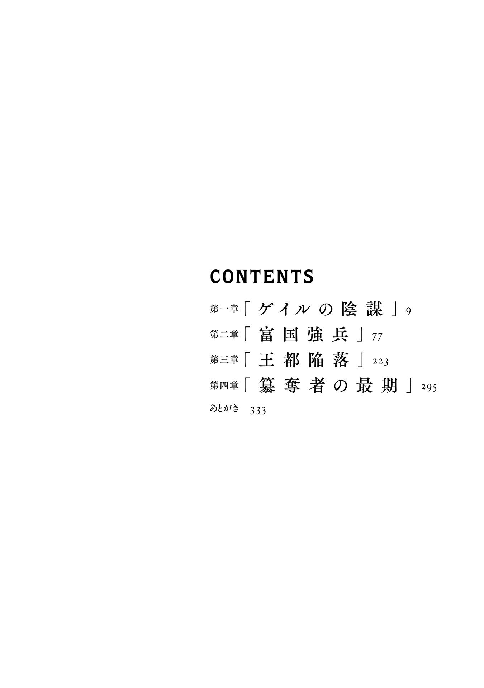

| 酷幻想をアイテムチートで生き抜く 2 | |
| 風来山 | |
| (2015) | |

※本作品の全部あるいは一部を無断で複製・転載・配信・送信したり、ホームページ上に転載することを禁止します。本作品の内容を無断で改変、改ざん等行うことも禁止します。また、有償・無償にかかわらず本作品を第三者に譲渡することはできません。
※本作品は電子書籍配信用に再編集しております。

第一章
「ゲイルの陰謀」
「ああっ、もうしつこいなーコイツらっ！」
王都の路地の角を一つ曲がるたびに、物騒な手斧や釘だらけの棍棒を片手に、怒声を上げながら、追いかけてくるならず者が一人増える。
追手の数は、もう十人を超えてるんじゃないだろうか。
俺はさらに走る速度を上げると、細い路地に滑りこむように逃げ込み、干してある洗濯物の間をくぐり抜ける。屑入れの木箱を飛び越えるついでに派手に蹴倒して追跡を妨害しながら、走り続けた。
執拗に追いかけてくる連中は、やはりゲイルの雇ったゴロツキだろうか。狙われているのはなんとなく察しは付いていたから、俺だって用心していたつもりだった。できるだけ一人にはならないようにしていたのだ。
ただ、生理現象だけはしょうがないと、ほんの一刻トイレに行くために、ライル先生達から離れてしまったのが運の尽きだった。
こういうとき、集団のなかで俺だけ性別が違うってのがネックなんだよ。
いまさら愚痴ってもしょうがないけど、なんで俺には男子の護衛がついてないんだろうと、裏路地を駆け抜けながらも悩んでしまう。どうしてこうなった。
ついさっきのことだ。表通りの店でトイレを借りて、さて小便をしようかと思った矢先に、やけに表が静かになったなと気がついたのだ。
俺が敬愛し、私淑する剣豪、宮本武蔵も「小用するときは無防備になるから気をつけろ」と『五輪書』に書き残している。どうも怪しいなと思い、そっと店の入口を覗きこむと、店はガラの悪そうなチンピラどもに囲まれて、店員さんが剣を突きつけられて黙らされていた。
俺だって、多少は酷幻想で鍛えられた。自慢じゃないが黒飛竜だって一刀のもとに倒した勇者である。治安の悪い王都でウロウロしてる無頼漢の一人や二人なら蹴散らしてやろうかとも思ったが、あまりに敵の数が多すぎる。
一目見て「あっ、これは無理だ」と判断した。しかし店の裏口からそっと撤退したところを、運悪く気付かれてしまったのだからたまらない。当然追いかけてこられてこのザマになったわけだ。
あとから言っても遅いが、こんなことになるなら無理やりにでも囲みを突破して、表通りに抜ければ良かった。近くにルイーズ達はいたのだから、そこまで切り抜ければなんとでもなったはずだ。敵にすっかり囲まれてからそう後悔しても、あとの祭りだけどさ。
おそらく、チンピラどもの狙いは最初から俺だったのだ。
ジワリジワリと包囲網を狭めてくるようなこの追い詰め方は、俺が一人になる機会を、ずっと付け狙っていたとしか思えない。
たくさんの人が行き交う王都の大通りとはいえ、敵の尾行に気が付かなかったのは迂闊としか言えない。
やはりこいつら、ゲイルの息のかかったものか。
薄汚れた路地を抜けると、路上に座り込んでいた目付きの悪い浮浪者が、胡散臭い顔をこっちに向けると、ニヤッと笑って立ち上がった。
「なんだよ......」
ボロ布をまとった薄気味悪い風体の浮浪者は、俺の前に立ちはだかると、懐から抜き身のショートソードをスッと出して、「ギェェ！」と鳥が鳴くような叫び声を上げて突きかかってきた。
「お前もかよっ！」
待ち伏せのつもりか。俺は、突き出された刃物を相手の腕ごと、光の剣で斬り払いながら、その横を素早く駆け抜ける。後ろから盛大な絶叫が聞こえたが、構ってられない。
敵に囲まれているこの状況で、手加減する余裕なんかない。向こうが殺す気できてるのだから、本気で殺らなきゃ殺られる。
斬り伏せた男の悲鳴で気がつかれたのか、日雇いの人夫や物乞いなどに扮していた連中が、ワラワラと駆け寄ってくる。全員プロの暗殺者だ。手に隠し持っていた刃物を出して襲い掛かってきた。
「クソッ、こいつらも刺客かよ！」
地の利は向こうにあるようだ。この手際の良さを見れば、あらかじめ計画的に待ち伏せていたに違いないが、とにかく今は逃げるしかない。
正面の一人ならなんとか切り抜けられるが、追手の数が多いのは厄介だ。逃げる足を止めれば、すぐにも群がってくる敵に囲まれてしまうだろう。
王都の裏路地は、奥に行けば行くほど薄汚れてスラム化している。昼間っから路上で酔いつぶれてゴミ溜めにうずくまっているオッサンや、みすぼらしい身なりの子供、そこにいるのはほとんどがただの貧民達だが、その中には厄介な連中も紛れている。
追剥、盗賊、巾着切、表通りを歩けぬような目付きの悪い日陰者達がたむろしていて、こちらに剣呑な視線を向けてくる。
無法地帯と化したスラムに立ち込める、濃厚な犯罪の臭い。その中にゲイルに雇われた刺客が紛れていて、誰が俺を狙っている奴なのか分からない。そこにいる全員が敵に思える。
『魔素の瘴穴』事件の影響もあって、王都の治安は地に落ちていた。死体がそこらに転がっている有様で、貧民街で人が一人死んだところで誰も気にしない。追い回して裏路地の奥に誘い込み、闇に葬ろうって魂胆なのだろう。ゲイルのやりそうなことではある。
「さて、どう逃げるか」
ピンチではあるが、最悪ではない。息を切らして走り続けながらも、まだ俺は冷静だった。逃げ足だけなら、かなり自信がある。
俺の靴は、酷幻想にやってくる前から履いている二万円もする最新式のハイテクシューズなのだ。
服にはこだわらないが、靴だけ良い物を履くのが俺のポリシーだったことが幸いした。高性能シューズが、スマートでスタイリッシュなのはデザインだけではない。
滑りやすい石畳の上でも、地面に吸い付くような走りを実現する高性能グリップ、素足よりも快適な履き心地の超軽量ラバー！
まだゴムが発見されてないこの世界では、現代から持ち込んだブランドシューズはもうそれ自体が立派なアーティファクトと言える。
某トップエンジニアリング機関の耐久テストをクリアした耐摩耗性ゴムソールが、ゴワゴワの革靴や動きにくい木靴を履いている雑魚に、足で負けるわけがないと信じさせてくれる。
逃げるだけならどこまででも逃げ切ってやるが、それだけではきりがない。徐々に追い込まれてきている感じもあるし、この局面を切り抜けるには......。
「いざとなれば、上に逃げるか」
俺は、裏路地の果てにある王都を囲む高い街壁を見上げた。
この不毛な鬼ごっこを終わらせるには、連中が絶対に追いつけないところまで、駆け上がってやればいい。
●
「ゴホッゴホッ......、待てこの野郎！」「いい加減に、観念しやがれ！」
セリフが言えてないぞ、三下ども。
俺を追ってくる刺客達は、みんな肩で息をしている。走りにくい靴を履いてりゃ、そりゃ疲れるさ。
そのうえ完全に囲まれてしまう前になるべく敵の数を減らそうと、裏路地を駆けまわりながら撒き菱や、かんしゃく玉をばらまいて翻弄してやったのだ。
ちなみに俺が追手を攻撃するのに使った撒き菱、動く百科事典ライル先生によると、この世界にもカルトロップというほとんど同じ武器があったらしい。まあ、考える人は考えるということなのだろう。
鉄製の撒き菱は以前は足止めとして効力を発揮したが、騎士がフルプレート装備になり、馬の蹄鉄が金属製になったために、戦場では次第に使われなくなったそうだ。
しかし、市街地での非正規戦闘では十分に使える。走りやすいように裸足に近い装備しかしていなかったチンピラどもは、足を鋭い棘に突き刺されてあっけなく無力化された。再評価されてもいい武器だ。
かんしゃく玉のほうも、意外に高い効果がある。踏むたびにチンピラが情けない叫び声を上げて、綺麗にすっ転ぶので面白くなって散々遊んでしまった。
激しい音と光がでるだけのオモチャの花火が、どうやら異世界の人間には奇妙な魔法に見えるらしい。俺の現代知識は、この酷幻想に立ち向かう武器となる。アイテムは使いようというものだ。
そうやって大多数の追手を翻弄して逃げまわり、この分ならそのまま大通りまで逃げ切れると高をくくったところで――
「――ッ！」
前方に、冷たい殺気が走る。
俺は走ったまま身をひねって、同時に光の剣を全開に展開させる。殺気に一瞬遅れて、重たい斬撃が、俺の身体を横薙ぎに打ち砕いた。
そのまま、ぐるっと一回転して地面に滑りこむ。
「ほうっ、今のをかわすか。ルイーズが子守をしなければ、何もできん若造だと思っていたが、勇者と呼ばれるだけのことはあったか」
どこかで聞き覚えのある声だった。チンピラとは段違いの殺気を放つ敵、気を取り直した俺は、即座に立ち上がって相対する。
俺に黒光りする大剣を叩きつけて来たのは、黒い髪をオールバックにして顔を鉄仮面で覆った髭面の大男。黒鉄の鎧に、漆黒の外套、鉄の仮面で顔を隠しているがその特徴的な出で立ちを隠そうともしていない。
「ゲイル......」
脇腹に焼けるような痛みを感じた、光の剣で撥ね除けたにもかかわらず、ミスリルの胴着を斬り裂かれて血が滲んでいる。
「......グッ」
ちゃんとかわしたはずなのに、いつの間に斬られたのか。刃に触れたつもりはない、ほんの皮一枚斬り裂かれた傷口のはずが、意外なほどに強い痛みが走る。のこぎりで切り刻まれたように、内側の肉をゴッソリと削り取られているようだ。
ゲイルの黒剣には何らかの魔法が付与されているのだろうか。黒飛竜の攻撃にも耐えきったミスリルの装甲を斬り裂くほどの業物とは一体。
驚愕する俺に、ゲイルは血塗られた大剣を構えながら勝ち誇るように笑い出した。
「ハハハッ、どうだ驚いたか。この剣は少し特別でな、相手の血を啜り肉を喰らうたびに成長する曰くつきの邪剣だ。銘を黒獣剣グレンデルと言う。ミスリルで身を固めた貴様を屠るために、たっぷりと生き血を吸わせてあるから覚悟するのだな」
大剣を大上段に構えるゲイルに、俺の全身にゾワッと怖気が走った。
俺は黒飛竜退治の勇者などと持て囃されて、油断していた。光の剣を持ち、ミスリルの胴着を着ているからどこか遊びのような気分でいた。それが身を守る装甲を斬られたことで凍りつくような恐怖を感じた。
強力な魔法装備を使うのは、俺だけではないということなのだ。生き血を啜るこいつの邪剣は、ミスリルを貫いて俺を殺せる。
「クソッ、これでも喰らえ！」
「フンッ、こんなチンケな花火でよくもやってくれたものだ」
俺が投げつけたかんしゃく玉を、ゲイルは恐れることなく大きな手を開いて受け止めると、握りしめて爆発させた。この程度の虚仮威しでは、びくともしないわけか。
翻弄されてバラバラになっていたゲイルの部下たちも、統制を取り戻して次第に集まりつつある。周りは敵だらけ、後ろは高くそびえる石の街壁。
王都の端まで追い込まれてしまった、袋のネズミ。
「ゲイル、近衛騎士団長自らが白昼堂々と暗殺に来るとか、いいのかよ！」
俺は時間を稼ぐために、わざと悔しそうに叫んで見せた。
楽しそうに鉄仮面の下の口元を歪ませるゲイル。集まってきたゲイルの手下は、三十人はいる。
三十対一は絶体絶命ではあるが、敵の油断を誘う好機とも言える。俺の予想通りゲイルは、剣帯の紐を弄りながら俺に叫び返してきた。
「近衛騎士団長のゲイルだと？ それはどこにいるのかな」
おどけた調子でしらを切るゲイル。鉄仮面をつけていても、ゲイルだと見る人が見れば分かるはずだが。
「バレなきゃ、何をやってもいいってことかよ！」
「王都の裏路地は、俺様の支配下だ。このスラム街で俺様が何をやっても、誰も何も言わんよ。それに、仮にも勇者の力を得た者を殺そうというのだ。俺様自らが出張らなければ、できないことだろうからな」
不敵な笑みを浮かべるゲイル。やっぱり乗ってきたか、こいつは勝ち誇るのが大好きだから機会は逃さないと思っていた。
「買いかぶってくれたものだな。俺はお前に命を狙われるほどのことをやったかよ」
「今更それか。小癪な若造がチョロチョロと足元を這いずり回ったかと思えば、『魔素の瘴穴』の封印までしてくれたのだ。佐渡タケル、貴様は目障りなのだよ。自分のやったことの意味も理解できていない愚か者がほざくな！」
「どういうことだ」
勇者と褒め称えられることは気恥ずかしいが、少なくとも俺のやったことは非難されるようなことではないはずだ。
「やはり、そんなことも分かっていなかったのか......。貴様が『魔素の瘴穴』を閉じたおかげで、衰えていた門閥貴族どもが力を盛り返してきてしまった。このままではせっかく止まっていた隣国トランシュバニア公国との戦争も、いずれ再開されるだろう。民を救う勇者とは片腹痛い。貴様のやったことは王国に無用な戦乱を広げただけだ」
「貴族の派閥争いなんか知るかよ。そこまで強いならお前にだって『魔素の瘴穴』の封印はできたはずだ。じゃあ、物の分からない俺に教えてくれ。モンスターに苦しむ民を放置して国を裏切るのが、仮にも王都を守る近衛騎士団のやることなのか」
「ハハッ、苦しむ民だと、国を裏切るだと......フハハハッ、いいなそれは！」
ゲイルは堪えきれぬと言いたげに、笑い出した。
「何が可笑しい」
「青臭い物言いが、いかにも勇者様らしいじゃないか」
「俺は間違ったことは言ってない」
「甘いな貴様は。それで領主が務まるものか。民などいくら死んでも代わりはいるというのが、シレジエの貴族なんだよ」
「ゲイル......」
それが貴族と言うなら、俺は貴族などに成りたくない。
「フッ、まあ良いわ。冥土の土産は、これぐらいにしておこう。そんな風に薄甘い貴様だから、何も分からず死ぬことになるのだとさえ知っていればいい！」
やはり、ゲイルは倒すべき敵だ。俺も懐に手をやって、反撃の準備を整えた。
「確かに、俺は甘いのかもしれないが。ゲイル、教えてくれた礼に俺も一つ忠告してやろう。お前は、前口上が長すぎる。獲物を前にした舌なめずりは、三流のやることだ」
俺の尊敬する軍曹殿の受け売りだが、圧倒的な優位に立っても油断大敵なんだよ。俺の言葉を苦し紛れとでも思ったのだろう。ゲイルは、余裕の笑みを浮かべると黒の大剣を肩に構えた。
「そうか忠告ありがとう。では貴様の望みどおり、すぐに殺らせてもらう！」
ゲイルは、血に染まった赤黒い大剣を掴んでジリッと距離を狭めてくる。その動きは無造作に見えて、まったく隙がない。まさに手練だ。
鉄仮面の下で鈍く光るゲイルの睨めつけるような視線を受けただけで、周囲の温度が二、三度下がったように感じる。
直接対峙して初めて分かった。ゲイルは、髭面の粗暴な見た目よりずっと巧みな剣士だ。
剣の腕前はルイーズと同等か、もしかするとそれ以上。曲がりなりにも身ひとつで近衛騎士団長にまで上り詰めた男というわけか。
これほどの強い剣圧を持った剣士が、ミスリルをも斬り裂く黒獣剣を構えて迫る。こんなのと、まともに斬り合いはできない。
「なんだ佐渡タケル、この期に及んで臆しているのか。さあ、勇者様がたった一人でどう立ち向かうのか見せてくれよ。何なら騎士らしく、最後は俺様と一騎打ちでも構わんぞ」
「誰が......」
「あん？」
「誰が、まともに戦うと言ったっ！」
俺はコットンに難燃剤を染み込ませた懐の火薬袋から、擲弾を取り出して導火線に『炎球の杖』で火をつけて投げつけた。
ジジジジッと、足元に転がる擲弾の導火線が音を立てて燃えるのを見て、ゲイルが吐き捨てるように言った。
「フハハハッ、勇者ご自慢の光の剣でくるかと思えば、また性懲りもなくつまらぬ花火か。お前ら、こんなものに怯むことはない！」
残念だが、これは違うんだよな。
俺が前に雑魚モンスター相手に実験した手榴弾は、陶器の中に火薬を詰め込んだ焙烙玉だったが、今度は鉄製の容器を採用している改良型だ。もちろん中には、火薬と一緒にタップリと鉄片も埋め込んである。
「大砲や銃とかいう武器ならともかく、こんなオモチャは音と光が出るだけの......」
原始的な手榴弾でも、しっかりと圧力をかけて詰め込まれた火薬の炸裂はバカにできない。俺の擲弾をゲイルが鋼の具足で踏み潰そうとした瞬間、擲弾が炸裂した。
爆発とともに、激しく上がる白煙。周りにいた雑兵達も悲鳴を上げて吹き飛ばされているほどだ。直撃を喰らったゲイルは叫ぶ暇もなかった。
擲弾の激しい衝撃と音は、敵を戦闘不能に陥らせる。さらに、破裂とともに撒き散らされた鉄片が辺り一面に追加のダメージを与えていた。
それにしても耳鳴りが酷い。鼓膜がやられたかもしれない。歯を食いしばって耐えたが、投げた俺にまでダメージがあった。威力が強大すぎる。調子に乗って火薬を詰め過ぎたかもしれない。大見得を切ったあげく、吹き飛ばされたゲイルの間抜けっぷりを笑っている余裕はなかった。
今ので倒せていたらいいが、ゲイルの鎧は強化魔法が掛かっているだろうし敵の数も多い。ここはさっさと引くのが賢明か。
ちょうどいい新兵器の実戦テストができた。擲弾は、実戦でも十分使える兵器だ。材料が黒色火薬のせいか、やたら白煙が出るのもこの状況であれば好都合。むしろ完全な煙幕には、少し足りないぐらいなので足してやろう。
「お前らも消し飛べっ！」
わざと大声で叫びながら、続けてウエストポーチから取り出した短い鉄筒のレバーをカチッと強く握りしめて、囲んでいる敵に投げつけた。
「うあああっ！」「ぎゃあああ！」
さっきの大爆発を見ているせいか、派手に赤い火花が散る鉄筒が転がっていくと、雑兵達は口々に悲鳴を上げながら凄まじい形相で逃げ惑った。
なんのダメージもないはずなのに、爆弾を喰らったと勘違いしたのか、激しい火花を見ただけでそのまま倒れて失神してしまった奴もいる。
「なんて、そっちは爆弾じゃないんだけどね」
続けて投げたのは煙遁の鉄筒であった。レバーを握り締めると、火打石の火花が金属粉を混ぜた火薬に触れて、赤い火花と白煙が撒き散らされる撤退用のアイテムだ。
二つほど投げつけて辺りを煙に巻くと、俺はバックパックから鉤縄を取り出した。王都の街壁に向かっておもいっきり放り投げる。ロープを手繰り寄せると、カチッと硬い手応え。
「よしっ、フックした」
王都を囲む壁は、せいぜいが四メートルほどの高さだ。鉤縄を引っ掛ければ、簡単によじ登れる。
攻城戦を想定して......というより、壁を登れたら忍者みたいでカッコイイという思いつきだけで作っておいた試作品だが、こんなところで役に立つとは思わなかった。なんでも作ってみるものだ。
ところどころロープを結んで登りやすくしてあるが、それも必要なかったぐらいだ。俺が履いているハイテクシューズは、石壁にもしっかりとグリップする。
ひょいひょいと駆け登って、颯爽と街壁の上に降り立つ。
そしてロープを引っ張り上げてしまえば、もう敵は追ってこられない。
ヒュッと顔の横を、太矢がかすめて飛んでいった。
擲弾の直撃を喰らったというのに、街壁の下で体勢を整えなおしていたゲイルは、煤だらけになった酷い顔で、こっちに弩を射ちこんでくる。
顔は半ば焼けて、着けていた鉄仮面はどこかに吹き飛んでしまっていた。それなのに、まだ平然と攻撃してくる。
「しぶとい奴だな......」
弩は、十分な殺傷力があり、厄介な飛び道具と言える。だが、威力が強い代わりに矢が短いので、弾道が不安定な欠点がある。遠距離から、しかも上方に向かって射っても、そう当たるものではない。
「クソッ、降りてこい卑怯者め！」
街壁の下で、弩を装填しながらゲイルが叫んでいるのが聞こえる。ゲイルの部下たちも数人が飛び道具を持っていたらしく、こっちに太矢を飛ばしてくる。
「飛び道具を使っておいてどっちが卑怯だよ。こういうのは先手必勝だ！」
先に襲撃を受けた俺が言うセリフでもないが、ゲイルにも油断があった。
飛び道具を持ってるなら、俺との直接対決にこだわらず囲んでからさっさと矢でも射っていたほうが良かったのだ。
黒獣剣か何か知らないが、カッコつけすぎで詰めが甘かったのはそっちだったなと思いつつ、火薬袋の中を探る。
良し、まだ擲弾が残っていた。すぐに導火線に火をつけて、ヒュンヒュンと風を切って飛んでくる太矢の方角に投げる。
ドンッと音がして、下が静かになった。白い硝煙が晴れると弩を構えていた狙撃手が、仰向けに転がっているのが見えた。
飛び道具を投げ合うなら、街壁の上に陣取った俺が圧倒的に有利。
これ以上は、犠牲が増えるだけと悟ったのだろう。いつの間にか味方を盾にするように後方に下がっていたゲイルが、「引けっ！」と号令をかけて漆黒の外套を翻して去っていった。刺客達も、三々五々と裏路地に消える。
引き際も鮮やか。統制が取れているところを見ると、こうやって裏路地に誘い込んで邪魔な相手を暗殺するのは、ゲイル達にとって日常茶飯事なのかもしれない。
こんな無法地帯が首都だっていうんだから、このシレジエ王国も長くないかもしれない。ここまで酷い状況になっているとは......。
蜘蛛の子を散らすように消えたゲイル達がいた場所を見下ろして嘆息していると、「あのぉ......」と横から声をかけられた。
「うわーっ！」
今度は街壁の上に伏兵かと思った俺もビックリしたが、相手は俺の絶叫にもっとビックリして腰を抜かしたようだ。
ゲイルの手の者ではない。くたびれた革鎧を着て槍を取り落としてしまった若い兵士は、どうやら街壁の上を巡回している衛兵だったようだ。
そりゃ、あれだけ爆発音が聞こえたら衛兵も来るよね。若い兵士は、完全に怯えているようで腰を抜かしたまま震えている。
「あっ、なんか驚かせてしまったみたいで、すみません」
手を引いて、立ち上がらせてやる。
「いえ......こちらこそすみません。それよりこの惨状は一体何があったんですか」
さて、どう説明したものやら。
「あの、その前に......ここってトイレはないかな！」
ホッとしたら、猛烈な尿意に襲われた。そういえば、まだしてなかった。
●
街壁につながる塔でトイレを借りてから、どう説明したものやらと思っていると、若い兵士が、俺のバックパックに付いてる紋章の飾りを目ざとく見つけて、騒ぎ出した。
「これは黒飛竜の紋章！ もしや貴方様はシレジエの勇者、佐渡タケル様では！」
「まあ、一応そういう者だけどね......」
シレジエの勇者と呼ばれている俺が、黒飛竜を一刀のもとに倒して『魔素の瘴穴』封印に成功した逸話は、かなり有名になってきている。
ちなみに、新任のアンバザック領主となった俺の紋章が飛竜なのは、黒飛竜退治に因んでというわけでは全然ない。
特に指定しなかったので、旧アンバザック男爵家の紋章をそのまま使っているだけなのだ。
例のゾンビ男爵の家は、初代が飛竜退治の英傑だったそうで、キャラが被ってしまったのは単なる偶然である。
ゾンビになってしまった前の領主を倒して勇者になったという、かなり差し障りのある真実より、黒飛竜退治の勇者のほうが聞こえが良いので、都合の悪い話は黙っているのだ。
俺がシレジエの勇者だと知って、詰所から壮年の兵士長まで出てきて挨拶され、下にも置かぬもてなしになったのはいいのだが、なんだかくすぐったい気持ちにさせられる。
しかし、ここまで歓待されたにもかかわらず、俺が「ゲイルに襲われたので返り討ちにした」と説明すると、認めてもらえなかった。
と、いうか......妙な反応だった。
兵士長も兵士達も、みんな顔を見合わせて押し黙っている。まだ気絶して転がってるゲイルの手下を捕まえて尋問すれば、証言は得られる。そう言っても兵士は動かない。
なんというか、お願いだからそのことには触れてくれるなという重たい空気。
「あー、ご主人様、大丈夫ですかっ！」
重たい空気を払拭する可愛らしい声が聞こえて、後ろからいきなり抱きしめられた。
「シャロンか」
この声、この背中に当たる程よく柔らかい弾力は、わざわざ確かめなくてもシャロンである。
「ご無事だったんですね。良かった......」
ようやく落ち着いたシャロンは、身体を離すと俺が生きているのを確かめるかのように、ペタペタと頭から順に身体を撫でさすり始めた。別に構わないから、されるがままにしておくが、その確認は毎回やらないとダメなのか。
駆け込んできたシャロンに続いて、詰所の前に流れ込んできた銃を構えた奴隷少女銃士隊に、衛兵達が血相を変えた。
大きな銃を構えて整列する銃士隊は、シフトで入れ替わりもあるが常に一個小隊規模を維持してる。小柄な少女達だが、俺の近衛としての士気も高くモンスターとの実戦経験を積んでいることもあって、その動きは機敏だ。
武装した少女の一団に囲まれては、詰所の兵士も浮き足立つ。
「大丈夫だ、こいつらは俺の兵隊だから」
俺が兵士達を安心させるために言うと、後ろから抱きついてくるシャロンが泣きわめいた。
「大丈夫だーじゃありませんよ、ご主人様。危ないことは止めてくださいって、いっつも言ってるじゃないですか。一人じゃ危ないってあれほど言ったのに！」
シャロンが、背中から一向に離れてくれない。首元に手を回されて、擦り寄せられるシャロンのオレンジ色の髪の毛の感触が、なんかワサワサする。
兵士達の眼の前で、これは結構恥ずかしいぞ。前かがみになったら今度は背中に乗ってきた。なんだこれ、シャロンなりの罰ゲームのつもりなのか。
羞恥プレイに近い、濃厚なスキンシップに辟易している俺の前に、大きなマスケット銃を肩に乗せた小さいドワーフ娘のロールが、トコトコとやってきた。
「なんだロール、お前もなんかあるのか」
「だめだよーごしゅじんさま、しんぱいかけちゃ」
わざとらしく指をさしたロールに諭されてしまった。なんか前にも同じパターンがあったような気がする。何のコントな人だよ。
ロールのしたり顔が可愛らしく、ちょっと面白かったので思わず噴き出してしまったが、これが笑い事では済まなかった。
この事件から以降、心配性のシャロンの指示で、奴隷少女の護衛がどこまで行っても付きまとうようになり、俺はおちおち一人でトイレに行くこともできなくなってしまった。
毎度ながら、奴隷に自由を奪われるご主人様という悲惨なパターンであった。
●
「タケル殿は、ゲイルに直接襲われたのですね」
「もしかして、先生もゴロツキに襲われたんですか」
ライル先生は、渋い顔で頷く。
「私達のほうも襲撃がありました。だから、タケル殿を助けに行くのが間に合わなかったのです。必死に捜したのですが、遅くなって申し訳ありません。今回は私の油断でした」
奴隷少女達の後に続いてやってきたライル先生は、ゲイルに襲われたという俺の話を聞いて渋い顔をしている。今回は本当に危なかった。これはもう、ゲイルと殺るか殺られるかの本格的な抗争になってきたみたいだ。
「いや、不用意に一人になった俺も悪かったんですよ」
先生は静かに頷いて、麗しい頬に手を当てて深い溜息を吐きつつ、まぶたを閉じる。キスを待っているわけではない、深く考えこむときの先生の癖だ。
先生の方は、リアもルイーズも奴隷少女銃士隊もいたので、ゴロツキに襲われても簡単に返り討ちにできたらしい。
しかし、その隙に俺と分断されてしまった。だから、そっちは俺を確実に孤立させるための陽動、時間稼ぎだったのだ。
先生の油断というより、白昼堂々の襲撃に浮き足立って逃げてしまった俺のミスだった。
ゴロツキを使って襲わせるのにも部隊を分けてくるとは、気をつけているつもりで俺達はどこかでゲイルのことを甘く見ていたのだろう。
「ところでタケル殿、ゲイル近衛騎士団長に襲われたと話したとき、詰所の兵士達の反応はいかがでしたか」
「......なんか微妙でしたね。信じてもらえないってわけじゃなくて、そのことについては話したくないみたいな」
俺の話を聞いて、形の良い眉を顰める先生。
「白昼堂々の襲撃を見ても王都の治安を守る兵士達がそんな反応とは、どうやらゲイルは、すでに王都の軍権を掌握してしまっていると考えたほうがいい。これは大変良くない状況です」
ライル先生が、そこまで強い口調で言うのは珍しい。
「と、言いますと」
「今のままでは『偽の聖棒』に残る証拠を使っても、ゲイルを追い落とすのは難しくなった......ということです」
「それは......」
俺は、思わずリアのほうを見る。
普段通り明るく振る舞ってはいるが、ゲイルが親代わりでもあった師匠の仇だと知ってから、少し元気が無い。
俺はどうしても気になって、黙って俯いているリアのフードを覗きこんだ。
リアは、今にも泣き出しそうな潤んだ瞳で俺を見つめて、それでも口を噤んだ。
「なんだよ、普段は余計なことばっかり言ってる癖に、リアも思ってることを言え」
「......」
何も言わずに寂しそうに微笑む彼女を見て、無駄口を叩かないリアは静かでいいなーとは、到底思えなかった。俺は、リアの師匠の仇を討ってやると約束したのだ。それなのにこの体たらくとは。
「今回の襲撃の件を証拠に、ゲイルを糾弾してもダメなんでしょうか」
「それも、私達の証言だけでは、やったやってないの水掛け論になるだけです。とりあえず宿に帰ってから、今後の対策を練り直しましょう」
こんな場所に長居は無用なので、宿屋に戻ることにした。
王都の治安が悪いから、俺達だって考えて、立派な石造りのそれなりに高い宿屋を借りてあったのだ。
にもかかわらず、宿屋に戻ってきたら俺達の部屋が見るも無残に荒らされていた。
部屋がかき回されただけで、金目の物が奪われているわけではない。ただの物取りではなく、ゲイルの手の者の犯行であることは一目瞭然であった。
ゲイルの雇った泥棒は、『偽の聖棒』を探したのだろうが、もちろんこちらだって用心して分かりやすい場所には隠していない。聖棒は、ゲイルが思いも付かないだろう場所にある。
しかし、次から次へとゲイルに先手を打たれ続けているのは、問題だった。
「こうやって執拗に探させているところを見れば、ゲイルが国を裏切った証拠となる『偽の聖棒』は、まだ武器として使えるということでもあります」
荒らされた部屋の痕跡を調べながら、ライル先生は話を続ける。
「雇われた泥棒を捕まえて、証言させても無理ですか」
「おそらく、トカゲの尻尾切りで終わります。ゲイル自身を裁けないと意味がありません。ゲイルの罪を裁くのは建前上、シレジエ国王の王権、あるいはアーサマ教会の神権ということになりますが......」
ライル先生がそう言ったところで、リアが肩を震わせる。
「......これは、正義ではなく政治の問題になります。腐りきった国では、そうなってしまうんです」
ライル先生が、冷たい声でそう吐き捨てた。
「公的にゲイルを裁けないなら、いっそ闇討ちにしてしまえば......」
王都の治安維持は機能してない。相手が先にやってきたことだから、やり返したっていいはずだ。俺がそう言うのを聞いて、ライル先生は血相を変えて俺の肩を掴む。
「勇者になったからって、あまり自分の力を過信しすぎないでくださいよ。さっきの襲撃だって危なかったのに、上級魔術師がいたらどうなってたと思っているんですか！」
先生が声を荒らげるのは珍しい。
確かに単独でまんまと誘い込まれてしまった俺は迂闊だった。ゲイルが連れていたのがただの雑兵だったから助かっただけだ。襲撃の際に強力な魔術師がいたら、魔法への対抗手段を持たない俺は本当に殺されていたかもしれない。
「すみません、つい......」
叱られて当然だろうと思う、先生の言うことが正しい。俺は『ミスリルの胴着』なんか着て、強い武器を持ったから増長しすぎていた。
「いえ、私もキツく言い過ぎましたけれど、タケル殿一人ではないんですよ。御身は、大事にしてください」
ライル先生がそう言うと、周りのみんなも一様に頷いた。
「心配をかけてしまってすみません、気を付けます」
「脅かすつもりはないんですよ。今後は行動に気を付けてくださいってことです。魔の山の戦いのときに出てきた上級魔術師がまだ生きてるかどうかは分かりませんが、王都で魔法による攻撃を仕掛けてくることはないと考えています」
「というと？」
「王都の魔術師団には、上級の魔術師が二人います。私と同じ中級の魔術師も五人います。強力な攻撃魔法が使われれば、魔術師には分かりますから......」
魔法の力は、強い分だけ抑止力もある。王都で強力な攻撃魔術を使用したら、魔術師団に招集がかかって抑え込まれることになるそうだ。
どれほど強大な力の上級魔術師でも、たった一人では王都にいる魔術師全員から対抗魔法を受けて封じられてしまう。
大規模な攻撃魔法が使える上級魔術師の存在は脅威なだけに、その抑止方法も研究されている。だから、戦争にでもならない限り守りの堅い王都で、直接襲われることはないだろうと。
「ふむ、王都はむしろ安全とも言えるんですね」
「そうですね。私が言いたいのは、ゲイルはすでに王都で軍権を握っている上に、こちらが把握できてない後援する勢力がいるってことです。それがシレジエ王国に敵対する外国勢力なのか、あるいはもっと別種の組織なのかまでは分かりませんが、ゲイルだけを殺せば良いという短絡的な発想では、足元をすくわれかねません」
「でも、こっちはもう襲撃されてるんだから何か手を打たないと。ゲイルをすぐに倒せないなら、当面どうしますか」
当然ライル先生ともあろう御仁が無策というわけもなく、俺の質問に嬉しそうな笑いを浮かべた。
対策は、しっかり考えていたのだ。
「そうですね、とりあえずゲイルを脅迫でもしてみましょうか」
「脅迫ですか？」
こっちから逆にゲイルを闇討ちしようかとすら思い詰めていたところに、先生のあまりにも意外な提案に、俺は拍子抜けした。
糾弾でも、暗殺でも、話し合いですらなく、脅すとは......。
「いいですかタケル殿、ゲイルを追い落とせないのは、まだ王都にいる彼を支持する勢力が強すぎるからです」
ライル先生の説明によると、今の王宮には大きく分けて門閥貴族による保守派と、ゲイルによる改革派の二大派閥があるそうだ。
「悪漢のゲイルが、改革派というとおかしな感じがしますけどね」
「今回の襲撃でも分かるように、ゲイルは自身の栄達のために卑劣なことをしています。でも、ゲイルが低い身分から近衛騎士団長にまで出世したことで、名門の血筋に連なる者しか重用されなかったシレジエの宮廷に、実力主義の風穴を開けたのも事実なんです。それを好ましく思って、従う人も多いということです」
むしろ、そういう区分けだと名門武家出身のルイーズや上級魔術師の家系であるライル先生は、保守派に属することになる。
「貴族出身者じゃない騎士や兵士から見ると、実力主義のほうが良いからゲイルの味方をしてるってことでしょうか」
「その傾向はありますね。ゲイルの唱える門閥に囚われない能力主義が、間違っているとは言いません。しかし、それも所詮は一部の人間の私欲によるもので、門閥貴族の専横がゲイルの強権政治に成り代わっただけです。現状を良しとはしない改革派は、きっと私達の味方になってくれるはずです」
「それが、ゲイルを脅すって話にどう繋がるんでしょうか」
「ああいう手合いには、話し合いをもちかけるより、脅したほうがいいってことですよ。金が目的だと言ったほうが、油断するでしょう」
ゲイルが俺達を執拗に付け狙うのは、奴の急所を突くような証拠を握っているからでもある。
それを使って糾弾するのではなく、まず脅迫する。ゲイルは俺達の他にも政敵が多いから、利害関係が一致すれば、当面こちらへの攻撃の手は止まるだろう。時間を稼いで、その間に政治的にも実力をつけてから、ゲイルを追い落とせばいいと先生は言うのだ。
「つまり、それだと俺は何をやったらいいんでしょう」
話が政治的なことに及ぶと、複雑すぎて俺は迷ってしまう。
「タケル殿、ゲイルと比べて貴方が優れている面はどこだと思いますか」
「えっ、ゲイルに比べてですか......」
ちょっと分からない。俺はゲイルと同じ男爵にはなったものの、領主としても新米だしゲイルのように勢力を築いているわけでもない。個人の戦闘力なら勝てると思い込んでいたのだが、ゲイルは勇者の光の剣に匹敵する黒獣剣という魔剣を有していた。
こうなると、どの面で勝負したらいいのか分からない。
「簡単なことですよ。タケル殿は、シレジエの勇者ではありませんか」
「どういうことでしょう」
その勇者の光の剣でも、ゲイルは討ち果たせないと思えたのだが。
「貴方がゲイルよりも優れている面は、民に愛されていることです。貴方が行なってきたことは、シレジエのどの為政者よりも正しい。それは、私が保証します。貴方は今のまま進んでいけばいいんです。英邁なる領主として男爵領を復興させ、佐渡商会をさらに発展させ、義勇軍の戦力をさらに拡充していけばいいではありませんか」
「なるほど」
「国は誰の物でしょう。私は、王でもなく貴族でも官僚でもなくそこに住まう民の物だと考えます。民の衆望を集めるタケル殿が、改革派の新しい象徴と成るように、この私がしてみせます！ そうすれば、ゲイルは自然と宮廷内でも支持を失い、失脚することでしょう」
ライル先生は、胸を叩いて保証すると言った。
「そうか、先生がゲイルを倒すだけではダメというのは、そういうことを言いたいのですね」
「タケル殿、大義のないやり方ではゲイルと変わらないじゃないですか。暗殺はいけませんよ。仮にそれでゲイルを殺すことに成功しても、今度はゲイルが抑えていた保守派の反動が起きて、内乱になる恐れだってあります。国内の混乱を機会に、シレジエと敵対する国が攻めてくるかもしれない」
「国の内情は、そんなに酷い状況なんですか」
名門貴族と呼ばれる連中はよく知らないが、今の王都に新興貴族である俺に近寄ってくるような酔狂な貴族はいなかった。王宮に行って分かったことは、ダナバーン伯爵のような気の良い貴族というのは、珍しい部類だということだ。
「タケル殿、今のシレジエ王国は、根本まで腐って今にも崩れそうな樫の木のようなものですよ。どんなことがきっかけでバランスが崩れるか分からない危険な状態です」
「ゲイルと敵対している派閥は、こっちの味方はしてくれないんですか」
「因循な保守派の大臣や門閥貴族が、こちらの味方になってくれるとは到底思えません。ゲイルの台頭と同じように、タケル殿の成り上がりも快く思わない大貴族は多い。せいぜいが中立、下手をするとゲイルの側に回るか、ゲイルよりも厄介な敵になってしまう可能性もあります」
「王都の惨状を見れば、それはなんとなく分かりますけどね」
貴族という連中は、その多くが自分の利益しか考えてなくて、小さな派閥にいくつも分かれているのだ。だからその間隙を縫って、ゲイルみたいな男が権力を握ってしまえる。
俺には王都の複雑怪奇な派閥争いまではよく分からないが、澱んだ空気が王都に渦巻いているのは肌で感じる。その息が詰まりそうな暗雲を吹き払わないことには、根本的な解決にはならないのは分かる。
ライル先生は、ぴっちりと上までボタンを留めた官服の襟元を手で正してから、瞑目して俺に頭を下げた。
「どうか、今少しご辛抱いただいて、私に万事任せて頂きたい。私達王都の官僚にも、心ある者はいます。それは騎士団や兵団も変わりませんよね、ルイーズさん」
押し黙って直剣の柄を握りしめていたルイーズは、静かに赤毛を揺らして頷いた。本来なら、ルイーズが真っ先にゲイルをたたっ斬りに行きそうなものだが、騎士団に戻らないかというローグ宰相の誘いも断って、ずっと俺達と一緒にいる。
ルイーズはルイーズなりに、考えていることがあるのだろう。
「もちろん、俺は先生の言うとおりにしますよ」
「それを聞いて安心しました。現状を言えば、ゲイルの派閥に付きそうな国軍は、近衛騎士団千騎に加えて、第三、第四、第五兵団の三千です。私は、こちら側に付くようゲイル麾下の兵団長に引き抜き工作をかけてみますよ。タケル殿は、新しい領地の地盤を固めつつ義勇兵団を増強してください。こちらにはダナバーン伯爵の後援もあります、パワーバランスさえこちらに傾けば、ゲイルを追い落とす機会は見つかるでしょう」
「政争どころか、戦争するみたいな勢いですね」
「もちろん内乱なんて起こすつもりはありませんけど、実行力の裏付けがなければ、国は動かせないんですよ。全ては、ゲイルを失脚させるためです」
王都で見た兵士達を思い出すと、先生の言うことはもっともだと思えるのだ。彼らは卑劣な手を使うゲイルが好きなわけでも、正しいと思っているわけでもない。ただゲイルが勝ちそうだから、アイツの味方をするしかないだけだ。
奴の権力が衰えれば、自然と人心は離れていくだろう。ただ、領地の内政に、軍備の増強に、政治工作、どれだけの時間がかかることか。
「まあやるしかないですね。俺もせっかく領主になったんだから、領地経営を頑張ってみますよ」
「頼もしいです。あとはゲイルのバックにいるらしい、上級魔術師を動かせるほどの勢力が何なのかも、探りを入れておかなければなりませんね。これから色々と忙しくなります」
先生はそう言って笑った。
そちらはそれでいいとして、俺が気になるのはリアのことだ。
俺がもう罪の糾弾なんてどうでもいいから、ゲイルをさっさと殺してしまえばいいなんて考えたのは、リアが一人で思い詰めて、早まった真似をしないか心配だったからだ。
普段はうざったいほどに明るくて図々しい彼女は、こういうシリアスな話になると、なぜかとても慎み深くなる。
一人で悩んで、俺の迷惑にならないようになんて考えて、一人で仇討ちに行ったあげく、リアがゲイルに返り討ちにあったら後悔してもしきれない。
「なあ、リア。お前はどう思ってるんだ」
ベッドに座って黙っているリア。俺は、彼女が目深に被っているフードを外した。
少しウエーブがかかった美しい金髪があらわになる。普段は顔を見せないとか言っているのに、こうしてやっても何も抵抗しない。
リアが深刻そうな顔をして黙っていると、不安になる。仇の話だというのに、何も言わないのだから。
「タケル......、私は勇者のシスターですよ。貴方の決定に従うだけです」
消え入るような声。リアの潤んだ碧い瞳は、まるで深い海の底のようだった。綺麗だが、とても悲しい色に見えた。
「リア、俺はとりあえず先生の策に従って動くが、お前の気持ちは分かっているつもりだ。我慢できなくなったら言えよ、約束は絶対に守る」
「ありがとう、ございます......」
リアは、静かにフードを被り直して、肩を震わせている。いつの間にか隣に来たルイーズが、優しくリアの肩に手を触れて言った。
「その時は、私も一太刀浴びせさせてもらおう。ゲイルの奴には、煮え湯を飲まされたからな」
リアは、俯いたままでルイーズにもお礼を言っていた。ローブの膝を濡らした涙は、見なかったことにしておこう。
さてそうと決まれば、まずライル先生の策通り、ゲイルに脅しをかけるところから始めることにするか。
●
「ところで、タケル殿はシルエット姫にお会いにならないんですか」
王城の正門から入り、中庭を抜けて赤絨毯の敷き詰めてある大広間に入ったところで、ライル先生が思い出したように尋ねてきた。
唐突な話だが、シルエット姫のことはずっと考えていたことだ。
「えっ、会えるんですか」
あのハーフエルフのお姫様は深窓の令嬢......と言えば聞こえは良いが、エルフとの混血なので正式な王族とは認められず、後宮の奥に閉じ込められていると聞く。
一目彼女の姿を見てから、俺はライル先生に姫の話を良くするので、気を回してくれたのだろうか。
「普通は会えませんが、タケル殿は救国の英雄ですからね。望めば会見の機会ぐらいは設けられますよ。私にも、多少の伝手はあります」
「じゃあ、もしできたらお願いします」
シルエット姫に、俺は運命を感じていた。
なんて言うと、すごく安っぽくなってしまうのだが、あのとき感じた不思議な既視感を何と表現したらいいのだろうか。言葉に上手く言い表せない特別な気持ちを、もう一度だけでも会って確かめてみたかった。
そうすれば、何かが分かるかもしれないと思えた。
「さてとタケル殿、この部屋ですよ」
王城の中の控えの間の一室。
ゲイルとの会見場所として、双方の安全が確保できる場所となると宮廷内しかなかった。
こちらは、ライル先生と俺の二人だけである。俺にいつも付き従っている銃士隊も、王城の外で待っている。
ライル先生がゆっくりと部屋の扉を開けると、黒金のフルプレートメイルの上から黒外套を羽織ったゲイルが、赤々と燃える暖炉の前で仁王立ちしていた。
思わず身構えると、「心配するな、俺様一人だ」とゲイルは吐き捨てるように言い、フンッと鼻を鳴らして、部屋の中央にある木製のテーブルに抱えていた鹿皮の大袋を投げ出した。
「ほらっ、これで金貨三百枚分ある」
革袋の中から卓上に、金貨や銀貨が盛大にぶちまけられた。ジャラッと音を立ててこぼれた硬貨には片銅貨まで交ざっている。ライル先生は、チラッと一瞥しただけで硬貨を数えもせず「確かに」と笑った。
「要求通り金を出したんだ。そっちもさっさと約束の物を出せ！」
苛立たしげに怒鳴るゲイルを前にしても、ライル先生は悠然と微笑んでいる。先生は手に持っていた羊皮紙の束を広げて、羽根ペンとインクを置いた。
「ゲイル団長。約束は、金だけではありませんでしょう。ご領地にあるお屋敷の権利をこちらに譲る契約書です。さあ、サインをお願いします」
ゲイルは苦虫を噛み潰したような顔で、ライル先生が差し出した羊皮紙を睨みつけると、悔しそうに呻き声を漏らしながら乱雑に名前を走り書きした。
「この守銭奴が、図に乗りおって」
「サインだけでは約束を反故にされるかもしれません。近衛騎士団長の印もお持ちですよね。そちらも押してもらいましょうか」
「きっ、貴様ッ！」
「念には念を入れるということです。サインに実印まで付いていれば、誰が見ても正式な書類と分かりますからね。もちろん、近衛騎士団長閣下がお嫌ならこの交渉はなかったことにしてもよろしいのですよ」
「チイッ、書記官風情が俺様に向かって舐めた口を叩く......これでいいんだろうが！」
忌々しげに睨みつけたゲイルであったが、ライル先生が微笑んだままで一歩も引かないのを見ると、これ見よがしに舌打ちして懐から大きな印鑑を取り出してサインの上に押印した。
「ありがとうございます。ここまで正式な書類になれば安心ですね。どうぞお約束のものをお持ちください」
サインの上に押された朱印を確認したライル先生がようやく聖棒を差し出すと、ゲイルはひったくるように奪って黒外套の内側にそれを包み込んでから、今一度こちらを憎々しげに睨みつけた。
そして、甲冑の具足をガッチャガッチャと腹立たしげに鳴らしながら去っていった。バタンッと、大きな音を立てて扉が閉じられる。
俺は卓上の硬貨をかき集め、革袋に詰め直しながら、先生に聞く。
「しかし、あのゲイルがよく取引なんかに応じましたね」
「ゲイルは、ああ見えて合理主義者ですから。金で厄介事が片付くなら、払うとは思いました」
「しかし金貨三百枚分は、キツかったんじゃないですか？」
商会経営で儲けている俺達なら用意できない金額ではないが、現金収入に乏しい男爵には大金のはずだ。
「こういうのは、安く言うと却って不審がられます。ゲイルが個人で払える限界に近い金額を言いました」
ライル先生は、床に転げ落ちた片銅貨を一枚拾い上げて意味ありげにほくそ笑むと、革袋に詰め込んでいる俺に手渡した。
そうか、ゲイルに限界まで金をかき集めさせたせいで、こんな小銭まで交ざってたということなのだろう。先生は、一目でそれが分かったので納得したわけか。
ライル先生は、ゲイルに書かせた証書を見つめて微笑んでいる。ゲイルの領地の屋敷の権利などもらっても、何に使うのかよく分からないが先生のことだから何か考えがあるのだろう。
「でも、証拠となる『偽の聖棒』を渡してしまって本当に良かったんですか？」
「ゲイルに渡したのは偽物ですよ。あまり出来の良い模造品ではありませんから、そのうちすり替えに気づくかもしれませんが、相手は騙されたと騒げる立場ではないのでまったく問題ありません」
うわっ、真っ黒だ！
ゲイルが犯行に使った偽物のさらに模倣品を作って渡すとか、大胆すぎるだろう。
ライル先生は、ゲイルよりよっぽど人が悪いのかもしれない。だが、ルイーズやリアの先生を騙して陥れたあの男には、いい薬だ。
騙された人間の悔しさを味わうといい。
「さてと、ではタケル殿。そのゲイルからいただいた金を持って、人材確保に参りましょうか」
「人材の確保はやっているんですけど」
壊滅した旧アンバザック男爵領の避難民が王都にも多数いたので、義勇兵を使って定期的に呼び戻しを行なっている。
義勇兵が領地の安全性をアピールし、戻ってくれば当面の租税は免除にするし、生活が安定するまで衣食住の支援も行なうと触れを出している。もちろん元住人でなくても、援助は受けられる。新しい領地に人材を広く受け入れているのだ。
これは慈善活動ではない。領地を復興するのに人出はいくらあっても足りないのだ。アンバザック男爵領は山深い土地だが、幸いなことに木材や石材に恵まれた豊かな領邦で、資材の消費地も近い。
街や村に戻ってきた住人には、佐渡商会が権利を押さえている木材加工所や石切場で働いてもらうことになるから、給金を支出しても初年度から黒字経営で回る算段は付いている。
「せっかく臨時収入が入ったんです、奴隷を買いに行きましょうよ」
「またですか」
奴隷商のところに行くようだ。そりゃ佐渡商会でも、定期的に奴隷少女を購入して従業員として使っている。
鉱山で使い潰されるよりはマシとはいっても、奴隷を買うと聞くとやはり抵抗感が否めない。
「タケル殿が、奴隷制度を快く思っておられないことは知ってます。でも、これからオックスの街を復興するためには、人手はいくらあっても足りないでしょう」
「それはそうですよね」
奴隷は、領地経営にも使える安価な労働力であった。領主ともなれば、汚泥を避けてはいられない。清濁併せ呑む必要も出てくる。
王城の外に出ると、奴隷少女銃士隊を率いたシャロンとルイーズとリアが待っていた。フルメンバーだ。
襲撃を警戒しているので当然なのだが、ゲイルに『偽の聖棒』を渡して安心させておいたので、しばらくは相手も手を出してこないと思われる。
「先生、奴隷少女達まで奴隷商のところに連れていくのはちょっと」
「タケル殿は、お優しいですね」
言外に、甘いですねと言われてる気がする。
そうは言われても、奴隷落ちした経験のある彼女らが、奴隷市場を見たらいい気分はしないだろう。
そう思ってシャロンを振り返ると、ピョコンと犬耳を揺らして俺に手を絡めてきた。
「私達へのお気づかいありがとうございます。でもそのおかげでご主人様のところに来られたのですから、奴隷落ちしてむしろ良かったとみんな思っています」
シャロンが代表して言うと、マスケット銃を抱えた奴隷少女達はみんな頷く。むしろ良かったは言い過ぎだろう。
「シャロン、そうは言っても......」
「それに！ 私達も商人になったのですから、経験として取引を見ておく必要はあるでしょう」
なるほど、そこはシャロンの言うとおりであった。やはり、俺の考え方が甘いのだな。
「分かった。じゃあお前達も付いてきてくれ」
「はい、どこまでもお供致します。王都の奴隷市場でしたら、私達のほうが詳しいぐらいですよ！」
ピクニックにでも出かけるような気軽な調子で、シャロンは機嫌良く俺の手を引っ張っていかがわしい繁華街まで案内してくれる。
自分の知っている場所で俺を連れ回すシャロンは本当に上機嫌で、スカートの中の小さな尻尾がバサバサと揺れる音が聞こえるぐらいだった。
場所が、奴隷市場でなければ良かったのになと内心で苦笑する。
奴隷商の店が立ち並ぶ路地は、大通りを挟んで俺がゲイル達と戦った貧民街とは逆方向の区画にある。
こちらも表通りから外れた裏路地ということにはなるのだが、富裕層が楽しむ歓楽街だけあって、貧民街とは逆に治安はとても良い。単なる繁華街というだけではなく、酒場、賭博場、高級娼館が立ち並ぶ猥雑な界隈である。
これらのいかがわしい店が奴隷市場に隣接しているのは、奴隷の供給地の近くにある方が何かと都合が良いということなのだろう。
高利貸しの店なども軒を連ねているので、賭博にのめり込んで借金で身を持ち崩し、そのまま奴隷落ちになったなんてありそうな話である。
はしゃぐシャロン達に引っ張られるようにして、立派なレンガ造りの建物の前まで連れてこられた。
「ご主人様、ここが公衆浴場です」
「なにっ、王都にも風呂があるのか！」
風呂好きの俺がそう喜んだのもつかの間、とんでもない話をシャロンから聞く。ここでは、奴隷市場のことを公衆浴場と呼ぶそうなのだ。
初代シレジエ国王レンスの時代に、市民の憩いの場として立派な公衆浴場が建てられたのだが、次第に使われなくなって半壊してしまい、今ではその遺跡が奴隷を売り買いする巨大な監獄として使われているそうだ。
なんとも酷い話すぎて、開いた口が塞がらない。公衆浴場の中も見学してみませんかと勧められたが、遠慮しておいた。よりによって神聖なる風呂場で、手鎖に繋がれた人間が競りにかけられているのを見せられるなんて、胸クソが悪くなる。
汚らしい貧民窟だったら駆け抜けても全然平気だったのだが、どうも俺はこの界隈の雰囲気が苦手だ。辻に立って流し目を送る艶娼婦からむせ返るような香水の匂いがただよい、賭博場から博徒達が上げるけたたましい歓声と悲鳴が飛び交う歓楽街。
人間の欲望が剥き出しの吹き溜まり。コミュ障の気がある俺は、この街のカラーのドギツさに気後れしてしまう。
ライル先生もシャロン達も、歓楽街の猥雑さには慣れているのだろうか。その手のお店が立ち並ぶ、いかがわしさ満載の通りをみんな平然とした顔で進んでいる。しばらくして、路地の奥まったところにある一軒の奴隷商会へとたどり着いた。
「おおこれは、ライル書記官閣下。お久しゅうございます。今日はどのような商品をお探しでしょうか」
デボン奴隷商会と看板にあり、いかにもといった感じの悪人面で小太りな奴隷商人が、卑しい笑いを浮かべ揉み手をしながら出迎えてきた。いや、店主が悪人面に見えるのは俺の偏見かもしれない。奴隷商は合法なのだから、この人もまっとうな商売をしているだけなのだ。
しかし、奴隷商にまで顔と名前を知られている先生って一体......。
「そうですね、一番欲しいのは人材を扱えるような奴隷ですか。ねえ、タケル殿はそのようなことを言ってましたよね」
いきなり話をこっちに振られても困るんだけど。
迷っていると、「前にタケル殿が提案してくれた人材担当官のことです」と耳打ちされた。
あっ、なるほどその話か。
先生と雑談していたときに、人材派遣システムの話をしたことがあった。まさか、サラちゃん兵長にいつまでも組織人事を任せておくわけにもいかなかったので、代わりに領地の人材管理面をサポートしてくれる内政官が欲しいと言っていたのだ。
ライル先生の含みがある注文を聞くと、営業スマイルを浮かべていた奴隷商人が、被っていたカラフルな帽子を取って、怪訝そうな顔をした。
「これは変わったご注文でございますね。人に使われるはずの奴隷に人を使わせるとは、まるで謎掛けのようです。その心は元奴隷商人の奴隷をご所望ということでしょうか」
「そうですね。そのような奴隷がいればベストですかね」
澄ました顔で笑っているライル先生に、奴隷商人は営業スマイルを止めて真顔になった。
「いや、腹の探りあいは止しましょう。率直に申しまして、奴隷落ちした奴隷商人がうちにおります。どこからお聞きになったんですか」
「私は書記官ですから、情報を集めるのも仕事の内でしてね」
「なるほど......。まったく、ライル書記官閣下には敵いませんな。シュジェをお売りするならば、閣下のような方がよろしいのかもしれません」
悪人顔の奴隷商人は、少し疲れたようにため息をつくと、薄くなっている頭を掻き、小間使いに声をかけた。
「おいちょっと、修道士の奴を呼んできてくれ」
「修道士？」
俺が思わぬ言葉に聞き返してしまうと、年配の奴隷商人は声を上げて笑った。
「アハハ、いや失礼しました。修道士ってのは、シュジェの奴のアダ名でしてね。本当に聖職者なわけではありません」
営業スマイルではない本当の笑い顔を見せると、あれほど狡賢そうだった悪徳商人の顔が普通のオッサンにも見えた。
「シュジェというのか、その奴隷」
「ええそうですよ。っと来たようですな」
奴隷商人の命令で呼ばれてきたのは、革のベストを着た線の細い若者だった。粗末な服装だが奴隷のようには見えない、薄汚れていてもどこか上品な雰囲気があった。
黄色い短髪に痩せぎすの頬、手には大事そうに台帳を抱えている。まだ若いのにどこか枯れたその風貌は、元奴隷商人というより象牙の塔に篭る学者を思わせた。
「この男は、シュジェ・ソニエールと言います。ソニエール奴隷商会といえば、シレジエで三代も続いた老舗でしてね。三代目がコイツだったんですよ」
壮年の奴隷商人がシュジェの背中を叩いたが、困ったような顔をして立ったままだ。
「見ての通り、気の回らないボンクラですよ。こいつの親父さんは心配して、いろんな学校に通わせてたようですが、学があっても商人としては使い物にならない男でした。いっそ本当に修道士にでもすりゃあ良かったのに、親の欲目ってやつでしょうな。無理やり店を継がせたあげくに、あの忌まわしい『魔素の瘴穴』事件の影響もあって、ソニエール奴隷商会ごと身代を潰しちまいやがって、コイツ自身も奴隷落ちというわけですわ」
王都より北東のロレーン地方を崩壊させ、大量の避難民を出した『魔素の瘴穴』事件。大量の奴隷落ちが出たので、さぞや奴隷商人も儲かっただろうと思いきやそうではなかったようだ。
供給が爆発的に増えるということは、相場の暴落を意味する。それまでに大量の在庫を抱えていた老舗ほど打撃は大きく、経済の停滞も相まって潰れた奴隷商会もたくさん出たそうだ。
しかし、奴隷商人が自ら奴隷に落ちるとは皮肉なことだ。シュジェの青白い顔、どこか浮世離れした雰囲気は、良く言えば人の良さそうな坊ちゃん。悪く言えばなんとも覇気がない男である。身代を潰してしまった三代目か......、確かに修道士って感じもする。
「私が債権者としてソニエール奴隷商会の始末を引き受けたんですが、元同業者ということもあってコイツの死んだ親父さんには世話になったんですわ。このヒヨッコを鉱山なんかに売ったら、すぐ死んじまうでしょう。それでは寝覚めが悪いので、仕方なく店の帳簿なんかをやらせてたんです」
「この男は見たところ、読み書きはしっかりできるようだから、鉱山送りになんかしなくても買い手はいくらでもあったんじゃないか？」
どの商会でも帳簿を預かるのは大変なことだ。佐渡商会でもシャロンか、シャロンが信用を置く奴隷少女にしか触らせない。
俺は、シュジェが持ってた帳簿を借りて読んでみたが、見事な出来だった。会計簿としてしっかりしているだけでなく、余白に書かれている雑感のような但し書きが、妙に読ませる。
俺がシュジェを高く評価するのを聞いて、ライル先生と年配の奴隷商人が顔を見合わせた。また変なことを言っちゃったのかな、どうも俺の言うことはこの世界の常識からすると、少しズレているらしい。
ライル先生が補足する前に、営業スマイルを取り戻した奴隷商人が揉み手を擦って売り込みにかかってきた。
「いやいや旦那様の仰るとおり、シュジェの奴は使えます。見ての通り、読み書き計算はしっかりしたもんです。しかし残念ですが、多少の学があっても、奴隷落ちした商人なんて縁起が悪くて誰も使ってはくれません」
「なるほど、商人は験を担ぐ人種だよな。奴隷落ちした商人を使うのは、バツが悪いってことか」
俺がそう返すと、奴隷商人は我が意を得たりと満面の笑みで頷いた。
商人は変動する相場の荒波に揺られる船乗りであり、利益を求めて危険な街道を行く寄る辺なき巡礼者でもある。
一方で計算高くシビアに他者を出し抜いて儲けながら、もう一方では敬虔なアーサマ教徒として多額の寄進をするのも商人達なのだ。そりゃ験も担ぐってことはある。
だが、それだけが理由ではないと察した。この奴隷商人はシュジェを奴隷と見下しているわけではない。むしろ個人的な感情としては、世話になった男の息子の行く末を心配しているのだ。しかし、それでも奴隷に落ちた元商人を商会において使うのは、憚られるのが実情なのだ。
この国は、失敗した人間の再チャレンジを許さない空気がある。一度、奴隷身分に落ちてしまえば、そこでソイツは終わりで二度と信用されることも重用されることもない。
今の奴隷制度では、奴隷落ちした人間が失敗の過程でどれほど多くのことを学んでいても、その経験は活かされないままになってしまう。
「正直なところ、シュジェの奴はうちでも持て余しておりました。書記官様の下働きにでも使っていただければ、こちらとしても願ったり叶ったりでしてお安くしておきますよ」
「よし、シュジェを買い取ろう。金貨三百枚分で足りるかな」
俺は、手に持っていた硬貨の詰まった革袋を、そのまま奴隷商人の目の前に置いてやった。
「はっ......？ シュジェ一人に金貨三百枚分と仰ってるのですか。最高級の奴隷でも十人は買える値段ですよ。ご冗談でおっしゃっておられるのですよね」
「冗談のつもりはない。シュジェは金貨三百枚の値打ちがある男だよ」
帳簿の余白に書かれていた文字を読んで、ある種の感銘を受けた俺は、シュジェにそれ以上の価値を見出していた。
「おい、シュジェ。これを書いたのはお前だな」
俺は、帳簿の一文を指し示す。
「そうですが、それはその、単なる所感と言いますか」
「シュジェ。この一言は......金貨三百枚どころか、値千金だよ」
帳簿の余白に書かれた文字。
そこに、『死んだ奴隷にも希望を与えれば生き返る』と小さく端正な文字で書かれている。まるで、聖人の祈りのような言葉だ。
それなりに学問をして、親の奴隷商会を引き継いで身代を潰してしまったシュジェが、何を見て何を感じて、この言葉にたどり着いたものか。
その知恵をここで、殺したままにしておいてはいけない。
「その一言に、金貨三百枚ですか？」
当惑した顔で、シュジェは俺に聞き返してくる。
「そうだシュジェ、お前はすごい男だ。モチベーション理論に自力でたどり着いたんだからな」
「モチベ......なんです？」
俺が突拍子もないことを言ったので、シュジェは目を白黒させている。しかし、この気弱そうな男は聡明だ。分からないなりに、こちらの言葉の意味を理解しようと努めている。
「奴隷に希望を与えて仕事させることだ。まさに俺がやりたい商売がそれなんだよ」
人材派遣業、俺がライル先生と相談していた新しい商売である。
もともと自由民の労働者を斡旋して、幾ばくかの手当を取る手配師の仕事は、シレジエにも存在する。
奴隷商人も店を構えるだけではなく、鉱山など需要がある土地に自ら売り込みに行くこともあるので、部分的には人材派遣の役割を担っていると言える。ただし、相手に買い取らせるので奴隷は使い捨てにされる。
俺は自由民の労働者と同じような形で、奴隷の派遣業をやろうと思っている。奴隷を商会から派遣する形で一手に管理し、定期的に人手の余っている現場から足りない現場に充当する。
派遣先は、奴隷を所有して酷使できない代わりに、余分な人員を抱える心配がなくなる。
そして、現場から奴隷労働で受け取った利益の一部を、奴隷にも給金として払う。
取り留めもなく新商売のアイデアを語る俺の話を聞いて、シュジェは躊躇いがちに口を挟んだ。
「......奴隷にも給金を払うんですか？」
「そうだ。紙幣という紙の金を作って、労働に見合う分を奴隷に使わせてみようと思う。もちろんただの紙切れじゃないぞ、ちゃんと月一回行商人に回らせて自分の金で買い物をさせる」
「奴隷専用のお金を作るってことですか！」
シュジェは物分かりが良い。この世界の人間にとっては珍奇にも思えるであろう俺の意見に、戸惑わず付いてくる。
俺の話を即座に理解できるとは、もしかするとこの若者も、漠然とそういうアイデアを内に秘めていたのかもしれない。
「紙幣は一枚に付き、銅貨一枚分の価値を持つってとこでどうだろうか。紙幣発行と商品の行商を通じて、そこからも少しずつ利益を搾り取ることができる。そして一番大事なのは、奴隷が紙幣を貯め続ければ、自分の自由を買い戻せるってことだ」
「お金持ちが一定期間の労働を条件に、奴隷の解放を約束するってことがありますね。それで奴隷は従順になりますし、労働意欲も湧きます。解放奴隷は、奴隷達の監督者として再雇用するのにも最適......なるほど、それを商会規模でやるわけですか。素晴らしいご提案です！」
さっきまで虚ろな目をしていた男が、瞳を輝かせて興奮に肩を震わせている。
「シュジェ・ソニエール、その仕事をお前に任せたい。当座の資金は、うちの商会からバックアップする。うちの領地の人事担当の内政官としても雇うから、仕事した分は給金もきっちり出すぞ。人材管理の仕事で金貨三百枚分を稼いで、まず最初に自らの解放を勝ち取ってみろ。そして、ソニエール奴隷商会を人材派遣商会としてもう一度再生させればいい」
「うちの商会に、うちの領地って、貴方様は一体......」
「そうか、自己紹介がまだだったか。俺はアンバザック男爵になった佐渡タケルだ。佐渡商会の経営者でもある」
「あっ、貴方様がシレジエの勇者様でしたか」
シュジェが瞳に理解の色を浮かべた。痩せ細った口元が、微笑みを形作る。俺が差し出す手をシュジェは躊躇いがちに、それでも力強く握りしめた。
理想の実現は、言うほど簡単な話ではない。
新制度の導入には、長い時間がかかる。最初は佐渡商会と提携している商会だけで試すつもりだが、それぞれに違いのある人的資源を管理して活かす仕事は、容易ではない。
それでも、その取り組みによって作業効率の向上が誰の目にも明らかになれば、いずれはシレジエ王国全体に人を活かす仕組みが広がっていくに違いない。
そう思わせる光が、生きる力を取り戻したシュジェの瞳に燃えていた。
死んだ奴隷にも希望を与えれば生き返る。いい言葉ではないか。
先がどうなるかなんて誰にも分からないが、それでも確かに言えることが一つある。
人の心を燃やす希望には、硬貨以上の価値があるのだ。
事実、すぐにシュジェは役に立った。
さすがに「奴隷一人に金貨三百枚分では取り過ぎ」と固辞してみせた奴隷商人に「では私のおまけに付けてください」と、有能な奴隷を十人ばかりピックアップして拾い上げて見せた。
もともと、この奴隷商人はこちらに奴隷を買わせたおまけにシュジェを付けるつもりだったそうだ。そう苦笑されつつも、彼が即座にリストアップしてみせた奴隷は、手先が器用な者、力持ち、目立たないが実直な働き者、農夫や鉱夫としての専門知識を持つ者など、一芸に秀でた者ばかりですぐに領地経営の役に立つことになった。
シュジェは人間が好きで、よく人を見ているのが分かる活躍ぶり。人材管理官の初仕事としてはなかなか堂に入ったもので、俺は大いに満足した。
●
ライル先生の王宮への働きかけのおかげで、ついにシルエット姫と会えることになった。
姫は後宮から出ることを許されない。本来なら面会も叶わぬところを、ちょうど俺が城の中庭に迷い込んでしまった風を装う条件で、ようやく許しが出たのである。
「いちいち会うのに偶然のふりをしなきゃいけないって、王族ってのは面倒なものなんですね」
「タケル殿、そう言うわりには楽しそうですよ」
一緒に付き添ってくれるライル先生に笑われてしまった。
ライル先生もいるし、姫のお付きの方もいるはずなので二人っきりというわけではないけれど。なんだか、城のお庭で待ち合わせってデートみたいだなとワクワクしてしまう。
よく手入れがされた白百合の咲き誇る庭園を、メイドさんに案内されてずっと奥に進むと、小さな池に出る。そこには小さな橋がかかっていて、外葉離宮という木造の建物があった。
ガイウス王がまだ若かったころ、王家の狩場の森で見初められたシルエットの母親は、人間ではないことから后どころか公娼にすらなれず、王の寵愛を受けても後宮には立ち入ることも許されなかった。
そのため、後宮の片隅に小さなお屋敷が建てられて、親子ともども住まわされることとなったのである。
美貌のエルフであったシルエットの母親が生きていた頃は、ガイウス王も足繁く通ったそうだが、母親が流行り病で亡くなるとそれも途絶えたそうで。
それからずっと、シルエット姫はこの誰からも忘れられた小さな箱庭のような場所で生きているそうだ。少し寂しい暮らしだと思う。
どこか侘びを感じさせる池のほとりで、純白のワンピースドレスにボレロを羽織った気品のあるハーフエルフの姫君が、静かに俺を待っていた。
この世界に来てから妖精族はこれでも見慣れたと思っていたのだが、シルエット姫は別格だった。
白妖精と高貴なる王の血を半々ずつ受け継いだ姫は、美の調和が極まってこの世のものとは思えぬほどの美しさを誇っている。
姫が頭にちょこんと乗せているアメジストのティアラなど物の数ではない。姫の存在そのものがどんな宝石よりも輝いている。
会うまでには気の利いた挨拶の言葉などを考えていたのだが、緊張で言葉を失ってしまった。そんな俺にシルエット姫は優美に微笑みかけて、さっと白魚のような手を差し出した。
えっと、これはどうしたらいいのかと戸惑っていたら、ライル先生から「手の甲に接吻してください」とアドバイスがある。
ああ、なんか知ってる。これって、騎士が姫に跪いてキスをする奴だよね。ファンタジーではよく見る儀礼である。
俺が愛読してた小説の主人公なら、姫にキスをしてくださいって言われて、勘違いして思いっきり姫様を抱き寄せてキスしちゃったりしてたけども。
「佐渡様、どうかいたしましたか......」
美しく、鈴が転がるような声色。少し困った顔で、小首を傾げる仕草も可憐の極み。
その魅惑的な唇には薄らと口紅が引かれている。キスを意識したせいか、今日は化粧をしているんだなとか、密かな邪念を抱きながら目を奪われていた。そのため、ちょっと不安げな表情にさせてしまったようだ。
「いえ、あの......」
もちろん、実際に知り合ったばかりの女の子にキスするなんてできるわけないよな。小説は、小説だ。あんまり姫様のお顔をジロジロ見たら、失礼だよね。
こうも間近に絶世の美貌を見てしまうと緊張する。吸い込まれそうなほど深く碧い宝玉の瞳から目を逸らして、さっさと儀礼を終えてしまおうと身をかがめたのだが、さらりと靡くストロベリーブロンドの髪を見た瞬間、俺は「あっ！」と声を上げてしまった。
「どっ、どうされましたか！」
俺が思わず叫んでしまったせいで、姫をさらに不安な顔にさせてしまう。
これじゃあ、挙動不審者だ。
「すみません......」
失敗したなと、俺は頭を掻いて誤魔化すように苦笑いを浮かべた。
俺が思わず声を上げてしまったのは、シルエット姫の容姿が、俺が愛読していた小説のヒロインに瓜二つだと気がついたからだ。
どうして忘れていたのだろう。どこかで見たことがある思って当たり前だ、懐かしい感じがしたのはそのせいだったのだろう。
なんだ、俺が感じていた既視感とはそんなことかと拍子抜けしたが、考えようによってはそれはそれで素晴らしいことではないだろうか。
心にずっと思い描いていた、現実にはあり得ない理想的な美少女が目の前に存在する。夢にまで見たハーフエルフの姫君と、幻想世界で出逢えて言葉を交わせるなんて、これほどの幸運は望んでも得られるものではない。
夢と理想、ファンタジー世界の醍醐味そのものが目の前にいる。これは楽しまないと損というものだろう。
興奮した俺がそんなことを考えていると、その挙動不審っぷりに視線を彷徨わせていたらしいシルエット姫が、覚悟を決めたように口を噤むと、ぎゅっと俺の手を掴んだ。
掴んだと言っても、小さなその手のひらがとても優しく触れたという感じで、なめらかですべすべした感触に心が震える。
姫の嫋やかな指に触れられただけで、俺は天にも昇る気持ちになった。
そして、姫は深く碧い瞳で俺を見つめて、握りしめた俺の手を引き寄せた。ほのかに上気した頬が、薔薇色の唇がゆっくりと近づいてくる。
俺の顔に、背伸びをするシルエット姫の熱い吐息がかかった。あれ、俺はなんで姫に肩を抱かれているのだろうと思っていると、眼前のシルエット姫の瞳が閉じられた。
俺は林檎の花のような甘い香りに包まれて、息を呑んだ。
チュ――
ムチュッと、唇に柔らかい感触を受けて、俺は硬直したように身動きを取ることができなかった。
これって、俗に言う接吻だよな。小鳥のついばむようなキスであったが、確かに姫の唇が俺の唇にくっついた。夢心地である。
いや待てよ、これおかしくないか。
「えっと......なんで俺、キスされたの？」
「あれ、作法ってこうじゃなかったんですか......間違えちゃった？」
俺の目の前にいるシルエット姫は、吐息混じりにそう答えると、今にも泣き出しそうに潤ませた瞳で立ち尽くしている。
「いや、俺に作法を聞かれましても......」
質問に質問で返されても困る。
もしかして、この国では王女が直接キスするのが作法なのかな、ラテン系の挨拶なのか。あるいは、そういう可能性もあるかもしれない。
「姫様、何をなさってるんですか。作法はお教えしたでしょうに、なんでそうなるんですか」
「うわー恥ずかしい、妾はどうしましょう！」
慌てて駆け寄ってきたメイドさんに引き剥がされたので、やっぱり違ったようだ。
俺の目の前であたふたしている姫を、どうすることもできない。
助けを求めて振り返ると、後ろで見ていたライル先生は顔を背けていた。頬を真っ赤にして、どうやら笑いをこらえているらしく、口元を必死に押さえている。
愛想笑いを浮かべることは多くても、ライル先生がここまで本気で可笑しがることなんて珍しい。本気で俺達の失敗を面白がっているようだ。先生ってそういうところありますよね。
まあ、先生の反応を見ていると、笑い事で済むようなので安堵したけど。
どうも、シルエット姫は本当に箱入り娘だったようだ。外葉離宮から出たこともないし、人に会うということもしないのだろう。
つまり、王女としての儀礼すら知らない。
俺と接見することが決まってから、付け焼き刃でお付きのメイドからひと通りの作法を教わったそうだけれども、聞いた通りに手を出しても俺がなかなかキスをしてくれないので、「自分がキスしなきゃいけないっ！」と勘違いしたようである。
俺にキスするにしても手にすればいいのに、なんでよりによって口に接吻するんだろうと思うが、もしかしたら俺がジッと姫の唇を見つめていたせいで誘導してしまったのかもしれない。
俺の不用意な行動が、勘違いを招いてしまったのかな。どちらにしろ、頬を赤らめたシルエット姫に、テンパった口ぶりで猛烈な勢いで謝られては、納得するしかない。
「佐渡様、本当に不躾な真似を、失礼いだっ......いたしました！」
今、舌を噛んだよね。そんなに謝られることでもないんだけど。なんだか、姫がものすごく焦っているので、こっちは緊張感が薄れてしまった。
「いや、こちらこそ失礼しました。俺がすぐ跪いてキスしなかったのが悪いんですから」
むしろこっちとしては、思わぬ役得である。お礼を言ってもいいぐらいだろう。
「いえ、作法だと教えられてその通りにいたそうとしましたが、よく考えて見たら、妾のような下賤な女に向かって、『魔素の瘴穴』を封印された勇者である佐渡様を跪かせるなど恐れ多いことです。妾のほうが、跪くべきでした」
「いやいや、なんで姫様なのに、そんな低姿勢なんですか......ちょっと」
今からでも遅くないと、シルエット姫はその場に跪こうとする。慌てて抱きとめて止めさせる。こんなところで膝を突いたら、純白のドレスが土に汚れてしまう。
「でも、姫などと申しましても、妾など売女の娘、王家の恥なのです」
「それはちょっと、あまりに酷い言われようです。誰が、姫にそのような暴言を吐いたのですか」
美しいハーフエルフのお姫様なのに、あまりに屈折している。よっぽど周りに疎んじられていたのだろうか。シンデレラみたいに誰かにイジメられたのだろうか。
俺がそう尋ねると、俯きがちな姫は首をゆっくりと横に振る。
「いいえ、誰に言われたということもなく、みんながそう思ってますよ。それ以前に、妾などは城ではいないことにされておりますから、影絵などという名前を親より付けられた意味がお分かりでしょう」
「そこにいてもいないって意味ですか......」
その通りだと、シルエット姫は幸薄そうな顔で頷く。
「はい。妾は影絵などという忌み名を付けられた女なのです。母が死んだ今となっては、忘れられた影のことなど、気にかけてくれる者はおりません」
姫は、諦めたように力なく微笑んだ。最初に見かけた時に感じた、どこか陰のある寂しい雰囲気の原因はこれか。王城ではかなり酷い扱いを受けているようだ。
生まれてから十五歳になる今までずっと、シルエット姫はそこに『いない者』として扱われてきた。姫としての常識も無くて当たり前だ。
妾の子供だと、積極的に甚振られていたわけではないようだが、無視も立派なイジメだよね。
これはいけない。
「姫殿下、どうか挨拶からやり直させてください」
俺は、その場に恭しく屈むとシルエット姫の手を取って、尊敬の念を込めてそっと口づけをした。
もちろん、薔薇色の唇にではなく、なめらかな乳白色の手の甲にである。
「佐渡様......」
「どうぞ、タケルと呼び捨ててください。俺は、今より姫殿下の騎士です。姫殿下のために我が剣を捧げましょう。誰が何と言おうと、言うまいと、俺にとってはシルエット姫殿下こそが理想のお方です！」
シルエット姫は、今まで辛い思いをしてきたのだろう。誰からも構われることがなかったせいで、ネガティブになっているのだ。
姫として在るべき自尊心を取り戻させるためには、誰かが彼女をお姫様としてチヤホヤしてあげなくてはならない。
誰もそうしないならば、俺がやる。
「では......あのっ、妾はタケル様とお呼びしますので、どうぞ殿下などと呼ばず、妾のことも同じように」
「では、お許しをいただきましたので、シルエット姫様とお呼びします」
俺が跪いたままで上目遣いに姫の尊顔を覗きこむと、白い頬を朱に染めて、ちょっと恥ずかしそうだが嬉しそうに微笑んでくれた。
それでいい。
姫の完璧な美しさが、気後れで曇ってしまうようではもったいないではないか。
極秘裏の接見でもあり、あまり時間はなかったが、俺はギリギリまで姫と話して自信を持つように説得した。
「また必ず会いに来ますから、どうぞそれまでご壮健でいらしてください」
「はい、再び会える日を楽しみにしております。タケル様も、どうかお元気で」
姫との接見を終えて、俺は少し得意げだった。
ちょっとイメージとは違うネガティブな姫様だったが、俺もこれで晴れて王女殿下の騎士と成れたのだ。
俺とてラノベ大好きの隠れオタクである。考えてみたら、こういうシチュエーションに憧れていたのだよ。
そうだ、これこそがファンタジーのあるべき姿と言えるのではないか。
「タケル殿、嬉しそうですね」
「フフフッ、そうですかね」
しかし、喜悦満面の俺よりもさらに高らかな笑い声を上げる黒金の鎧を着た髭面の大男が、ゴソゴソと雑木林の向こうから姿を現した。
俺の笑みは、凍りつく。
「フフフッ......そうですかねときたか。やけに、ゴキゲンじゃないか勇者よ」
癪に障ることに、俺の笑い方を真似しやがっている！
クソッ、一番見られたくない奴にこんな場面を見られるとは、油断した。庭園の木立に隠れて、俺達の様子を窺ってやがったのか。
「ゲイル、お前こんなところで何やってるんだっ！」
「フハハハハッ、俺様を誰だと思ってるのだ。この城で起きることで、近衛騎士団長である俺様が与り知らぬことなどない。貴様がシルエットにたいそう執心しているという噂を耳にして、わざわざ覗きにきてやったのだ。ありがたく思うのだな」
「余計なことを......」
「しかし、ペコペコ頭を下げて、エルフ混じりの半端者にやけに媚びていたではないか。クククッ、国王陛下もあのようにして、あれの母親に誑かされたものかな。エルフの色香には、勇ましい英雄も勝てぬか」
「うるさいっ、お前に関わりあることではないだろう」
一部始終を、陰からコイツに全部見られてたのかと思ったら、冷水をぶっかけられたような気分になった。
「城の治安を守るのも、騎士団長の俺様の仕事だ。怪しげな男が後宮の裏庭まで忍び込んでいれば、一言注意してやらんといかんだろうよ」
いちいち言動が癇に障る男だ。腰の剣帯を手でさすりながら、気色の悪いにんまり笑いで俺を煽ってくる。これは、明らかに挑発だよな。
回りくどい追い落とし工作なんか抜きにして、いっそここで討ち果たしてやろうか。ゲイルの剣士としての実力は知ってるが、一対一ならともかくライル先生も加えて二対一なら負ける気がしない。
思わず前のめりになった俺の袖をライル先生が引いた。振り返ると、先生は口を閉ざしたまま頭を横に振っている。
ううっ、城で騒ぎを起こすわけにはいかないのは俺だって分かってるけど。
「ライル書記官、貴様もなかなか食えぬ野心家だ。早くも廃嫡の姫に目をつけるとは」
居丈高なゲイルは、俺を挑発するのに飽きたのか、今度は先生にイチャモンを付け始めた。
「はて、どういう意味でしょうか」
「とぼけるなよ書記官。半端者とはいえ、あれも王家の血統は引いている。むしろ、手駒にした勇者に箔を付けるに、ちょうどいい相手......というわけか」
「おや、仮にも王女殿下に対して、そのような恐れ多い考えなどいだいておりませんよ」
肩をすくめて笑ってみせる先生。別にいいんですけど、俺が手駒ってところは否定しないんですね。
「ぬかせ！ 貴様の手の内など見え透いておるわ。あの姫は、言わば中身が空っぽの器だ。手回しの利く道具に仕立て上げようと考えるのは、何もお前だけではないのだぞ」
「ほほぉ......。これはこれは、臣下の模範となるべき近衛騎士団長ともあろうお方が、王家に対して、たいそう不敬なお考えをお持ちのようですね」
目を細めるライル先生に対して、ゲイルは口元に浮かべていた下品な笑みを歪めた。探りあいのような会話だ。いまいち、二人の話している意味がよく分からない。
「書記官、俺様に脅しをかけた程度で図に乗るなよ。貴様やルイーズがどう動こうと知ったことではないが、俺様の邪魔になるようなら実力で排除するまでだ。貴様らが俺様の意に逆らうつもりなら、その覚悟はしておくのだな！」
「そうなれば、お互いの不幸であるのみならず、国を危うくする大事にもなりかねませんね。小官としては、早晩そうならないことを祈るばかりです」
凄んで見せても、それを意に介さないライル先生に渋面になったゲイルは、フンッと鼻息を荒くして不機嫌そうに去っていった。
何だったんだ。
あんなにしつこく嫌味を言ってきたのに、やけにそっけなく去ってしまった。どうも、さっきの不明瞭な会話の意味が掴めないので、帰りの道すがら先生に尋ねてみた。
「えっとそうですね。何と言ったらいいか......」
城の正門をくぐって、シャロンやリア達と合流する。
「つまり、タケル殿がシルエット姫殿下とお付き合いしたらいいんではないか、というお話になりますね」
「ええっ？」
さっきのって、そういう話だったのか。
「ゲイル騎士団長やタケル殿は、どちらも出世頭とはいえ、男爵程度の成り上がり貴族です。普通に考えれば、王族と婚姻関係を結ぶことなどあり得ません」
「ですよね」
「ですが......。すでに廃嫡されてしまっているシルエット姫であれば、降嫁が許されるかもしれない。野心のあるゲイルは、前から姫を成り上がりの道具に使おうと狙っていたのかもしれませんね」
「なんですって！」
シルエット姫がゲイルに狙われているとか聞き捨てならないぞ。
「そうならないためにも、タケル殿が先に奪ってしまえばいいではないですか。フフッ、シレジエに二百四十年ぶりに現れた『魔素の瘴穴』封じの勇者と、王家の血統が交わる。このシナリオは、思ったよりいいですよ。新しき勇者の声望と古の高貴なる血脈、まとめれば国を治める権威とも成りえるかもしれない......」
先生は物騒なことをつぶやきながら、白い頬を仄かに紅潮させて口元をほころばせている。また悪い顔してる！
「じょ、冗談を仰ってるんですよね」
「そうですね。今のところは、そんな目もあるかといった話でしょう。しかし、あるいは今の情勢を鑑みると、冗談とも言い切れないですね」
先生は、頬に手を当てて物騒なことを小声でつぶやきながら、さらに深く思案を巡らせる様子だった。
いやいや、いくらシルエット姫が相手でも、俺はまだ結婚とか考えもしないぞ。しかも政略結婚とか、冗談じゃない。
「なんだリア」
甘い匂いと、背中に当たるやたらボリューム満点の感触。いつの間にかリアが俺の後ろに回っていた。俺の首に背中から手を回して、耳たぶをくすぐるように囁きかけてくる。
「そのハーフエルフのお姫様は、そんなに可愛らしかったんですか」
なんか雰囲気を出してきている。リアは、また絡んで俺をからかってくるつもりだな。今更リアの胸なんぞ、背中に当てられても、俺はドキドキしたりしないぞ。
「そうだな、お姫様はリアと少し似ていたかな」
逆にからかってやろうと、予想外であろう返答をしてやった。
「なっ、もうっ！ 可愛いだなんて、そんな是非もないことを言ってわたくしをべた褒めしても、ダメですよ！」
何がダメなのかは知らないが、俺の首を腕で絞めつけるのは止めろ。リアはこう見えて、意外に腕力があるので、普通に息苦しい。
「待て、お前を褒めてるわけじゃないから、勘違いするなよ」
リアとシルエット姫は、同じ金髪碧眼の部類であり、キャラが被ってるって意味で言ったのだ。
リアが下品な変態巨乳シスターなら、あちらは気品のある微乳ストロベリーブロンドの姫君。どう考えてもシルエット姫が上位互換なので、リアのほうは用済みと言ってやろうかと思ったのだ。
「そうですか、つまりそういうことなんですね。タケルは、本当ならエルフのごとく美しいわたくしと結婚したいのに、女神様に仕える敬虔なるシスターなのでできない。だから、その代わりにハーフエルフの姫と......これは、なんとも罪深いわたくしの美貌、なんとも是非もない悲劇です」
「少しは、こっちの話を聞けリア。どこをどう解釈したら、そんなふざけた話になる。いいか、俺が言いたいのはお前は姫の下位互換だから、ああもうっ、ベタベタとまとわりつくな鬱陶しい」
どこの世界に、公衆の面前で抱きついてくるシスターがいる。厳しい戒律とやらはどうしたのだ。俺の抗弁を封じるように、さらに柔らかい肉の塊が後ろから俺の頭に、ドサッと覆いかぶさってくる。おいっ、重いっ！
俺の頭は、お前の肉置き場じゃないんだぞ。近頃はしおらしくしているので、つい油断してたら、もうこれかよ。
正直なところを言えば、リアに抱きつかれたときは毎回ドキッとするのだが、あんまりベトベトされると本当に暑苦しいだけになっていく。
やることなすこと、過剰なのがリアの悪い癖だ。
「でも結婚はできなくても、結婚に至る過程ならば、わたくしとタケルはかなり進んでいると思うんですが......」
「わー、黙れ！ その話を蒸し返すなって言ってるだろ」
それに、こっちが少し同情した態度を見せれば、こういうことを言い出すからな。俺は、後ろからやたらしつこくまとわりついてくるリアを全力で振り払おうとする。しかし、リアも慣れたもので一度喰い付くとなかなか離れない。
「ああもうっ、シャロン助けてくれ」
こうなると自分ではどうしようもないので、諦めてシャロンに助けを求める。
「ご主人様が、ハーフエルフのお姫様と結婚するって本当なんですか......」
それなのに、シャロンは余計なところに引っかかってくる。リアのことなんかどうでもいいという真剣な表情だ。
「俺は、結婚なんてしないから」
「本当ですか？」
シャロンは前から来て、俺の顔をガシッと手で掴むと、ジッと琥珀色の瞳で見つめてきた。
「そう改まって言われると、あれだが......」
「どうなんですか、お姫様とお付き合いしたりもしないんですか？」
ううん、眼が逸らせない。なんで俺、シャロンに責められてるんだ。それより、リアを何とかしてくれ。
「そういえば、タケル殿はシルエット姫と接吻してましたよ」
ライル先生がボソッと余計なことをつぶやいたせいで、シャロンの瞳がキツくなった。瞳孔が開いている。
「そっ、そういえば......ご主人様のお口から、女の口紅の匂いがします！」
くんくんと俺の口を嗅ぎながら、シャロンが叫ぶ。さすが獣人の血が混じっていると、匂いに敏感なのかと感心している場合ではない。興奮したのか、シャロンが俺の頭を押さえている手の力が、どんどん強まってきた。
「痛い、シャロン、手が痛いから。トラブルで、ほんのちょっと唇が触れただけだよ」
「それは、嘘です！ どんなトラブルがあれば、お姫様とキスすることになるんですかっ！」
それは、俺もそう思う。でも嘘じゃないんだが。
ロールが近づいてきて、トントンとシャロンの肩を叩いた。
「ごしゅじんさまは、エルフよりドワーフがすきっていってたから、だいじょうぶだよ」
あたしあたしーと自分を指さしたロールは、俺を詰問するシャロンを止めてくれるのかと思ったら、止めない。ロールは、そのまま俺の利き腕に抱きついた。どうやら俺を拘束する側に回るようだ。
いっちょ前に、薄い胸を腕にすりつけたりしているのがちょっと悲しい。ロール、リアの真似をしてもないものは使えないんだぞ。
「なあロール。俺がドワーフのこと好きだって、そんな話したっけ？」
黒妖精である褐色ドワーフを、白妖精のエルフに負けないポジションにまで高めたい野望を語ったことはあったような気がしたが......。ドワーフも好きっちゃ好きだけど、なんかそれニュアンスが違わなくないか。
「ドワーフがすきっていったよ、エルフはきらいっていった」
いや、俺はエルフが嫌いとは確実に言ってない。言ってたのはロールだ。
俺の腕を無邪気に引っ張っているロールは明らかに遊んでいるので、シャロン達の真似をしてふざけているだけだと思うが、俺の動きがさらに束縛されたことに違いはない。
「違いますよね。ケモナーのご主人様はケモミミがお好きなんですよね。ご主人様がお望みなら、いくらでも触ってください！」
シャロンは、明るいオレンジ色の髪からピョコンと獣耳を出して見せる。お前それ、自分の意志で出したりできたのか。
耳を触ってくださいと言われても困る。
「それにケモナー、ケモミミってなんか......シャロン、お前どこでそんなヲタっぽい呼び方を覚えてきた？ リアか、リアが教えたんだな？」
俺はケモナーでも、ケモミミ派でもない。リアがまたアホな話を吹き込んだんだな。
俺がリアを詰問しようとする気配を感じたのか、後ろから乗っかってくる乳の圧力が強まってきた。ローブ越しなのに、俺の頭がリアの胸の谷間にズルリと飲み込まれていく。これどうなってるんだ苦しい。
ロールは俺の利き腕に抱きついたままだし、前からシャロンが「トラブルなら、キスしてもいいんですよね」とか言いながら迫ってくるし、もう埒があかない。前から後ろから横から、抱きしめられて窒息しそうだ。
「シュザンヌ！ クローディア！ ヴィオラ！ コレット！ ポーラ！ ルー！ ジニー！ 誰でもいいから、何とかしてくれっ」
進退窮まったので、周りの奴隷少女に助けを求めたら、みんな「ご主人様、ご主人様」と、寄り添ってきて抱きついてくるだけで事態は悪化した。
「うわっ、お前らもかよ......」
笑いながら群がってきた奴隷少女達にもみくちゃにされた。押しくら饅頭の憂き目にあって、俺はそのまま押しつぶされてしまう。もうどうにでもしてくれって感じだ。奴隷少女達の数の暴力を前に、俺の抵抗は無意味。
奴隷少女達は、みんな基本的には良い子ばっかりなんだが、まだ十二、三歳の子供ばかりなので、一度ふざけ出すと止まらない。教育係のシャロンが率先してやってるんだから、やっていいと思って遊ぶよな。
そりゃ、お前らももうちょっと子供らしく遊んでいいと言ったけど、時と場所を考えろ。あと、俺で遊ぶな。
王都の大通りでコイツらは何やってるんだと、遠巻きにしている通行人の目がもみくちゃになってる俺にとても冷たかったのが辛かった。
あと、ルイーズとライル先生が、いつの間にか遠ざかって他人のふりをしてたのは酷い。
第二章
「富国強兵」
王都から、俺の領地アンバザック領の街オックスへは、魔の山を避けて回り込むと時間がかかるが、山道を直進して越えると半日もかからない。
魔の山の頂上付近にある『魔素の瘴穴』の封印は終わったものの、未だに山道には凶悪なモンスターが出ることもあるのだが、こちらにはマスケット銃があるので退治するのは簡単だった。
魔の山の登山道も含めて、領地の街道の安全を確保するのは領主である俺の役割なので、むしろ率先して退治していくべきなのだ。
ともかく特に問題もなく、王都で呼び集めた元領民や新しい入植希望者、シュジェ達奴隷労働者を引き連れて、俺達は堀と石壁に囲まれた要塞街オックスへと帰還した。
跳ね橋を渡って、アーチ型の門をくぐれば街の中である。一度は壊滅して無人となり、義勇兵だけで再建した寂しい街だったのだが、ちょっと見ない間に随分賑やかになってきている。
たくさんの人々が行き交う街道では、雑多な品物を扱う行商人が小さな露店を開いていた。
街の中央にあるささやかな広場では、一杯飲み屋や食べ物の屋台が立ち並び、道化師が芸を見せたり、吟遊詩人がリュートを奏でたりして、行き交う人の眼を楽しませておひねりをもらっている。
俺も少し足を止めて大道芸を見ていると、白い花束を持った小さな女の子が走りこんできた。
少女は、はにかんだ笑顔を俺に向け、野で摘んだらしい可憐な花束を差し出してくれる。
「えっと、くれるのか？」
「勇者様にあげる」
俺がしゃがんで花束を受け取ると、向こうの若い夫婦が俺にお辞儀をした。なるほど、あの夫婦の子供か。
勇者として俺も少し有名になってきたので、騒がれて囲まれてしまうこともあるのだが、オックスの街の人々は領主である俺がいるのに気が付いていながら、そっとしておいてくれるらしい。
ありがたい心配りだった。
「それは、マーガレットですよ。この辺りに自生している花ですね。子供が野原に花を摘みに行けるほど、治安が回復しているとも言えるでしょう」
やってきたライル先生が、そう語り微笑んだ。
「なんだか、街も活気づいてきましたね」
「要塞街の周りは安全だと評判になってすでに領民が戻ってきてますし、良い商売になると聞いて耳聡い商人も集まってますよ。タケル殿の提案で、入街税を撤廃したのが一番良かったんでしょう」
俺の領地では、いわゆる楽市楽座を行うことにしたのだ。この国の領主は、何かというと関所を設けて通過税を取り立てるので、それを全部なくしたら商人が集まるのではないかと考えたのである。
もちろん領地の維持費はかかるので、いずれは税を取らなければならないのだが、それは商売が成功して肥え太った商人から取ればいい。まずは、領地の復興と発展を考えるべきだ。
幸いなことにアンバザック領は木材や石材が豊富なので、当面はそちらからの収入でなんとかなる。
一番儲かる街の基幹産業だけは、佐渡商会で独占しているので金の心配はいらない。そこら辺は、俺が領主なのでやりたい放題である。
さて久しぶりにアンバザック城に到着した。この古城に帰るのも久しぶりだ。とりあえず占領してみたものの、まさか本当に自分がこの城の主になるとは思いもしなかった。
「さてと、まず領主として何からやったもんですかね」
「そうですね、手始めにタケル殿に会わせたい人物がいます。実は学生時代の伝手を使って、内政官候補に足る人物に来てもらってます」
ライル先生がそう太鼓判を押すなら、信頼に足る人材なのだろう。
「そうなんですか、それは良かったです」
「正式な採用はまだですが、とりあえず内政官として、城に入って働いてもらってるんですよ」
「そんなにすぐ動ける人なら、もう採用でいいんじゃないですか」
連れてきたシュジェは雇った奴隷仲間達に早速仕事の割り振りをしだして、やる気になっているのは頼もしいが、元奴隷商人に街の行政までは任せられない。
官吏の経験を持つ、専任の内政官が一人は欲しいと思っていたところだ。できれば、領主である俺が不在のときに、領主代理として代官も務められそうな能力があればベスト。
有能なライル先生がいれば、内政官の仕事も余裕でこなすだろうが、頼もしい先生には常に俺と一緒にいてもらいたいので、俺が不在のときに代官を務められる他の人材が欲しいのである。
「もともと前の領主に仕えて、この街の内政官をしていたこともあって街の事情もよく分かっている、能力には折り紙付きの人物です」
「へー、これ以上ない人材じゃないですか。聞けば聞くほど、もうその人でいいと思いますけど」
「ただし、ちょっと変わった人なので、いささか人品のほうに問題を感じるかもしれません......ので、仕事の出来栄えを見て判断してもらおうかと思ったのです」
奥歯に物が挟まったような言い方が気になるが、人品に問題のある人ならうちの陣営にもすでにいる。仕事をきちんとしてくれるならいいと思うんだが。
「ライル先生のお眼鏡に適うなら俺に異存はありませんが、とりあえず会ってみましょう。それで、その内政官はどこにいるんですか」
「居城の図書室をとりあえず男爵領の事務局としたので、そこに詰めているはずですが、あれ？」
ライル先生と一緒に城の図書室に入るが、事務机が立ち並ぶガランとした部屋には誰もいなかった。
「いませんね」
「私達が到着する時刻は、事前に伝えておいたはずですが、どこに行ったのかな」
ライル先生が、図書室から出ていく。話に出た内政官を捜しに行ったのだろう。
城の図書室が事務局に変わったといっても、少し事務机と書類が増えた程度だが、大量の紙くずや羊皮紙が積み重ねられている事務机の上には、インク壺と羽根ペン、木製の定規やコンパスなどが並び、すでに仕事が始まっている感じはある。
オックスの城の図書室、先の男爵がおそらく書斎として使っていた部屋だ。壁に並ぶ本棚には、二百冊もの本が並んでいて、豪奢な意匠を施した書見台に恭しく安置されている稀覯本もある。
宗教書や技術書が多いが、民話や歴史の本に交じって小説と呼べるような騎士道物語もある。中世の本というと硬いイメージがあるのだが、イラストがたくさん載っていて読みやすかったりする。
二百冊というと、俺の現代の家にあった本棚よりも数が少ないじゃないかと思ってしまうが、この世界はまだ本が貴重品なのだ。紙が貴重なこの世界で、専用の図書室を持つことは貴族のステイタスになる。待っているだけで手持ち無沙汰な俺は、一冊を手にとってパラパラとめくってみる。
「ふーん、竜の生態の話か。動物学の本かな」
しっかりとした装丁の本は羊皮紙でできている。本はそのほとんどが、修道院で作られていてアーサマ教会の収入源となっていると聞いた。羊皮紙の書籍は、一字一句専門の修道士が写本したお手製の高級品なわけだ。
紙はパピルスもあるのだが、黴やすく保存性に問題があるのと、片面にしか書くことができず巻物にして使うしかないので、製本には羊皮紙を使うしかない。
しかし、この羊皮紙というのが高いのだ。一冊の本を作るのに羊十五頭分の皮がいるので、莫大なコストである。羊皮紙があまりに高価なので、コストを下げようと亜麻や木綿のボロ布を再利用した紙漉きも行われるようにはなったそうだが、いまだ質が良い物が作れず、公文書には羊皮紙を使うのがルールである。そもそも布切れだって、決して安くはない。
「おや、もったいない」
使い終わった反古紙が、机の下に山積みになっていたので拾い上げる。
ボロ布で作った肌理の粗い紙の使いさしですら、束にすればメモ帳代わりに銀貨一枚で売れる商品なのだ。事務局で使う紙代もバカにならない。
「そうだ、自前で紙を作ってみるか」
床に落ちている紙を拾い上げながら俺は考える。幸いなことに、オックスは木材資源が豊富だ。紙が高く売れるなら、製材したあとの廃材を使って紙作りを試してみる価値はある。
材木一本が銀貨一枚の計算だから、使える紙ができるようになれば廃材でなくても儲かる。工夫して質の良い紙ができるようになればもっとか。
「何をするにも、資金を稼がないと始まらないからな」
もはや俺も、商会経営だけを考えていればいい立場ではなくなった。領地の復興費用に加えて、増大する義勇兵団の軍事費も賄わないといけない。徹底的にあらゆる機会で儲けを考えていかないと、破産してしまう。
「んっ、なんだこれ」
紙の下に何かがあった......。
というか、人だこれ。しゃがみこんで、大量の紙を取り除いていくと、床に敷かれたダマスク織の絨毯に、しっとりと艶のあるブルネットの長い髪がふさっと広がっている。大量の紙を布団にして机の下で寝てるとか、どこのデスマーチだよ。
ここで徹夜で仕事して、そのまま仮眠を取ったって感じだろうか。
「もしかして......いや、もしかしなくても、このお姉さんがライル先生の言ってた内政官だよなあ」
紙を取り除いて顔を見ると、やっぱり女性だ。細い眉毛と長いまつげも髪と一緒のこげ茶色、整った鼻梁で小顔だ。細い首にお洒落な金色の首輪を着けている。歳の頃はハタチ過ぎぐらいだろうか、まあ美人。
何気なく、さらに身体に重ねられているゴワゴワの紙を取り除いて見ると、下から覗いたのは剥き出しのわき腹だった。
「うわ......」
透き通るような白いお腹が見えて、一瞬裸で寝ているのかと戦慄したが、さすがにそうではなかった。ほっそりとしたお腹の上には、大きめの乳房が存在したが、ちゃんと薄紫色のブラシェールを身に着けてるのが分かってホッとする。
しかし、なんで下着姿で寝ているのか。
「自分で脱いだのかな」
よく見ると、机の奥にライル先生が着てる官服と同じような上衣と、リンネルのおそらくスカートっぽい布が丸まっているので、そうなのだろう。ハイソックスも脱ぎ散らかしっぱなしだ。
これは起こしたほうがいいのか、それとも見なかった振りをして、また紙を身体の上に戻したほうがいいのか。俺が迷っているうちに、机の下で丸まって寝ていたお姉さんは目を覚ましてしまった。
「んん......」
震える長いまつげ、見開いた瞳は濃紺色だった。
「起きたのか......」
「ひくっ！」
下着姿のお姉さんは、俺と眼を合わせると、しゃっくりみたいな悲鳴をあげて飛び上がった。多分起き上がろうとしたのだろうが、そのままゴツンと机の下に頭をぶつけて、盛大に紙をまき散らしながらこっちに転がり出てきた。
「うわっ、ちょっと待て......」
「いやぁ、男っ！ 近づかないで！」
近づかないでって、そっちから俺の上に覆いかぶさってきたんだろう。しかし、完全に怯えてしまっている相手にそう言っても埒があかない。
「待て、俺は怪しいものじゃない」
「それは、怪しい人が言うセリフよ！」
それもそうか。とにかく身体を引き剥がそうと彼女の肩を掴んだら、また悲鳴を上げられてしまった。
「違うから、一旦落ち着け」
「いやぁ、ごめんなさいごめんなさい私が悪かったです。抵抗しませんから、乱暴にだけはしないでください。分かりました胸ならいいです、胸までならオーケーですから！」
「何がオーケーなのか知らないが、そんなつもりは毛頭ないから、いや待てって！」
お姉さんは、背中に手をやってブラを外してしまった。
プルンと剥き出しになる、なかなかの一品。予想よりも艶やかな乳房であったが、感心している場合ではない。
「ほら胸なら、よく人から褒められるからいいはずです。これで満足して帰ってください」
「いや、生乳とか見せられたら逆効果だろ」
大人の女の人なのに、男の理性というものが全く分かってない。あるいは、襲われたくてわざとやってるのか？
俺が疑いの目で見ると、お姉さんは震え上がった。どうやら、質の悪い冗談ではないらしい。
「うわぁぁぁん、やっぱり私は襲われちゃう系なんですか。ううっ、この年まで守り続けた処女を散らされてしまうんですね」
そのまま、仰向けにコテンと倒れ込んだ。まあ、寝転んでも型くずれしない美乳。人に褒められると言うだけのことはあるな、なんて言ってる場合じゃない。
「アホかっ、襲わないって言ってるだろ！」
「そうやって、甘い言葉で騙して安心させたところを乱暴するつもりなんでしょう。身体を自由にしても、心まで自由にできると思ったら大間違いですよ。私は、男なんかに絶対負けない！」
これは困った、このお姉さんちょっとおかしい人だぞ......。そう思って天を仰ぐと、机の上から苦笑いしてるライル先生が覗きこんでいた。
このシーンって、俺が半裸のお姉さんを無理やり押し倒しているように見えるんじゃないだろうか、誤解されそうだ。
「ちっ、違いますよライル先生。これは不可抗力で」
一言で説明できない状況だが、弁明しないわけにはいかない。
ライル先生は、俺を安心させるように、にこやかに笑うと両の手の平を前に出した。何のジェスチャーだ。
「ええっ、もちろん事情は理解しております。お互い大人ですから、合意の上でしたら何も問題はありません」
「分かってないじゃないですか！」
「ハハッ......もちろん冗談ですよ。そうなった事情はよく分かりませんが、おそらくタケル殿は、彼女が下着姿で寝てるところに遭遇して絡まれてしまったんでしょう」
「その通りです」
すごいライル先生、この込み入った状況を的確に推察してみせた。
「リディアーヌ女史には良くある事ですよ。私は、彼女と王都の学寮時代の同級生なんですが、課題が煮詰まると、昼と夜がごっちゃになったあげく、酒を飲みだして服を脱いで、その場で寝てしまうのです。起こそうとすると、たいていそうやって理解しがたい難癖を付けて絡まれます。災難でしたね」
こんなことが良くある事とか、それはまたかなり厄介だな。そういえば抱きつかれた時に少し酒の匂いがした。反応が変だったのは酔ってたのか、寝起きで機嫌が悪かったのか。
どっちにしろ、先生が『人品に多少の問題あり』と言っていた意味がよく分かる。半裸のリディアーヌは、ライル先生を見つけると立ち上がって飛びついた。
「ライル、助けてっ！ 私はこの男に襲われそうになったのよぉ」
「そうですか、それは大変でした」
情感たっぷりに腕にすがって泣きつくリディアーヌに比べて、ライル先生は呆れ顔でセリフを棒読みするような対応。学校の同窓みたいだが、なんとなく二人の関係が察せられる。
どうでもいいんだが、早く服を着たほうがいいと思う。
「でも、私はちゃんと操は守ったわ。ライルにあげるつもりだから」
「はいはい、ありがとうございます。それはそうとリディアーヌさん、頼んでた仕事は済みましたか」
ライル先生は慣れたもので、腕に絡み付いてくるリディアーヌを適当にあしらっている。
「やだライル、そんな他人行儀な言い方しないでリディって呼んでよ。仕事ならちゃんとできてるわ」
ライル先生は、リディアーヌが胸をブルンブルン揺らしながら、かき集めて渡した紙束に目を瞠って、感嘆の呻き声を上げた。
「ほぉ、これは素晴らしい領地の見取り図ですね。細かい地形や植生だけでなく、村の開墾地の出来高、薬草が群生しやすい場所や、モンスターの生息域、動植物から採れる素材まで簡潔にまとめられているとは......」
「ウフッ、ライルのために頑張っちゃった。城の倉庫にある残留物資も、きちんと調べて目録にまとめておいたわ。もともと仕えてた領地だから、こんなの完徹すれば余裕よ。ただ『魔素の瘴穴』事件の前の古いデータが主だから、当てにならない部分もあるし、地図に描いた村はみんな滅びてるだろうけど」
俺にはいまいち言ってることがよく分からないが、短い期間でそれだけの仕事をこなしたというのは凄いのだろう。
「いえ十分ですよ、これならすぐにでも入植が開始できますね。実に見事です、よくやってくれました」
ライル先生は、有能な内政官の仕事にご満悦のようなのだが、言ってしまってもいいだろうか。
「あの、先生。リディアーヌさんに、そろそろ服を着せたほうがいいんじゃないかな......と思うんですが」
えっへんと、プルンプルン揺れる胸を張っている場合じゃないと思う。
「えっ......。ぎゃああぁ、なんで私裸なのよぉ。いやぁ～！」
俺が指摘したことで、リディアーヌは自分が裸であることにようやく気がついたのか、両手で胸を覆うとしゃがみこんでしまった。わざとじゃなかったのか。
どこぞの変態シスターみたいに、露出趣味があるってわけじゃないようだ。
「リディアーヌ女史は優秀な官僚なのですが、一つのことに夢中になると他のことを忘れるんですよね」
ライル先生は少し疲れた顔でため息をつくと、机の上でトントンと紙束をまとめてシミジミとつぶやいた。なるほど、こういう人と同じ学校の同級生をやってたのは大変だったんだろうなと、深く同情する。
同じ優等生でも、常識をわきまえたライル先生とは真逆のタイプだ。
リディアーヌが服を着るのを待って、ようやく採用の面接を開始する。
他に候補はいないし、仕事はできるようなのでほとんど採用は決定しているようなものなのだが。
ちなみに官服の上着と一緒に丸まってたリンネルの衣装は、キュロットスカートであった。股下があって、ゆったりと広がっているので一見スカートに見えるが半ズボンと同じように二股に分かれている。
女性でも馬に乗れるように作られたスカートと聞いたが、見た目よりも活発なお姉さんなのかなと思う。内政官は文官だが、領主の名代として領地を駆けまわることもあるので、活動的なのは良いことだ。
「失礼いたしました。ご領主様でしたのですね」
こうして正装してお辞儀されると、さっきまで半裸でいた人と同一人物とは思えない、目鼻立ちがキリッと整っていることもあって才媛といった感じだった。
寝ぐせが目立ったボリュームのある長い髪も、さっと櫛を通しただけでウエーブの具合がまるで巻き髪のようにも見える、侮れない復元力である。
「失礼はこちらもだったから気にしないでくれ、それでリディアーヌ・ビューロクラートさん？」
「はい。ご領主様もどうぞ、敬愛を込めてリディと呼んでいいですよ」
あの第一印象で、敬愛は発生しないと思うが......。
「じゃあリディさん、前の領主だったルーズ男爵に仕えていたが中途解雇されたと経歴書にありますが」
「あのエロ男爵に、私は酷いセクシャルハラスメントを受けました！ 仕事は問題なかったのに、そのせいで泣く泣く退職せざるを得なかったんです」
ゾンビ男爵何をやった......と、普通なら思うのだろうが、さっきのを見ているとリディアーヌも悪かったのではないかと思える。もしかすると、本人に悪気はないのかもしれないが、質が悪すぎる。
まあ何があったにせよ、退職して王都に戻っていたおかげで、街が全滅するときに巻き込まれずに済んだのだからラッキーだったとは言えるんだろうけど。
「じゃあ、それはいいとして......」
「あのご領主様。私、女の子が好きなんです！」
いきなり力強い宣言だった。
「はっ......えっ？」
あまりのことに俺が当惑して、隣のライル先生を見ると、あちゃーと頭を抱えている。
「アンバザック男爵領の内政官に戻ったら、キャワイイ女の子達に囲まれて楽しく仕事ができると聞きました。そういう約束でしたよね、ライル！」
リディアーヌは、ライル先生に向かってイエーイと言わんばかりに、指を突きつけるポージング。この同級生はキツイな......ライル先生も大変だ。
「タケル殿、リディアーヌ女史が言ってることを分かりやすく翻訳しますと、当領地で働く条件として、奴隷少女の補佐官を付ける約束になってるんです」
ライル先生は、深い溜息をつくと、「ジニー！」と外に向かって声をかけた。
廊下で待っていたのか、赤いメイド服を着た黒髪ショートの女の子が入ってきて、ペコリと頭を下げた。
「この娘は、だいぶ読み書きを覚えてきましたので、補佐官を任せてみようかと思います」
ジニーは、最初に俺の奴隷になった十三人のうちの一人で、ひときわ地味な女の子だ。例えば、引っ込み思案なヴィオラなら、逆に周りにそういう性格だと認識してもらって気を遣ってももらえるのだけど、ジニーはそういう感じでもない。
個性的な他の子の陰に隠れて埋もれがちで、本当の意味で目立たない子なのだ。
ジニーは、ちょっと消極的で接客に向かないタイプだと見えたので、シャロンの帳簿を手伝っていることが多かった。下働きや事務仕事をしているうちに、読み書きが上達して今では後輩の小さい子に、読み書きや計算を教えられるほど頼もしくはなってた。
目立つところは全くないが、じっくりとやらせれば何でもできるし、実直な仕事ぶりには信頼がおける子だとも思える。
「そうですね。ジニーなら事務局の手伝いは、できないこともないかな。ちょっとこっちにおいで」
「はい、ご主人様......」
消え入りそうな小声で答えるジニー。このキャラクターの強烈な内政官と一緒に仕事ができるか、ちょっと心配になってしまう。
「ライル先生は、この領地の内政官補佐の仕事を君に任せようと思ってるそうなんだけど、ジニーとしてはどう思う？」
「あの、どう思うと言われましても......」
そうだよな、そんな言われ方しても困るか。俺も口下手だからダメだな、子供相手にはもっとしっかりと聞いてあげないと。
「ジニー本人ができると思うか、やりたいと思うかってことを尋ねている。もし、やりたくないなら断ってもいいよ」
「えっとあの、できるかどうかは分かりません......」
「そりゃそうだよな、内政官の手伝いとかいきなり言われても知らないよな。俺の言い方が悪かった」
「......でも......あた......」
俯き加減に、指をモジモジとさせて何か言ったが、小さくてちょっと聞き取れなかった。
「でもどうした、なんでも言ってくれ」
「ご主人様は、あたしにこのお仕事をして欲しいんでしょうか」
「そりゃまあ、してくれると助かるよ」
「ご主人様のお助けになるのであれば、頑張ってみようかと思います」
「そうか、じゃあ任せてみる。もしできないと思ったら、いつでも言えばいいからな。無理することはない」
ポンポンと、ショートカットのおかっぱ頭を撫でてやると、ようやく緊張が解れたのか笑顔を見せた。
「さてと先生。ジニーがいなくなって、手薄になるお店のほうは大丈夫ですかね」
「商会経営のほうは、他にも有能な娘が出てきましたから、回らないことはないと思いますよ」
後から佐渡商会に入った奴隷少女のなかに、頭脳労働向きのとても優秀な子がいたのだ。
「では、とりあえずジニーを回すということにしましょう」
領地の内政を知るのに、気心の知れた子がスタッフにいてくれたほうが、俺も領主として何かと助かる。
「ジニーがこちらの仕事に慣れたら、何人か領地の事務局に回ってもらってもいいかもしれませんね」
商人にするために奴隷少女に読み書きを教えているのだが、領地の文官としての経験もあれば、将来的に生業を見つけるルートが増えるかもしれない。奴隷少女達にとっても、それは良いことだろう。
俺とライル先生が今後の相談していると、横からリディアーヌが辛抱しきれないといった様子で口を挟んだ。
「ハァハァ、美少女の奴隷を官僚に育成するとか、たまりませんね。ガンガン育てて行きましょう！ そちらのジニーちゃんも可愛らしいですし、そろそろ食べ頃......じゃない仲良くしたいです。ご領主様とはたいへん趣味が合いそうなので、この際多少のセクハラは我慢します。このリディアーヌ・ビューロクラート、ご領主様のために力を発揮しましょう！」
リディアーヌは、いたく感激した様子で俺に握手を求めてきた......のはいいが、俺の意図が、悪意をもって解釈されているような気がする。
「念の為に言っとくけど、美少女育成って俺の趣味じゃないからな」
「ええ分かっておりますとも、趣味と実益を兼ねた感じですよね」
全然分かってない。お姉さんの手を握り返しながらも、俺はなんだか心配になってきた。本人はやる気満々のようだが、この明らかにそっち系のヤバそうなお姉さんに、うちの子達を任せていいのだろうか。
ジニーは、リディアーヌの視線に怯えたのか、俺の背中に隠れてしまった。
ライル先生のほうに「本当に、大丈夫ですか？」と目配せすると、乾いた笑いを浮かべたまま頷いた。あっ、これ大丈夫じゃないって感じだな。
他に内政官が務まりそうな候補がいないのだから、しょうがないってことか。領地復興のため、有能な内政官はどうしても必要だ。
元奴隷商人のシュジェを人事担当官に据えて、事務局をフォローさせるつもりなので、よく言いつけてチェックさせておこう。
俺の留守中には、領主代行となるリディアーヌの権限は大きい、シュジェが上手くストッパーになってくれるといいのだが。
領地の予算で、知らない間に美少女奴隷を大量買付けとかされたら、たまったものではないからな。
●
俺の領主としての初めての仕事は、公衆トイレの設置であった。
汚らしい王都の路地を見てつくづく感じたのだが、この国は公衆衛生の観念がなさすぎる。病気や食中毒になっても、回復魔法や解毒魔法で治るから、予防医療が発達しないのだろう。
王都の庶民などは、糞尿を好き勝手に道に捨てる始末で、それが街に悪臭を漂わせて疫病の発生源ともなっている。
俺が作る街は、絶対にそうはならないようにする。そのために、まずトイレである。
本当は水洗トイレが欲しいのだが、オックスの街は近くに河川がなく、水量が足りないので妥協案として乾式法の穴あき便器を作ってみた。
便座の背のところに、乾燥土あるいは砂をつめたタンクを置いて、排泄のたびに紐を引いて一定量の土を落としてもらう。
便器の下には取り出し口がついていて、容器がいっぱいになったら下肥として回収する。それが、私設トイレの場合は溜まった糞尿を銅貨一枚で買い取る。
「糞尿を金で買うんですか？」
内政官に就任したリディアーヌに驚かれた。
「そうだ、糞尿が混ざった土を一箱、銅貨一枚で買い取る」
人糞は貴重な財産なのだ。硝石を作るのにも使えるし、肥溜めで発酵させれば堆肥にも使える。
「人糞を畑の肥料にするんですか！」
この国にはそういう風習がまだないので、内政官にはあまりいい顔はされなかったが、肥料の効果が分かれば意識も変わることだろう。
俺が設計した公衆トイレは、蓋と底の弁で臭気を遮るようにしたので、庶民にはかなり好評だった。
私設のトイレ設置にも補助金を出したし、臭気が無くなり下肥を買い取ってもらえて利益にもなるという評判が広がったので、オックスの街では自宅や店に穴あき便器を置くところが増えた。
街をこれから再興していくのだが、人口が増える前の今だからこそ公衆衛生の徹底を図らなければならない。衛生観念が広まれば、佐渡商会のモンスター石鹸も売れていくだろうという期待もある。
トイレと来れば、次は風呂だ。
王都で古い公衆浴場の遺跡が、奴隷市場に使われていたのを見てショックを受けた俺は、どうしても自分の領地にドカーンと大きな公衆浴場を作りたかったのだが......。
「ご領主様、今そこに予算を使うのは、ちょっと賛成できませんね」
「うーんそうか」
内政官に相談してみたが、確実に赤字になるとたしなめられた。気候が乾燥していて過ごしやすいこの国の庶民は、せいぜいがお湯で身体を拭く程度で、風呂に入る習慣がまったくない。
地下から汲み上げた水を、安くない薪でタップリと沸かして湯船に浸かる。そのような贅沢をする富裕層が、この再建したばかりの小さな街にはまだほとんどいない。
とりあえず、公衆浴場は将来的な野望に取っておくとして、井戸を掘り手押しポンプを設置して、公共水場を作っておくことにした。
もともと広場にも小さな水場はあったのだが、将来の浴場建設予定地にもう一つ作っておく。街の中に井戸が多いことは、オックスの街が篭城戦に陥ったときの安全保障にもなるので、無駄な出費ではない。
その他、オックスの街の中では、崩れてしまったアーサマ教会の再建や城の補強工事など、建設ラッシュが続く。
もちろん住民が増えていくに伴って、住居も増やさなければならないのだが、もともと廃墟と化した建物を直していくだけなので、一から建て直すよりは簡単であった。
幸いなことにアンバザック男爵領には、建築資材だけは売るほどある。
それはそれとして、山から丸太を切り出してこないといけないわけだが、街の近くの森から切り出すだけだと、そのうちに禿山になってしまうので、領地の奥のほうの廃村を復興して、木材加工場を設けることにした。
当面は、利益確保のために伐採を急ぐが、新しく作る樵ギルドに間伐を徹底させ、植林なども行い恒久的に木材資源が確保できるようにする予定である。
しかし、街の周り以外の森や採石場は、『魔素の瘴穴』が開いた影響で、モンスターが増殖しまくって危険である。そこで、アンバザック男爵領の「モンスター掃討作戦」を行うことにした。
掃討作戦と言っても、何も難しいことはない。ちょっと大掛かりな山狩のようなものだ。
何せオックスの街から出撃したのは、義勇兵団の一個大隊。その内訳は、斥候役の騎馬隊が三十騎、マスケット銃装備の銃士隊が六百人に青銅砲四門。
一日もあれば、山一つのモンスターを根絶やしにすることも可能な軍勢。
さらに道案内として、元々廃村に住んでいた地形に詳しい猟師が二十人ほど、料理人として宿屋の女将さん達まで付いてきてくれた。
今回は第一回の掃討作戦ということで、領主である俺も部隊に同行する。俺が行くということは、魔術師のライル先生や聖女のリア、あとは俺の近衛である奴隷少女銃士隊も付いていくことになる。
これだけの大部隊となったアンバザック男爵領軍に対して、モンスターの群れの一塊は、どれほど多くても百匹を超えることはない。ハッキリ言って、全く危険はない。
街道から山深い森に分け入って、まず最初に出てくるのは、ファンタジーではお馴染みのオークとゴブリンである。これらはもう鎧袖一触でやっつけられる。
身の丈ほどもある大きな棍棒を振り回すアースオーガや、鋭い爪や牙で俊敏な攻撃を繰り出してくる人狼の群れなどは、接近戦ならかなり手強い敵なのだろう。しかし、銃士隊の一斉射撃の前には一溜まりもない。治療できる聖女のリアも、怪我人の一人も出ないので今回はまったく出番がなかった。
モンスターは見つけ次第殺せ！ という勢いで、ほとんど一方的な虐殺である。というか、毎回これだよな。いつものことなので、戦闘で特筆すべきことはない。
一度だけ、大きな岩陰から全長三メートルもある一つ目の巨人が出現して、ちょっとした騒ぎになったりもしたのだが、その血湧き肉躍る戦闘に、俺の出番はなかったとだけ言っておく。
旅人を攫って喰らう伝説の巨大悪鬼だかなんだか知らないが、図体がでかくてその分だけ動きが鈍重な巨人は、大砲の格好の標的になるだけだった。砲撃手の腕前も、だいぶ上がってきたようだ。
さて、冒険者という職業が成立することからも分かるように、モンスターは倒せさえすれば、その死骸は有用な資源になる。
今回の山狩で言えば、意外に美味しい獲物だったのがラットマンやジャイアントラットであった。鼠肉と聞くと最初はかなり抵抗があったが、その味はさっぱりとしていて、豚肉とほとんど変わらない上に、干し肉に加工しやすい。ゴブリンの緑色の肉まで食ったこともあるので今更ではあるが、しかし本当に美味しいのは毛皮のほうだ。
ネズミ系モンスターの毛皮は、柔らかく靭やかで撥水性が高い。雨合羽にもなるし、繋ぎあわせて防水テントを作ったりもできる。火薬を扱う軍隊には、必要不可欠な軍需品の材料と言えた。
無用な殺生は、本来あまりよろしくないのだが、今回は新しい村の建設予定地の安全を確保し、樵や石切職人が安心して作業できる環境を整えるためなのだ。凶暴なモンスターだけではなく危険性のある野獣も含めて、群れごと死滅させる勢いで戦闘させた。兵隊達にとっては、良い戦闘訓練にもなる。
俺の義勇軍は、モンスターを倒したら皮と肉を無駄にしないのがルールなので、廃村だった場所にベースキャンプを張り、死体を集めて猟師と料理人の皆さんに手伝ってもらって解体作業を開始することにした。
むしろ、義勇兵が張り切ってどんどんモンスターを倒してくれるために、ベースキャンプのモンスター解体のほうが大変なぐらいだ。
毎回理不尽だなと思うのだが、勇者であるはず俺がこそっと抜け出て戦闘に参加しようとすると、シャロン達に「危ない！」と叱られるので、仕方なくベースキャンプに詰めることとなった。
俺が廃村に入ると、皮剥ぎをしていた猟師達が手を止めて平伏する。
「いや、いいから俺のことは気にせず仕事を続けてくれ」
俺が手を振ってお願いすると、みんな作業を再開してくれた。みんなを代表してということなのか、年配の純朴そうな猟師が俺に頭を下げ挨拶の言葉をかけた。
「ご挨拶が遅れて申し訳ありません。私どもは皆、元々この村に住んでいた狩人です。この度は、誠にありがとうございました。まさか、生まれ故郷にもう一度戻れるとは思っていませんでした」
「大変だったな。みんなが村に戻って生活が立ち行くよう、できる限り配慮させてもらうぞ。今度は、モンスターに襲われても負けないほど立派な村を作り直そう」
「そう言っていただけると、ありがたいことです」
純朴そうな猟師は、ポロポロと涙を流している。そりゃ故郷というのは、特別なものだよな。ちょっとジーンとしてしまう。
「よし、動物を捌くのを、俺も手伝わせてもらうぞ」
「えっ、ご領主様自らですか？」
そりゃ俺もやるよ。だって義勇兵団長のルイーズも、大隊の指揮官をやっていたはずなのに、いつの間にか解体班に交じって一心不乱に皮剥ぎをしているんだもの。どうせ戦闘には参加させてもらえないし、俺がサボっているわけにもいかない。
というわけで、俺も張り切って手伝ってみたのだが、モンスターの皮を綺麗に剥ぐのは難しく、皮なめしはさらに困難を極めた。俺の拙い技術では、手際が悪くて邪魔になるだけなので、動脈を切るだけの簡単な血抜きの作業だけ手伝うことにした。
モンスターの解体は、慣れた猟師達がチームを組んで分担作業でやっているので手際には問題ないのだが、血抜きだけしかしてない俺ですら、三百匹を超えたあたりから小刀を振るう腕が鉛のように重くなってきた。
「ご領主様も参加してらっしゃるんだぞ、きばれよ！」
そんな殊勝なことを言って張り切っていた猟師達も、顔に疲弊の色を隠せなくなってきている。みんな最初は、軽口なども叩いていたが次第にそんな気力はなくなり、皮剥ぎ・解体を黙々と行っている。
やすやすとマスケット銃でモンスターを殺し、死体を運んでくるだけの銃士より、山と積まれた死体を処理する、後方のベースキャンプのほうがよっぽど血なまぐさい死闘であった。
なんかもう、むせ返るモンスターの血の臭いだけで辛いのだが、その臭いがさらに多くの野獣や肉食系モンスターを引き寄せるという好循環になっている。
いや、解体作業を手伝っているこっちとしては、もう運ばれてくる死骸は見るのもウンザリなのだ。その点、剥いだ皮を山のように積んでも、鼻歌交じりで皮剥ぎナイフを振り回しているルイーズはさすがだった。動物の解体にかけては専門職であるはずの猟師達よりも倍の作業量をこなして、なお平然とした顔をしている。
戦士として剣を振るうよりは平和的なはずなのだが、頬を鮮やかな血に赤く染めて、嬉々として皮剥ぎナイフを振るうルイーズの姿を見ていると、そうとは思えない。
「うう、もうこっちの作業は......気分転換に、お料理班を手伝おうかな」
お料理班は、銃士としての仕事が全くない奴隷少女達が担当してる。うちの料理長であるコレットが班長になって、宿屋の女将さん達と一緒に、保存用に肉を干したり塩漬けや腸詰にする作業をしたりとこちらも黙々とやっている。
自然の恵みは余さずいただくのが、環境に優しい義勇軍のモットーなので、デロデロで食欲をそそらない内臓もきちんと見栄え良く調理して、お昼の休憩に入った猟師や義勇兵達に給食していく。
新鮮であれば、内臓も結構美味しい。狩りでは保存が利かないこっちを先に食べるべきだろう。特に肝臓などは、きちんと血抜きをして香の強い野草と一緒に炒めれば生臭さも緩和できて美味しいのだ。
いつか塩と胡麻油で、レバ刺しなどにも挑戦してみたいが、まだちょっと生食は勇気が出ない。ルイーズに肝臓の刺身料理なんて話をしたら、解毒ポーションをかければ絶対大丈夫とか言い出して、本当にやりかねないから黙っておこう。
「ご主人様、味見してみてください」
エプロン姿で、頭に三角巾を着けた料理長のコレットが、湯気の立つ木皿を俺に差し出す。『内臓の山菜炒め』は、香りづけの野草と共に、採取したヤマドリタケも入っていて、バランスの良い一品。ほぼ現地調達オンリーの材料で作った、自然の恵みである。
「塩とスパイスが良く利いてて美味いな。これなら村の人に提供しても喜ばれるだろう」
モンスターの肉は、シレジエ人にあまりいい顔はされない。リアに聞いてみたら、別にモンスター食はアーサマ教会の禁忌というわけではないらしいが、邪悪な存在というイメージが強くあるので忌避されがちなのだという。
もう平気になってしまったが、俺だってオークなどのヒト型生物の肉を食べる事に抵抗があった。ゴブリンなどは肉が筋張ってマズいので、それ以前の問題なのだが、きちんと料理するとオークの肉の食感や味は豚肉と変わらない。
家畜や野獣の肉よりも下等とされるモンスターの肉も、まったく食べられてないわけではない。要するに、何の肉だとは言わず、黙って屋台や酒場などで料理として提供すれば食べてもらえるわけだ。
そこら辺は、眼の前で家畜を解体されると食べられなくなるが、スーパーのお肉なら平気で食べる俺のような現代人の感覚と何ら変わりない。腹に入れば一緒だ。
「どうせ誤魔化すなら、小麦粉をまぶして揚げ物にしたり、ハンバーグにしたりしてみるか」
「いいですね。女将さん達にも相談してみます」
領地にモンスターが発生する以上、食糧資源として役立たせなければならない。アンバザック男爵領は、王都からの難民流入で住民が増え続けているので、肉と皮はいくらあっても余るということはない。干し肉や塩漬け肉の備蓄を順調に増やせるようになれば、隣のエスト伯爵領まで持って行って小麦と交換してもらうという手もある。
もちろん狩りをして手に入るのは、モンスターの肉だけではない。
領地の森には鳥やウサギや鹿やイノシシ、熊や狼などの野獣も生息していて、山狩のついでに狩る。こちらは、モンスターよりも良質な毛皮や肉を提供してくれた。
こうして山一つの安全が確保できて、廃村に入植民を呼び寄せて、猟師と樵の村を再興する準備ができた。
村の中心には、当面の安全確保として物見櫓を建てて、義勇軍の屯田兵を入植させるが、いずれはオナ村と同じように石造りの塔を建てて、マスケット銃と砲弾を備蓄して砲台を設置する予定である。
そのようにして、砲撃できる範囲を木の柵で囲めば、モンスターの群れに襲われても村人達が塔に篭城して、銃撃と砲撃で撃退することができるだろう。
アンバザック男爵領の七つの山と、他領に繋がる街道の安全を確保できるまで、山狩は今後も定期的に行って入植を推し進めていくことにする。
山狩は、領地の治安を増大させる上に、義勇兵の訓練にもなる実り多い作業であった。
●
山狩を終えての帰り道、突然ロールがやってきて俺の服の袖を引っ張る。
「どうしたロール」
「ごしゅじんさま、どうくつはっけん」
本当で？ と尋ねると、ぶんぶん頭を縦に振る。得意げにスキップするロールについていくと、入り組んだ地形の岩陰に洞穴があった。
「おお、でかしたぞロール！」
なんで分かったのか聞いたら、小さな鼻をくんくんさせて「においで」と答えた。鼻で洞窟を見つけるとは、さすがはドワーフである、さすがは洞穴の専門家。
「後でご褒美をやらなきゃいけないな」
「ふへへ、もっとほめていいよ」
すっかり得意になっているロールの赤銅色の髪を、ヨシヨシと撫でさすってやった。
アンバザック男爵領に、大きなダンジョンは存在しないはずだが、このように自然の洞窟ができていることはある。
洞窟は小さなものでも、モンスターが住み着いてダンジョン化していることもあるのだ。知能のあるモンスターが住んでいる洞窟には、使えるアイテムが集まっている事も多い。
そうでなくても魔の山が近いこの辺りは魔素の影響が強いので、洞穴の奥に魔宝石が出土することもあって、洞窟自体が宝箱みたいなものだ。調べる価値は十分にある。
中を探索すると、大量の蝙蝠が住み着いていた。モンスターである吸血オオコウモリなどではなく、人畜無害な蝙蝠である。
「ご主人様......これはちょっと気味が悪いですね。退治したほうがいいんでしょうか」
洞窟の天井に密集している黒い蝙蝠を見て、シャロンが獣耳を逆立てている。
「これだけ蝙蝠が群れてると、確かにちょっと気味が悪いが、害獣じゃない限りそっとしておけ。それより中を調べるぞ」
ライル先生に灯りの魔法をかけてもらい、不安定な足場を警戒しながらゆっくりと中を探索する。さほど広くはなく、五百メートルほどで進めなくなった。蝙蝠達にはいい住処なのだろうが、床も壁も脆くて起伏が激しく、モンスターが生息するには適していない。
「どうやら、何もない洞窟みたいだな」
「でもごしゅじんさま、これだけフンがあったら、硝石はできるよね」
発見した洞窟の価値によって、ご褒美の度合いが決まるロールは必死である。洞窟の床から使えそうな白い塊を、小さい手でかき集めて俺に見せてくる。
「いや待てよ、これ硝石というより......」
ロールが持ってきた白い石は、簡単に割れてすぐ崩れる。割った側面をよく見ると、仄かに燐光する結晶ができていた。
「そうか、これは燐鉱石が堆積してるんだな」
俺が持っている鉱石を眺めて、ライル先生も唸っている。
「これは蝙蝠糞石ですね。蝙蝠が住む洞窟にはよく見られるものです」
錬金術師でもあるライル先生は、よく知っているようだ。錬金術の世界だと、燐鉱石を鳥糞石や、蝙蝠糞石と呼ぶらしい。
燐鉱石、洞窟に堆積した蝙蝠の死骸やフンが、何百年もの時をかけて自然発酵し、窒素とカリウムが減少してできた燐の結晶である。
海鳥が集まる島や海岸なら珍しくもない鉱物だが、内陸部では珍しいと言える。燐は一般的には肥料に使われるが、他に何を作れたんだったか。
「そうだ、これを使えば黄燐マッチが作れますよ」
「マッチですか？」
そう言っても、ライル先生には理解されなかった。博識な先生が知らないということは、この世界にはマッチがないのかもしれない。
「魔術を使わない手軽な発火装置と言えばいいんですかね。火打石を使うより、簡単に火がつきます。城に帰ったら早速作ってみますよ」
黄燐は、燐鉱石とケイ砂（水晶の粉）とコークスを混合強熱すればできたはずだ。
石炭からコークスを作って燃料として利用することは前から考えていたので、製造実験を試みるにはちょうど良い機会だった。
木材資源の豊富なアンバザック男爵領には、焚き木にしか使い道のない軟材もあるのでマッチの軸木にちょうどいいだろう。接着剤にはさっきとったモンスターの皮クズを煮て、膠を作って使えばいい。
マッチさえあれば、いちいち火を付けるのに『炎球の杖』を使わなきゃいけない不便は解消される。
とりあえず、持てるだけ燐鉱石をかき集めてオックスの城に持ち帰ることにした。
「タケル殿、楽しそうですね」
「そうですかね」
「先程まで解体作業で疲れきった顔をしてたのに、いきいきとしてますよ」
「そういうライル先生も楽しそうですよ。もちろん実験は手伝ってくれるんですよね」
そう言うと、先生は形の良い唇をほころばせて頷いた。
「もちろんですよ。タケル殿が、新しく何を作るか興味がありますからね」
俺達が製造法を相談していると、ロールが「あたしもてつだう！」と手を上げたので、膠を作ってもらうことにした。
ご褒美どころか、ロールの残業が増えてしまったのだが、それが一番嬉しそうなので何だかなーという気がする。ドワーフ全てがそうなのかは知らないが、ロールは相当なワーカー・ホリックなのだ。
●
オックスの街と他領の間で、頻繁に幌馬車が行き交うようになった。
木材の伐採と石材の切り出しが、入植と同時に急ピッチで進んでいる。それらは、隣接する王都やエスト伯爵領に運ばれて、領地経営に必要な物資や資金に変わる。
それらを運ぶ馬車も自領の木工職人が造っているのだが、材料の全てが自給できているとは言い難い。馬車の大部分は木材だが、部品に使う金具や布、そして馬は俺の領地では調達できないので、ダナバーン伯爵から援助してもらっている。
その代わりとして、木材や石材をたっぷりと献上していく予定だが、それだけでは返礼としてまったく足りないだろう。
なにせ伯爵からはすでに、義勇軍に莫大な食料と衣服の支援を受けてしまっている。小麦と毛織物は、エスト伯爵領の重要な輸出品だ。いくらエスト伯爵領がシレジエの食料庫と言われるほど豊かな領地でも、伯爵の懐にも限度があるだろう。
今、伯爵からの援助を打ち切られたら男爵領の復興も、義勇軍の増強も、全てがストップしてしまう。伯爵の気前の良さに依存した体制は脆い。一刻も早く、新たな現金収入の道が必要だった。
それには石鹸に続く新商品の開発ということで、当面の目標は黄燐マッチと紙を作ることだ。ロールが楽しそうに鍋で皮クズを煮て膠を作っている。膠は良い接着剤になるので、マッチを作るのにも紙製品を作るのにも使う。
シャロン達がせっせと水を汲んできて、様々な木の木片を灰汁で煮てくれている。こっちは紙の材料だ。
紙作りの材料に何の植物が適しているのかは、全部実験していかないと分からない。
シュジェの率いる奴隷達が、幌馬車で領地の洞窟から燐鉱石やケイ砂を採取してきてくれた。シュジェが雇った奴隷には鉱夫の経験を持つ者もいて、早速活躍してくれているようだ。
ライル先生は、城の庭においた木のテーブルの上で、錬金術のすり鉢をいくつも並べて、すりこぎでゴリゴリとマッチの材料になる黄燐の混合実験をしていた。
黄燐の材料の一つでもあり、燃料にも使うコークスは、オックスの城の庭に作った石窯で石炭を蒸し焼きにして現在増産中。
本当は石窯ではなく、耐火煉瓦で炉を造ったほうがいいのだが、その材料になる耐火粘土がない。
ライル先生に尋ねると、シレジエの南方では採れるらしい。商会を通じて粘土を輸入しようとはしているが、当面は石と土で間に合わせる。
コークスを作るのはそう難しいことではない。余計な空気が入らなければいいので、石窯が割れたら土でも被せて穴を塞げばいいだけだ。
そして、俺は何をやっているかというと、紙の製造機械を組み立てていた。
「タケル殿は何を造ってるんですか」
「これは、紙作りの材料になるパルプを作る砕木機ですね。かなり大雑把な造りなんで、上手くできるかどうか回してみないとなんともですが」
木材を大型の回転砥石に押し付け、水を注ぎながらすり潰し、繊維をかゆ状にしてパルプにする機械である。
砥石を回す動力は人力だが、水で柔らかくした木の繊維を叩いてすり潰すような原始的な方法に比べれば、まだこっちのほうが効率は良くなるはず。
地下水を汲み上げるのも人力、砕木機を回すのも人力、紙を漉くのも人力とは、工場制手工業だな。自分が、歴史の教科書に載ってるような真似をやるハメになるとは思いもしなかった。
俺の領地に河川があれば、こんな苦労はしなくて良かったのだ。地下水を汲み上げる労力が要らないうえに、水力が動力として使えた。しかし、無いものねだりをしていても仕方がない。風力はパワーが安定しないだろうし、コークスがあるから蒸気機関はどうかと考えてみたのだが、実験段階でそんな大掛かりなものを造るのはコストに見合わない。
結局、今は人力しかない。
「水だけでも魔法で出しましょうか、そのほうが手っ取り早いのでは......」
ライル先生はそう言ってくれるのだが、魔法依存だと魔術師がいないと回らない工場になってしまう。
「とりあえず、魔法なしでも回せるようにやってみます」
あくまで、これは実験の手工業だ。いずれは河川がある用地を手に入れて、製紙工場とかを建ててみたいがどんだけ先の話になるのやら。
「とにかく今は、頭より手を動かすべきだな......」
こうして、初めてできた黄燐マッチは、配合の分量を間違えたのか一気に燃えすぎて使い物にならず、紙の方はゴワゴワの茶色い板みたいになってしまって、乾かしてみるとバラバラと砕けた。
材料が悪かったのか、でも紙って木材パルプからできるもんだろう。回転砥石が上手く嚙み合ってなくて、繊維の離解が上手くいかなかったのか。
「タケル殿、最初のうちはこんなもんですよ」
「ですよねー」
火薬を作るときも大分失敗したからなあ。転んでも泣かない。成功の秘訣は、成功するまでやり続けることなのだ。
●
「ご領主様、精が出ますね。それ何回目の実験ですか」
手を替え品を替え、十回以上はやってるな。
黄燐マッチと紙を作り始めて三日目の夕方、内政官のリディアーヌが外回りから戻ってきた。颯爽と馬を駆って外套と長いブルネットの髪をなびかせる姿は、なかなか様になっている。
内政官の仕事は内勤だけではない。俺の不在の間は、彼女が領主代行として街や村を治めることになるので、領地を見回る仕事も大事だ。
「リディアーヌもご苦労だった......なんだ、酒臭い。また飲んでるのか」
「うへへっ、これも視察ですよ視察。街の酒場や夜のお店に、悪徳業者が入ってたらいけませんからね」
女好きのリディアーヌの場合は、どうせ酒場のお姉ちゃんが目当てなんだろうけど、まあチェックも必要か。俺はどうもその手のお店は苦手だ。代わりに見回ってくれていると思えば、一杯引っ掛けるぐらいは、とやかく言うまい。
ほろ酔い気分で馬を飛ばすのもどうかと思うが、注意しても本人が酔わない体質だと言い張ってるので放っておく。うちの領地に、飲酒運転を禁止する法律はない。
「新しくできた酒場、いい娘が入ってましたよ。ご領主様も行きましょう」
「爽やかに誘うな、行かないよ」
外見はお姉さんだけど、中身はおっさんだろコイツ。
「つれないですね。領主とスタッフの親睦も大事だと思いますけど」
「親睦会はやってもいいが、お姉ちゃんが出る店ではやらん。事務局には女の子もいるんだぞ。やっぱり、お前酔ってるな。もういいから城に戻れ」
そう命じると、素直に馬を厩に返しに行った。
やれやれ、俺は暗くなる前にもう一回だけ砕木機を回しておきたい。ハンドルに手をかけて、水を注ぎ込みながら砥石をゴリゴリして木片を砕いていると、またリディアーヌがやってきた。
「お城ででもいいから、飲み会やりませんか」
「はぁ、なんで俺を誘うんだよ。リディアーヌは、男が嫌いなんだろ」
「そりゃ男には、興味はありませんけど。ライルが誘っても来てくれないんですもん。ご領主様と一緒なら誘えるでしょう」
なるほど、そういう考えで俺を誘っているのか。ライル先生にちょっかいかけては、つれなくされているみたいだからな。
二人は官吏育成学校の同級生だったと聞くが、きっと学生時代の二人も、そんな感じだったのだろうな。
「なあ、前から聞きたかったんだけど、リディアーヌはやっぱりライル先生が好きなのか」
俺がそう尋ねると、リディアーヌは濃紺色の瞳を煌めかせて「言うなれば、運命ですね」と答えた。それ、俺がシルエット姫に言ったセリフと被ってて、なんか嫌だから止めてくれるか。
「あのさ、ちょっと聞きづらい話なんだが、リディアーヌは女性しか好きじゃない人だったよな」
リディアーヌはコクンと頷く。彼女は、誰はばかることのない敬虔なる同性愛者である。
「ライル先生は一応男性ということになるんだけど、そこはいいのか」
ちょっと尋ねにくい話ではある。見かけは女性にしか見えないライル先生だが、実際は男性なのだ。先生は性別の話を嫌うから、その話をしてもいいのかも迷っていたんだが、気になるからつい聞いてしまった。
今は先生もいないし、リディアーヌも酔ってるみたいなので、口を滑らせるかもしれない。
「ライルみたいな可愛い娘が、男の子なわけないじゃないですか！」
リディアーヌは、外套をブワッと翻しながら、ドーンと拳を天に突き上げて叫んだ。当たり前のセリフなのに、何か違和感がある。
可愛い娘は男の子じゃないよな、うん。
「いや、でも先生は男性ってことになってるんだが......」
「この道の専門家の私の眼は誤魔化せません。ライルは、九割方女の子です。実は学生時代に、ぐうううっ」
「おい、どうした！」
後の一割が気になるけど、それどころではない。突然、リディアーヌが喉を押さえて、悶え苦しみ始めた。
「ぐえっ、首がっしまるぅ。ゲホッゲホッ......」
どうやら、綺麗な意匠の金の首輪が首を強く絞めつけているようだ。なんだこの呪いのアイテム。
リディアーヌは、尋常ではない苦しみようでのた打ち回っている。これ死ぬんじゃないか。真っ赤になった顔は、すぐ青くなった。唇が開いて、赤い舌が飛び出てきた。しゃがみこむ彼女の口からは、ダラダラとヨダレが溢れている。これは、本当に死ぬぞ......。
そこに、ライル先生がやってきた。
「おやおや～、どうしましたか」
「先生大変なんですよ、リディの喉が！」
先生が、さっと短い杖を振ると、リディアーヌの首を絞め付けていた首輪がようやく緩んだようだ。
引きつけを起こして、全身を痙攣させていたリディアーヌも、ようやく息ができる。
「グゥエエエエッ！」
うわ、吐いてる。外で良かった。酒飲んだあとに、首を強く絞められたらこうもなるか。
「リディアーヌ女史、軽口は感心できませんね。口は禍の元と、昔の人はよく言いました」
笑ってるけど、全然眼が笑っていない先生怖い。
リディアーヌの口を封じるための首輪だったのか。なんだか、孫悟空の頭の輪を思い出す。
「ゲホッ、ゲホッ......貴女の愛、甘んじて受け入れるわライル。あと、リディって呼んでよ」
危うく窒息死しかけたのに、地面に倒れ伏したままで、頬を赤らめて恍惚としているリディアーヌの笑顔も怖い。
二人のやり取りを見ていると、この国の官僚って、まともな人がいないんじゃないだろうかと思えてくる。ライル先生の言っていた、「心ある官僚」はどこにいるのだろう。
まあ、そう言う俺も、書記官補佐だったんだけどね。
●
黄燐マッチを作るための材料は合っていると思う。問題は細かい調合具合だけなので、試行錯誤を繰り返せば、製品化できるはず。
問題は、遅々として上手くできない紙作りのほうだ。紙っぽい何かはできるのだが硬くて脆すぎる。そんなものは紙と呼べない。樹皮や木簡に文字を記すのと、そう変わりはない。
針葉樹である杉、モミ、トウヒ、広葉樹である、コナラ、ポプラ、ブナ、カバ......領地で手に入るありとあらゆる木材を試した。たまたま上手くできる時もあるのだが、出来が安定しない。
それに、俺が作りたいのは、事務局の書類作成や商品の包装に使える上質紙なのだ。その域にまでは、全然達していない。なんかこう根本的に、ダメな感じがする。うーん、なんか詰まってきた。
こういう時は、風呂に入ってリフレッシュするのが一番だな。ロールに頼んで、さっそく風呂を沸かしてもらう。大浴場がある居城にいるときぐらいは、毎日入浴したいものだ。
貸切の大浴場に入って、大きな湯船に浸かる。
「ふっ、贅沢だな」
風呂に入れば血行が良くなって、鈍い頭も回ってくるというものだ。さて、じっくりと温まりつつ考えてみよう。
やっぱり、木を灰汁で煮るってのがダメだったのだろう。俺の紙作りの経験は牛乳パックで紙を作りましょう的な、理科の実験レベルだからな。
「もっと簡単にできると思ってたんだよなあ......」
この世界でも、麻や綿ボロを漉いて紙ができている。結局、紙作りとは材料から繊維を取り出す作業なので、布切れを使えばすぐにも紙ができるのは目に見えている。だが、既存の物と同じ紙を作っても旨みがない。
あくまで、安い材料を使って良質の紙を作ることに意味があるのだ。
「よし、苛性ソーダを作ってみるか」
木片をなぜ灰汁で煮るのかと言えば、繊維をほぐれやすくし、リグニンなど木を硬くしている樹脂を溶かして取り除くためである。手っ取り早く手に入る灰汁でも代用できるかと思っていたのだが、やはり苛性ソーダや塩素でしっかりと溶かし切らないといけない。
苛性ソーダは、炭酸水素アンモニアと食塩を反応させることで得られる。幸いなことに、そのアンモニアは石炭を乾留してコークスを作る際の揮発分に含まれている物質だ。ガスを蒸留したら採取できないことはない。
俺が勇者の電撃の魔法を使えたら、塩水を電気分解してもっと楽に作れたのかもしれないが、そこは無いものねだりだから言ってみてもしょうがない。
「うむ、道筋は見えてきたような......」
行けそうな気もするけど、上質紙にはまだ何か足りない気もする。なんだろう、なんで俺は和紙の材料もないのに、ここでもそういう紙を作れると最初に思い込んでたんだっけ。
「何が見えてきたんですか」
ガラガラと、引き戸を開けて風呂場に入ってきたのはリアだった。一応、身体にタオルを巻いているが、わざとやってるんじゃないかと思うほどに、ほとんど大事な部分が隠れていない。
「はぁ、訊くのもうんざりだが、何しにきたリア」
「背中をお流ししようかと思いまして」
毎回毎回、ワンパターン過ぎるだろう。近頃のリアは少し大人しかったし、あの秘跡とかいう怪しげな儀式の記憶も薄れて、すっかり油断していた。
「遠慮しておく、俺はもう上がろうと思ってたからな」
「あらっ、さっきお風呂に入ったばっかりじゃないですか。少しぐらいいいでしょう」
リアはなんで知ってる。まさかとは思ったが、やっぱり俺を監視してて追いかけてきたんだな。
かけ湯して、俺が止める間もなくスッと入ってくる。湯船に小さなタオルが浮かび、リアの大きな胸が浮かぶ。リアが湯船に入ってくると、桃太郎を思い出す。
どんぶらこっこ～どんぶらこっこ～と大きな桃が二つ川を流れてきました。
いや、馬鹿なことを考えてる場合じゃないな。
「リア、湯にタオルを浸けるな」
「あら失礼、タオルが濡れてしまったついでに、お背中を流しましょうか」
やけに背中にこだわるな。
「いやいいよ。なんでそんなに流したがるんだ」
「そりゃ、背中を流すぐらいはしたいじゃないですか。タケルは、わたくしのために頑張ってくれているんでしょう」
リアのため？
「うーん、まあゲイルを倒そうとしているのは、それが理由でもあるな」
「そうでしょう。頑張ってくれている勇者に聖女ができることといえば、お背中をお流しすることぐらいです」
いや、もうちょっと他の面で頑張れよ。
そう言いたくなるが、勇者付きの聖女として、リアはできる限りのことをしてくれている。俺の領地で怪我をした人を治療して回ったり、ヴィオラが魔の山から採取してくる薬草を使って回復ポーションや解毒ポーション、時には万能薬霊薬なんて高価な代物も創りだしてくれるのだ。
本当なら、俺が背中を流して労をねぎらってやってもいいぐらいだ。まあ、やらないけどね。
「なあリア、あまり恩とか気にしなくてもいいよ。ゲイルを倒すのは、俺のしなきゃならないことだから、お前のためだけってわけじゃないしさ」
「わたくしのためじゃないなら。タケルは、何のために戦うんですか？」
リアのお師匠様の仇を討つためだけではないとすれば、俺は何のためにゲイルを倒さなければならないのだろう。
フッと、脳裏に何かの残像が浮かんだ。
俺は逃げてはいけない、今度こそ助けなければならない。
誰を？
いつの間にか、自分の考えに没頭していた俺を、碧い瞳が覗き込んでいた。
「リア......」
正面から思いっきり大きな胸が当たっているので、注意してやろうと口を開いたが、彼女が真面目な顔になっていることに気がつく。
トクン、トクンと、リアの早鐘のような鼓動が俺の胸に反響する。それは柔らかくてツルンとしていて、風呂のお湯よりもずっと熱い彼女の温度。
「わたくしがタケルを勇者にしてしまったことで、是非もなくゲイルと戦うことを強いてしまったのではありませんか。わたくしは罪深い聖女です、自分の勝手な都合でタケルを危険に晒してしまいました」
なんだ、リアは仇を討てなくて悩んでいたんじゃなくて、そんなことを考えて落ち込んでいたのか。
よく考えたらリアの様子がおかしかったのは、ゲイルに俺が襲われてからだったな。
リアは、育て親の仇じゃなくて俺のことを心配してくれていたのか。危険なんて、いまさら気にすることでもないのに。
「リア、そんなことは気にするな。俺には、ちゃんと戦う理由があるんだ。お前から勇者にしてもらって、戦う力をもらったことは良かったと思っているしな」
成り行きではあったが、リア達と出会って、ここまで戦ってきたのは正しいことだと思っている。俺にとって、あれもこれも全部必要なことだった。
「ちゃんと教えて下さい。タケルは何を思って戦ってるんですか？」
それが、自分でも上手く言葉にならないんだよな。
俺の胸に決して逃げてはいけない、立ち向かわなきゃならないっていう、強い思いがある。自分の中で、それを形にしようとしても、霧がかかったように見えなくなる。
大事な何かを掴もうとしたのに、手をすり抜けていってしまったもどかしさ、失うことの鋭い痛み。そのリアルな感覚に、リアを抱きしめる手に力がこもった。言葉にするなら、それは後悔だ。
「今の俺には、守るべきものがあるからだ。いろんな人を守るために、俺は戦ってる」
なんか言葉にしてみると、ちょっとカッコ良すぎて嘘臭いかもしれない。
でも、本当の気持ちだ。自分にとって大事なもののためなら、戦ってでも守らなきゃいけないだろ。それは、結局のところ自分のために戦うってことだ。
自分の言葉を確かめるように、守るために戦うと繰り返した俺は、リアをもう一度強く抱きしめた。
「タケルはわたくしのために......。いえ、わたくしのためだけではないのかもしれませんが、そうではないかと今だけ自惚れてしまっていいでしょうか」
リアの頬が赤く染まっているのは、のぼせただけではないようだ。
「リアのためでもあるよ」
「わたくしのために勇者が戦ってくれるなんて、これ以上の喜びはありません。まるで幼い頃に聞いたお伽話みたいで、聖女冥利に尽きるというものです。これは、是非もなくお礼ですね！」
「いや、感謝はありがたいがお礼はいいよ。よく考えたら、これってマズいだろう。もう少し離れてくれ」
さっきから湯の中が大変なことになってる。自分で抱いておいてなんだが、あんまり身体を押し付けられると本当に困る。リアの柔肌は、若い男には毒だ。
腰を引いて逃げようとするが、リアは離れない。さらに強く腕を絡めてくる。
「あらいいじゃありませんか、二人っきりですし。どうせならこのまま二人で蕩け合って新しい秘跡の段階に登ってしまいましょうか」
「なんだよそれ、そんなもの登るつもりはないぞ」
「ここからさきは、前人未到の領域になります。お背中だけじゃなくて、前のほうもスッキリと流させてもらうということで......」
またそれか。せっかくカッコいいセリフを言えていた気がしたのに、リア相手だと結局は台無しになってしまう。
「良し、二人っきりじゃなければいいんだな。おーい、ロールこっちにこい！」
風呂焚きは、いつもロールがやっているのだ。
いつでも誰かの助けを呼べるという状況だったから、リアに絡まれても余裕があったわけである。
ロールは、仕事中に持ち場を離れたりはしないから、今も外で話を聞いているはず。どうせ後でロールを風呂に浸からせようと思ってたから、今やってしまおう。
「いやだよー」
元気な返事があったのはいいが、そうなのか、嫌なのかよ。
やれやれ、ロールは風呂嫌いだからな。
「良し分かったロール。風呂場でリアに襲われてるんだ。誰でもいいから助けを呼んできてくれ」
「あいあいさー」
ダダダダッと、ロールが駆けていく音が聞こえた。
これで良し。
「タケルは、本当に是非もないですね。せっかく、久しぶりに二人っきりなのに」
「恩返しのつもりなら、もう少し場所を考えてくれれば良かったんだがな。風呂場でしなだれかかられても、俺としては困る」
ちゃんとした場所でなら、聖女のために戦う勇者役をやってやっても良かったのに、なんでリアは自分から台無しにしちゃうかな。
俺を見て楽しそうに笑っているリアを眺めて、もしかしたらこれが彼女なりの照れ隠しなのじゃないかとも思った。
「じゃあ、人が来ないうちに、お背中を流してしまいましょうか」
リアがお湯の中にザブンと潜ると、濡れた長い金髪が俺の身体にまとわりついてくる。
「おい、やめろくすぐったい。って、うあっ！」
「大丈夫です。大人しくわたくしに全部任せていただければ、タケルのお背中も是非もなくスッキリ気持ちよくさせますよ」
そこは明らかに背中じゃないだろ。冗談でなくリアが本気を出してきたので、俺も必死に抵抗する。
「アホかっ！ お前ちょっと、本気でどこ触ってんだよっ！」
俺とリアが、浴槽の中でバシャバシャとお湯を撒き散らして格闘していると、すぐに助けが来た。
「ご主人様、大丈夫ですかっ！」
「おお、シャロン助かった。敵は、湯の中だ！」
シャロンの「行けっ！」という合図とともに赤い短髪のシュザンヌと、淡褐色の長い髪のクローディアが、湯船に飛び込んだ。
トビウオのように泳いできて、一人はリアの首から抱きつき、一人は水中に潜って大きな胸を掴んで押さえながら、俺に接着剤のように張り付いていたリアをベリッと引き剥がしてくれた。
シュザンヌとクローディアは兵士の娘で、ルイーズから体術も習っている。まだ少女とはいえ、二人がかりでならリアを拘束するのも簡単だった。
「わたくしの扱い、なんで毎回こんな是非もない感じなんですか～」
リアが関節を締めあげられて悲鳴を上げていたが、自業自得だろ。
とにかく、俺の貞操の危機も去って、ホッと一息。
奴隷少女達は、風呂場なのでもちろん裸だが、相手は子供だし、見慣れているのであんまり気にならない。一人だけ十八歳に成長してしまったシャロンだけはちょっと気になるが、タオルを巻けって言ってるのにつけないんだよな。
まあ、今回は緊急招集だったのでしょうがないか。
「あらら、随分と楽しそうなことをやってますね。ご領主様」
しっとりとした声が聞こえたと思ったら、内政官のリディアーヌも入ってくる。
「なんで、お前まで来るんだ」
ロールに、誰でもいいから呼んでこいなんて言ったからか。
「面白そうな騒ぎだったので、覗きにきました。湯浴みというのも、贅沢でよろしいですね。綺麗どころを侍らせてとなれば、また格別です」
嬉しそうに言うリディアーヌ。
俺の視線を受けても、リディアーヌは平然としたものだ。
「ふーん」
「あら、なんでしょう」
「いや、男と風呂に入るとか、リディは嫌なんじゃないのかと思って」
「もちろん、男に裸を見せて喜ぶ趣味はありません。私はこの通り、湯浴み用の服をちゃんと着てますから、ご心配なさらず」
リディアーヌは、白い湯浴み着を身に着けている。
シレジエに入浴の習慣がないというのは庶民だけのことで、富裕層は一種の贅沢としてサウナのような蒸し風呂に入ったり、稀にだが湯船に浸かることもある。
だがその際に、全裸になる人はほとんどいない。今リディアーヌが着ているような、絹や木綿の湯浴み着を着けるのが普通である。
王都の学寮出身のリディアーヌは、貴族でこそないが代々王都の高級官僚の家柄だそうなので、湯浴み着ぐらいは持っているのだろう。
「ご領主様のところのお風呂では、裸になるのがルールだとお聞きしました。本当に素晴らしいルールですね。ライルがいないのが残念です」
リディアーヌは好色そうな目付きで、シャロンや浴槽で争っているリアやシュザンヌやクローディアの裸体を眺めている。
なんか嫌だな......。
「あら、ご領主様の命令でどうしても、と仰るのなら......私も脱ぎますけど、いかがなさいますか」
やたら上機嫌なリディアーヌが、挑発的に豊かな胸元を見せつけて言ってくる。こいつさっき酒を飲んでたから、まだ少し酔ってるんだな。
「湯浴み着は、着けててもいい」
どうせ、俺が脱げと命じるとは、最初から思ってないからそんな冗談も言えるのだろう。
多少付き合いが長くなって、初対面のアレはただのトラブルだということを分かってくれたのは良かった。しかし、今度は扱いやすい年下の男の子と思われて少し舐められているような気もする。
セクハラ領主と思われるのと、与し易い上司と思われるの。どっちがマシなのかは微妙なところだ。
「......だけどリディ、湯船に入るなら、ちゃんとかけ湯しろ」
かけ湯とは何だと聞いてきたので、俺はタオルを腰に巻いて湯船から上がり、リディアーヌにみんなが入る湯船が汚れないように、先に身体を湯で洗うのだと教えてやる。
「できれば、石鹸を使って身体を洗っておくのがベストなんだけど湯浴み着を......」
湯浴み着を着ていると、身体の洗い方を教えられないと言いかけてから、俺は何を考えているのだと愕然とする。
リアの発想にいつの間にか、毒されてるな。大人の女の身体を洗ってやるとか、言うだけでもセクハラだよ。
「あの、ご領主様。私はもう湯の中に、入ってもいいんでしょうか」
「ああすまん、かけ湯したならいいさ」
「では失礼いたします」
そう言ってリディアーヌが湯船に浸かると、途端にフワッとした少し癖のあるブルネットの長い髪が湯に広がった。
なかなか、いいキューティクルをしている。湯に浸かると、褐色がかった長い髪がさらにしっとりとして美しく見える。
「ご主人様......」
「ああ、何だシャロン」
リディアーヌの髪に見蕩れていると、シャロンに声をかけられた。
「ついでですので、もう他の子達もお風呂に入れてしまってよろしいでしょうか」
「俺に遠慮しなくても、どんどん浸からせていいぞ」
紙作りで行き詰まっていた俺が、一人でゆっくりと入りたがっていたのを知っていたから、シャロン達は遠慮して入ってこなかったのだろう。
端っこで、シュザンヌとクローディアに取り押さえられている無遠慮なリアとは違って、空気が読めるのだ。
俺が許可を出したので、シャロンが声をかけると城にいる他の奴隷少女達もみんなワーと入ってきた。
リアを押さえつけている、シュザンヌとクローディアに続いて、ヴィオラ、ポーラ、ルー、ジニー。仲のいいコレットに捕まったのか、風呂嫌いのロールも「いやー！」と叫びながら連行されてきた。
ちょうど良かったな。どうせロールは、洗ってやらないといけないと思ってたところだ。
オックスの城の大浴場は広いので、小さい奴隷少女が十人やそこいら入っても湯船が満杯になるってことはない。さすがに全員入ると、浴槽から湯が溢れそうだが。
「ああ、こんなに可愛い娘がいっぱい。ご領主様、ここは天国ですか。お風呂最高じゃないですかっ！」
リディアーヌが濃紺色の瞳をギラギラと輝かせて、天国状態になっている。
新任の内政官に風呂の良さを理解してもらったのは嬉しいが、コイツの場合は動機が不純である。
まあいいか、それより俺はリディアーヌが着ている白い湯浴み着が気になる。
「なあ、リディ。物は相談なんだが、その湯浴み着ってやつをうちの奴隷少女達にも着せられないかな」
「はぁ？ 何言ってるんですか！ 嫌ですよ！ 眼の保養の機会をみすみす逃すとか、正気ですか！」
自分は着てる癖に......。
今はいいのだが、奴隷少女達だってそのうち大きくなるし、リアやシャロンが平然と裸でいるのも風紀上どうかと思う。
湯浴み着が導入できれば、俺も苦労しなくていいのに。
「ご主人様、私の髪を洗ってください」
「シャロン......。いや、分かった。髪だけは洗ってやるからせめて、身体にタオルを巻けと言ってるだろ！」
今日こそは苦言を呈してやろうかと思ったが、嬉しそうに小さな尻尾をバタバタと振ってくるシャロンを見てると、もう文句を言う気もなくなった。
シャロンは小さい子の世話も頑張ってるし、髪だけさっと洗ってやればしばらくは機嫌良くしているのだから、それぐらいはしょうがないか。
眼が眩みそうなほど艶のある肌も、紳士である俺が意識して見なきゃいいだけだ。
俺はシャロンのオレンジ色の髪を綺麗に流してやった。獣耳にお湯が入らないように、注意してやらないといけないから結構難しい。
おそらくシャロンが獣人と人間の混血児だからなのだろうが、人間の耳と獣耳が両方あるのに意味はあるのだろうか。
石鹸でワッシャワッシャと泡立てて髪を洗ってやってると、シャロンがつぶやく。
「ご主人様、身体も......」
「身体は自分で洗え。さっきリアがやったから、お背中流しますとかいう流れもいらないからな」
「えー、そんな。じゃあ、私にも偶然を装ってチューしてください」
「アホか」
リアが散々に暴れたあとだ。シャロンにまで色ボケられては、俺だって身がもたない。シルエット姫と偶然キスをしてしまったという嘘みたいな本当の話が気に入らなかったのか、シャロンは時折そういう冗談を口にするようになった。
いつもはいいんだが、風呂場でふざけられるとさすがに返答に困る。
さっさと洗ってしまって、シャロンの髪にお湯をかけてやっていると後ろからリアの悲鳴が聞こえた。
「なんだ？」
「いやああぁぁ！」
リアが悲鳴を上げるなんて珍しいと振り返ったら、リディアーヌがリアを後ろから羽交い締めにしている。
つきたての餅のように白く柔らかいリアの乳房を、五本の指でモミモミと弄んでいた。
暴れるリアを囲んで監視していたシュザンヌとクローディアも、これにはどうしたらいいのか分からないのか困惑顔で見守っている。
「リディアーヌ、お前は何をやってるんだ！」
「ご領主様見て下さいよ！ こんな大きいオッパイ見たことない、これ凄いですよ！ ずっしりと重くてボリューム感があり、適度な手応えがありながらも、強く力を込めればスライムみたいにどこまでも伸びる......いい仕事してますねえ」
お前は、おっぱい鑑定士か。女同士だからって、そんなに堂々と揉んでいいのかよ。リディアーヌは、人にはセクハラだとか言っておいて、自分がハラスメントしまくってるじゃねえか。
「ひやぁああっ、是非もなくやめてください。そこ引っ張っちゃダメです！ ダメになります、ダメになります！ それは、タケルのなんですよ！」
「いや、俺のじゃねえよ......」
いつ、お前の胸が俺のになった。誤解を招くようなことを言うな。
「ちょっと、今度はどこ触ってるんですか、リディアーヌさん是非もなくやめてください。そこは洒落になりませんよ！」
「ほうほう、シスターが純潔って噂は本当だったんですね。こんな身体してるのにもったいない。いや、ここはだからこそ素晴らしいと言うべきですね。マーベラスです！」
マジで何やってんだよこいつら......。激しく水しぶきが上がっているし、風呂の中でもつれ合っている二人がどうなってるか、俺からはよく見えない。
なんか、あんまり見ちゃいけない気がする。
「是非もなくシスターの神聖なる場所に触っては、女神アーサマが許しませんよ！ あっ、ダメッ......。そこは、本当にタケルのなんだって言ってるでしょう！」
「いや、だから俺のじゃねえよ......」
湯船の中を水しぶきを上げながら右へ左へと逃げまわるリアを、リディアーヌが追っている。いつも俺をからかってくるリアが酷い目に遭ってるのでざまぁと思う反面、ちょっとやり過ぎじゃないかと心配にもなる。
「聖女様、安心してくださいね。実は私も、ライルのために純潔を守ってるんですよ。花開かせずに、上手く女の子同士で楽しむ方法というのはたくさんありまして」
「本気で、是非もなく近づかないで！ 女同士で汚らわしい行為に耽るなどアーサマが許しません！」
「あらっ、アーサマは女同士にも寛容らしいんですよ。聖女様なのに知らないんですか、奥手なんですね。大丈夫、私に身を任せていただければ、一から教えて差し上げますから」
「いやあっ、ダメッ、本当にそれ以上入ってきてはいけません！ タケル見てないで早く助けてください！」
ダメだこいつら、早く何とかしないと。
「はぁ......俺が直接止めるわけにもいかないし。シュザンヌとクローディア、この場合はリアじゃなくてリディが悪いんだから、さっさとリディを拘束しろ！」
うちの戦闘担当の奴隷少女二人は、命令に従順なのはいいが、少し臨機応変さに欠けるところがある。リアを止めろとしか命令していないので、リディアーヌを止めるまで頭が回らなかったようだ。
女が女を襲うなんて、子供には想定の範囲外だから対応は難しいよね。
「はい、ご主人様！」「了解しました」
事態を測りかねて、立ち竦んでいた二人は、俺の命令でリアの胸を揉みしだき続けているリディアーヌの両腕を拘束して、浴槽からズルッと引き摺り出した。
「そこで少し頭を冷やせ、リディアーヌ！」
「ううん、今度は可愛らしい少女が、二人がかりで私の上に乗ってくるなんて......ああっ、ここが天国だったんですねえ」
シュザンヌとクローディアに風呂場の床にキツく押さえつけられていることすら、リディアーヌには感極まる天国なのか。
「こいつ、リアより厄介じゃねえか......」
何をやってもご褒美になってしまう。抑えが利かない分、リアよりも質が悪い。ライル先生が採用を渋るはずだ。これで内政官として有能でなければ、絶対解雇なのだが。
リディアーヌが嫌がることはと考えると、男の俺がお仕置きするしかないのか。
「いや、俺はできないけど......」
俺が何かやったらセクハラになってしまう、お仕置きなら水でもぶっかけておけばいいだろう。
なんというか、リディアーヌもリアほどではないが良いプロポーションをしている。髪はブルネットで、黒髪に近いから現実感があると言ったらいいのだろうか、日本人の俺には妙に艶めかしく感じてしまうのだ。
「これは目の毒だな」
床に押さえつけられているリディアーヌの身体を覆っている湯浴み着は、薄絹でできているのか、ほとんどシースルーだった。
大きく隆起した胸の突起した部分が、ポチッと透けて見えてしまう具合で、女の裸を見慣れてしまった俺にとって、むしろ濡れた薄衣越しの姿のほうがエロチックに見えてしまう。
そんなことを口にしたら、それこそセクハラだって言われそうだから、口が裂けても言えないけれど。とりあえず、湯浴み着を採用するって案はやめたほうが良さそうだ。
何か別のことを考えようと、俺は少女二人に関節技をかけられて、恍惚としているリディアーヌの肢体から顔を背ける。
そうだ紙作りを悩んでたんだよ。悩みは吹き飛んだけど、煩悩に悩まされるとは俺もまだ未熟だな。
「あっ、そうか......麦だ」
ほろ酔い加減のリディアーヌの身体から香る、仄かな麦酒の匂い。
俺は麦酒から麦を連想した。紙作りに使えるのは種子じゃなくて、麦の穂だ。
「そうだ。麦藁なら、藁半紙ができる！」
刈り取りの時期も終わっていたし、アンバザック男爵領には小麦畑が少ないから、藁があることをすっかり忘れていた。
「ご領主様、いきなり大声出してどうしたんですか」
突然俺が、小躍りしたので、リディアーヌがびっくりしている。
「リディ良くやった。お前のおかげで良いことを思い出したんだ」
「それは、ようございました」
俺が欣喜雀躍し過ぎたせいか、なぜかリディアーヌは素に戻ってしまったようだ。頭が冷えたならちょうどいい。せっかくだから材料がどこで手に入るか、聞いてしまうか。
「なあリディ、小麦の藁ってあるだろう。あれはどこで買えるんだ」
「麦藁ですか。そうですね、小麦畑があるところなら、どこでも採れるものですからね。農家は藁布団で寝てますし、あまり質がいいとは言えませんが、帽子やサンダルの材料にも使ってますから、みんな溜めてあると思います。うちの領地でも安価で買い上げられると思いますけど、わざわざ買わなくても、農家に行けばもらえるんじゃないでしょうか」
「そうか、ではすぐ麦藁を集めてくれ」
ついに発見した！ という調子で風呂場から出ていく俺を、みんなは不思議そうな顔で見送っていた。
フフフッ、この発見の喜びが分からんか。まあ、思い出しただけなんだけども。
藁半紙、学校とかでは未だにプリントに使ったりするよな。あれはもう原料は藁ではなくて古紙らしいが、洋紙といえば藁半紙の時代があったので未だにそう言われているわけで。
麦藁の繊維は、紙を作る手軽な材料として向いている。
●
今日もシャロン達が、大きな樽に水を張って、簀の子の上の紙を漉いている。
黄燐マッチの方は、黄燐の適切な調合率が見つかり、上手くマッチとして使える程度の燃焼を得ることができた。
黄燐マッチはできた。あとは、紙だけなのだ。漉いた紙の水分を布で吸い取って乾かしているところだ。
乾かした紙を、俺はそろっと取り上げる。うむ、紙だ......。ついに、俺が知ってる薄茶色い紙ができた。
「タケル殿、やりましたね」
「そうですね、苛性ソーダでリグニンがちゃんと分離できたってことでしょうね」
板紙と薄紙、両方を作ってみたが、どちらとも上手くできた。パルプを作るのに、苛性ソーダを使うようになったこともあるのだろうが、麦藁はやはり紙作りの材料に適している。
さっそくできた紙に、インクで文字を書いてみる。
「ちょっと字が滲んでますね」
「書き物に使う紙には、表面に膠を塗れば、滲みも防げるはずです」
「タケル殿は、本当によく知ってますね。前にも作ったことがおありなんですか」
本当に作ったことがあったら、こんなに苦労はしてないんですけどね。俺には現代知識があるから、だいたいどうすれば上手くいくかだけは知ってるんですよ。これでも中学・高校と科学クラブで理科の実験しまくってたし、大学は工学部でしたからね。
さて、まともな紙さえ作れるようになれば、その利用の可能性は無限大。
あとは事務用紙に使うも良し、商品の包装紙にするも良し、板紙を使った段ボール箱も作れるだろう。夢が広がる。
俺が最初にしたかったのは、板紙でマッチ箱を作ることだ。石鹸もマッチも、包装をきちんとすることで、商品としてのグレードが違って見える。
商品に一番必要なのは、ビジュアルイメージだ。
「いっそのこと佐渡商会のマークも作って、商品に印字しようかな......」
「それなら、黒飛竜のマークにしたらいいんじゃないですか」
なるほど、アンバザック男爵領の紋章を、そのまま使うわけか。
「いいですね、ブランドイメージはそれでいきましょうか」
「ブランドですか？」
「佐渡商会のブランドですよ」
将来的には、技術的に追いつかれて類似品が出てくることは避けられない。
それでもきちんとした製品を届けることで客に信用されるし、自社ブランドが定着していれば、客離れはおきない。
せっかく黒飛竜退治の勇者と言われているのだ。イラストなら文字の読めない人にも分かる。商会経営にも、利用させてもらうことにしよう。
そうと決まれば、新商品を商売展開するために、エストの街にある佐渡商会に一度戻ることにしよう。
商会経営はシャロン達に任せっぱなしになっている。本店を大分留守にしてしまったので、そっちも上手くやっているか気になる。
ついでに、ダナバーン伯爵に会って頼んでおきたいこともあるし、義勇兵団のベースキャンプや、イエ山脈の鉱山のほうも見回っておきたい。
今後のことを考えると、向こうでも済まさなければならない仕事は多い。
●
男爵領のほうを内政官のリディアーヌに任せて、俺達はエストの街に向かった。
街に入る前に、その近隣にあるオナ村の『義勇兵団ベースキャンプ』に寄ると、また訓練を受けている義勇兵の数が増えていた。
小さな柵で囲まれたオナ村の隣に、でかい訓練所が建っていた。その大きな運動場では、元は農民だったりする志願兵達が「気をつけ！ 前！ ならえ！」と声を掛けあい、整列の訓練から始めている。
まるで、学校の体育の授業のようである。それもそのはず、ここで受けている基礎訓練は、俺が学生時代の体育を思い出して作ったカリキュラムがベースになっている。学校の体育というのは端的に言えば、徹底して集団行動と規律を教えるものだ。軍隊教育の基礎と同じだと聞いた事があるので、これでも間違いではないはずだ。
かのナポレオンも「歩く兵士が最良の兵士」と言っていた。兵士としての歩き方すら知らないよちよち歩きの若者に、整列や行進の基本からみっちりと教えるところからスタートする訳だ。その基礎訓練に、ルイーズが訓令する昔ながらの騎士や兵士としての心構えが上乗せしてあるので、ちょっとちぐはぐになっているかもしれない。
騎兵科も華々しい個人芸が売りの中世の騎士みたいな戦い方ではなく、騎兵隊としての集団戦闘を覚えてもらわなければならないし、銃士科や大砲科などの訓練はいまだ手探り状態だ。紙薬莢を作ったり軍需物資を運ぶのが任務の、輜重科もある。弾がなければ銃士は戦えないのだから、兵站を担う仕事が一番偉いのだと俺は口を酸っぱくして教えている。
ちなみにここで訓練を受けている新兵の数は、千人を超えるという。ある程度訓練を受けたら、アンバザック男爵領に赴任したり、エスト伯爵領の巡回で実戦的に銃士隊としての戦い方を身に付けてもらうことになる。
「今の兵士の実数はどのくらいだろう」
義勇軍の団長であるルイーズに聞くと、総数は二千二百ぐらいだと教えてくれた。内訳はほとんどが銃士だが、騎兵も二百騎ほどおり、大砲を扱える技術を持つ砲兵もほぼ同数が育っている。
「六百人は男爵領のほうで、残りがここで訓練を受けたり、エスト伯爵領の各地で補助兵として治安維持の手伝いをやっている」
なぜ義勇兵団がダナバーン伯爵の兵士として使われているかと言えば、ここで訓練を受けている義勇兵達の衣食住すべては、ダナバーン伯爵が面倒を見ているからだ。
もともと募兵しているのも訓練しているのも伯爵の領地、義勇兵団はある意味で後援者である伯爵の兵でもあるのだ。領地の手伝いをするのは、当たり前だろう。
ほとんどが王都から流れてきた難民出身の新兵達で、食い扶持さえあれば何もいらないという素朴で従順な者が多い。手柄を立てれば騎士身分に取り立てられるチャンスもあると聞いて、より一層懸命になって働く良質な兵士になっていく。
練兵の様子を見て、ライル先生はホクホク顔だ。
「ありがたいことに、志願兵はどんどん増えているらしいですね。王都の治安が崩壊して食い詰めてる人が多いから当たり前ですが、ここに来ればとりあえず生活に困らないって評判だそうですよ」
先生。それをありがたいと言うのは、不謹慎では......。あとその評判とやらを流してるのは先生の仕業ですよね。
「まあ、ありがたいと言っていいのかなあ」
ゲイルの掌握している兵団を超える規模まで、富国強兵しないといけないのは確かなのだ。
「実はゲイルのほうも、義勇兵団の真似をして私兵をかき集めているらしいですよ」
「えっ、ゲイルのほうも義勇軍を組織してるんですか」
ライル先生は頬に手を当てて、ニヤッと笑う。
「いえ名前だけはこちらの義勇兵団を真似て、近衛騎士団直属の義衛兵団としてますが、その実は街のならず者や冒険者ギルドの戦士、傭兵崩れなどの寄せ集めです。広く民衆を集めて訓練しているこちらに対して、手っ取り早く戦力にしようとある程度腕が立つ戦士のみを選りすぐっているようです」
「それじゃあ、もしかすると勝てないじゃないですか」
ほとんどは取るに足りない雑兵ではあったが、ゲイルの手下にも確かに強かな者がいた。荒事が専門のならず者どもを相手に、元農民が主体の義勇軍が戦えるだろうか。
「いえそうじゃないんですよね。例えばゲイルの雇った戦士と、うちの義勇軍の兵士が単体で戦ったら負けますよ」
あー、なんか先生の言わんとすることは分かった。
「なるほど、その先は言わなくても分かります。組織戦なら、きちんとした訓練を積んでいる義勇軍は負けないってことですね」
その通りだと、ライル先生は頷く。
しかも、こっちはライル先生が軍師として付いているのだ。一頭の獅子に率いられし羊の群れは、一頭の羊に率いられし獅子の群れを駆逐する。
ならず者を集めただけの統率に欠ける集団に何ができようか。
「タケル殿、戦は数です。腕が立つ者をゲイルが十人かき集める間に、こっちは百人集めます。門戸を広く開いている義勇軍が、せせこましい考えで動いているゲイルの私兵に規模で負けることはあり得ません」
勝てると保証してくれるのはありがたいけど、どっちにしろ戦争にはならないでくれると一番ありがたいんだけどね。
そのためにも、数を揃えてこちらが強いことを見せる必要があるか。
「先生、実際のところ義勇兵は、後どれぐらい欲しいんですか」
「数で言えば、あと千人は欲しいですね。銃士隊はもとよりですが、砲兵隊の数も増やしたい。ですから、それに見合うだけの規模の増強が必要となります」
うーん、あと千人なんて先生は気軽に言うけど、常備兵の育成は金がかかる。増大していく維持費を考えると、ダナバーン伯爵の堪忍袋の緒が切れるどころか、袋ごと木っ端微塵になってしまうのではないか。
何せ千人と言えば、もはや小さな街と言える人口である。それらを養うだけの食料と衣服を恒常的に供給していくのは並大抵ではない。
兵士一人の生活を支えるのに、住人が百人いるという話を聞いたことがある。エスト伯爵領の総人口までは知らないが、こぢんまりとしたエストの街の規模を考えると、いまでもヤバイぐらいなんじゃないか。
考えれば考えるほど、だんだんと心配になってきた。義勇兵団を支えている、エスト伯爵領の財政は大丈夫だろうか。
「先生、そろそろ商会に戻りましょう」
「そうですね。エストの街のダナバーン伯爵にも是非お会いして、軍備増強の件をよくよくお願いしなければいけませんからね」
お願いする前に、これまでの返礼のために、お土産を用意しないといけない。
●
エストの街の大通り沿い、佐渡商会本店。久しぶりの我が家である。
今日はもう日が暮れそうなので、ダナバーン伯爵のところに挨拶に行くのは明日ということになるか。
オックスの居城も本拠地ではあるのだが、俺にとってはやはりお店こそ本当の家という気がする。
二階建てのこぢんまりとした商会ながらも、苦労して一から建てたお店なのだから。
「でも、随分と様子が変わったな」
敷地に比べると店舗・事務所・住居部分となる商会が小さいので、前はガランとしていた。しかし今では、そこに雨風がしのげる程度の倉庫が立ち並び、大量の資材と木箱や布袋、樽などが山と積まれている。
扱う商品が増えたのだ。アンバザック男爵領から運び込まれる木材、石材。イエ山脈から運ばれる鉄・銅・硫黄・魔宝石。地元の毛織物・塩・小麦・ワイン・毛皮。遠く南方より運ばれるコーヒー豆や砂糖、香辛料などの高級品も扱えるようになった。
かつてはガランとしていた土地が、今では手狭に感じるほどだ。
「ご主人様、お帰りなさいませ！」
「お帰りなさいませー」
幌馬車を空き地に置いて店内に入ろうとすると、お店の外でクレープ屋台をやっていたエリザとメリッサに挨拶される。
「おお、今日も繁盛してるようだな」
店の外にテーブルや椅子を並べている青空屋台なのだが、夕方になっても客足が絶えることはない。佐渡商会のお店よりも、たくさんの客が行列を作る繁盛店になっている。
クレープは材料に使う砂糖やクリームが高価なので値段を安くできず、一番安い「アップルとクルミのクレープ」でも銀貨一枚と割高なのだが、それでも佐渡商会本店でしか食べられない料理とあって評判だ。
近頃ではこのクレープ屋台を目当てに、観光客が来るようになってしまって、魔法で氷が作れるヴィオラがいるときだけ出せる隠しメニューのアイスクリームクレープなどは、金貨を積むから食べさせてくれという客までいるので、俺はちょっと困惑している。
エリザとメリッサが是非ともやりたいと言うからやらせてみたのだが、ここまで大ヒットするとは思っていなかった。
ちょっと流行り過ぎかもしれない。お菓子のアイデアなら他にも思いつくのだが、材料費がそこそこかかるので、そこまで利益率の高い商品ではない。
店の賑やかしになる上に、乳製品を消費しておけば、酪農家の硝石の原料になる動物の糞尿の土をもらいやすくなるので、一石二鳥のクレープ屋ではあるのだが、こっちばっかり流行ったら、このままお菓子屋さんになってしまう。
「みんな甘いもの好きだし、楽しそうだからいいけど。本業のほうも、より一層頑張らないとな」
「いらっしゃいませー。あっ、ご主人様達でしたか、お帰りなさいませ！」
「うん、ただいま。みんなお仕事お疲れ様」
店舗には、奴隷少女の住み込みの店員の他に、通いの店員もいてみんな忙しく立ち働いていた。近頃は、佐渡商会の商勢が強いので、雇ってくれという商人や店ごと傘下に入りたいという商会も出てきている。そのため、奴隷少女以外の店員も増えているのだ。
今の本店はシャロン達一期生ではなく、奴隷少女二期生を中心にして回しているのだが、まさか奴隷少女だけで店を回すわけにはいかないので、大人の商人がいてくれるのは俺も安心できる。
俺は店舗で挨拶を済ませると、シャロンと一緒に奥の事務所に入る。
「シャロン、これが噂の天才児か」
「はい、この子がシェリーです」
事務所の大きな机で書類と格闘している、白髪に見えるほど透き通った銀髪の女の子がいた。
時折、大きな椅子から降りては、白いチョークで黒板に何事かを一心不乱に書きなぐりながら、他の奴隷少女や大人の事務員に指示を飛ばしている。
実質的な商会長はシャロンなのだが、もはや大商会とも言える規模に成長した佐渡商会をシャロン一人で切り盛りできるわけではない。
シャロンの留守中に、本店の切り盛りを任されて司令塔になっているのが、このシェリーなのだ。
俺はだいぶ店を留守にしていたので、シェリーの仕事ぶりを見るのは初めてなのだが、数字と格闘してるその姿からは凄まじい気迫を感じる。実は他の商会の買収が進んでいるのは、この子が事務所にいるからなのだ。
シェリーは、犬獣人クォーターのシャロンのように成長が早いわけではない。掛け値なしにたった十二歳の少女が、商会に集まってくる相場情報を収集・分析して、どう商品を流通させるか、次にどこの商会を買収すべきか的確な指示を出している。
新しい営業計画提案を上司のシャロンに上げても来ているので、俺もその仕事ぶりは間接的には知っている。
このシェリーいう天才児。シャロン達の後から来た奴隷少女二期生の中でも、ギャンブラーの娘という変わった経歴の持ち主で、シャロンが試しに商売を教えこむと、数学理解と市場分析に一種の天才を発揮した。
シェリーがチョークで黒板に書きなぐってる検討案は、現代知識を有している俺から見てもついていくのがやっとで、その速い思考速度、そして的確な分析には舌を巻く。
たった十二歳やそこいらの子供ができる仕事ではない。俺みたいな現代知識の補正が付いた似非チートではない、これが本当の商売の天才ってやつだ。
「えっと、シェリーよく働いてくれてるようだな。何か欲しい物ってあるかな」
「ご主人様、お留守の間はこんな感じですので、どうぞ確認をお願いします」
どう接したらいいか分からないので、とりあえずシェリーをねぎらってご褒美でもと思ったら、羊皮紙の書類束を渡された。
何だこりゃ、俺が教えた簿記から決算書を自分で作りあげてきたのか。ひと目見て、佐渡商会の現状を数値的に確認できるようにしてある。
俺が書類を眺めるのを、シェリーは期待を込めたまなざしを含んだ上目遣いで見ている。
うわ怖いな、これは俺のご主人様としての実力を測られてるんだろうか。そりゃ、俺も理系だから数字は分かるけど、ただの学生だぞ。実務処理の経験はない。
「ライル先生、俺はいいと思いますけど、どうですかね」
おっと俺、緊張のあまり決算書をライル先生にスルー。ムチャぶりだけど、ライル先生のほうが的確に見てくれるだろう。
「ふむ、これは分かりやすくまとまってますね。タケル殿、とりあえず金庫からお金を出してもらわないといけなかったんじゃないですか。金貨千枚ほどなら運転資金にも支障はないでしょう」
お店に貯まっているはずの純利益のところを指さして、ライル先生は言う。
「あっ、そうだシェリー。商会の金庫から、ちょっと出金したいんだよ」
「それは、何に使われるんですか」
うーんそうか、シェリーは厳しいな。そこで、ご主人様に質問しちゃうわけか。
「ちょっとシェリー。ご主人様のご指示に異議を唱えるなんてっ！」
「あっ、シャロン叱らなくていいんだ。シェリーは、商会の経営を考えて言ってるんだからこれでいい」
シャロンなら、何も言わずに命令通り金を出しただろうけど、パッと質問が返ってくるのは、これはこれで小気味良い反応である。
シャロンみたいに、俺の言うことを何でもイエスイエスと言ってくれると楽なのだが、後で自分の判断が本当に正しかったのか不安になってしまう。
俺はダナバーン伯爵にお金を出すことで、義勇兵団の補給も回るし、イエ鉱山権益の保証にもなるであろうということをシェリーに話した。大きなリターンがある投資なのだ。
「でしたら、すぐお出しします。ご主人様の深いお考えに、浅はかな異議を唱えてしまって申し訳ありませんでした」
どうやら、シェリーのご主人様に相応しいかどうかのテストは、ぎりぎり合格だったようだ。
「いや、シェリーは義勇兵団のほうの事情は知らないだろう。疑問に思うのは、当然だと思うぞ」
「ご主人様、今後の経営のための指針などをいただけましたら」
いちいち、言うことが賢しいな。何か言わなきゃいけないプレッシャーに押されて、俺は口を開く。
「流通は在庫を溜め過ぎないように、効率的でシンプルなロジスティクスを目指せ。あとは......シャロンの言うことをよく聞いてな」
「さすがご主人様、的確なご指摘、痛み入ります」
こんな指示でいいのか、俺はぜんぜん自信ないんだけど。ぶっちゃけ、自分で言っている指示も誰かの受け売りで、正しいかどうかなんて分かったものじゃない。
「シェリーは、よくやってくれている」
「お褒めの言葉、ありがとうございます。ご主人様のお役に立てて光栄です」
俺は、本で読んだことを適当に言ってるだけだからあまり当てにして欲しくない。ただの学生に、商会の経営能力を求められても困るんだよなあ。
でも、奴隷少女達の前だと、つい見栄を張って偉そうなことを言ってしまうのは、良くないことだ。
「俺が間違ってると思ったら、さっきみたいに意見してくれよ」
「......」
シェリーがシャロンのほうを見ている。
「シャロンは気にしなくていい。俺が頼むのだからな。むしろ経営の実務は、シェリーから学ばせてもらおうと思う」
「分かりました、私なんかでお役に立てると良いのですが」
俺が下手に出ると、大人振った口ぶりだったシェリーは、意外にも少女らしくはにかんで見せた。
相手は天才児だ。本当に恥ずかしがっているのかは分からない。こう子供らしく見せたほうが、大人を操縦しやすいと考えているのかもしれない。
まあ、どっちでもいいことか。商会にとって、有能な人材がフルに活躍するのが一番良いのだから素直に受けておこう。
「シェリーは、俺なんかよりよっぽど賢いのだから、どんどん教えてくれ。さっそくだが、新しい商品を流通させたいのだが、アイデアを聞かせてくれないか」
「新商品というと、ご主人様がお作りになったというマッチと紙製品ですね。それでしたら、シレジエ王国の南部や西南のローランド王国に向けての石鹸販売の出店攻勢と合わせて、販路を拡大していけばいかがでしょうか」
「おおそうか、ついに石鹸の販路拡大を始めるんだな」
「はい、そのために役立ちそうな他の商会を買収して商人を増やしているのですから、抜かりはありません。当面の目標は、シレジエ王国全域に支店を増やして、全国展開で収益を上げることです」
シェリーは、得意げに小さな胸を張った。
俺はかつて、モンスター石鹸を銀貨一枚で売った。
石鹸は品質によっては末端価格で金貨一枚にもなったりする高価な商品なので、転売されまくってしまったのだが、それは販路を広げる力がなかったからやむを得ない処置であった。
うちから銀貨一枚でモンスター石鹸を買い上げた他商会は、遠方の街に持って行って利益を出すために、価格を上乗せして銀貨二枚や三枚で売っている。
そこで、俺の商会が新規に入って同じ商品を銀貨一枚で売れば、それまで他の商会が開拓した石鹸を買ってくれる客を、そっくりそのままいただくことができる寸法である。
そのついでに、客が見たこともない新商品も一緒に試してもらえれば、良さを分かってもらって買ってもらえるようになるだろう。
いよいよ、これまでの仕込みの効果が出てきて、佐渡商会も一気に商域を拡大する時期に差し掛かっている。
大商人への道の第一歩。こういう時に、シェリーのような商売の分かる優秀な人材を確保できたことは大きい。
奴隷は人材として見れば玉石混淆だ。
シェリーみたいな宝石が混じってるのに、鉱山に送って労働力として使い潰していたんだから、やはりこの国の古い奴隷制度は、間違っていたと言い切れるのではないだろうか。
●
シェリーが脱衣場でさっさと服を脱いで、俺を急かす。
「ご主人様、早く行きましょう」
「えっ、ああごめん」
俺はいつも身に着けているミスリルの胴着を脱いでパンツを下ろすとお風呂場に向かった。
もちろん、腰にタオルを巻くことは忘れていない、相手は子供だとはいえマナーがあるからな。
その点シェリーは、まったく身体を隠さない。
ちょっと胸が膨らんでるような気もするんだが、どうなんだろ。
「つかぬ事を聞くが、シェリーいま何歳だっけ」
「十二歳ですけど、それがいかがしましたでしょうか」
まだ問題ないな。子供にタオルを巻けと言うのも、なんか逆に意識してるみたいで気恥ずかしい。
青みがかった銀色の瞳で、俺を不思議そうに見上げるシェリーに、「いやなんでもないんだ」と手を振って応える。
「ご主人様、あのお疲れのところ申し訳ないのですが......」
「ああ、いいよ。こんなことで、本当にご褒美になってくれたらいいのだけど」
「ありがとうございます。ご主人様に洗っていただけるなんて光栄の極みですよ」
子供にしてはそんな大人びたことを言うシェリーの銀色の髪を、俺は石鹸を泡立てて洗ってやる。
シャロンが流行らせたせいで、主人の俺に洗われることが奴隷少女の栄誉ということになってしまっている。
本店経営で、大人顔負けの仕事をしてくれているシェリーに何かご褒美をと思ったのだが、この子は天才児だけにちょっと特殊で、新しいオモチャを与えても、甘いお菓子を与えても喜ばない。
そこで何かご褒美をと聞いたら、身体を洗って欲しいと頼まれたのだ。その程度はお安い御用でもあるし、仲良くなっておく必要だってある。
風呂となるとやたら俺と入りたがるシャロンが、今回はシェリーに譲ると言ったのだから、この子は相当な評価を受けているということなのだろう。
シャロンが、奴隷少女を躾けてくれるのはとてもありがたいのだが、どうも教え込みが過剰になりすぎている嫌いがある。俺が奴隷少女の髪を洗うのが特別な待遇になってしまっては、逆に贔屓と見られないかと心配になる。
シェリーの活躍は十分に栄誉に値するから、今回は特別な待遇でもいいのだけど。
「ふむ......」
異世界でも珍しいと言える銀色の艶がある髪。
さらさらと触れて、石鹸の泡でその輝きに磨きをかけていくのは楽しい作業だ。
この銀糸のような光沢のある髪は、プラチナブロンドで金髪の一種なのだという。
商人をしていると、輝石やら宝石やら煌びやかな金銀財宝を目にする機会も多いが、シェリーの髪や瞳にまさる美しい銀色は存在しなかった。
珍しい種類の猫を愛でるようなものだが、美しい髪に触れるのはファンタジーの醍醐味であると思う。
「ご主人様、もう髪はいいと思います」
「あっ、すまなかった」
あんまり洗いすぎてもキューティクルが落ちちゃうしな。
まあ、美容のことはよく分からんのだが、モンスター石鹸は天然素材だからそこまで悪くないはずだと思いつつ、お湯で流してやる。
「ありがとうございます、今度は私がご主人様のお背中をお流ししますね」
「うん、じゃあ頼む」
シェリーは、気を回し過ぎるぐらいに気が利く。
背中を洗ってもらえると気持ちはいいんだが、今日はシェリーへのご褒美なのに、俺が洗ってもらうとか逆だけど。
「ん、よく考えたら、なんでタオルを使わないんだ」
「この前、ご主人様がシャロンお姉様にそうしているのを見まして、髪も手で洗いますからこっちのほうが丁寧かなと」
シェリーは、小さい手で必死に石鹸を泡立てながら、俺の背中をこすっているようだ。
女性の柔肌ならともかく、俺のゴワゴワの肌なんかどうでもいいんだけど、まあどちらでもいいことか。
人に手で、直接こすられる感触は、なんというか少しくすぐったくて気持ちいい。
脇腹辺りをこそぐられると、くすぐったくて耐えられないはずなのだが、シェリーは上手く手の力を調節してくれているので気持ち良いだけだ。
それはありがたいんだが、徐々に前のほうに来てないか。
シェリーと眼があった、明らかに前に来てる。
「そこは背中じゃないと思うんだが」
「前は、ダメですか」
「ダメではないけど、そこは自分で洗うよ」
「良かった、ダメじゃないんですね」
シェリーはそう言うと、口元に無邪気な微笑みを浮かべて、乗り出すようにして俺の胸板も泡だらけにしている。
まあしたいなら、できるだけさせたいようにしてやろうと思うのだが、その下はマズい箇所だし気をそらすか。
「シェリーそろそろ俺はいいから、お前の背中を洗ってやるよ」
「じゃあ、洗いっこしましょう」
ええー、何言ってんのこの娘。ここまでグイグイ来る奴隷少女は初めてで、俺も困惑してしまう。
俺の顔色を見て察したか、すぐに謝ってきた。
「ご、ごめんなさい。ちっさい頃、こうやってお父さんと洗いっこしていたから」
「そうか......。いや悪くはないんだ、洗いっこだな、構わないぞ」
怒られたと思ったのか、シェリーが悲しそうな顔をして青みがかった銀色の瞳を曇らせるので、俺は少し慌てる。
大丈夫だということを示すために、俺も石鹸を泡立ててシェリーの身体を洗ってやる。
シェリーがお父さんと洗いっことか、ビジュアル的にやばくないかと思ったが、よく考えたら幼児の頃の話だろう。
「お父さんって歳じゃないから、せめてお兄ちゃんぐらいにして欲しいもんだが」
「お兄ちゃんって呼んでもいいんですか！」
「......それはちょっと」
躊躇した俺を見て、はしゃいでいたシェリーがシュンとなった。
「ご、ごめんなさいご主人様、調子に乗りました」
いやシェリーは悪くないんだが、ご主人様の響きは、俺にとってあまり現実感がないから気にならない。
だが、可愛らしい娘からお兄ちゃんと呼ばれるのは、背筋がゾワッとする。自分の中の悪しき者が、眼を覚ましそうになってしまう。
なんで平然と、俺の下半身に手を伸ばしてきてんの！
いやシェリーのことだから、単に洗おうとしてるだけなんだろう、でもその行為は極めてマズイ。
「シェリー、あのさ」
「はい、なんでしょうご主人様」
純真そうなキラキラ輝く瞳で、上目遣いに見つめてくる。
なるほど、やっぱり他意はないのだ。まだ子供だから性差が分からず、何も思わずに前を洗う流れで触れただけなのだろう。
「いや、背中を洗ってやるからもういい」
「あっ......」
シェリーにそういう意図がなかったとしても、こっちとしては耐え難い拷問なので、俺は後ろに回って、小さな背中を手で洗ってやった。
「ご主人様、まだ前が綺麗になってません」
「いや、もう十分だから」
俺は回り込もうとするシェリーの後ろに更に回りこんで、ほっそりとした肩を手で押さえた。
子供のやたらスベスベとした柔らかい肌だが、生っ白くて筋肉がついてない。部屋に閉じこもってないで、もう少し運動したほうがいい。
「しかし、ご主人様、ご不浄はきちんと洗わないといけませんよ」
「それ、もしかしてシャロンに習ったのか」
コクンと頷く。なんてことを教えてるんだよ。
いや、待てよ。確かに子供の頃、皮は剥いて洗わなきゃいけないとか親に教わった気がする、身体を清潔にするのは大事なことだと俺も口を酸っぱくして言ってるのだ。
シャロンは、間違っていない。そうすると、そんなにおかしなことでもないのか。子育てを知らない俺が、おかしなことを考えすぎてるだけだな。むしろ恥じるべきは俺だ。
「シャロンは、ご不浄まで人に洗ってもらえとは言わなかっただろ。自分で綺麗にすればいいんだ。そこは、あんまり他人に触らせるものじゃないからな」
俺は、我ながら何言ってんだという気になる。
しかし、分かりやすく言わないと、子供だからまだ理解できないだろう。
「そうですか。そう言えばシャロンお姉様も言うだけで、洗ってはくれませんでした。自分でしなきゃいけないんですね」
ちょっと残念そうに、シェリーは泡だらけの手を下ろす。
ふうっ......間一髪だった。シェリーは悪くないのだが、無邪気過ぎるのも罪というものだ。お兄さん困っちゃうぜ。
「もういいだろう。十分綺麗になった」
「ご主人様、ダメです。ご不浄が十分綺麗になってません。ご自分でされるのならきちんとなさってください」
シェリーは、やけにご不浄にこだわるな。なんだよもう。
逆らうわけにもいかないので、俺は後ろを向いてさっさと股のあたりを洗ってしまう。まあ、確かに言われてみれば、洗うのって結構いい加減だよな。
「ご主人様、でもでも私、自分のご不浄の洗い方がよく分からないんですけど」
「そんなの俺が知るわけないだろっ！ あー怒鳴ってすまん。えっと、泡立てて適当に表面だけさっさと洗っておけ」
シェリーは、俺に泡だらけのご不浄を見せようとしてくるので、桶でお湯を汲んで頭からぶっかけた。
無邪気にも程がある。そんなのシャロンに聞いてくれよ。大人の顔色は上手く察せるくせに、俺が恥ずかしいって気持ちは分かってくれないのか。
天才と言ってもまだ子供だな。
「はぁ、もう風呂に入るぞ」
俺もかけ湯して、湯船に入る。今回のエストの街への旅にはリアが付いてきてないので乱入される恐れはない。ゆっくりと風呂を楽しめる貴重な時間だ。
いつもこうならいいのにと思っていると、シェリーもささっと湯船に入ってきて、なぜか俺の膝の上にちょこんと乗ってくるが、まあこれぐらいは許そう。
広い湯船に一人......。ではないけど、奴隷少女一人ぐらいは許容範囲だ。
なんと心地が良いことだろう。最近気が張り詰めていたから、久しぶりにのんびりできる。
「ご主人様のお膝に座ってから言うのもなんですが、甘えさせてもらって良かったんでしょうか」
「遠慮しなくていいさ。今日はシェリーしかいないしな」
他にいっぱいいたら、一人だけ特別扱いするわけにはいくまいが、今は構わない。
そういうふうに気を回すのは子供らしくない。他の奴隷少女なんてもっとアバウトだから気を抜けばいいのに。
割り当ての仕事さえきちんとすれば、多少のことは大目に見る。
シェリーは、その働きからいえば、もっとわがままを言ったって許されるはずだ。
「私は生まれて物心ついたときには、もう母親はいませんでした」
「うん、昔話か」
そういや、シェリーがうちにやってきた事情ってあまり聞かなかったな。
最初の奴隷少女達と違い、シェリーは二期生だから世話はシャロン達に任せっぱなしだ。何かと忙しい俺が直接タッチすることは少なかった。
「ギャンブラーの父親に愛想を尽かしたんです。父親は、すごく羽振りのいい時もありましたが、負け続けるとドン底まで行く人でしたから、引き際を見定めた母は賢かったんだと思います」
「まだお父さんに会いたいと思うか？」
シェリーが奴隷に落ちたということは、おそらく父親に売られたのだ。
しょうがない事情があったにせよ、親に捨てられたようなものなのでキツイだろうが、会いたいなら捜してやってもいいと思う。
「会いたいかと言われれば、会いたいです。けどもう生きてないと思います。王都の歓楽街は、破産して借金まみれの博徒を生かしてくれるほど甘い街ではないです」
「そうか......」
王都の歓楽街に奴隷市場。酷い有様は、俺だって見てきた。
淡々と、父親はもう死んだだろうと他人ごとのように語るシェリーは、見方によっては非情かもしれない。
だが情がないわけではなくて、奴隷少女達はみんな心を殺さないと耐えられないような地獄を見てきたから、こんな言い方しかできないのだ。
涙など枯れ尽くしているからこそ、明るく振る舞いもするのだろう。
今いるこの子達を甘やかすことはできても、過去に戻ってシェリーの家族まで救ってやることなど俺にはできない。
抱きしめる腕に思わず力が入ってしまって慌てて緩めたのだが、シェリーは痛いとも言わなかった。
「唐突に、暗い話をして申し訳ありませんでした。思い出してしまったので」
「いや、話して楽になるってこともあるだろう。俺はむしろ聞きたいんだけど、聞いていいかどうか分からないことだからな」
俺にも触れられたくない過去はたくさんある。
もし人の思い出したくない過去に触れたいなら、慎重に時間をかけてゆっくりと距離を詰めていくしかない。
「私は幸せです。シャロンお姉様がいますし、ご主人様がお父さん......ではなかったですね。お兄さんのようなものだと思ってもよろしいのでしょうか」
「そうだな、シェリーがそう思ってくれるなら嬉しいよ」
俺は、やっぱり奴隷って制度が好きになれない。
絶対に間違っていると思う。
それでも今のシレジエ王国の厳しい社会環境では、奴隷制度がなければその分だけ物乞いと犯罪者が増えるということは理解しているので、すぐに無くせとは言えない。
今の俺は、ただ自分の手の届く範囲だけでも、奴隷が本来の奴隷らしくなく自由に生きられる場所を作れたらと願うことしかできない。
奴隷少女達にはフランクに接しているつもりだが、本当に同じ人間として親しくなれたのは半数にも満たないと思う。
俺の腕は、小さなこの子一人だけを抱いているだけだ。
民を救う勇者などとおだてられても、なんとその力の小さいことか。
「じゃあ、あの、今だけ甘えてもよろしいでしょうか。お兄ちゃんって言ってもいい？」
「うん、まあ、誰もいないとこでなら」
天才児であることもあって、やたら遠慮しがちなシェリーが、そう言ってくれたのは嬉しい。
甘えると言っても他愛ないものだ。俺にギュッと抱きついてくるので、髪を撫でてやった。
やっぱり、まだ子供だな。そう思うと可愛らしくて仕方がない。
俺は一人っ子だったが、妹というものがいれば、こういうものかなと思う。
「お兄さん、お兄さま、お兄ちゃん、兄貴、アニサマ......」
「うーん、なんだそりゃ」
耳元に息を吹きかけるように繰り返して、やたら豊富な語彙で妹アピールしてくる。
西洋は、そういうのみんなブラザーのはずだろ。俺の言語チートの翻訳はどうなってるのやら。
「どれが反応いいかと思いまして。ご主人様はお兄ちゃんが一番グッと来ますか。お兄ちゃんが、一番反応が良かった感じがします」
「グッと来るかと聞かれた途端に来なくなったな」
俺は思うんだけど、シェリーの子供らしくないところは、よくない。
まあ、子供に子供らしさを押し付けることが、もういけないことのようにも思うが、媚びすぎだろう。
背伸びしたいとかそういうレベルじゃないから、俺の萌えるポイントを探るなよ。
「ご主人様は、さすがに難しいですね」
「大人は難しいんだよ。たまにはシェリーも気を抜いて、年頃の女の子らしくしてればいい。俺が甘やかしてやるからさ」
シェリーが数学的な天才だというのは分かる。ただそれでも、大人を相手に商売で渡り合うのは疲れると思うのだ。
背伸びして、妙に大人びた真似をしようとするのも、きっとそのせいだろう。風呂に入ってるときぐらいは気を抜けばいいのに。
「甘やかしてくれるんですか？」
上目遣いにこっちを見てくる銀色の瞳。
もちろん甘やかしてやるさ。しかし、子供を甘やかすってのはどうやればいいのか、猫ならヨシヨシと喉でも撫でれば満足するだろう。
とりあえず、それでやってみるか。
「よーしよし、シェリーはいい子だな」
「あっ、ご主人様、じゃないお兄ちゃん。それいいです！」
褒めながら、髪と背中を撫でてやったら、やたら好評だった。
なるほど、撫でながら褒めてやればいいのか。猫可愛がりするとは、こういうことか。
「そうか、よーしよしよしよし、シェリーは可愛いなあ」
「もっと褒めて、強くさすってください、ああっお兄さま、素敵です......」
あれ、お兄ちゃんがお兄さまになったぞと思いながら、もっと撫でる。

「よしよし、可愛い可愛い」
「もっと名前を呼んでください、後生です！」
なんか、段々面倒くさくなってきたんだが。
一度始めたことなのでしょうがない。シェリーは尻尾を振らんばかりに喜んでるし、止められない。
柔らかいホッペタを、盛んに俺の顔に擦り寄せてくる。
昔、飼ってた猫とそんなに変わらないな。奴隷の首輪に鈴でもつけてやろうか。
「シェリーは、髪が綺麗で可愛いな。よしよし」
「はぁっ、はわぁ、お兄さま、もっと褒めてぇ！」
大丈夫なのか、のぼせてきたんじゃないのか。
息が荒くくっついてる肌が、やけに熱くなってきたようにも思う。
「なあシェリー、お前のぼせてるんじゃないか」
「違います......。お兄さま、後生です、もう少しだけギュッとして。なんかすごくいいんです、もうちょっとなんです！」
声は、大丈夫っぽいんだが。肩をブルブルと震わせてるから、さすがに気になる。
抱きついてきてるシェリーを剥がし、小さい身体を抱き上げて、顔をマジマジと見てみると、額に玉のような汗が浮かび銀髪が張り付いている。
上気した頬はピンク色に染まっているが、もともとシェリーは極端に肌の色素が薄いから、これだけでのぼせてるとは判断できない。
「ほんとに、のぼせてないか、息が荒いぞ」
「はぁはぁ......。ご主人様、ここで止めるなんて、ホントあり得ないですよ。ここまでやっておいて、残酷です」
非難めいた声もしっかりしているし、青みがかった銀色の瞳は、まだ理性の色を保っている。
どうやら、いらぬ心配だったようだ。じゃあ再開。
「よーしよし、シェリーは賢いなあ、いい子だな」
「うああっ、お兄ちゃんありがとう！」
しっかと抱きついてくるので、頭と背中を撫でてやる。
ブルッと恐ろしいほどに肩を震わせたが、すりついてくるので喜びの表現だろう、シェリーは撫でて褒められるとこうなるらしい。
「よーし、シェリーは可愛いなあ、よしよしよしよし！」
「はぁぁ、おにいひゃん、ひゃぁ！」
なんか、面倒くさいを通り越すと、今度は面白くなってくる。
シェリーのさらりとした髪はよく手に馴染むし、肌もやたらすべすべしていてさわり心地が良い。こんだけ喜んでくれると、こっちも可愛がり甲斐がある。
「よーしよし、シェリーは可愛いなあ、可愛いなあ」
「ああっ、まだ、続けて......」
俺の首根っこを抱きしめるシェリーの手の力が緩んで、小さい体が湯船にふわっと浮かんだ。
風呂で気持ちよくなって、気が抜けたのかもしれない。俺も風呂は好きだからよく分かる。
「まああれだ、シェリーには助けてもらってるよ。ありがとう」
「ああっ、んん......ここで、本気褒めで来ますか。もうたまらないです」
「ん？ 本気で褒めてるぞ。俺もシャロンも他所事で忙しいし、シェリーが店にいなかったらと思うとゾッとするからな。お前がうちに来てくれて本当に良かったよ」
「私も、私も、ご主人様に、お仕えできて幸せでしたぁ......」
なんで過去形だよ。
シェリーは、ふうっーと大きく息を吐いて呼吸を落ち着けると、俺の肩に頭を押し付けて動かなくなった。肌が触れてるせいか、ドクンドクンと心臓の鼓動が高鳴ってるのが聞こえる。
「大丈夫か、なんか様子が変だし、もう上がったほうがいいんじゃないか」
「いえ、今あの......。反芻してるんです」
「そうか」
「はい......」
よく分からんが、肩を震わせるほど満足してるのならいい。シェリーには、ご褒美をやらないといけなかったから。
「うーん、甘やかすって、今みたいな感じで良かったのか」
「はい、大変結構なお手前でした。ああっ！ でもでも欲を言えば、もう少し序盤トーンを下げて、耳元で囁く感じから入って徐々にヒートアップして、最後に凄く強く来る感じがベストだと思います。でも、今のもかなり良かったのでまた褒めて欲しいです」
満足気なわりに、怒涛の勢いで注文がつくのは、ちょっと引く。理屈っぽいのはやっぱり天才児だからか。この子は他の奴隷少女に比べると、ちょっと変わってるなあ。
うーむ、子供を甘やかすのって難しい。なんか少しズレてる感じがしないでもないが、まあ良いか。
「そうか、まあそのうちにな」
「はい、ご主人様にまた褒めてもらえるように、今後もお仕事を頑張ります」
最後にくしゃくしゃと銀色の髪をかき回し、お風呂から出るのを渋るシェリーを促して上がる。
のぼせたのか、脱衣所でぐったりしている彼女を横にしてタオルをかけてやる。
フッと見ると棚の上に、牛乳が二本、用意されているのに気がついた。
「俺の分と、シェリーの分か。シャロンが置いていってくれたのかな」
グビッと飲み干すと、ちゃんと冷えていて美味しい。
もしかしたら、さっきの会話をシャロンに聞かれていたのかもしれないと思うと、特にやましいところはないのだが、なんだか少し気恥ずかしい。
●
佐渡商会に立ち寄った次の日に、俺とライル先生はダナバーン伯爵の居城に赴いた。この赤い尖塔が立った城も懐かしい。
「おお、これは久しいなタケル殿。この度は、男爵就任おめでとう。大出世されたようだな」
「いやいや、これもダナバーン様のお引き立てのおかげです」
いろいろと迷惑をかけているのに、ダナバーン伯爵はいつもと変わらずに、温かく迎えてくれる。
「ハハッ、タケル殿もついに、ワシと同じ貴族に成られたわけだ。応援してきたワシとしても鼻が高い。どうぞ、もっと楽にしてくれ。新しい領地の調子はどうかね」
「ぼちぼちと言ったところでして、伯爵には義勇兵団への援助に加えて、領地経営も助けていただいて感謝の言葉もありません。まずは佐渡商会の新商品を持ってきましたので、お納めください」
とりあえず、手土産にと新しく作った『黄燐マッチ』と『化学パルプで作った紙』を差し出してみる。前の石鹸や花火ほど華々しいものではないのだが、マッチは便利だし、新しい素材の紙は安価で様々な使い道があると。そう説明すると好奇心旺盛なダナバーン伯爵は、楽しそうに自分でマッチを擦って火をつけて見せて、これなら好事家に高く売れるとアドバイスをくれた。
ちなみに、伯爵なら黄燐マッチを一箱金貨三枚で買うそうだ。
「ダナバーン様、たかだかマッチに金貨三枚ですか？」
ちなみに俺がロスゴー村で購入して、大事に魔宝石を交換して使っている中古の『炎球の杖』は銀貨五枚だった。詰め替え用の魔宝石も安いものなら銀貨五枚で買い足せる。
だからマッチは、もっと安値を考えていた。せいぜい三十本入りで金貨一枚が関の山かなと。
「ワシのような好事家は、珍しいものには金を惜しまないものだ。いずれ価格は下げるにしても、最初はもう少し高くても買い手はつくのではないかな。前のモンスター石鹸も、言ってはなんだが値付けが安すぎるようにも思えたぞ」
石鹸を安くしたのは、それなりに販売戦術があってのことだったのだが、今はとにかく金がいる時期だ。
「なるほど、最初は高値でですか」
ダナバーン伯爵の意見ももっともだと思う。少し吹っ掛けてみてから値段を徐々に下げてもいいかもしれない。
軍需品としての使い道もある関係上、在庫も多少は保っておきたい品でもある。
「このマッチという道具、魔法の力を使わなくても、手軽に火がつけられるのは面白いではないか。これを使ってみると、いちいち火を持ってこさせるのは面倒に思えるほどだ」
なるほど、そういうものか。何かに火を付けるにしても、お貴族様の暮らしだと、火は使用人に持ってこさせるものなのだ。自分の手元で着火できるとなれば、便利に感じるのかもしれない。タバコを吸う人なんかには、欲しいアイテムだよな。
貴族や富裕層に向けて、実演販売をしてみるのもいい。やっぱり実際に商品を使う人の意見を聞いてみないと分からないものだ。
まあ新商品の話はこれぐらいでいいだろう。
「伯爵、今日は折り入ってお話があるのですが......」
「まぁ、待ち給え。話が長くなりそうだから、まず一息入れよう。タケル殿はお忙しくなられたようだが、コーヒーを飲んでいく時間ぐらいは取れるのだろう」
もちろんいただきますと応えると、伯爵がメイドさんを呼ぶ。俺達が来るのを見て、あらかじめ準備されていたように、すぐコーヒーが出てきた。
「うん、美味いですね」
ゴクリと飲み干した熱いコーヒーが食道を通って胃の腑に落ちると、良質のカフェインで頭が冴えてくる。ダナバーン伯爵のお城で出されるコーヒーは、味の深み、香ばしさともに極上品である。
「ハハハッ、相変わらずいい飲みっぷりで何よりだ。ワシも、タケル殿のようにブラックとやらでいければ良いのだが、まだまだでね」
そう言いながらダナバーン伯爵は自分のコーヒーには、俺が教えた通りにミルクを入れてカフェオレを嗜んでいる。
豆の味など分からないと嘯く伯爵だが、彼の城に来るといつもすこぶる美味いコーヒーが飲めるので嬉しい。俺も商会経営をやって儲けているので、それなりに産地にもこだわってコーヒーを楽しんでいるのだが、それでも伯爵の城で飲むコーヒーの味には敵わない。
ダナバーン・エトス・アルマークという、一見すると無能にしか見えない人の長所が、この至極の一杯の味なのだと俺は思う。
ついぞ仕事をしているところなど見たことがない。日がな一日美術品を愛でて、あとは赤いエプロンドレスのメイドといちゃついているだけの恰幅の良い趣味人。生まれついての貴族である伯爵には、自分が動かずとも周りの人に力を発揮させる才能がある。
エスト伯爵のお屋敷のメイドさんや執事、彼の領地の内政官や騎士は、みな優秀な人材で善良でもある。成り上がり者の俺でも、伯爵の領地では嫌な思いをしたことがない。
それだけ見ると、単に伯爵の運が良いだけのように見えるがそうではない。人の良い伯爵は、目下の人に過剰なほどの施しをするので、「この人の為に何かしてあげなければ」と家臣が自然と力を発揮するのだ。
伯爵が人にかける恩義が巡りめぐって、執事が厳選したコーヒー豆になり、メイドさんが愛情を込めて淹れた一杯となっている。
生まれついての封建貴族とは、このようなものなのであろう。俺みたいに自ら領地を駆け回らなくても、ダナバーン伯爵はただ安穏と椅子を暖めているだけで領地を立派に治めているのだ。
曲がりなりにも同じ領地持ちの貴族には成ったものの、俺には伯爵の真似はとてもできない。こういうのは、生まれ持っての人徳なのだろうなと少し羨ましく思う。
人の良い伯爵は、義勇兵団の件でもかなり金銭的な負担を強いている俺達に、一言も文句を言わないのだから立派というものだ。なんとか早く恩返しをしないといけないと思ってしまうのも、道理である。
「ダナバーン様、まずはこの金貨をお受取りいただきたい」
「はて、佐渡商会からは、規定の租税をすでに納めてもらっているのだが」
俺は、鹿の革袋に入れた金貨の袋をいくつもテーブルの上に並べた。佐渡商会の金庫から持ってきた金だ。
「実は商会の分ではなく、イエ山脈一体にある硫黄鉱床を売っていただきたいのです」
「ほほぉ、鉱山を私有されたのか。そういえばタケル殿は、男爵だけではなく国家鉱山の総代官にもなられたのだったな」
伯爵は、俺が並べた金貨の袋と一緒に置いた書類に目を通す。
ロスゴー村の温泉近くの硫黄鉱床については、全く誰も価値を見出していなかったので放置状態になっていたのだが、俺が勝手に採取しているのは厳密に言うと不法状態だった。
国家鉱山の近くなので、権利がシレジエ王国にあるのか、ダナバーン伯爵にあるのか微妙なところだが、エスト伯爵領の領地には違いないので両方に話を通しておけば問題ない。
この際、あの温泉ごと硫黄鉱床を買い取らせてもらおうと思ったのである。ちなみに、温泉は使い道などはないが、単なる俺の趣味である。
「温泉や硫黄などは、ワシの領地にあることも知らなかった無用の物なので、掘る権利が欲しいと言われればいつでもお譲りするが、その代金に金貨千枚はいくらなんでも多すぎるのではないか」
「この度、国家鉱山からも手付かずの炭鉱を佐渡商会に払い下げることになりました。その上がりもありますし、硫黄のこれまでの利用代金も含めて、領主であるダナバーン様に利用料もまとめて先払いしておこうかと思いまして」
「ふむ、なるほど。石炭に、硫黄か。これまで役に立たなかった鉱石も、タケル殿ならば立派な商品として流通させることができると。さすがは、ワシの見込んだ騎士だ」
「義勇兵団の衣食住を援助していただいていることもありますし、ぜひともお納めいただきたいものです」
俺がそう付け加えると、「それな」と言いたげな顔で、ダナバーン伯爵は苦笑いを浮かべた。
「いやはや、恥ずかしい内情を話してしまうと......『義勇兵団への供出で、輸出用に回す小麦と毛織物が底をつく』と、内政官に再三再四陳情されて困っておったところなのだよ。まだワシにも蓄えはあるので、そこまで心配する話でもなかったのだが」
やっぱりそんなことになっていたのか。
小麦とエスト山羊の毛織物は、エスト伯爵領の大事な輸出品である。それらを義勇兵団に供出してしまえば、財政のどこかに歪みが出るはずで、そりゃ領地経営を任されている内政官なら青い顔をするだろう。
「ダナバーン様からいただいている援助に比べれば些少ですが、その金貨千枚とうちの男爵領から届けさせた木材と石材がありますので、それも伯爵にお渡しします。これからも定期的に資金と資材を献上いたしますので、どうか援助の継続をお願いします」
「なるほど、そういうことであればいただいておこう。持ちつ持たれつというわけだ。義勇兵団には、領地の平和を担ってもらっているので、これ以上お金や物をいただくのは心苦しいのだがね」
そういう言い方をされてしまうと、こっちが申し訳ない。
ダナバーン伯爵がしてくれている援助というのは、この程度の金や物資では贖い切れないほど大きなものなのだ。
新製品で稼いだら、軍備増強の経費を除いてだが、ダナバーン伯爵にもまたせっせと金を献上することにしよう。
一部では商人勇者とか謗られて、金に汚いという風評の俺ですら金を出したいと思うのだから、伯爵はやはり見た目よりもよっぽど大人物なのだろう。
これは、伯爵に王都の詳しい事情も話して、協力を求めておいたほうがいいな。
「実は、『魔素の瘴穴』事件が片付いてからも、義勇兵団の増強を続けているのには理由があるのです......」
俺が王都でゲイルと対立した話をして、細かい政争をライル先生が補足した。話を聞いていくうちに、ダナバーン伯爵の鼻息が荒くなっていく。
「なんと、王都がそんな大変なことになってたとは全く知らなかった。このワシとてシレジエ王国に仕える臣下だ、なんでも協力させてもらおう。悪漢ゲイルめ、眼に物を見せてくれよう！」
実際に眼に物を見せるために動くのは、俺達なんだけどね。後援者である伯爵がやる気になってくれるのはありがたい。
「実はもう一つだけ、ちょっとしたお願いがあるのですが」
「なんだ、なんでも言ってくれ。ワシにできる事ならば、なんでもさせてもらおう」
せっかく頼みやすい雰囲気になったので、俺は自分で作った上質紙をテーブルに広げて、伯爵に一筆書いていただくことにした。
鉱山を視察するついでに、ロスゴー村へ戻る際のちょっとしたお土産が欲しかったのだ。
●
本当に、久しぶりにロスゴー村に戻ってきた。
最初に立ち寄ったのが、懐かしいロッド家。俺が最初に酷幻想に降り立って、農業の手伝いをした農家。サラちゃんの家である。
佐渡商会の新製品やら、村で不足しがちな生活必需品、エストの街の塩樽や毛織物などのお土産をたくさん抱えて、玄関先で女将さんに挨拶すると、やっぱりサラちゃんはヘソを曲げているとのことだった。
王都でゲイルに襲われた直後、最初にやったのはサラちゃんとロスゴー村義勇軍を元の村に帰すことであった。一応、ロスゴー村の防衛隊長という役職を与えたのだが、サラちゃんは俺の近衛隊でなくなったから、左遷だと怒っているのだ。
万が一にも、サラちゃんが殺されたらお世話になった親御さんに本当に申し訳が立たないと思ったので、嫌がるサラちゃんを強制的に言い含めて故郷に送り返したのだが、少し可哀想だったので、サラちゃんにもちょっとしたお土産を持ってきた。
「なあにタケル、ノックなんかしなくても、どうせうちの家はドアなんか付いてないんだから」
ドアがないから、壁を叩いてみたのだが怒られてしまった。村娘としては贅沢なことに、サラちゃんはちゃんと自分の部屋を持っている。しかし、豪農とはいえ村の農家の各部屋にドアはない。
サラちゃんはプイッと顔を背けて、部屋の窓際にある小さなベッドの端に座っている。こっちに顔を向けてもくれない。
「なあ、サラちゃん。そんなに怒るなよ」
「怒るわよー！ だってタケルは、もう私なんかいらないんでしょう。こんな辺鄙な村に左遷された私は、いらない女なんだわ......」
変なヘソの曲げ方をしている。辺鄙な村って、生まれ故郷だろうに。
「左遷じゃないって言ってるじゃないか。ロスゴー村は、鉄砲と大砲の鋳造所もあるし、重要な兵站基地なんだよ。そこに俺の息の掛かった、有能な司令官を置いておきたいとちゃんと説明しただろう」
こうやって美辞麗句を並べてやっても、賢いサラちゃんは騙されない。
「いいえ、これは左遷よ。タケルの近衛じゃなくなったしー、人事権も取り上げられたしー」
まだ根に持っているのか。そもそも、サラちゃんみたいな子供が義勇兵団の人事権をオモチャにしているのがおかしかったのだけど、なぜかこの可愛らしい娘は無類の権力好きだからな。
たぶん、野心家のライル先生のところで学んでいた影響だと思うんだが、そんなサラちゃんを宥めるために特別なお土産を用意したのだ。
「ほら、そんなサラちゃんに、新しい辞令書を持ってきたよ」
「なにこれー！」
俺が新しく作った紙に、ダナバーン伯爵に特別にお願いして、一筆書いてもらったのだ。サラちゃんは俺が渡した証書を見て、感激にエメラルドグリーンの瞳をキラキラとさせ、手を震わせていた。
そこには、『ロスゴー村の代官としてサラ・ロッドを任じる』と書いてある。もちろん空手形ではない。ちゃんとアルマーク家の紋章も押印されている本物だ。
「どうだろう、サラちゃんがいらない子じゃないって分かってもらえたかな」
実際、機密である新兵器を製造しているロスゴー村の警護は重要なのである。気心の知れた部隊に、しっかりと守ってもらいたいのも事実。そこでサラちゃんに全権を任せるという意味を、形にしてみたわけだ。
ちなみに、サラちゃんが受け取ったロスゴー村代官の任命書は、シレジエ王国で初の木材パルプからできた公文書ということになる。
「私、ロスゴー村代官になったのねー！ ついに村長より出世したのねー！」
「そうそう、サラちゃんは村の代官だから、すごーく偉くなったんだ。軍権と行政権を握ったんだから実質村の領主だよ」
辞令書を大事に丸めて懐に仕舞いこむと、サラちゃんは満面の笑みを浮かべてベッドから降り立った。
現金なもので、権力が手に入るとすぐ機嫌を直した。それどころか、感激してピョンと飛びついてくる。
「ありがとうタケル」
俺はサラちゃんを慌てて抱き寄せる。
「いやいや、サラちゃんの仕事っぷりならこれぐらいはね」
お世辞だったのだが、俺の言葉に瞳を輝かせたサラちゃんは、トンと床に足を付けた。自信満々に笑うと、仁王立ちになって拳を振り上げた。
「そうね！ じゃあーえっとまず、村に代官事務所を建てなきゃいけないわね！」
おいおい、いきなりとんでもなく予算がかかることを言い始めたぞ！
「いやいや、事務所は......えっと、ほらライル先生と俺が使ってた村役場を使えるように村長に言っておくからね」
「そう、まあ当面はそれでいいわー。私が代官になる以上、ロスゴー村をエスト伯爵領で一番立派な村に発展させるわよー！」
まあ、サラちゃんが張り切ってくれたようで何よりだった。
サラちゃんはちょっと調子に乗りすぎる悪い癖があるものの、ライル先生の薫陶を受けた少女なのでそこらの村長よりはよっぽど優秀な人材である。
口が達者で、権力者に取り入ったり部下をやる気にさせたりするのが得意だ。人を誑かして予算や人材を調達することにかけては、神がかり的な才能を有している。村代官を任せるには適任であろう。
鉱山開発が活性化したために、近頃はこの辺りの街道を通る商人の荷馬車も増えて賑やかになってきている。サラちゃんの手腕なら、次に来たときはロスゴー街になっているかもしれない。
「そうかそうか、せっかくだからうちが造った硫黄鉱山の管理とか、諸々頼むよ」
もういちいち俺が直接掘りに行くわけにもいかないし、こっちの硫黄鉱山にも人をやって大々的に開鑿を始める予定なのだ。
そちらの管理もサラちゃんに任せられると、俺も楽ができる。
「オーケーオーケー、硫黄鉱山の管理だけじゃなくて防衛計画もあるでしょう。あと佐渡商会と義勇軍と鉱山組合との繋ぎも、万事このサラ代官に任せてねー」
「まあ、それぐらいならお願いしようかな。俺も助かるし」
サラちゃんは、できる限りの権限を奪いにこようとするので笑ってしまう。
「そうだ、硫黄といえばあそこには温泉もあるわよねー。タケルがいつでも入れるように、温泉地もちゃんと整備しておくから期待しててね！」
温泉もあるから、また村にも来てねということだろうか。
「楽しみにしておくよ」
十二歳やそこいらにして、権力欲の亡者と化しているサラちゃんではあったが、これで少女らしい可愛いところもあるのだった。
●
「悪いなあナタル代官、今回もわざわざ動いてもらって」
俺がロスゴー村までやってきたと聞いて、村の鉱山の代官であるナタル・ダコールがわざわざ村まで迎えにきてくれた。
「いや、俺は今でも自分を鉱山技師だと思ってるからな。鉱山の大採掘となりゃ、血が滾るってもんさ」
ツルリと綺麗に禿げ上がってるナタルは、ブルース・ウィリスに激似のちょいワル風のオヤジである。いや、ちょいワルというか、毎回マッチョな半裸で登場するのはどうかと思うが、かなりいい人なのだ。
鉱山用の発破を売り歩くときも、鉄砲や大砲を作るときも、イエ山脈鉱山組合と話を付けて、実現に向けて動いてくれたのはナタルだった。
自身に直接の利益がないにもかかわらず、発破があればみんな便利になって喜ぶとか、新しい仕事が増えれば鉱山も活気付くとか、そんなことを言ってその度に骨を折ってくれた。
こんなにいい人が報われないとおかしいと思うので、俺はナタルにもちょっとしたお土産を渡すつもりだ。
「相変わらず頼もしいな、今回もよろしくお願いするよ」
「あっ、スマン。タケル殿、様......じゃねぇ、えっと鉱山総代官に加えて、男爵閣下にもお成りだったんだ......ですよね？」
「いやいや、今更取り繕う間柄でもないだろう。いつも通りでいいよ」
「そっ、そうか。貴族様と話すのは、少し苦手なんだよな。そう言ってくれるとこっちも仕事の話がしやすい。炭鉱の採掘、早けりゃ早いほどいいって話だっただろ。鉱夫の雇入れは終わって、あっちではガンガン掘り始めてるよ」
「さすがナタル代官、仕事が早いね」
「もともと、休廃止鉱山だったところだからな。一から掘り出すのに比べりゃ簡単よ。ただ、石炭なんて何に使うんだ。ありゃ悪い煙が出て、暖房にも使いにくいって人気がない代物だぞ」
「石炭を蒸し焼きにして、コークスっていう燃焼力を高めた燃料を作るんだよ」
そこから説明しなくちゃなるまい。
俺は、コークスの作り方と、燃料としての有用性をナタルに話した。
最初に聞いたときは驚いたが、ロスゴーの鉱山村では木炭を燃料にして鉄を作っている。
これでは、近隣の木材資源が枯渇して当然である。一方で、石炭が豊富に産出する炭鉱が手付かずになっていた。
なぜイエ山脈で木材が高騰し始めているにもかかわらず、石炭があまり使われなかったのかは謎だが、おそらくコークスを作る技術が知られていなかったということもあるだろう。
そもそもコークスにしたところで、木炭の燃焼力には敵わなかったりもするのだ。コークスが鉄造りの主力となれたのは、蒸気機関の送風装置ができてからだ。
歴史を紐解いても、近代化一歩手前まで進んでいた中世の中国では、木材資源の枯渇により燃料を不純物混じりの石炭に変えたために、発展がストップしてしまったという事実もある。
だから木材がある限りは、石炭が使われないってこともそうおかしいことではない。
そのおかげで、俺はイエ山脈随一の大炭鉱であるティル鉱山の権利を格安で手に入れることができたわけだし、個人的には幸運だった。
何せ、俺の今の役職は、国家鉱山の総代官である。
一般的に価値がまったく理解されていない硫黄鉱床や、ほとんど稼働していない炭鉱の権利を格安で佐渡商会に払い下げることなど簡単だった。
炭鉱の権利を手に入れると同時に、ナタルに手紙を送り、大々的な採掘の再開を依頼したのであった。
なんだか、やってることがそのまんま明治の政商か、江戸の悪代官みたいで少し気が引けるがこれも国の発展のためである。
鉄鉱山については、さすがに独占を行わないのだから、むしろ謙虚なほどではないだろうか。鉄鉱山の権益にまで手を付けないのは、そこまで買取する資金調達が難しいという理由もある。だがそれ以上にそのまま既存の地域資本を巻き込んだほうが利益が大きいと踏んだからである。
イエ山脈鉱山組合とは仲良くやっていきたいし、鉄を溶かす燃料としてコークスが安価で有効と分かれば、いずれ良いお客様にもなってくれるだろうという腹もある。
こんなことをやってるから、俺は商人男爵とか商人勇者とか陰口を叩かれて、王都の名門貴族や高級官僚から人気がないのかもしれないが。
「......というわけで、耐火煉瓦が手に入り次第、ティル鉱山にコークス炉を作ってコークスの生産を開始するから」
「ウオオオオッ、なんか話を聞いててもまだ計画の具体的なイメージが良く湧かないんだが、とにかく凄い規模の事業になりそうだな。他人ごとながらワクワクしてきたぜ」
「いやナタル代官も、他人ごとじゃ困るぞ。イエ山脈鉱山組合の組合長に、今度の総会でナタルを推薦するからな。おそらくほぼ決まりだ」
きょとんとした顔で、俺を見つめるナタル。
どうした、そんなに意外な話だったかな。
「いや、なんというか......俺は代官といっても、小さな村のただの鉱山技師だ。イエ山脈鉱山組合は鉱山技師・鉱夫・鍛冶の各ギルドを統括する大組織じゃねえか。そこを統括する組合長は、高級官僚出身者じゃないと成れねえ決まりなんだよ」
確かに、この国は権力者の血筋だけで上級ポストを牛耳る、暗黙の決まりみたいなものがあるようだな。
でも、関係ない。俺の『鉱山総代官』という権力があれば、誰も文句は言えない。
「成れるさ、この国の官吏は補佐官を一人任命できる権限があるんだったよな。俺がナタルを『鉱山総代官』補佐に任じるから、俺がいないときはナタルがイエ山脈の総代官代理となる。そうなりゃ、どんな高級官僚が来ても文句は言えないだろう」
唖然として口を開けたナタルに、辞令書を突きつけてやる。なんどか酸欠の金魚みたいに、口をパクパクとさせたナタルは絞りだすように、かすれた声で俺に尋ねる。
「なあ、タケル......。この俺に、このイエ山脈全体の鉱山組合長なんて務まると思うか」
「もちろん、そう思っているから頼むんだ。ナタルは、どこの鉱山代官にも負けないぐらいデカい仕事をやれる男だ。俺の描いたチンケな設計書と説明だけで、鍛冶屋や鋳造師を集めて、一から鉄砲や大砲を造り上げてみせたのはナタルじゃないか」
「そうだったかな......」
まだナタルのつぶやきは力がないが、フッと溜息を吐くと肩をすくめた。そして、遠い眼をして少し笑った。
「そんなの、他の誰にもできることじゃない。ナタルの人脈も、管理能力も、大したもんだ。山脈をまるっと一つぐらい、ナタル代官なら楽勝なんじゃないか」
「タケルがさ、最初に俺のとこに発破を持ってきて大爆発させた時、お前とだったら凄い仕事ができるんじゃないかと思ったんだよ。まさか、こんなに早く実現するとはなあ」
「分かってるよ。ナタルだって俺に期待してくれたから、あんなに熱心に手伝ってくれたんだろう。これからもどうか俺に力を貸してくれ。この際だから、二人でイエ山脈をまるっと全部、掌握してやろうぜ！」
感激したらしいナタルは、無言で俺に手を差し出した。俺がそのたくましい手を握ると、眼にジワッと涙を滲ませた。
「ああっ、ちょっとすまん......」
涙が溢れそうになったらしく、ナタルは慌てて後ろを向くと青い空を見上げた。男は背中を見せて、涙は見せない。やっぱりカッコイイなあ、このオッサン。
●
本人は眼にゴミが入ったとか言っていたナタルが泣き止むのを待って、ロスゴー村の鉄鉱山にある鉄砲や大砲の製造所に向かう。
「ここもなんか、だいぶ変わったな......」
前のロスゴー鉱山は、みすぼらしい小村といった風情だったのだが、鉱山は全体が防護柵に囲まれて、入り口には義勇兵の門番までもが立っている。
どうやら、この物々しい警戒はライル先生の指示だったらしい。
「兵器製造技術は、機密にしなければなりませんからね」
この前までは上申書を作って、シレジエ王国に売り込むと言っていたライル先生だが、事情が変わったようである。
確かに、王都の軍権を握っているゲイルと敵対した今となっては、鉄砲や大砲を相手に渡す訳にはいかない。警戒も当然と言えるか。
「立派な柵ができて、なかなか通してくれなくなったのは俺も困ってるんだけどな」
そう言って、ナタルは苦笑していた。
柵の中の鉱山村はやけに賑やかになっている。みすぼらしい奴隷小屋は残念ながらそのままだが、住居がかなり増えた。もう麓のロスゴー村より、人口が多いかもしれない。それもそのはずで、美味しい仕事があるという風評が広まって、鉱夫や鍛冶屋が遠方から集まってきているのだ。
広く区切られた村の敷地の中には、鉄を溶かすための炉がたくさん立ち並んでいる。その数は武器を製造するため増えた感じだが、手法は変わっていない。
イエ山脈では、ここロスゴー村の鉄鉱山のように少量ながら各地で鉄鉱石が採れ、これを木炭で溶解・精錬する伝統的な鉄工業が存在する。
その製造法は、牧歌的な野だたらである。一言で言ってしまえば、中世風ＲＰＧによくある鍛冶屋そのものだ。
円形の炉で、熾された木炭が赤々と燃えている。そこで溶かされた銑鉄（粗製の鉄）を、鋳型に流し込んだり、あるいは丈夫な物を作りたければ、鍛冶屋がハンマーで打ち据えて鍛造したりする。
送風は、山脈の崖を吹き抜ける強い風や、風がないときはふいごを利用している程度なので、まず銑鉄しかできないと思われる。
おそらく、できた鉄製品の品質は、職人の腕によってまちまちなものになるのだろう。溶けた銑鉄をそのまま使えば、脆い製品にしかならないだろうし、腕のいいドワーフの職人が時間と手間をかけて何度も鍛え上げれば、鋼と呼べる丈夫なものになるかもしれない。そのような優れた武器・防具もないわけじゃない。
ただまったく規格が統一されていないわけだから、これは製品と呼べるものではない。
とりあえず、シレジエの鉄製品は全てこのように作られているのが現状だ。
こうして、イエ山脈で作られた鉄製の農機具や武器、鍋・釜・釘などの日用品は、シレジエ全土の供給を満たしているわけだ。
ともかく、このロスゴー鉱山村には需要に応じて増設された原始的な炉に、併設された鉄砲製作所、大砲鋳造所、そして兵器をしまっておくための兵器廠が新しく建てられている。
そこまでは良いとして、労働者や技術者の慰安のためとはいえ、酒場や小さなナイトクラブまで作ってあるのは、少しやりすぎのような気がするぞ。
これ、キャバレーってやつだろ。
「夜のお店を建てたのも、ライル先生の指示なんですか？」
「いや、ナタル代官から、村から出られないなら娯楽が必要と言われまして」
まあそれも、もっともだとは思うんだが。
「先生、酒場のお姉ちゃんから、情報が漏れたりはしないんですかね」
「えっ......それは、ちょっと考えていませんでした！」
ライル先生は、酒場のお姉ちゃんが産業スパイになることまでは想定していなかったらしく、唸って考え込んでいた。
「おいおい、優秀な熟練工を集めて仕事させるためには、息抜きだって必要なんだよ。分かるだろ」
俺達の会話を聞いていて、ナタルが焦って口を挟んできた。真面目そうに見えたのに、もしかしてナタルも酒場のお姉ちゃんにハマっている口かと苦笑する。
鉱山にナイトクラブを作るために予算を付けたわけではないのだが、そっちにも別の業者が入って収益が上がっており、利益が出てるそうなので反対もできない。
厳しい仕事をこなす鉱夫や鍛冶は高い賃金をもらうが、酒と女ぐらいしか娯楽がないってことなのか。
「ライル先生、全体的に考えるとあったほうがいいみたいですよ」
「酒場やナイトクラブに出入りする女性の身元は、ちょっと調べておいたほうがいいかもしれませんね......」
俺に言われて気が付くとか、先生はどうも男女の機微にだけは疎いところがある。情報漏洩は女から、というのはよくある話だ。
そこら辺だけは、俺が考えてフォローしないといけないのかもしれない。
「先生、もうちょっと健全な娯楽があったほうがいいかもしれませんね」
俺は鉱山で立ち働いている鍛冶や鉱夫を眺めて考える。
鉄を打ち続ける鍛冶屋も大変だが、一日中過酷な坑道の中に篭っている鉱夫達には憂さ晴らしが必要だというのは、よく分かる話だ。
しかし娯楽が、酒と女だけというのは少し寂しい。もっと癒しになる保養施設みたいなものも、考えていくべきだろう。鉱山の開発が一段落してからの話だけれど、検討事項としておくか。
「なあ、本当にドワーフの親方に会うのか？」
大砲を造っている職人達に会いたいというと、ナタルに少し渋い顔をされた。ドワーフの職人というのは気難しくて、ナタルも扱いに苦労しているというのだ。
素人の俺が怒らせてしまわないか心配なのだろう。しかし、コークスを使った新しい鉄作りを相談するのに、ナタルに任せてばかりはいられない。
「心配ない。そのためにロールを連れてきた」
ドワーフとの話し合いになると思っていたので、ちゃんとロールから付き合い方をレクチャーしてもらっている。
「かしゅがあれば、だいじょうぶだよ」
ロールが大八車に載せているのは、大量の火酒である。火が付くほど強い酒ということで、この地方だと焼いた葡萄酒と呼ばれる蒸留酒がそう呼ばれる。
ロールいわく、ドワーフは酒で動くそうだ。ドワーフ本人が言ってるのだから、間違いはないだろう。
「ドワーフ娘がいてもなあ......」
心配そうなナタルに頼み込んで、鋳造所まで案内してもらうことにした。
大砲鋳造所の前の空き地には、鉄製の大砲を作ろうとして製造段階で失敗、もしくは試射の際に壊れてしまった鉄製大砲の残骸がたくさん転がっている。
砲身の強度を上げようと皮革で包み込んで補強してみたり、鉄の輪を何本も焼き嵌めしたりしている努力が涙ぐましいが、そのような創意工夫にもかかわらず半数以上の砲身が破裂してしまったようだ。
その内の一つなどは、無残にも尻から弾が抜けていた。これは後ろにいた砲手が大怪我を負っただろうな......。
俺が設計案だけ出して丸投げにしている間に、ここで技術者達の死闘が展開されていたのだと思うと申し訳ない気持ちになった。
これまでの実戦で使われた大砲は、試射をクリアしたごく一部の成功作だったのだ。マスケット銃と違い、大量の火薬の爆発するエネルギーに耐えなければならない大砲は、強度の問題が大きい。
創意工夫は素晴らしいが、根本的な鉄の強度不足だけは、小手先の手法ではどうしようもない。成功品にしても、脆い砲身が割れないように肉厚にした分だけ、重い砲台になってしまっていた。
硬くて脆い銑鉄で大砲を鋳造したら、こうなるって見本みたいなものだ。
「いきなり鋼鉄の砲台を作れと言っても難しすぎるだろうしな」
「何が難しいんじゃ？」
割れた砲身を見学していた俺の横に、ドワーフの職人が立っていた。日に焼けた肌、背が低く筋肉質、無造作に伸びた白い髪、白く厳つい髭が吹き抜ける風に揺れている。
工具がたくさんのポケットに刺さった、革のチョッキを着ている。これ以上ないぐらいの、ザ・ドワーフである。
「もしかして、貴方が大砲の製造者か」
「おう、ゴドフランじゃ。この壊れた失敗作の山の責任者じゃわい」
そう卑下されても、返事に困るな。確か、気難しいって話だったよな。
「青銅砲のほうは、素晴らしい出来栄えだったよ。あっちはすごく使えた」
「お前、もしかして施主の黒飛竜退治の勇者か」
なんだ、こんなところまで俺の噂が流れてるとは恥ずかしい。
「まあ、そうだけど......」
「あのヘッタクソな図面を引きやがった奴か、一度顔が見たいと思ってたところじゃわい！」
本当に恥ずかしい話だなおい......。
この白い髭のドワーフは、ゴドフラン親方という。御年六十歳。教会の鐘の鋳造師として名高い人物で、この辺りでは「ゴドフラン」というだけで、出来の良い鐘を意味するぐらい名高い技術者なのだそうだ。
大砲を作るという訳の分からないオファーに、最初に手を挙げてくれたのがゴドフラン親方らしく、親方を中心に鉄砲・大砲製作の作業集団が作られたそうだ。
ネジやバネなどの部品がすでに存在したこともあり、マスケット銃は意外と簡単にできたのだが、難航したのが大砲作りである。鉄製の大砲を作ろうと試行錯誤して、半数以上が不良品。
使える大砲ができても、爆発力に耐えるために砲身が肉厚すぎて、持ち運ぶのにデカイ馬車から作らなければならないという散々な結果であった。そんな中、俺の「青銅で作ってみてくれ」というオファーが届いて騒然となったそうだ。
「材料が青銅でいいなら、早く言え！」と、その点に関しては申し訳ない。
青銅砲は、俺が描いた図面を元にして、鋳造師のゴドフラン親方がオーダーメイドで作った鋳型が一発で上手く行ったので、今は鋳造青銅砲の製造ラインが出来上がっている。
『鐘のゴドフラン』と名高い職人の勘に頼った、まぐれ当たりのような製造であったが、とりあえず使える大砲が出来たのは、幸運だったと言える。
青銅砲は粗悪な銑鉄大砲に比べて軽く、隊の行進にも遅れることなく馬によって牽くことができるので、野戦においても有効に用いることができた。
なら全部青銅砲で良いではないかと言われそうだが、一つだけ致命的な問題点がある。青銅の原料である銅と錫が鉄よりも高価なのだ。何せ銅は、金や銀ほどではないにせよ、各国の貨幣に使われる比較的価値の高い金属である。
銅貨を鋳潰して使っていると考えれば分かりやすいだろう。青銅砲を一門作る費用は、現状でも鉄製大砲を三ないし四門製造する費用に匹敵する。イエ山脈でも、鉄鉱山に比べると銅や錫の鉱山は数が少ない。
青銅砲を作れば作るほど、青銅の調達コストが跳ね上がっていく。大量生産するのは、材料費が掛かりすぎてとてもじゃないが無理だ。
「というわけで、ゴドフラン親方。今後のことを考えると、せめて固定砲台として使える強度を持つ、鉄製大砲の製造ラインがいるんだよ」
俺の説明にゴドフラン親方は、忌々しそうに太い眉を顰めて黙ったまま、失敗作の大砲の山を指さした。
「そうだな。鉄のほうがコストが安いと言っても、本当に使えない粗悪品では意味が無い」
「おいおい、黙って聞いてれば本当に好き勝手言ってくれるのう。勇者って奴は、みんなそうなのか」
俺の言い方は、ちょっと遠慮がなさすぎたか。
だが、白い髭をさする老ドワーフは、さほど気を悪くしたわけでもないようだ。俺も口下手だから上手くは言えないが、こういうのは腹を割って話さないといけないからな。
「だから丈夫な鉄の作り方を、俺が教える」
名工に向かって教えるはさすがにマズかったのか、親方の赤銅色の眼がギロッと俺を睨みつけた。
鉄作りなら弟のほうに言えとゴドフラン親方に素っ気なく言われて、俺は金属を溶かす炉のほうにきていた。
そっちはそっちで、鍛冶屋がふいごで風を送ったり、赤く焼けた鉄を鉄床の上でキンコンキンコン、ハンマーで叩いて鍛造したりしている。
まさに中世の鍛冶屋という風情で、これはこれで見ていても飽きない光景なのだが、懐古趣味に浸っている場合でもない。
「おい、ラルフラン親方というのはいるか」
「ワシがそうじゃが......、おお、お前さんはもしかして、酒をたくさん持ってきてくれた気前のいい勇者さんか」
ゴドフラン親方と、そっくりのドワーフが出てきた。男のドワーフの顔というのは、人間にはいまいち見分けが付きにくいのだが、それにしたってそっくりだ。
ただ、髪の毛と髭の色が赤銅色をしているのが違いだ。着ているポケットがいっぱいある革のチョッキも、さしたる特徴があるわけではないし、その違いがなければ分からないだろう。
双子なのかと聞いたら、双子ではないという。ラルフラン親方のほうが十歳も年下なのだそうだ。それは本当に失礼した。
ゴドフランが鋳造班の親方なら、ラルフランは製鉄班の親方で、炉の扱いに通じており、鋳造に用いる溶融鉄を作っている。
兄のように異名はないのかと聞くと、仲間内では『炎の番人』と呼ばれているそうだ。『鐘のゴドフラン』よりよっぽど名工っぽい異名だと言ったら、兄のような名人には成れなかったので溶かし番をやってるのだと笑われた。
「それで、ラルフラン親方。鉄造りのほうなのだが、まず燃料に木炭ではなくコークスを使おうと思うんだ」
またコークスとは何かから、ラルフラン親方に一から説明し直しだ。石炭からコークスを作る説明も、いい加減ウンザリしてきた。
まだコークス炉すら造ってないのだが、頭の中でもう実物が出来上がってる感じだ。
「勇者さんよ、でも石炭で鉄を燃やすとダメにならんか」
「おおっ、やってみたことあるのか！」
凄い、ラルフランは石炭で鉄を溶かすのを試したことがあるようだ。
「昔試してみたことがあるんじゃが、脆くてダメになったんじゃ」
みんながダメだと言うことを、最初からダメと決めつけずに自分で試してみたラルフラン親方はすごいんじゃないだろうか。
たとえ失敗したとしても、その経験は決して無駄ではない。
ちなみに、鉄鉱石を溶かすときに、燃料に使う石炭が接すると、石炭の中の硫黄が移って脆くなってしまうのだ。それが、石炭による製鉄が上手くいかない原因であろう。
まあそこら辺は、実際にやってみたというラルフラン親方のほうがよく知っているはずである。
「ラルフラン親方、石炭には硫黄という鉄を脆くする成分が含まれてるんだよ。だから、鉄鉱石を溶かす燃料には、石炭を蒸し焼きにして硫黄を減少させたコークスを使う。さらに、精錬の際には反射炉を使ってコークスの熱気だけで錬鉄するから脆くならない」
「うーん、分かったような分からんような。反射炉ってのはなんじゃ」
「燃料を下から燃やして、高温の燃焼ガスを炉天井に蓄熱させ、輻射熱を反射させて鉄鉱石を溶かす方法なんだが、いきなり言っても分からんよな」
話が分かる相手だと思って、慌てていろいろ言い過ぎた。もっと順を追って説明しないといけない。
「勇者さんが施主じゃからの。やりたいって言うなら、それでやってみてもいいんじゃが。とりあえず言われても分からんので、実際にこしらえてやってみるといいんじゃ」
「そうだな、百聞は一見にしかずだ」
こしらえると言っても大変な手間だが、どうせ作らなきゃならない。全部図面と口だけで説明するより、やって見せるほうがよっぽど簡単だ。
図面だけでやらせようとしたせいで、大砲造りは失敗続きだったんだし、ゴドフラン親方になんか「何言ってるんだコイツ、そんなんできるわけあるか」みたいな顔されたしな。
よし、俺がやって見せてやろうじゃないか。
●
俺の大砲造りの作業は、耐火煉瓦造りから始まった。
もちろん、一緒に付いてきた奴隷少女達や、鉱山にいる労働者も手伝ってくれたが、そうでなくても勇者が何か珍しい物を作るという噂が鉱山村に広がって、みんな見学に来ていた。
本当のことを言えば、俺の頭の中には、もっと先進的なプランがあるのだ。
コークス高炉製銑、転炉製鋼、ロール圧延の「製鉄三分化工程」を流れ作業でやる製鉄所を造りあげて、一気に近代的鉄工業に移行とかな。
いきなり中世から産業革命にワープ。劇的で面白いが現実的ではない。
蒸気機関の送風装置や大型の製鋼設備を造って運営していくには、巨額の資金と高い管理技術がいるのだが、今はそのどちらもない。
いきなり産業革命に挑戦して失敗しましたじゃ困るのだ。
またコークス高炉で消費するコークスの調達にも、当面の不安がある。
昔ながらの木炭鉄の供給ラインはそのまま生かし、新たにコークス高炉による製銑のラインを加えて銑鉄を製造していく。それらの銑鉄を撹拌式の反射炉で精錬してから、るつぼで鋼鉄にする。
人力に頼った複雑な工程ではあるが、現段階で実現可能そうな折衷的な加工法を採用することにした。
ともかくも、まず炉を作る材料からだ。
ようやく南方の領地から輸入された耐火粘土を、一次焼成してから細かく砕いて粒にしたものを木型で整形して、せっせと窯で焼成する。
そうしてできた耐火煉瓦を組み立てて、まず石炭鉱山で、副産物回収式コークス炉を一基竣工させる。
石炭は燃やすと揮発性のガスが出る。簡単に言うと、そのガスを燃焼させた熱で石炭をコークスに変えるのだ。炭化室と燃焼室を交互に並べて煙を上げる炉は、まるで蜂の巣のようにも見えた。
「これでまず、前段階のコークス生産が終了」
「ご主人様、炭で顔が汚れてます。鉄を作るのって、大変なんですね......」
俺の顔を濡れ布で拭いてくれるシャロンにそう言われたが、本当に大変なのはこれからなのだ。俺が造った試作型の炉を真似してコークスを製造し続けることは、もっと大変な労力がいることだろう。
コークスの増産は、ナタルが続けて管理してくれると言うのだが、炭鉱経営のほうにも一枚噛ませて、お礼はしておかないといけないな。ロスゴー鉱山村に、キャバレーを建てるぐらいは許すべきだろう。
さて、コークスの確保に続けて、ロスゴー鉱山村に、銑鉄を作るコークス高炉と、そこから錬鉄を作る煙突型の反射炉を作る。
こちらも大変な作業だったが、自分達が煉瓦から積み上げてシャフト型や煙突型の炉を造っていくのは、なかなか楽しい仕事でもあった。
錬鉄をコークスと混ぜて密閉し、強加熱して鋼鉄にするおわん型のるつぼも、同じようにして造っていく。
「こりゃすげえ炉だ、勇者さんは大したもんじゃないかね」
俺が建てた炉の煙突を見上げて、感心する弟のラルフラン親方。
「こんなもん、なりがデカイだけで、上手くいくとは限らんじゃろ」
批判的な兄のゴドフラン親方。俺もどちらかというと、ゴドフラン親方の意見が正しいと思う。確かに造ったものが上手く行くとは限らないのは、これまでの失敗で痛いほど分かってる。
「親方さん達、一つだけ分かってほしいのは、鉄は含まれてる炭素の量で硬さが決まるということなんだよ。今砲身に使ってる鉄は、銑鉄といって硬くて脆すぎる」
「硬いのに、脆いのかね？」
弟のラルフランのほうが首をひねっている。そうか、銑鉄で大砲造ってたのは耐衝撃性が分からないからなんだな。
「硬い物は脆いんだよ。逆に柔らかい物は、柔軟性がある。そこは感覚的には分かってるんじゃないか」
「それで、炭素ってのはなんじゃ」
ラルフランのほうが聞いてくる。
「炭素ってのは、物が燃えるための物質で鉄鉱石の中にも含まれている。それが、空気中の酸素という成分と結びついて燃える」
「ちょっと待てくれ！ その酸素ってのもなんじゃろ」
そうか。炭素が分からないんだから、酸素も分からないよな。これは、俺が説明を急ぎすぎた。
「大気の中に、物を燃やすための物質が含まれているんだよ。鉄の中の炭素と、空気中の酸素が結びつくことで燃える。つまり大気に触れさせて燃やすことで、鉄の中の炭素が奪われることになる。分かるかな」
「......う、うむ。もちろんワシは分かっておるぞ、さっさと話を進めい！」
ゴドフランが先を急かす。難しい話だと思うのだが、本当に分かっているのか。
「この反射炉についてる撹拌棒があるだろ。これを何度もかき回すことで、酸素と炭素をくっつけて燃やすんだ。そうすると、鉄の中の炭素が少なくなるだろう」
「そうか！ それで鉄が柔らかくなるんじゃな」
ゴドフランは、ポンと膝を打った。まだ「炭素？」「酸素？」とつぶやいて、首をひねっているラルフランに比べて、ゴドフランは俺の話を完全に理解して先んじてきた。
ゴドフランは、まだ考え込んでいる弟に「つまり、大気と触れるようによく鉄を燃やせば中の炭素とやらが減って柔らかくなるって言っとるだけじゃ。言われりゃ当たり前の理屈じゃろ、お前は何年鍛冶屋やっとるんじゃ」と、どやしつけたりしている。
いきなり科学的な知識を教えられて、当惑しているラルフランのほうが普通だと思うんだが、できる兄がいると弟は大変だな。
「そうだ、こうやってできるのが錬鉄だ。錬鉄まで行くと柔らかくなりすぎるので、今度は炭素を適量に加えるために、炭素が多量に含まれるコークスと一緒に燃やしてちょうどいい硬さの鋼鉄にする」
「聞いてて理屈は分かったぞ。そんならこんなに複雑にせんでも、炭素とやらを適量燃やすように上手く調整したらええだけじゃろ。ワシならできるわい」
すぐに俺が言っていることを理解したゴドフランが突っ込んでくる。それも正しいのかもしれないけど、マニュアル化できる作業じゃないといけないんだよ。
「それは、名工のゴドフラン親方にならできるけど、誰にでもはできないだろう」
ゴドフランは、ムッとしたように太い眉を顰めた。代わりにラルフランが頷きながら言う。
「ワシは、勇者さんの言うことは分かるぞ。職人の中には、眼を開けたまま眠っとるような奴もおるんじゃ。誰でもできるってことは大切なことじゃろ」
「そんな間抜けは、工房から蹴りだしてしまえばええんじゃ」
「そんなんだから、兄者のところは弟子がすぐ辞めるんじゃ！」
「なんじゃと、そんなんじゃからお前のところはボンクラばっかになるんじゃ！」
ドワーフの兄弟は、俺の眼の前でお互いの長い髭を引っ張り合って、取っ組み合いの喧嘩を始めた。
やれやれ、止めていいもんだか悪いもんだか。
「まあとにかく、俺のやり方で一回通してやってみてくれよ」
ラルフラン親方は嬉々として素直に、ゴドフラン親方は不機嫌そうに嫌々ながらといった感じで、新しい鉄工所からできた鉄で、鋳造大砲造りを始めた。
そうしてできた、試作品の鋼鉄製の大砲は、きちんと砲弾を撃ちだすことができた。
俺は当たり前だといった表情で見ていたが、一発勝負で我ながらよくできたものだと内心でヒヤヒヤしていた。
失敗してたら、それ見たことかとゴドフラン親方に何を言われるか分かったものじゃない。
素直なラルフラン親方は、これで鉄の「硬い」「柔らかい」が分かったから、これから良い鉄製品をたくさん作れるようになると喜んでいた。
それは良かったと思うのだが、問題は偏屈な兄貴のほうだよな。
「フンッ、ちゃんと弾が飛んだなあ、割れもせず......」
悪態をつくかと思ったら、ゴドフラン親方はそれだけ言うと、ポンと俺のケツを手で叩いて去っていった。
何とか認めてもらえたのかな。
俺が、ゴドフラン親方の鋳造職人としての意地を知るのは、ずっと後のことだ。
大砲の設計に、俺が全く注文していなかった改良が施されていったのだ。
ゴドフラン親方は、大砲を作り続けながらたまたま上手く行った鋳型に満足せず、丁度良い寸法比を模索し続けていたそうだ。
俺の下に届く、鋳造大砲の砲身は長く口径が小さくなっていった。これによって、ずっと大きな推進力が確保されて、砲身が破砕しにくくなった。
ゴドフラン親方が頑固なのは、口だけではないということなのだ。
●
「ねえタケル、仕事は一段落したんでしょう。一緒に温泉に行きましょう」
ようやく、鉱山での反射炉造りを軌道に乗せてロスゴー村に帰ると、サラちゃんからそう提案された。
「温泉か、そういや行ってなかったしなあ」
そう暇があるわけではないが、一仕事やり終えた後だ。少し休憩してもいい。
鉱山での仕事が全部終われば、サラちゃんともしばらく会えなくなるわけで、一緒にひとっ風呂浴びるのもいいかもしれない。
「河原温泉も久しぶりだから、じゃあ行くか」
俺が温泉を掘るためのスコップを背負うと、サラちゃんに注意された。
「あっ、スコップはいらないわよー。タケルは何も持っていかなくていいの」
なんだ、また汗をかきつつ、俺が掘らないといけないなと思ったら待遇いいんだな。
「もうあらかじめ掘ってくれてるってことかな」
「ふふっ、それは温泉に着いてからのお楽しみー。タケルもお疲れでしょうから、楽しんでもらえるように用意してあるから安心してね」
なんだ、やっぱり俺の慰安のために、サラちゃんは事前に準備してくれていたのだな。いろいろとワガママを言っては、へそも曲げたりするこまっしゃくれた娘だが、やっぱりサラちゃんは可愛いところがある。
それじゃあ楽しまないと悪いから、今回は楽させてもらうことにしよう。
「ここも、なんか懐かしいね」
河原温泉に近づくと、地中から立ち上る湯気が見えてくる。硫黄泉特有の独特な香りが鼻腔をくすぐる。
ここの土地はほとんど放置されてきたので、地元の人にとっては卵の腐ったような硫黄臭は、良い香りだと思わなかったのだろう。
俺にとっては、心が浮き立つような観光地の匂いである。そうだ、後で温泉卵でも作って食べようかな。
「ふふっ、どうかしらこれ」
サラちゃんが、自慢げに指差す先には何やら建物が建っていた。
「木の衝立ができてるね......ええっ！」
立派な木造の平屋ができている。中はどうやら、温泉と繋がっているようだ。これはまさしく温泉宿。いつの間に建造したんだ。
「どうかしら、タケル。私の代官としての力はー」
「凄い、凄いけども、これどうやって建てたんだ！ 作業はどうせミルコくんたちを動員したんだろうけど、これだけの木材を使って、材料費はどう工面したんだよ」
何度も言うが、シレジエでは木材は割高なのだ。特に、森の少ないエスト伯爵領では高級品となる。
木目模様も美しい平屋建ての温泉宿は、建築費が嵩んでそうだ。どこから予算を捻出して材料を確保したのか。そこが心配になってくる。
「お金のことなら心配しなくていいわよ、スポンサーがいるんだからー。とりあえず宿に入りましょう」
「スポンサー？」
宿に入ると、木でできた簡素なベンチに座った先生が手を上げた。濡れた茶髪から湯気を立てて、すっかり温まっている。
「あー、なんで先生がいるんですか」
「いやー、良いお湯でしたよ。先に楽しませてもらいました」
なんですとーっ！
ライル先生が入るなら、なんで俺を一緒に誘ってくれなかったんですか。
温泉だけに、水臭いですよ！
ライル先生は、リディアーヌが着けていたのと同じような白い湯着を着ているけれど、バスローブのような厚い素材らしく、肝心な部分が透けてない。身体のラインも綺麗には見えない。
なんということだ、あと少し早く温泉に到着していれば。俺は千載一遇の好機を逃してしまったのか。
いや、まだ諦めないぞ。
「ライル先生、今すぐもう一回入りましょう！」
「いや、私はもう十分温まったのでいいです。それより、予算を融通して温泉施設をサラに造らせたのは私ですよ。どうしてなんだーとか、聞かないんですか」
ライル先生は涼し気な顔で微笑み、牛乳の入った瓶を傾けている。よく冷えているらしく、瓶の表面に水滴が浮かんでいる。ライル先生は魔法で冷やせるからなあ。
風呂上がりに冷たい牛乳、これはたまらない。コーヒーを混ぜて、コーヒー牛乳にしてもいいですよね。
でも今はそれどころじゃない。
「先生、話の続きですが、後生です。俺ともうひとっ風呂一緒に浴びましょうよ！」
「いや、温泉宿の話をさせてくださいよ......」
残念なことにライル先生の湯着は素材も厚いし、乾いてしまっているせいでラインも綺麗に見えないのだ。だがお湯にさえ浸けてしまえば、絶対に透けるはずだ。
マジマジと観察すれば、ライル先生の胸元は仄かに膨らみが感じられる。これは、絶対に胸がある。
お湯にさえ浸ければ、もっとくっきりと身体のラインが分かって、長年の謎が解けるに違いない。
「タケルー、先生が困ってるわよ」
サラちゃんが俺の手を引っ張るが、今はそれどころじゃない。
「ええいっ、サラちゃん止めないでくれ。今大事な話をしているんだ」
「しょうがないわねー、裸が見たいなら私のを見なさいよ」
そう言うと、サラちゃんはその場で、ケープとエプロンを外して、ワンピースになっている簡素なドレスをゴソゴソと脱ぎ始めた。
いきなり眼の前で少女のストリップが始まったので、さすがに俺も慌てる。
「なんで脱いでるの！」
「だって、タケルは裸を見たいんでしょうー。どうせ温泉に入るんだし、そんなに見たいなら、私のを見ればいいじゃないって言ってるの！」
そう言って、ドレスをスルッと脱いでしまうと、ほとんど膨らんでない胸に巻きつけてあるブラジャーを外そうとする。
おや、そういや前は下着を着けてなかったのに着けるようになったんだな。小さなリボンの飾りが付いてて、なかなか可愛らしいデザインだ。王都に行ったときに買ったんだろうか。
「いや、違うぞサラちゃん。俺が見たいのは先生の裸......いやいや、違いますよ先生、言い間違えました。裸が見たいんじゃなくて、湯着を着けたままでいいんですけど、ほんのちょっと確認したかっただけで。いや、違います。これはそういうあれじゃなくて、探究心です！」
ライル先生が、やれやれと言いたげに、頬に手を当てて小さな溜め息を吐いた。
ダメだ、軽蔑されてしまう。
「そうじゃないんですよ先生、男同士の裸の付き合いがしたいだけで、じゃない......。裸である必要は全然ないんです。湯着のままで結構ですから、できれば一緒に入りたいなーと思います。サラちゃんも、女の子が人前で裸になっちゃダメだろ！」
サラちゃんは、下着も脱いで、すっぽんぽんになってしまった。なんでサラちゃんが脱ぐんだよ。
「タケルー、もう先生はいいから早くお風呂に行きましょうよ」
サラちゃんに腕を引っ張られるけど、俺はその前に先生の誤解を解いておかないといけない。
このままじゃ俺が変態みたいだし、エロいあれじゃなくてあくまで探究心だからね。
「タケル殿、話が進みませんので本題に入ってよろしいですか」
「はい、分かりました。一緒にお風呂に入る話は、一旦横に置いて聞きましょう」
先生は、ベンチの横に飲み終わった牛乳瓶を置いた。
「まあ、お風呂の話でもあるんですけどね......。ほら、酒場やナイトクラブ以外にも鉱山で働く労働者達の慰安施設を作ろうという話があったじゃないですか」
「あっ、ありましたね。なるほど、温泉で疲れた身体を癒してもらおうというわけですか！」
ライル先生が、我が意を得たりと頷く。
「ここなら鉱山にも近いので、保養所を作るには持って来いです。硫黄泉に疲労回復の効能があるのは私も知ってますしね」
そうなのだ、ライル先生もこっそり温泉に入ったりしていた。
「美容にもいいんですよね。だから先生も、もう一度入りませんか」
「いや、話を続けますね......。タケル殿がコークスの増産を始めたことで、燃料に使うために鉱山に運ばれてきた木材の在庫がダブついていたところなんですよ。そこに、サラが温泉宿を造りたいという企画を持ってきたので渡りに船だと思いましてね」
「なるほど、この温泉宿は余った木材を買い叩いて建造したんですね」
それなら、材料費も安く上げられたろう。
「ハハッ、買い叩いたとは手厳しいですね。確かに、多少値は安くしていただきましたが、市場価値に応じた適正な価格ですよ」
「適正な価格ですか、分かります」
先生がこんな言い方をするときは、たいてい商人にコークスを見せつけて買い叩いてる。他所の地域にも、安価な燃料としてコークスが広まれば、交易商人だって損はしないだろう。
「他に安価な燃料ができたからといって、すぐに取引は止まらないんですよ。木材がいきなり売れなくなったら、運んできた商人だって困りますからね。市場にダブついた木材の余剰分を建築資材として使いつつ、徐々に減らしていければベターでしょう」
代替燃料のコークスが使われるようになったせいで、木材が売れなくなった商人達が大損をしないようにフォローまでするということか。さすがは先生、そこまでは俺も考えが及ばなかった。
「ねえっ、タケル。商売の話はいいから、いい加減に入りましょうよー。いつまで先生と話してるのよ」
「ごめん。そうだね、せっかくサラちゃんが作ってくれた温泉だしな」
実際に作らされたのは、サラちゃんの部下であるロスゴー村義勇軍の少年達なんだろうけど。
まあ、それは言いっこなしだ。
ちゃんと脱衣所まで用意されていたので、俺も服を脱いで木枠で大きく区切られた露天風呂に入る。
「おおっ、ちゃんと岩風呂になってるじゃないか」
河原のまま穴だけ掘ったのだろうと思いきや、中は意外にも本格的な温泉だった。掘った温泉の周りに岩を配置して、それっぽい感じに仕上げてある。
さすがに岩が足りなかったのか、そうでないところは板間になっていて、それが更に高級感を漂わせている。
これは作るのに手間が掛かっただろう。
裸になったサラちゃんは、バタバタと板間を走ってきて自慢げに説明する。
「ほら、タケルが本当の温泉って丸くって岩に囲まれてるって教えてくれたでしょう。その話の通りに作ってみたんだけど」
「うん、河原温泉のスコップで掘り返しただけの野趣もいいけど、やっぱり露天温泉は岩風呂だよな」
木桶でかけ湯してみると、温泉の温度が高い。
「ひゃっ、これは思ったより熱いね。どうしてだろう」
「うん、ここの源泉はどうも地中から熱湯が湧きだしてるみたいなのよねー。だから深く掘れば掘るほど、湧きだしてくるお湯が熱くなるみたいよ」
なるほど、下に行けば行くほど高温になってるわけだ。スコップでザクッと掘るよりも浴槽を深く掘ったから、その分だけお湯の温度が高くなると。
「そうか、だったらさらに深く掘れば温泉卵を作るのにちょうどいい温度になるな」
「温泉卵ってなにー？」
そうか、温泉に入る習慣がないから温泉卵も知らないか。
「茹で卵ってあるでしょ。あれを温泉のお湯で作るんだよ。温泉は沸騰させた熱湯よりお湯の温度が低いから、卵を三十分も浸けておけばドロドロの半熟になるんだよな」
「なにそれー、気持ち悪い」
「えっ、半熟卵って食べないのかな。ドロドロのほうが消化が良くて美味しいんだけど」
「茹で卵はカチカチに茹でて食べるわね。そんなに言うなら、鶏卵ぐらいうちにもあるから、あとで試してみるけど......柔らかい卵ねえ」
異世界で食べる半熟卵の味はどんなもんだろう。シレジエの食生活に、温泉卵の風味が受け入れられるか。試してみるのも面白い。
「まあとりあえず、温泉をじっくりと楽しませてもらうかな」
俺は湯気が立つ温泉に、ゆっくりと足から浸かった。
くうーっ、いいねこの感じ。芯から温まりそうだ。
「どうタケルー。私のお風呂は最高でしょう」
「うん、文句ないね。サラちゃんも早く入るといいよ。なんで入ってこないの」
なぜかかけ湯しただけで温泉に入ってこない。
「タケルが裸を見たいって言うから、ご褒美に見せてあげてるのに、なんでそっぽ向いてるのよ」
「ブッ......。いや裸を見たいとは言ってないだろ！」
「嘘よ、ライル先生のは見たいって言ったのにー。先生先生って、タケルはライル先生とは、いつも一緒にいるんでしょう。私とは、たまにしか会えないんだよ。裸なら私のを見たがりなさいよ！」
「いや、そもそも裸が見たいとは、一言も言ってないんだが......」
「フフッ、ねえタケルー。私もちょっとオッパイが大きくなってきたと思わない？ 少なくとも先生よりは大きいと思うんだけど、どうかしらー」
「自分で言うかなあ......」
背丈はそんなに変わってなかったので気が付かなかったのだが、言われてみると小ぶりのおわんぐらいで目立たなかった胸も、結構大きくなってきた。
小さなお尻も、ほんの少し肉がついて女性らしい身体つきに徐々に成長しているようにも思える。だから、あんまり見ないようにしていたのだ。
サラちゃんと最初に温泉に入ったときから、まだ一年も経ってないはずなのに、育ち盛りの成長は恐ろしい。
サラちゃんの肌は、子供らしい艶やかさを保ったままで、水弾きがいい。お湯がかかると、ツルンと茹で卵みたいに白くツヤツヤと輝いている。
「ねえどうなのよ。私の身体は、ほらほら感想を言いなさいよー」
なんでそんなに攻めてくるんだよと、俺は恥ずかしいのを通り越して苦笑してしまった。確かに四肢も伸びやかな健康美の肌ではあるが、そうも仁王立ちで見せつけては、逆に色気というものがまるでない。
ませた言動をしていても、そこまでの機微が分かるほどには、まだ大人じゃないんだなと思うとホッとした。
「分かった、えっとまあサラちゃんも女らしくなったね。それでいいかな」
「うーんまあいいわー。もうちょっと綺麗とか、可愛いとか、上手く褒めて欲しいんだけど。タケルにそういう気の利いたのを期待しても無理だもんねー」
悪かったな。サラちゃんに言われなくても、俺が褒め下手だってのは知ってる。得意な商売だと口八丁手八丁でいけるんだが、女性を褒める段になると途端に口が回らなくなるのは不思議なものだ。
サラちゃんは、ザブンと勢い良く飛び込んできたので、水面が激しく波打って俺の顔がお湯に浸かった。
「ぷはっ、飛び込み禁止！」
誘惑するように俺に裸体を見せつけてきたかと思えば、無邪気に温泉に飛び込んでくるんだから、年頃の女の子というのは訳が分からない。
大人の女性として扱ったらいいのか、子供として扱えばいいのか。
「私の温泉なんだから、いいじゃないー」
バシャバシャと俺にお湯をかけてくるサラちゃんを見て、やっぱまだ子供だなと俺は思った。
「じゃあ俺もやってやる！」
「キャー！」
仕返しにお湯をかけてやると、サラちゃんはキャーキャー言って逃げ惑った。
温泉で大騒ぎするのはマナー違反ではあるが、たまにはこんなのも面白いものだ。
「ねえねえ、どう私と二人っきりで温泉を貸切よ。嬉しいでしょう。作るのに苦労したんだからね」
そう言うと、サラちゃんは岩風呂の中をスイーと泳いで俺に抱きついてきた。
「ああ、ありがとう。それは本当に嬉しいよ」
恩着せがましく何度も言ってくるが、サラちゃんだと嫌な感じがしないのは人徳なのかもしれないな。
擦り寄ってくる金髪の少女の頭を撫でて、硫黄泉にゆるりと浸かってイエ山脈の高い峰を見上げる。
俺は久しぶりの露天風呂に、のびのびとした開放感を味わっていた。
●
「リラクゼーションサロンですか？」
俺が温泉と一緒にやる新しい保養所のアイデアを説明すると、ライル先生が眼を丸くした。
長年、燃料となる木々を伐採して禿山にしてしまったために、イエ山脈のあたりは特に殺風景で植物が少ない。
そこで河原温泉の湿度と温度を利用して、シレジエ南方の木々を取り寄せて植え、エキゾチックな雰囲気を演出する。
観光はまず視覚的演出からだ。夜は篝火も焚いて、ライトアップも工夫する。
「どうですか、こうやって見ると一風変わった感じがしていいでしょう」
「異国情緒豊かですね。まるで南の地方へ旅行に行った気分にさせられます。なるほどこれは面白い工夫だ。なんだか、花の香りもしますね」
「さすが先生、分かりますか。こちらの部屋では、ラベンダーの香油を焚き込めているんですよ」
温泉宿のリラクゼーションサロンでは、爽やかなアロマの香りを漂わせている。シレジエ南方から植物と一緒に取り寄せたラベンダーのエッセンシャルオイル。
アロマポットに精油を注ぎ、蝋燭の熱で精油の揮発を強めているのだ。
フローラルな香りに包まれると、リラクゼーション空間に入ったことを印象づけられる。鉱夫や鍛冶師の慰安が、酒や女だけというのは寂しい。
陰鬱で薄暗い坑道や、煙臭い鉄工所からここにやってくれば、視覚と香りの演出で別世界に入ったような心地になるはず。
「なるほど、これは素敵です。ずっといたいような心地にさせられます」
「お褒めいただき光栄ですよ」
ライル先生も、いたくご満悦だった。とりあえずの商売相手は鉱山労働者なので、女性のほうの評判が良かったりするのは、計算違いだったんだけれども。
「さすがタケル殿です。こんな保養施設は考えてもみませんでした。なるほど、リラクゼーションサロンとはよく言ったものです。これだけ高度なサービスなら、好みのうるさい貴族や大商人にだって受けますよ」
まあ、サラちゃん代官はロスゴー村の観光業として温泉地を盛り上げていきたいと言ってたし、女性が良いと感じるものはそのうち男性にも受けるだろう。
「それで、リラクゼーションサロンのメインがこれです」
俺は、タオルを敷いた寝台がいくつか置かれた部屋に案内した。
「えっと、ただ寝るだけですか。確かにリラックスできそうな、柔らかそうなベッドではありますけど」
「いえ、これはマッサージ台です」
「そのマッサージというのはなんなのですか」
ライル先生にも知らないことがあるというのが驚きなのだが、マッサージはシレジエでは一般的ではない。
回復ポーションがあるせいなのかもしれないが、この世界の医療分野の発達はかなり遅れている。
マッサージのようなものがないか聞いて回ったところ、シャロン達奴隷はそれを民間治療として日常的にやっていたことが分かった。
白衣を着たシャロンが進み出て、説明する。
「ライル先生。ご主人様のおっしゃってるのは、お手当てのことです。奴隷同士が、身体の悪い部位を解すために手を当てて揉んだりすることはよくやります」
そのシャロン達の言うお手当てというのが、俺の言う按摩、つまりマッサージのことであった。
「先生、疲れを癒すという意味では、温泉に入ったあとのマッサージが一番良いかと思いまして。まあとりあえず俺が実験台になって、シャロンにやらせてみますから見ててください」
薄着になった俺がタオルを敷いた台の上に横になると、同じように白い薄衣をまとっただけのシャロンがスッと横に来た。
「うーん、でもさシャロン。なんかその服......」
「はい！ 動きやすい服装でよろしかったんですよね？」
それはよろしかったんだけど。
うんまあ施術着としても動きやすくて良さそうだけど。透けてはいないんだが、布の面積が少なくてなんかこう、胸元が開いたりスカートが短すぎたり、身体のラインが出過ぎてて......、なんか今日のシャロンはちょっと雰囲気がエロくないか。
「いや、まあ俺の考えすぎか。じゃあ、マッサージを頼むよ」
「はいでは、精一杯お手当てさせていただきます」
シャロンは、俺の肩を揉み始めた。
「そうそう、マッサージってそんな感じだよ。なかなか上手いね」
「いつもうちの子達にもやってますからね。ご主人様、結構コッてますね」
「やっぱりそうか」
回復ポーションで傷は治っても、身体のコリまでは取れない。器用なシャロンに、肩、腰、お尻と揉んでもらうと、とても心地がよかった。
「ご主人様、大変コッてらっしゃいますから、筋を伸ばしてみます。ちょっと痛くなりますが失礼します」
ちょっと荒い感じに腕や足を引っ張られて、その度に関節がゴキッと鳴る。
「くうっ、これは効くなあ。でも身体のコリが取れて気持ちいい......というわけです」
俺がそう説明すると、ライル先生は半笑いだった。なんで笑うんですか、おかしなことはしてないんだけども。
そこに丁度保養所を見学に来ていたナタルが、俺がマッサージされてるのを途中から見ていたらしく声をかけてきた。
「奴隷がやるような治療がそんなにいいもんかねえ」
ナタルは、マッサージで気持ちよくなるという俺の話には、半信半疑なようだ。
「気になるなら、ナタルも試しにやってもらえばいいよ」
「えっ、俺も？」
このお手当てというマッサージは、奴隷なら大抵の人が習得しているようで、専門のマッサージ師を探すのもそう難しいことではなかった。
すでに奴隷商会をやってるシュジェに連絡して、何人かマッサージ専門の奴隷を見繕ってもらったのだ。
「ナタル達、これは鉱山労働者の慰安のために考えたんだから、まずナタル鉱山組合長から試すのがいいだろう」
「組合長はよせよ。ハハッ、そうか。じゃあちょっと、試しにやってみてもらうかな」
ナタルも、俺の横に寝て、奴隷マッサージ師のお姉さんに揉んでもらうことにしたらしい。
「ナタル、初めてのマッサージの心地はどうだ」
お手当ての得意な奴隷という注文で送られてきたお姉さんだから、シャロンより手つきがさらに上手い感じ。
あと白い施術着が薄衣すぎてエロティックに見えるのは、何とかしないといけないかもしれない。
「うっ、うーん。まあ気持ちいいような......気もするなあ」
ナタルは身体がかなりコッていたらしく、揉むたびに肩や腰がボキッゴキッと鳴り響いている。
「ナタル、関節が鳴るのはやっぱり身体がコッてる証拠だぞ」
「そうかうん、なんかそんな気もしてたところだ」
身体を解す習慣がないから、みんなコッてるんだろうな。
不調になったら、解毒ポーションや回復ポーションの神聖魔法力だけで無理やり治してしまうという風習は、ちょっと不自然で身体に良くない面もあるんじゃないかとも思う。
身体がガタついても回復ポーションの使えない貧しい奴隷達だけが、マッサージという民間療法を受け継いでいるのだ。
「ご主人様、今度は仰向けに寝てください」
「えっ、シャロン達のお手当てって前もやるの？」
すでに終わったと思ってたんだけど。
「これからが本番です」
「そうなのか」
仰向けのマッサージか。結構本格的なんだな。うつぶせ寝していた俺は、シャロンに言われるままに仰向けになる。
「じゃあ、やりますね」
「えっ......、なんだこれ」
仰向けに寝た俺の上に、薄着一枚を身にまとっただけのシャロンが上ってきて、そのまま抱きついてきた。
「何ってウフフッ、お手当てですけど」
「えっ、こんなのもマッサージなの。お手当てって、当ててるの手じゃなくないか」
「ご主人様、ちゃんと手も合わさってますよ」
シャロンは俺に抱きついてきながら、両手を恋人つなぎに絡めてきた。
「いや、これは......」
俺の想定していたマッサージと全然違うんだが。なんか、マッサージといっても違う意味で全身マッサージじゃないかこれ。
「いいじゃありませんか。前はシェリーに譲ったんですから、私の番があっても」
なんだシャロンの番って。
仰け反る俺に身体を擦り付けてきて、シャロンのオレンジ色の長い髪がさっと俺の顔にかかる。そのまま可愛らしい顔を近づけて、チュッとキスをした。
不意打ちだったので、びっくりする。
「今なんでキスをしたの」
「失礼しました、たまたま当たっちゃいました。『トラブルで、ほんのちょっと唇が触れた』だけですよね」
「ああ、あのときの話か。よく俺のセリフまで覚えてたな」
シャロンは、俺が偶然シルエット姫にキスしてしまったって話をまだ憶えていて言ってくるのだ。
毎回いろんなネタでからかってくるリアだって、もうその件は忘れてくれたようなのに、シャロンは意外と執念深いところがあるなあ。
そういえば、今日のシャロンはやけに艶めかしく見えると思ったら、唇に紅を塗っていたようだ。最初から計画的だったのか。
「とにかく今回は私の番なんですから、もうちょっとだけお付き合いをお願いします。ちゃんとサービスしますから」
「なんだかよく分からないが、分かったよ」
シャロンは真剣みたいだし、頭を擦り寄せてこられると毛がわさわさして、それが意外に悪い感触ではないのだ。
ラベンダーの精油を香水としても使ったのか、シャロンの髪から爽やかで甘い花の香りがした。それは心地よくて、うっとりとする。もうしばらくだけ、こうさせておいても良いかという気分にもさせられる。
「うっ、ううん......どうですかご主人様、気持ちいいですか」
「いいけどさ」
でも何かいかがわしい感じがするから、甘い吐息をもらしながら、上で腰を振るのだけは止めて欲しい。
全身マッサージしてるうちにたまたまそうなるんだろうけど、なんというか扇情的すぎる。
「なあ、そうだシャロン！ なんなら俺がマッサージしてやろうか」
「はい！」
なんかこのままシャロンに好きにやらせていると大変マズい予感がしたので、俺はそう提案した。起き上がって、選手交代だ。シャロンの触り心地の良い髪を撫でて、軽くマッサージしてやる。
シャロンの身体はとても柔らかくて、そんなにマッサージが必要とも思えないんだけどな。
「いつもこうやって、みんなで揉み合ってるんです。ご主人様にお手当てしていただけるなんて夢のようです」
奴隷少女同士が仕事終わりにマッサージし合ってるとか、なかなかに微笑ましい。
「そりゃ良かった。シャロン達にもいろいろ手伝ってもらったし、たまには主人として労ってやってもいいさ」
うつ伏せになって揉まれているシャロンの茶色の尻尾が嬉しそうに揺れていたので、つい悪戯心が出て、指で摘んでしまった。
「ひゃうっ！」
尻尾の根本に触れると、シャロンはビリビリと電気が走ったように身体を仰け反らせた。触ったら気持ちいいかなと軽い気持ちで摘んだんだが、そんなに敏感な箇所だったのか。
「あっ、すまん。ちょっと尻尾が気になったもんで」
「すみません、あんまり刺激的すぎてつい声が......。ご主人様がよろしければ、もっと尻尾にも触れてください」
琥珀色の瞳を潤ませてそう言われたら、もう触れられないんだけどね。
そんなに、マッサージが必要とも思えないシャロンの柔らかい背中や太ももをあやすように揉んでいて、ふと横を見る。
俺と同じようにマッサージを受けていたナタルが、薄衣を着たマッサージ師のお姉さんに抱きしめられて、禿髪にキスされて頭を真っ赤にしていた。
どうやら、マッサージ師のお姉さんは、シャロンが俺にやってた絡みつくようにイチャイチャしてるのを真似してるらしい。
やり過ぎじゃないかな、そこまで真似しなくてもいいのに。あと、第三者視点で眺めるとこれ結構恥ずかしい。マッサージを受ける場所は、個室にすべきだった。
「なあナタル。マッサージなんだけど......」
「おい、タケル。これは凄いぞ。このマッサージの店は、絶対流行る。俺が保証するぜ！」
めっちゃ喜んでるところ悪いんだけど、それは俺が言ってるマッサージじゃないんだよ。
「うーん、まあ楽しいならいいけどさ」
「温泉最高！ マッサージ最高だな！ これは明日への活力になるぜ」
もっと上品なリラクゼーションサロンを作ろうとしたのに、酒場やナイトクラブに続くいかがわしい店を作ってしまった気がする。
でもまあ、明日への活力か。
荒々しい鉱山労働者の娯楽には、これぐらい刺激的なほうがいいのかなあ。
「タケル殿、お疲れ様です。マッサージとはどんなものかと思いましたが、なかなかに好評なようじゃないですか」
「いや先生......。俺が言ってるマッサージは、こんなにいかがわしいのではないですからね」
ライル先生は、冷たいコーヒー牛乳を渡してくれた。温泉地には付き物だろうということで、普通の牛乳の他にコーヒー牛乳とフルーツ牛乳を用意した。
ちなみにこの牛乳瓶は、先生が魔法で冷やしたものではない。
「しかし、砂と水で飲み物を冷やすと言われたときはまさかと思いましたが、ちゃんと冷えてますね」
「まあ、魔法で冷やすのには勝てないんですけど、貴重な魔術師をずっと置いておくわけにはいきませんからね。ここは外気が暖かいから、これでも冷たくて美味しいですよ」
二重底に重ねた植木鉢の外側に砂を敷き詰めて、砂に水を注ぐと内側が冷えるのだ。水が蒸散するときに周りの温度を奪うことを利用した、単純な気化熱のクーラー。
原始的な形であるが、現代の冷蔵庫も気化熱で冷えていることに変わりはない。もっとも自然の蒸散を待たないといけないから、それなりに冷たくなるまで六時間ぐらいかかってしまうのだが。
「タケル、温泉卵できたわよ」
サラちゃんが、温泉からザルにいれた鶏卵を持ってきた。
「おー、食べてみようか」
ぱっかりと割ると、中からトロトロの白身が出てきた。
深く掘って熱くした温泉の穴に三十分程浸けた卵である。熱湯で茹で卵にするのと比べても、衛生的には問題ないはず。
「味も、美味しいな」
「うーんまあ、悪くないかしらー。見た目の珍しさも、ここで食べれば受け入れられるかもしれないわね」
サラちゃんも、木皿に受けた卵をスプーンですくって食べている。
見た目には多少抵抗があったようだが、味はサラちゃん達も食べ慣れている柔らかい卵なので評判は悪くない。
「シレジエでは珍しい硫黄泉の温泉宿に、珍奇な食べ物が揃ったわけだ。温泉に、マッサージ、温泉卵。みんな身体にいいって宣伝すれば、観光源として使えるんじゃないかな」
「フフッ、そこは村代官の私の手腕に任せておいてねー。立派な村の名物にしてみせるわよ」
ナタルが小さな木皿にもられた温泉卵をもらって、恐る恐るスプーンでつついてるのを見て、俺も上手く行くんではないかなという気がしてきた。
風呂に入る習慣のないシレジエで温泉が広まるか心配だったのだが、観光源と考えれば珍しいほうが面白いという見方もできる。
どうなるかはやってみないと分からないけど、なにせちゃっかり者のサラちゃんの仕切りだから心配はいらないだろう。
きっと温泉宿のサービスは徐々に受け入れられて、ロスゴー村の名物になっていくに違いない。
第三章
「王都陥落」
アンバザック男爵領の復興、佐渡商会の繁栄、義勇兵団の軍備増強。
紆余曲折を経て、俺達も力を付けてきたと言える。その間にも、ライル先生の政治工作は続き、ゲイルの派閥を見限ってこちらに付くと内諾を送ってきた兵団長もいた。
アンバザック男爵領とエスト伯爵領の軍勢に加えて、ゲイル麾下の兵団長の寝返り。水面下でのパワーバランスは、こちらに傾きつつある。一度雪崩を打ってしまえば、一気に失脚だろう。
もちろんゲイルの側もその間遊んでいたわけではなく、王都の治安を守ると称して子飼いのならず者達を私兵として抱え込み、戦力の増強を図っていた。中央での軍権の掌握を強めることで、政敵である保守派の勢力を抑えて、王都での権勢を増していたようである。
そんな折、全ての将軍の総大将である上将軍にゲイルが就任することが決定したとの報告が入る。名目上ではあるが、これでシレジエ王国全軍のトップにゲイルが君臨してしまうことになる。
これでは、一度傾いた天秤がまたゲイルの側に戻ってしまうかもしれない。
「かなりマズいですね」
俺がそんな話を聞いて渋い顔をしていると、ライル先生は晴れやかな笑顔でこう返した。
「そう思うでしょう。でも、これこそ我々が準備したゲイルを倒す千載一遇の好機なんですよ！」
先生によると、昨今のゲイルの専横とライル先生が提出した偽の聖棒に残る証拠を見て、ついにローグ宰相はゲイル糾弾へと動いてくれたそうだ。
上将軍就任は、ゲイルを確実に誘い出すための宰相の罠なのである。
待望の上将軍への宣下式ともなれば、ゲイルは城の謁見の間に来ざるを得ない。
宣下式の間、ゲイルの側に付きそうな近衛騎士団や兵団を、適当な理由を付けて王都から遠ざけて孤立させる。
そして、軍の後ろ盾がなくなったゲイルを『国家への背信行為』で糾弾して捕縛、一気に処刑してしまおうというのだ。
上将軍への就任という餌で誘い出されたゲイルが、王の広間で断罪されるのである。これは、爽快な見物になる。
「もちろん、その場には俺達も立ち会えるんでしょうね」
これは是非見たい舞台だ。俺が尋ねると、先生は手を頬に当てて、少し考えてから答える。
「そうですね、ゲイルを囲むのに王都の兵隊だけでは心細いでしょうから......」
多少なりとも銃士隊を連れて、俺達も一緒に行ってフォローしておいたほうがいいよね。
ゲイルが頂点から地獄に叩き落とされる、その日が楽しみだ。
●
ゲイルの上将軍宣下の日。
俺達と宰相は、王城の控えの間に詰めていた。ゲイル糾弾の準備は、これ以上ないほどに綿密に行われている。
ゲイルに与しそうな近衛騎士団のほとんどは、ちょっとした諍いの鎮圧などを名目にして国境線まで追いやっているし、各兵団も遠方の任地へと送った。
街の治安維持を名目にゲイルの私兵である義衛兵が残っているが、あいつら身分の低いならず者どもは王城の中には立ち入ることができないので、問題にはならないだろう。
「タケル殿のご協力もあって、あの憎たらしいゲイルを糾弾できる日がきたと思うと、胸がすく思いであるなあ」
宰相は、調子が良いことを言っている。
この白髭で威厳に満ちたお爺さんは、実はいろんな派閥の顔色を窺って動くだけの風見鶏さんらしいので、バックにはゲイルの台頭を快く思わない名門貴族を中心とした保守派の意向がある。後は、こっちの勢力が強くなってきたことも考慮して、ゲイル断罪に協力してくれるだけなのだろう。もちろん、それでも宰相が率先して動いてくれれば、余計な横槍が入らないのでありがたいことではある。
もちろんゲイル断罪を相談した時に、俺達に向かって「国政を担う重鎮として、勝手な振る舞いをするゲイルのことを苦々しく思っていた」と語った宰相の言葉も、事実ではあるのだろうけれど。宰相は政治家だから、俺達が後押ししないことには動かなかっただろう。
「ゲイル将軍、王の広間に入りました！」
近衛兵が、張り詰めた声で報告。
「宰相、タケル殿、我々も行きましょうか」
ライル先生の言葉に頷いて、みんなは王の広間へと向かう。ここまで来るのに長かった。これでようやく、リアの師匠の仇が討ってやれる。
王の広間に入ると、豪奢なローブを身にまとった廷臣が居並ぶ栄光の赤絨毯の上を、煌びやか金糸の刺繍が施された上将軍の外套を靡かせるゲイルが、ゆっくりと歩いているのが見えた。
我が世の春という得意満面、それが後少しで絶望の表情に変わると思えば、これほど面白いことはない。
まだ笑うな......と、内心でほくそ笑んでいる俺に、黒い髭面のゲイルは、一瞬振り向いて含みのある笑いを見せた。
それはいつもみたいな嫌らしい笑いでも、居丈高なあざ笑いでもない。これまでゲイルが見せたこともない透き通った笑顔だった。
俺はゲイルの笑みを見て、自分達が何かとてつもない間違いをしているような感覚に襲われた。しかし、気がつくには遅すぎた。
上将軍の宣下を受けるゲイルを迎えるため、玉座からゆるりと立ち上がるガイウス王。ゲイルは、王に向かって跪いたようにも見えたが、そうではなかった。ゆっくりと背中の鞘から黒金の大剣を抜き打ったのだ。
かつて俺に向かっても振るって見せた邪剣、黒獣剣。ゲイルがスッと黒光りする刃を一閃させると、赤い鮮血が飛び散る。
誰もが、一言も発することはできなかった。
ガサッと乾いた音を響かせて、王がゆっくりと後ろに倒れ伏す。再び玉座についた王の身体には、首がなかった。
数瞬遅れて、王の首から血が噴出し、黄金の玉座がおびただしい赤に染まる。
居並ぶ廷臣の眼の前で、第十七代国王ガイウス・シレジエ・アルバートが弑逆されたのだ。
「ゲイル、それは、なんのつもりか......」
よろよろと、赤い絨毯の上を歩きながら老宰相がようやく絞りだすように、しわがれた声を発する。
眼の前で仕える王を討たれた宰相は、あまりにも無様な姿を晒している。
しかし、宰相を除いた他の廷臣などは、動くこともゲイルを咎める叫びを発することもできずに硬直していた。「ヒヒッ」と引きつったような笑いを浮かべて、ゆっくり後ろに逃げ出そうとする上級貴族、あまりの出来事に腰を抜かして身動きが取れない大臣もいる。
国の重鎮である大貴族、大臣達が立ち並ぶ王の広間で、主君を殺した下手人に躍りかかろうとする忠臣は一人もいなかった。
たとえゲイルをハメようと王都から兵を遠ざけた策が、逆に下克上を許す結果になってしまったとはいえ、血に染まった玉座を前に仁王立ちになる弑逆者に向かっていった宰相は、まだしも立派だったのかもしれない。
「フハハハハッ、なんのつもりとは、宰相閣下は眼の前の現実が見えておらぬか。我が剣で、王の首を落としただけのこと。陛下などと申しても、ただの人間。あっけないものでしたな」
「おのれ、狼藉者め！ 近衛兵は何をしておるのか！」
そうだ、宰相はゲイルを捕らえるために、王の広間の控え室に多数の近衛兵を潜ませておく手筈になっていたはずだ。それがなぜ動かない。
「おい近衛兵、宰相閣下がお呼びだそうだぞ！」
ゲイルの掛け声で控えの間からワラワラと出てきたのは、潜ませていた宰相麾下の近衛兵ではなく、鎖帷子で身を固めて、クロスボウを構えた完全武装の義衛兵団だった。
こちらの策が露見していたのだろう。いつの間にか、ゲイルの手の者によって王の広間は囲まれていた。
王都から騎士団や兵団を遠ざけたために、ゲイルに反逆の機会を与えてしまった。
「まったく、笑いを堪えるのに必死でしたぞ宰相。こちらが王を誅殺するのに都合良く、わざわざ王都の防備をがら空きにしてくれるとはねぇ」
「きっ、貴様......」
「フハハッ、間抜けな宰相閣下の小賢しい振る舞いが、王をまんまと殺されることとなった原因ですぞ」
「おのれ、キサマァァ！」
まともな声にならぬほど嘆き叫ぶ宰相、喉から血が迸るほどの絶叫を上げてゲイルに駆け寄る。自らに向かって走りこんでくる老宰相をあざ笑いながら、ゲイルはさっと手を振った。
それを合図に義衛兵達はクロスボウを構えて、居並ぶ廷臣達に次々と矢を射掛ける。悲鳴を上げながら逃げ惑う廷臣達が、次々に射殺されていく。
これはもう、どうすることもできない。ちらりと覗いた控えの間では、近衛兵達が血だらけになって倒れているのが見えた。どうやら、王の広間の控え室はゲイルの伏兵でいっぱいのようだ。宰相の近衛兵は、おそらくすでに全滅させられている。
「ゲイル、気が狂ったかァァ！」
王冠を戴いたままの王の首を拾い上げてしげしげと見つめているゲイルに、猛り狂う宰相は、王が持っていた王笏を拾い上げて打ち掛かろうとする。
ゲイルは王の首を宰相に叩きつけると、そのまま突きかかって深々とその身に剣を突き刺した。
宰相の背中に、黒い大剣が突き抜ける。それから一瞬遅れて、ブシュッと真っ赤な血が飛び散った。
「ハッ、狂ったのはこの状況でまだ俺様をなんとかできると思ってる、貴様のほうだろうが！」
「グアアアッ、ゲイル、きさ......」
ゲイルが、スルッと宰相の身体に突き刺した刃を引き抜く。
宰相は、赤い絨毯の上に広がった血溜まりに沈むようにして息絶えた。あまりにもあっけない死に様。
ゲイルは、宰相の遺体を踏みつけて高笑いを上げる。
「ハッハッハッ、これが俺様をハメようとした報いだと知れ。偉そうにしてた爺さんもこのザマとは、最高の気分だ！」
「ゲイル貴様、乱心したか！」
ルイーズが宰相の遺体を汚すゲイルに向かって、颯爽と直刀を抜いて走り寄っていく。
「ルイーズ、お前までそれかよ。乱心だの狂っただの、がっかりだ。もうそのワンパターンのセリフは聞き飽きた、なんでお前らは、死ぬまで現実を認めようとしないんだ」
「何が言いたいっ！」
ルイーズの鋭い斬り込みを、やすやすと黒獣剣で撥ね除けるゲイル。ルイーズが連続で斬り込んでも、その度に軽々と大剣で受け止める。
全身の力で打ち込んでくるルイーズを、まるで子供をあやすようにいなしながら、ゲイルは満面の笑みで王国の終わりを宣言する。
「ルイーズ、そこで首を切られて死んでいる哀れな国王と、腹を割かれて死んだ間抜けな宰相をよく見ろ。現実を、しっかりと肌で感じろ！ 国王や宰相だけではない。王都にいる王族、貴族どもは、俺様の軍勢が皆殺しにしてやる。シレジエ王国は、もう終わってるんだよ！」
「そこまでやるか......。お前とて、一度は王国に忠誠を誓った身であろうに、騎士の誇りはどこへやったのだ！」
ルイーズの裂帛の叫びとともに繰り出す斬撃は、スピードもパワーも凄まじいものだが、それでもゲイルには届かない。
「フハハハッ、ルイーズ。剣を振り回すのではなく頭突きでもして見せたらどうだ、お前の頭の硬さならそっちのほうがいいぞ」
ルイーズの言葉を聞いて再び爆笑したゲイル。それを見て苛立ったルイーズは、素早く三段突きを繰り出すが、ゲイルは重いはずの大剣を軽やかに回転させると全て弾き飛ばして再び中段に構えた。
ゲイルがいかに邪剣を使っているとはいえ、あのルイーズが剣技でいとも容易くあしらわれている。
「バカにするなぁぁ！」
「仕えるべき王も、国も、もはやどこにもない！ それなのに何が王国への忠誠だ、何が騎士の誇りだ。下克上だよルイーズ、全ては逆転したのだ。気が狂ってるのは、俺じゃない。乱心しているのは、もう宰相やお前の側になったのだとなぜ分からん」
「ふざけるな！」
「ふざけているのは、お前のほうだルイーズ。『魔素の瘴穴』封印の失敗の責任を取らされて、一切の弁明も許されず近衛騎士団を追放されたときのことを思い出してみるがいい。なあルイーズ、悔しくなかったのか。悲しくなかったのかよ」
「それでも私は、騎士だッ！」
ルイーズが全力で叩き付けた剣を、ゲイルはあえて避けずに受け止めた。
俺にはそのように見えた。
「何が騎士の誇りか。お前の身分は、もう騎士ですらない。お前のような忠臣ですら、一度失敗したらそんな仕打ちで報いるのがこの国だ。この古いシレジエは、もう根本からダメになってることに、いい加減気付けよ！」
「そんなの私だって......。私だって分かっていた。それでも、騎士は民の安寧のため、王国への忠誠のために戦い続ける存在だろうが！」
「そんな綺麗事が言えるのはなぁルイーズ。お前が上級騎士の生まれだからだ。父親が士分ですらなかった俺様が、この腐った国でここまでのし上がるのに、どれほど苦労したか。この手を血に汚さなければ這い上がれなかった俺様の気持ちが、お嬢のお前に分かるものかよ」
交差する剣を激しくせめぎ合わせながら、先ほどまで高笑いを上げていたゲイルの声色がかすれた囁き声に変わった。
ゲイルは唇を歪ませて、握り締める大剣に力を込める。激突し、今にも弾き飛ばされようとする直刀を、ルイーズは押し返した。お互いの刃が肌に触れそうなほどの鍔迫り合い。
「ゲイル、かつてお前が生まれに関係なく優秀な人材を騎士団で登用しようと言ったとき、私達は賛同したじゃないか。私は、お前を気に食わない奴だと嫌ってはいたが、内心ではその言葉には正しいところもあると、そう思っていた！」
「......そうだったかな」
ゲイルの眉間にかすかな皺が刻まれる。ルイーズが徐々に押している。
ギャリッと鍔迫り合いを続ける刃が嫌な音を立てて、赤い火花が散った。
「お前のやり方はともかく、言い分には正しいところもあった。だから騎士団のみんなは、わだかまりを捨ててお前に協力しようとしたのだぞ。身分の低い者も高い者も関係なく、同じ誇りある騎士として轡を並べたではないか。我々は力を合わせて、国をもう一度盛り立てようと誓った。あの日の誓いは嘘だったのか」
「さあなっ！」
「ゲイル、お前はどうして私達を裏切った。なぜお前に手を差し伸べた仲間まで殺したのだ！」
「生まれつき恵まれたお前ら貴族には、所詮分からんことだ」
「共に戦った我々には、身分の別け隔てなどなかった。あのとき、もっとよく話してくれさえすれば、こんなことにはならなかった。別の道もあった」
「別な道などなかった！」
ゲイルのブーツのつま先が、ルイーズの鳩尾に鋭く突き刺さった。硬い鎧を身に着けているルイーズにダメージはないが、強かに腹を蹴りあげられたことに意表を突かれたのか、後方へと押しやられた。
さすがはゲイル。剣だけでなく体術も一流なのだろう。
「ゲイル、今のお前は絶対に間違ってる！」
「もとより正しさなど、いらぬわ。所詮お前らの語る薄甘い正義は、坊ちゃん嬢ちゃんの騎士遊びだ。お前ら貴族どもが上を押さえている限り、俺様はいつまで経っても成り上がれねえ。卑しきところに生まれ、地べたを這いつくばる苦しみを知らないお前達に分かってもらおうなどと思わない！」
速やかに体勢を整え直したルイーズは、再びゲイルに直刀を向けた。
「生まれなど関係ない、そう言ったのはお前だっただろうに......。だが、もはやこれまでだ。外道に堕ちた貴様に少しでも騎士の誇りが残っているなら、この場で私と正々堂々と立ち会え。仕えるべき主に兇剣を振るった逆賊は、私が成敗してやる！」
かつてのルイーズが、ゲイルの言い分に耳を傾けたのもよく分かる。
弱者を虐げて平然としてるこの王都にも、良くないところがあるのは知っている。だからといってゲイルの行動が全て正当化されるわけではないが、盗人に三分の理ぐらいはあるかもしれない。
正義は人の数だけある。だからこそ厄介なのだろう。ゲイルの言い分に真実も含まれているから、耳を傾ける人もいたのだ。
しかし、身分制度の不合理を正すと言って成り上がったゲイルのやったことは、結局のところ裏切りと破壊であった。
ゲイルが「一騎打ちだ、手を出すな！」と声を張り上げたので、こっちも向こうも空気を読んで静観してる状況。
もちろん一騎打ちなんて、向こうの勝手な言い分だから攻撃してもいいのだが。こっちが攻撃すると向こうも攻撃してくるだろう。
ライル先生の魔法なら、ゲイルもろとも吹き飛ばせるだろうが、向こうのクロスボウ部隊も数が多いから下手に手は出せない。
「先生、これはどうしたら良いですか」
「しばらくは、ルイーズ団長に任せて様子を見るしかありませんね。王都にはまだ強力な魔力を誇る魔術師団が残っているはずですから、出張ってきてくれたら、片がつくはずなんですけど」
上級魔術師も所属している魔術師団の助けが来れば、状況も変わるということか。そういえば、遠くから悲鳴や魔法が炸裂する地響きが聞こえている。
味方の魔術師団がこっちに向かってきているのならいいのだが、聞こえてくるのは混乱の叫びだけのような気もする。
どちらの陣営も下手に動きが取れない中で、ルイーズとゲイルだけが剣を交差させて争い合う。ルイーズが肩で息をしているのに対して、あざ笑うかのように翻弄するゲイルにはまだ余裕があった。騎士として高い技量を誇り、体力も無尽蔵にあると思われたルイーズが、力量で押されているのはこの目で見ても信じられない。
「やはり、強いなルイーズ」
王や宰相の血を啜り肉を喰らって、更に妖しい輝きを増した漆黒の邪剣を振るいながら、しみじみとゲイルがつぶやく。
「騎士の信念を持たぬ貴様の卑しき剣に、騎士であるこの私が負けるはずがない！」
ルイーズの鋭い突きを、大剣の刃で巧みに受け流しながらも、ゲイルは喜悦の表情を浮かべた。
「それに、戦うお前の姿はいつも美しかった。苛立ちを抑えきれぬほどにな！」
「この期に及んで、戯言をほざくな！」
ルイーズと斬り合いを演じるゲイルは、まるで子供が戯れに跳ねまわるような邪気のない顔をしている。なんで悪漢にこんな顔ができるのかと、俺は少し不思議に思う。
ゲイルにとってこれは遊びなのか。ルイーズを嬲って、喜んでいるのだろうか。
「戯言ではないぞルイーズ。俺様は、新しいシレジエの王になる男だ。そうだルイーズ、お前だけは助けてやってもいい。俺様に素直に降伏するなら、お前を騎士団長にしてやろう。あんなに成りたがってたじゃないか近衛騎士団長に。なんなら大貴族でも、王妃にだってしてやってもいいぞ」
「ゲイルッ！ ふざけるなと言った！」
怒りに鋭さを増すルイーズの突き上げを、なおも巧みに黒獣剣で受け流してから、反撃に転じて横薙ぎに一閃。
ゲイルの全てを両断するような深い斬り込みを、ルイーズも後ろに跳んで辛くもかわす。
「フハハハッ、残念だぜルイーズ。一度冒険者にまで成り下がって泥を舐めたお前なら、もしかしたら俺様の気持ちを汲んでくれるかもしれないと思ったのだが。やはりお前という女は、どこまでも俺様の前に立ちはだかるのだな」
「いまさらお前に寝返るなど、御免被る。私は騎士とか以前に、お前のことが生理的に嫌いだった！」
生理的に嫌いはちょっと可哀想な気もするが、それぐらい嫌われても当然だろう。ゲイルも、ルイーズのことを酷い罠に嵌めておいて、分かり合えるとかこの期に及んでないだろうに。
いや、こんな状況だから言いたいことを言ったってことかもしれないが、ルイーズがゲイルに靡くわけもなかった。
「そうだなルイーズ。それでこそお前だ。だったら、女ではなく誇り高き騎士として扱ってやろう。気高く美しき、万剣のルイーズのままで死んでいけ！」
「死ぬのは貴様だっ！」
ゲイルは、突きかかってくるルイーズの攻撃をあっさり弾き飛ばしてかわすと、部下のクロスボウ部隊に大声で命じた。
「おいお前ら、もういいぞ。この愚かな女騎士を撃ち殺せ！」
「なっ、卑怯！」
射撃の準備を整えていたクロスボウ部隊は、ゲイルがさっと引いたと同時に、ルイーズに向かって一斉射撃を行った。
これは、マズイ。
完全に虚を突かれた。先生の魔法も間に合わない。中世ファンタジーで、騎士の決闘を破るとか、反則もいいところだろ！
しかし、ずっと余裕の笑みを浮かべていたゲイルの顔が、初めて醜く歪んだ。
「はあぁぁ～？ この数の太矢の直撃で無傷とか、お前は化け物かよ」
クロスボウ部隊による不意打ちは、本来ならば必殺であっただろうが、ルイーズが着ているのは黒飛竜の鱗で作った鎧であった。
鉛弾ですら通用しなかった硬い鱗は、いかに高速度・高威力のボウガンの矢でも貫通できない。
それにしたって、鎧の性能だけではない。顔など、鎧に守られてない急所に飛来する秒速百メートル近いスピードで迫る矢を直刀で全て弾いてみせたルイーズは、十分に化け物と言える。
「ハッ、この程度の攻撃でやられるか。私だってもう昔のままではない！」
ルイーズは、飛来する矢を振り切った次の瞬間には、激戦で刃こぼれした直刀を投げ捨てて、小弓に持ち替えてゲイルに向かって射撃する。
騎士の決闘でなくなったら、剣を捨て飛び道具で撃ち込みをかける柔軟性が、今のルイーズにはある。
「そうかよ。女だと思って少し甘い顔を見せれば、女郎風情が小癪なものだな！」
不意打ちに近いルイーズの素早く正確無比な射撃を、黒獣剣の幅広い刃で受けてみせるゲイルも、軽く人間を超えてしまっている感じはする。
この二人の類まれな即応力は、さすがに騎士団長クラスの技量という他ない。
「時間稼ぎはこのくらいで良いでしょう。ルイーズ団長下がってください。ゲイルを倒します」
そこで、ライル先生の冷静な声が部屋に響き渡った。
「クックック、俺様を倒すと言ったのかライル書記官。何か魔法でも使うつもりか？ こちらも決め手には欠けたとはいえ、貴様らが包囲されている現状は変わらんのだぞ」
この瞬間にも、ゲイル配下のクロスボウ部隊が次の矢を込めている。
「こうします」
ライル先生がさっと短い杖を振り上げるのを合図に、ゲイルのクロスボウ部隊を超える数のエプロンドレスを着たメイドの一団が王の広間に入ってきた。
メイドというか――
「シャロン！」
「ご主人様をお守りします！」
犬耳メイドが俺の前に守るように仁王立ちすると、ふわりとしたスカートの中からスルリとマスケット銃を取り出した。そうだ、俺の奴隷少女達は伏兵として控えの間に隠れることすら必要ない。城のメイドをやっていれば背景に溶け込んでしまう。
木を隠すには森の中と言うが、この完璧な伏兵にはゲイル達も全く気が付かなかったらしい。俺ですら、城で立ち働いているメイドの中に、シャロン達が紛れているのに気が付かなかった。
ライル先生の巧妙を極めた伏兵戦術に、さすがのゲイルも目を剥いた。
「バカなっ、メイドの兵隊だと？」
ゲイルの情けない叫びに向かって、奴隷少女銃士隊の一斉射撃が襲った。
弾ける銃声、立ち込める硝煙の煙。
「やったか」
不意打ちをする者は、不意打ちされる立場になると意外と脆いものだ。
無力だと思っていたメイドに鉛弾を撃ち込まれたクロスボウ部隊は、銃撃を受けて全員が倒れ伏している。意表を突かれて、矢を射ち返すことすらできなかったようだ。だがゲイルは......。
ゲイルは、とっさに拾い上げた宰相の死体を盾にして銃撃を防いでいた！
何という対応力、敵ながら見事という他はない。お前に、ルイーズを化け物扱いする資格はない。
「これはさすがにしてやられたな。だが、この程度で勝ったと思うなルイーズ！」
なぜかルイーズにだけ捨てセリフを残して、ゲイルは王の広間から走り去って逃げていく。
猛ダッシュだった。慌てて逃げなくても、火縄銃は連発できないのだがそこは知らないのかな。
「先生このまま追撃しましょう」
ルイーズなんか、もう聞くまでもなく刃こぼれした直剣の代わりに、近くに落ちていた兵士の剣を拾ってゲイルを追いかけている。
「ルイーズさん追ってはいけません。ゲイルの兵はまだいます。この先に待ち伏せがあるかもしれませんよ！」
ルイーズ、ダメだって。不服そうに振り返る彼女の眼がキツイ。
ゲイルさえ倒せばこの騒ぎだって終わりじゃないかと俺だって思うけど、黒獣剣を使うゲイルの剣技はルイーズを圧倒していた。しかもここは敵地だ。戦うのは分が悪い。
「先生なんとかゲイルを殺る方法ってないですか」
「お師匠様の仇が逃げちゃう！」
ゲイルを逃してしまって、リアが泣きそうな声を出してる。
彼女にとっては恩人の仇なんだよな。せっかくここまで来たのに、また逃してしまった。普段はともかく、今日のリアには同情する。
「みんな頭を冷やしてください。魔術師団が王の広間に駆けつけてこられない、この状況をよく考えなさい！ ゲイルは、あらかじめ伏兵を用意していたんです。王都には近衛騎士団も兵団もいないのに、まだゲイルの息の掛かった兵士はたくさんいるんですよ。敵の囲みを突破して、逃げることを考えるほうが先です。あとタケル殿、私だってなんでもできるわけじゃありませんからね！」
ああ、温厚な先生がついに怒った。そうだよね。王の広間では勝ったが、その周りにはゲイルの軍隊がいるのだ。
「そうですね、先生すみませんでした」
「分かればいいです。さあ、みんな今のうちに逃げますよ。まだ王都全体が敵に囲まれてるわけではないでしょう。王城の囲みさえ突破すればいいんです」
撤退の指揮をしようと、先生は奴隷少女銃士隊を呼び集める。
「あの、先生。相談なんですが」
「なんですか」
「シルエット姫を助けることはできませんかね」
「タケル殿、ぜんぜん分かってないじゃないですか！」
いや、切迫した状況は良く分かってるんだけど、ゲイルは王族を皆殺しにすると言っていた。その中に、シルエット姫も入っているかもしれないと思うと気が気ではない。
「まあいいでしょう......シルエット姫は外葉離宮でしたよね。どうせ正門前は固められているでしょうから、裏門から逃げようとは思ってました。庭に出るルートを通って逃げるついでに、助けることも考えましょう」
俺達が一団にまとまって王の広間から出てみると、先生の予想通り城の各所をゲイル派の傭兵や兵士達の集団が固めていた。
通路は、ゲイル派の兵士達に堰き止められている。
この分だとルイーズが追っても、ゲイルは倒せなかっただろう。城の中では、ゲイルに与する側と与しない騎士や兵士の間で、乱戦状態になっている。
突然襲われた兵士達は、誰が敵かも分からない混乱ぶり。一方で、城を落とそうと組織的に動いているゲイルの軍は統制が取れている分だけ有利だ。
何が起こっているかも分からず逃げ惑う文官やメイド達もいて、城内は騒然とした状態に陥っている。
俺達は先生の巧みな戦術指揮の下、攻撃魔法と少女銃士隊の銃撃で、王城の中に二重三重に配備されていた敵の囲みを次々と突破していく。
「魔術師団がこうも動けないということは、敵にも魔術師がいるってことです。重々に気をつけて進みましょう」
幸いなことに強力な魔術師が敵として現れることはなく、最新の機械弓が相手でも、銃士隊が打ち負けることはないと分かった。
兵士や傭兵相手の実戦で、マスケット銃の威力が証明されたことは良かったとも言えるのかもしれないが、俺の気持ちは暗い。
ついに、人間同士の戦争になってしまった。そうならないために、俺はこれまでずっと苦労してきたのに。
ようやく城から庭に出ることができて、シルエット姫の住む外葉離宮へと向かった。
シルエット姫、どうか無事でいてくれ......。
俺の願いが通じたのか、混乱する城内に対して、後宮の奥の森にある小さな建物は静かであった。
「シルエッ――」
「待て、タケル！」
玄関から屋敷の中に駆け込もうとした俺を、ルイーズが止める。
「なんだよルイーズ、時間がないんだぞ」
「私は、確かに冷静さを欠いていた。どうやら、ライルの先生さんの言ってることが正しかったようだ」
待ち伏せか、罠でもあるって言うのか。
そう指摘されてみれば、屋敷の中が静かすぎるように感じる。ルイーズに指摘されて俺もようやく気がついた。奥から何かが息を潜めるような異様な気配。どうする、中に榴弾でも放り込んで爆発させてやるか。いや、万が一シルエット姫がいたら大変なことになってしまう。
「くっ、これはどうしたら」
俺とルイーズが緊張して玄関から中の様子を窺っていると、俺達から離れてぐるっと裏に回ったライル先生が、突然魔法を詠唱し始めた。
「ライル・ラエルティオスが大地に命ずる、巌となりて、降り注げ！」
石弾の魔法。
ドカンと衝突音が鳴ったので、慌てて俺達も回りこむと、魔法で飛んだ大岩が、木造の壁をぶち破って大穴が空いている。
「先生、いきなり何をやってるんですか！」
「待ち伏せなら、バカ正直に玄関から入ることはありません。行きますよ」
だからって王家の離宮を壊していいのか、それ以前に壁の向こう側にシルエット姫がいたらどうするんだ。
とかまあ......言いたいことは山ほどあるが、緊急事態だからしょうがないか。
ちょうど奥のリビングに当たるのか、板間の部屋の奥にシルエット姫がいた。
しかし、ゲイルも一緒にいる！
「んんんっ......」
シルエット姫は、ロープで手を縛られて口輪まで噛まされている。その横にいるゲイルは、抜き身の大剣の刃をこちらに向けて構えた。
「チッ、せっかく出迎えを用意してやっていたのに、行儀の悪い連中だな」
「ゲイルッ！」
「おっと動くなよ。俺様は女だからって容赦はしない。動けば姫の首と胴体が泣き別れだ」
俺をあざ笑うゲイルは、姫を縛ったロープを引き寄せて、その細い喉に黒の大剣を突きつけた。
「クソッ......」
この距離だと俺達が飛びかかるよりも、ゲイルの剣が姫の細い首を落とすほうが速いだろう。
「フハハハッ、勇者というより愚者とでも名乗ったほうがいいのではないか。こんな半端者の小娘のために、むざむざと危険を冒してやってくるとは、見上げた女好きではないか」
人質を取ったと思って、言いたい放題だなゲイル。さっきルイーズになじられてて、ちょこっとだけ同情してやったのに。どっちが女好きだよ。
「ルイーズ団長、タケル殿、構いません。ここでゲイルを殺してしまいましょう」
「えっ？」
俺達だけでなく、ゲイルも含めた全員が、ライル先生を唖然として見た。
「ゲイルは、シルエット姫を殺せません」
「バカな、俺様は王族を皆殺しにすると言ったぞ！」
ここに来て、どんな場面でも勝ち誇っていたゲイルが、初めて顔を歪めて本当に焦りの色を見せた。
「それは違いますね。他の王族を全員殺してしまうなら、それこそシルエット姫は絶対に生かして使います。どうせ姫を后に仕立てて、支配の正統性を得ようって腹なんでしょう。私ならそうしますから」
先生、さり気なくなんか黒い本音が出てますよ。
「さあ皆さん。いいから、ここでゲイルを殺しましょう。それで終わりです」
「いや、いいからって先生......」
それはあんまりにも、と言いかけたところで動いたのはゲイルだった。
「おい、お前ら何をやってる、早くこっちに助けに来い！ それ以上近づくなよ、姫を本当に殺すぞ！」
さっきまでの余裕とは打って変わって、明らかに焦燥したゲイルが、奥の扉のほうに唾を飛ばして怒鳴っている。「お前ら」と言うのは、玄関に潜ませていた兵士を呼んだのだろう。あれ、これ先生の推測が当たりってことか？
こちらは俺とルイーズに加えて、遠距離攻撃ができるリアと先生と奴隷少女銃士隊がいるのだ。
ジリッと、ゲイルを囲む圧力が強まったと同時に、先生が高らかに詠唱を始める。
「ライル・ラエルティオスが大地に命ずる――」
「ええいっ、覚えてろよ！」
ゲイルがライル先生を睨みつけながら、姫を残して奥の扉から去っていった。
「シルエット姫！」
俺は、床に座り込んだシルエット姫を抱き起こして、口輪を取ってやる。
荒い息を吐いて、俺の腕の中で呼吸を楽にするシルエット姫。キツく縛られていた手首の縄を光の剣で断ち切る。
シルエット姫の白い手首に、痛々しい縄の痕が残っている。姫に乱暴しやがって、覚えてろってのはこっちのセリフだ。この借りは返すぞ。
「タケル殿、早くしてください。すぐに敵が来ますよ」
「立てますか姫」
「あっ、あのタケル様、この度はありがとうござい......」
悠長にお礼を言おうとするシルエット姫の言葉を遮る。
「いやそういうのは後です、失礼ッ！」
「キャッ！」
俺は姫をそのまま抱きかかえると、壁に空いた大穴から脱出した。まさに、お姫様抱っこだ。さすがは白妖精のハーフエルフ。小柄なシルエット姫の身体は羽のように軽くて、抱きかかえて走っても全く苦にはならなかった。
やはり、玄関の方には伏兵がいたらしく、後から追いかけてきたが俺達が逃げながら銃撃を浴びせるとすぐに引いていった。
向こうも、軍事クーデターをやってるわけで、俺達にばかり構っていられないのだろう。城の裏門から街に出ると、そこも大混乱に陥っていた。
しかし、ゲイルの側も広い王都全体に配置するほどの兵士がいるわけではなかったらしい。大通りには、わけも分からず右往左往している街の人がいるだけだ。
これなら逃げられる。ホッとして後ろを振り返ると、王城が激しく燃え盛って、煙が上がっていた。街の人が騒ぐはずだ。
「おそらく出火した原因は、魔術師同士の撃ちあいでしょうね......」
ライル先生が、ボソッとつぶやく。赤々と燃える炎を映すその淡いブラウンの瞳は、なぜかとても冷たい。先生は、泣き笑いのような顔で下唇を噛み締めている。
いつも冷静な先生の様子が少しおかしいので、声をかけようかとも思ったのだが、胸の中でシルエット姫が身動ぎした。
「あの、もう歩けると思います」
「シルエット姫、急場のこととはいえ、失礼しました」
「いえ、妾の勇者様。助けていただいてありがとうございます」
頬を朱に染めたシルエット姫が、俺の腕にすがりつくようにしてお礼を述べる。ボレロを纏ったほっそりとした肩が震えている。あんなことがあったのだ、怖がるのも無理はない。お可哀想に......。
俺は、姫をもう一度抱きしめてやりたい衝動にかられた。
「タケル殿、姫殿下もですが、まだ助かったと決まったわけではないので、落ち着いてる場合じゃありませんよ」
ライル先生が苦笑している。さっきの表情はなんだったのだろう。まあ、なんにせよノンビリしてる場合じゃないか。
とにかく街の外に出ようと、街壁のところまで来ると、王都の大門の前で兵士が検問を張っていた。
門を封鎖して、街から逃げようとする人を追い払っている黒いサーコートを着た人相の悪い連中は、明らかにゲイル派の義衛兵達だろう。
元はチンピラや雑兵の集まりのため装備はバラバラだが、甲冑の上から着けている黒いサーコートと、おどろおどろしい意匠の黒旗が義衛兵団のシンボルらしい。
ゲイルの近衛騎士団麾下の義衛兵団は、悪化する王都の治安を守るために結成された警察組織という名目ではあったが、このクーデター計画のために結成されたのだと思えば合点がいく。
こういう状況では、恐怖で民を脅して言うことを聞かせるのが一番いい。
王都を囲んでいるのは義衛兵だけではなく、普通の騎士や兵士もいるが、それに交じって王都では普段見かけない鎖帷子を着込んで物々しい鋼の槍で武装を固めた傭兵の姿も見える。かなりの重装備だ。
ゲイルは、このクーデターを起こすのに、どれだけの伏兵を用意していたのか底が知れない。
「先生、マズいですよ」
「ダメなら騒ぎを起こして強引にでも押し通りますが、皆さん武器を隠して大人しくしていてください。私に策があります」
ライル先生は、懐から羊皮紙を取り出すと、門を封鎖しているガラの悪そうな義衛兵の一人に声をかけた。
一際偉そうにふんぞり返っている奴だ。腰に大きな剣を二本挿していて、顔に大きな傷跡があって左目が潰れている。
なんでわざわざ、一番ヤバそうな雰囲気の奴に声をかけるのだろう。
「失礼いたします、私は王都の書記官であります。さぞ名高き御方だとお見受けしました。特命を受けて参っておりますので、どうか門を通していただきたい」
「ふうんっ、名高きなあ......。俺はこの門を守る義衛兵団長クローレーだが、この門は......」
「義衛兵団長としては存じ上げませんが、その特徴的な顔の左目の縦傷。『凶悪無双のスカーフェイス』の名なら聞いておりますね。騎士団の騎士が十人がかりでも捕らえられなかった稀代の悪漢だと」
「ほぉーそうか、俺の前歴を知っていて、お前はわざわざ声をかけたか」
クローレーと名乗る男は、ペロリと音を立てて舌なめずりした。
「このような状況です。そこらの騎士より、クローレー閣下のような御方のほうが、話が分かると思いましてね」
「ふーん、女だてらにたいそう肝の太い奴だなお前、気に入ったよ」
女だてらにと言われて、ライル先生はビクッと肩を震わせた。眉一つ動かしてないが、先生は怒っている。
一番言ってはいけないセリフだぞ。スカーフェイスだかなんだか知らんが、先生の怒りを買ったな。
義衛兵団長のクローレーという顔に傷がある男は、まるで爬虫類のような視線で睨めるようにライル先生や俺達を見る。
こっちを見られると、なんだか気味が悪い。ゾクッと周りの温度が下がったような寒気がする。俺やライル先生の顔をジッと眺めてから、クローレーはフンと鼻を鳴らす。
「見りゃ分かると思うが、いま王都には非常事態宣言が出ている。治安が回復するまで、ゲイル将軍に誰も大門に近づけるなと命じられてるんだ。俺達も仕事なんで、悪く思うなよ」
「そのゲイル将軍のご命令で、城の要人を避難させなければならないのですよ。クローレー義衛兵団長殿。これが将軍の命令書です」
ライル先生は、クローレーにその命令書を見せつける。差し出された羊皮紙をまじまじと見つめたクローレーは、羊皮紙と俺達を見比べるとつぶやいた。
「命令書だと、そんな話は聞いてないぞ。確かに、騎士団長の印は押してあるが......」
クローレーは、自分で見て判断が付かなかったのか、他の義衛兵士達にも命令書を見せた。中にゲイルの昔からの部下もいたのだろう。「この特徴的な字体、確かにゲイル将軍の署名です」と証言する兵士がいた。
「ううん、どうやら書類は本物のようだな」
「でしょう。ゲイル将軍の命なのですから、通さないと後でクローレー閣下の責任になりますよ」
「しかたがねぇ。じゃあお前らは通っていい」
クローレーは顎の髭を擦りながら、手元に戻ってきた命令書をライル先生に返した。
見た目よりは、物分かりのいい奴だったようだ。
「お待ち下さいクローレー閣下、命令書には我々の便宜を図れとあるでしょう。見ての通り一行には、やんごとなき姫君にお付きのメイド達もおります。一刻も早く安全な場所までお逃がしするのに、人数分の馬車もお借りしたい」
「なんだと、こっちだって荷車は不足してるんだぞ！」
「そこをなんとか、クローレー閣下のお力添えでお願いします」
ライル先生は、ちゃっかりと袖の下をクローレーに渡している。
金の力は偉大だ。ずっしりと重い金貨の袋を受け取って、クローレーも相好を崩した。
「ゲイル将軍の命令であれば、しかたがねぇ」
なんと先生は、ゲイルの部下から逃走に使う馬車まで借りてしまった。
●
敵から馬車を借りられたので、逃げるのが楽でいい。検問を突破して、ようやく安心できたので、先生に種明かしをしてもらおう。
「先生、ゲイルの命令書なんてどうやって手に入れたんですか」
「ああこれですか、ゲイルを脅して土地や屋敷の権利書を書かせたことがあったでしょう」
「あーっ、そういえば、そんなことがありましたね」
「本当はやっちゃいけないことなんですけれども、書記官には代々受け継がれている裏技があるんですよ」
公文書に使う羊皮紙は、間違えて書いても、表面をナイフで削れば書き直すことができる。書類を偽装するために、わざと分厚くした羊皮紙も作られていて、サインさせて印さえ押させてしまえば、後はどうとでも改竄できるそうだ。
バレたら大変なことになるのだが、バレなければ良い。文官は時にこういう搦め手も必要になると......相変わらず、黒い。
「それよりタケル殿、王都を囲む兵士の中に傭兵がいましたよね」
「ええ、あの顔に傷があるクローレーとかいう義衛兵団長のことじゃなくて？」
かなりキャラの濃い奴だったので、気にはなっていた。他のチンピラは、腰が据わってない虚仮威しだったが、あいつは物腰に隙がなかった。
一見嫋やかなライル先生を相手にして、警戒を怠らない用心深さがあった。そこらのチンピラにはない風格がある。
俺が尋ねると、ライル先生は眉根を寄せた。
「ああ、あれは『凶悪無双のスカーフェイス』という極悪人で、王都でも有名な押し込み強盗の頭ですよ。しかも、金を取るだけでなくわざわざ残忍な殺し方をするので有名で、殺人狂とも言われています」
「そんな凶悪犯を兵士にしてるんですか！」
しかも臨時の組織とはいえ、殺人狂を団長にまでしてるとは。そう言われてみれば、あの男の目付きに、サイコパス特有の気持ち悪さがあったような気もする。
確かに、そんな男と知っていてわざわざ声をかけたライル先生の肝が褒められたのも分かる気がする。
俺が驚いていると、ライル先生は微笑み返した。
「驚くことでもありませんよ。戦時に犯罪者の罪一等を免じて兵士に徴用することは、よくある話です。しかし、『凶悪無双のスカーフェイス』と言えば、王都の衛兵達が逮捕しようとしてもどうしようもなく、近衛騎士団が出動してようやく捕らえた札付きの悪漢です。それが近衛騎士団麾下の義衛兵団長にまでのし上がっているのだから、戦争とは皮肉なものですね」
「いや、笑ってる場合じゃないと思うんですが......」
事態がこうなってしまった以上は、いずれあのクローレーとも戦うことになる。凶悪無双だの、殺人狂だのと言われる奴は、どれほど手強い相手になるのだろう。
まあゲイルのやりそうなことだとは言える。騎士団でも手を焼く凶悪犯なのだから、それを部下にできれば心強い味方になるだろう。
しかし、ゲイルのやることは限度を知らない。使える者は罪人でも使うというのは、合理的であるとは言えるが、あまりにも酷すぎる。
「ゲイルにしたって、ならず者達を使って政敵を始末することで成り上がってきた男です。どうせ義衛兵の中にはスカーフェイスだけでなく、ろくでもない連中が交ざっていることでしょう。野心も欲も強い犯罪者のほうが、戦になれば使い物になる。そこはいいのですが、問題はチンピラどもの後ろに構えていた傭兵のほうです」
「近衛騎士団や兵団が王都を留守にしていたので、ゲイルが数合わせに傭兵を雇ったんじゃないですか」
「かなりの数が囲んでましたよ。正門前だけでも千人はいましたから、全体だともっと数がいると見たほうがいい。その傭兵が付けていた青い盾に銀の槍の紋章は、ガラン傭兵団の旗印です」
聞いたことがない傭兵団の名前だ。
「有名な傭兵団なんですか」
「ゲルマニアの傭兵団なんですよ」
ゲルマニア帝国は、シレジエ王国の西方にある大国だ。戦争こそしていないものの、シレジエに領土的野心を持ち、やはりシレジエと敵対して戦争状態にある北方のトランシュバニア公国を後援して隙を窺っているとも言われる。
「それって、つまり......」
「チンピラどもを集めるぐらいは分かりますが、戦争のプロである傭兵団を雇うにはまとまった資金が要ります。ゲイルに、そこまでの私費はなかったはずです。正規兵こそ出さないものの、傭兵団を派兵したのはゲルマニア帝国の援助と見ていいでしょうね」
ゲイルの味方として、謎の上級魔術師に続いてゲルマニア帝国の傭兵団まで出て来たわけだ。これは、一筋縄ではいかなくなってきた。
とにかくそんなのまともに相手をしていられないから、今はとにかく逃げるしかない。
「先生、とりあえず俺の領地に逃げるんですよね」
要塞化しているオックスの街なら、大軍が攻め寄せてもそう簡単には落ちない。
「違います。エスト伯爵領に向かって逃げてますよ」
「えっ、近くのオックスの街じゃないんだ」
「ゲイルもバカじゃないでしょうから、すぐに気がついてそちらに向けて足の速い騎士隊で追撃してきますよ。無駄な戦闘は避けたいですからね」
先生は、念の為に王領とエスト伯爵領の国境沿いにオナ村から義勇兵団を出陣させて、本陣を張らせているとのこと。
王領からエスト伯爵領の境目にまで逃げ込めば安全という話だった。
ホッとしたけど、ここまで先が読めてる先生なら、ゲイルの陰謀を未然に防げたんじゃないか。
澄ました顔で、馬車に揺られている先生に、そう聞こうか迷ってやっぱり止めておいた。
また怒られちゃうし、失礼だもんな。
俺は、ライル先生を万能チートみたいにすぐ考えちゃうけど、魔法使いだからってなんでもできるわけではない。
むしろ勇者とか言われてる俺が、何やってたんだって話だ。
これから先の展開が、全く読めなくなってきた。
ゲイルを吊し上げて、メデタシメデタシだと思ってたのに、シルエット姫を連れて逃げるハメになるとは、この先一体どうすればいいのだろう。
●
国境付近を守る義勇兵団も気になるが、まずシルエット姫を後方に下げねばならない。そのまま馬車でエストの街に向かうと、こっちにまで王都陥落の報が入っていたのか、こちらも騒然となっていた。
ろくな通信手段もないはずなのに、噂が広まるスピードは速い。
こりゃ気が重いなと思いながら、みんなでダナバーン伯爵に会いに行く。リアも、珍しくルイーズも一緒だ。
奴隷少女銃士隊も、あの戦いのあとだから離れたくない気持ちも分かるので、乞われるままに連れてきた。
多人数で押しかけて、ダナバーン伯爵にご迷惑ってのも、いまさらだしな。
「おお、タケル殿。王都に行ったと聞いたが、ご無事だったのだな！」
「はい、ダナバーン様。ちょっとお話が......」
ダナバーン伯爵は、意気消沈している。
当たり前か。伯爵もシレジエ王国の貴族なのだから、国が滅ぼうとしているのに笑ってられるわけがない。
「ワシ感激」な感じで大歓迎されるよりはやりやすいが、元気がないのも困る。
「ああ、タケル殿達だけでも無事で良かった。ワシはもう、どうしていいのやら」
「伯爵しっかりしてください。こんな時こそ、気を強く持って」
「おっ、おう。そうだな、こんな時のための領主だ。ワシが、がんばらないと......」
伯爵は、気を取り直したようだ。
「ダナバーン様、こちらはシルエット姫です。殺されたガイウス王の......」
そこで、居城の入り口が急に騒がしくなり慌てて部屋に走り込んできた者がいた。伯爵の一番お気に入りのメイドさんだ。
「旦那様、あの、表に立派な馬車がたくさん、王都からだそうです！」
「なにっ、すぐ御通しするのだ」
伯爵は慌てて迎えにいった。
「俺達の他にも、王都から逃げるのに成功した人がいたのか」
あの囲みから逃げられるとは、俺も伯爵ほどではないが驚いた。
「私達も逃れてこられたのですから、ちょっと目端が利くものなら、逃げ出すこともできたでしょう。わざわざエスト伯爵領のほうに逃げてきたのですから、それなりに先を考えて動ける人でしょうね」
先生は澄ました顔で、騒ぎを眺めている。ゲイルのクーデターも、完全ではなかったってことかな。
これは、俺の領地のほうも、逃げてきた人の受け入れで大変かもしれない。領主代理のリディアーヌが、上手く守ってくれるといいのだが。
迎えにいった伯爵と連れ立って、魔術師らしいローブを着た茶色の長い髭の渋い爺さんに、全身プレートメイルの鎧を着た騎士達がぞろぞろ付いてきている。
俺達の一団も人数が多いので、広めの伯爵の居城もいっぱいいっぱいだ。
普段は暇な伯爵のところに、これほどの数のゲストが来ることはまずない。これはメイド達は給仕が大変だな。
「勇者タケル様、お初にお目にかかります。私、王家の傅役を務めます、ニコラ・ラエルティオスと申します。この度は御救援のほど、いかに言葉を尽くしても感謝の表しようもございません」
やたらかっこいい魔術師の老人が、俺に膝をついてお礼を述べた。
またハリウッドスターかと、俺は少し見飽きた感じもする。
日本人の俺には、カッコイイ西洋人の男性は、みんな洋画の俳優みたいに見える。声も渋いし、いい声優を使ってるかのようだ。
しかし、御救援ってなんだ。助けた覚えは全くないんだが。
「傅役って？」
「タケル殿、王家の養育係のことです。有り体に言えば、王家の家庭教師みたいなものですね。あと先に言っておきますが、このニコラ・ラエルティオスは、私の父親です」
「えっ、ライル先生のお父さんなの？」
確かライル先生のお父さんって、魔法学院の大博士でそれなりに偉い人だったよな。それで、王家の家庭教師をしているのか。
「そうです。あと救援は、私が国境沿いを守る義勇兵団に命じました、助けられる者は助けろと。事後承諾になってすみませんが、行き掛かり上しかたのないことですので」
それを聞いて、ニコラが渋い顔をした。
ライル先生のお父さんだけあって眉を顰めてすらキリッとした美形だ。確かに目元とか、髪の質とかはちょっと似てる。
お父さんに似るって言うものね。あっ、それは女の子だったか。
「我々を助けたのはお前なのか、ライル」
「フフフッ、アハハハッ......どうですか、父上。半端者と見捨てた末子に助けられたご気分は。お城勤めの兄上も、この分では生きているかどうかわかりませんね」
「相手がお前であれ、助けられたことは礼を言う。お前を生かしておいて良かったと思う程度には感謝している」
「それは重畳」
「できれば、老い先短い私などより、お前の兄を助けてもらいたかったものだがな」
「そこまでは、私も知りませんね。魔術師団がいたのに為す術もなく、ゲイルのクーデターが成功してしまったのですから、王都を襲撃した敵に上級の魔術師がいた可能性は高いでしょう。あるいはクーデター派に付いた魔術師もいたかもしれない。兄上のご性格ですと、忠義を貫いて城を枕に討ち死にといったところですか。まあ、無駄死にですがね」
ここで、睨みながらも慇懃な態度は崩さなかったニコラが激昂した。
「ライル貴様ッ！ 実の兄に向かって、なんという言様か！」
「ハッ、そちらこそ！ いまさら出来損ないの息子に、助けてくれなどと言えた義理ですか。死んだものは死んだであろうと言ったまで。私達はとりあえずも、ガイウス王の遺児を一人助けだしてきたんですよ。王家の傅役として、王族の方々と一緒にいた父上はどうされたのですかな」
「この、痴れ者め......」
ニコラはぐうの音も出ない。
逃げてきたニコラ達の中に王族がいないということは、全員ゲイル派に討たれてしまったのは一目瞭然なので、これは先生の揶揄だ。
「その痴れ者を育てたのは、どこの誰であるか。肝心なときに、王族も守れぬ傅役ですから、息子の教育に失敗するのも当然ですね」
「お前を育てた覚えなどない！」
俺に向かって跪いてみせたニコラを、先生は冷たく見下ろす。どうも親子仲が険悪みたいだ。半端者とか、見捨てたってなんだ。
事情がありそうだが、複雑な親子関係には口を挟むべきじゃないか。
それより、話がどんどん本筋からズレてしまっているように感じる。
「あの、ヒートアップしてるところ申し訳ないんですが、これからみんなどうするつもりなんですか」
俺がそう言うと、みんなが俺のほうを見て黙りこくった。
もしかして、誰も何も考えてなかったのか。味方同士で、罵り合ってる場合じゃないだろうに。
とりあえず、ダナバーン伯爵の居城の居間で善後策を話し合う会議が開かれた。
その間にも、どんどん王都の戦況が報告される。
王都はゲイル派の騎士団や兵団によって占拠されて、新生シレジエ王国を宣言した。
クーデター派に占拠された王都では、王族は全てが殺されて、ゲイルに迎合しない貴族も全員処刑された。
ゲイルに与しない騎士や兵団は、各地で抵抗を続けている。ゲイルに付いた派閥は少なく、ゲイルに反攻する派閥はもっと少ない。一番多いのは、どっち付かずの中立派だ。
ガイウス王を殺した簒奪者が王を僭称したというのに、ほとんどの派閥がどうしたらいいか迷って動けないでいるといった感じらしい。
本拠地の領主である我らがダナバーン伯爵は、シレジエ王国臨時政府の首班となり侯爵に昇格（領地は、そのままだけど）。
ガイウス王の最後の遺児であるシルエット王女を旗印に、正統な後継政府として組閣することになった。ダナバーン伯爵は名目上の首班で、実質はライル先生のお父さんであるニコラ・ラエルティオスが宰相となって王女派の臨時政府を主導することとなる。
ダナバーン伯爵の居城には、王女に味方してくれる数少ない忠勇なる騎士や、小貴族達が次々と参陣した。彼らは、子爵だの、男爵だの、将軍だのに就任してシルエット姫から領土をもらえると大喜びしていたが、ゲイルとの戦争に勝たないことには空手形となるだろう
側近にバンバン高い位が与えられるこの状況は、すでに国が滅びるフラグが立ってるように思え、俺は見ていて心配になってくる。
改めて王女派とゲイルのクーデター派が睨み合う作戦地図を眺めると、中立派がやたらと多い。
各地の地方貴族は、せめてもの義理といった感じで申し訳程度にゲイルのクーデター軍と義勇軍が睨み合う戦場にまで兵を出してきたものの、参陣してきたにもかかわらずどちらの味方とも明言せず動かないという状況。
ダナバーン伯爵以外の地方貴族は、息を潜めて旗幟を鮮明にしていない。どちらが勝つか決まるまで、動かないつもりなのだ。これでは、まともな戦争にすらならない。
シレジエ貴族の愛国心ってのはどうなっているのだ。
現状、王都から進撃してきたクーデター軍が、王領とエスト伯爵領との境目で、うちの義勇兵団と王女派の軍と睨み合って膠着状態に陥っている。
戦況がそこで膠着した一番の原因は、街道脇にある重要拠点『イヌワシ盗賊団の砦』に詰める第三兵団が篭城したまま、どっちの味方とも立場をはっきりとさせないからだそうだ。
まだゲイル派に付くっていうのなら百歩譲って話は分かるが、王軍の兵団までもが中立ってどういうことだ。地方貴族だけではなく、王軍直属の兵団長までもが自分のことしか考えてないのか。
愛国心とかさほど意識しない俺でも、これはおかしいと思うぞ。
「この国は、一体どうなってんだよ！」
「仕方がないんですよ。こっちの旗印になっているシルエット王女は、ハーフエルフの庶子です。王位継承権を主張しても、認める貴族は少ない。支配の正統性ならこちらに分がありますが、向こうは王都を占拠している。各地の兵団も、慎重になりますよ」
そういえば、新政府の旗印になったシルエット姫が女王陛下に成らず、王女殿下のままっていうのが気になっていたのだ。
「王女がハーフエルフって、そんなにマズイんですか先生」
「シレジエの貴族には人族至上主義があります。宗教的にはあらゆる種族は平等というのが建前ですが、シレジエ王国の貴族はみんな人間ですからね。異種族の血が混じってる半端者を正式な王族とは認めたがらないでしょうね」
「認めたがらないって、だからって誰か別の王族を立てるのでもなく、ゲイルも認めないんですよね」
ゲイルのクーデターによって、直系王族は皆殺しになっている。シルエット姫は、残されたただ一人の王位継承者なのだ。
高貴なる血筋ばかりではない。輝かんばかりの美貌に、ストロベリーブロンドの長い髪。どこに出しても恥ずかしくない立派な姫様なのに、耳が少し尖ってるだけで認めないというのか。
「タケル殿の言う通りだと私も思いますね。建国王レンスの直系はシルエット王女だけになりましたが、傍系の血筋であれば他の国の王家や地方貴族にだって混じっています。直系のシルエット王女を後継者にしないと、隣国がシレジエ王国の継承権を主張する事態にもなりかねない」
「だったらどうしてシレジエの地方貴族どもは、姫に従わないんですか」
「そこが、政治の難しいところでしてね」
シルエット王女を女王としてトップに立てるのではなく、ダナバーン伯爵を政府首班にしている段階で察してくれと言われた。
「ここの臨時政府ですら、王女を正式に女王として認めないと言うことなんですか」
それはあまりにも酷い話ではないだろうか。
「むしろゲイルは、シルエット王女をわざと逃したと私は見ています」
そういえばあの時、やけにあっさりとシルエット姫を手放したとは思えた。
「どうしてそんな真似をするんですか」
「他の直系王族を根絶やしにしたゲイルなのに、シルエット王女までは殺さなかった。直系王家をあの場で根絶やしにして他国の介入を招くより、王の後継者として地方貴族が戴きたくないシルエット王女だけを生き残らせたほうが時間が稼げます。実力主義で成り上がったゲイルは、内乱になっても勝ち抜ける自信があるんでしょう。ゆっくり国内の反対勢力を叩き潰して平定した後、王女がそれでも逆らうなら殺して実力で王位につく。従うなら王女と結婚して、正統なシレジエ王国の国王として君臨するつもりでしょう」
「なるほど、それが政治的なやり方ということですか」
どこまで計算でやったか知らないが、シルエット姫をあえて生かして逃がすことで対抗勢力のコントロールまでやろうと考えているのかもしれないと。
中立派だけが大多数となり、戦争を膠着状態に陥らせることで他国の介入を防ぎつつ時間を稼ぐことができる。戦局は、ゲイルの都合が良いように動かされている。
「こっちも打てる手は、打っておきましょう。エストの街も、今のままではあまりにも無防備ですから、伯爵の許可を取って佐渡商会にある資材で、できる限りの補強を施します。あとは、臨時政府とやらのお手並み拝見ですが......」
チラッと、ライル先生は、臨時政府宰相に就任した自分の父親を見た。子爵やら将軍やら、位だけ高くなった連中と喧々囂々と議論して、向こうは先生のほうを見ようともしない。
「ふっ、望み薄ですね。私達は、私達のできることをしましょう」
●
激しい議論だけで何にも進まない作戦会議に飽き飽きして、俺達は別室に退出する。
伯爵のメイドにコーヒーを出してもらってソファーで寛いでると、目深なフードに身を包んだ純白ドレスのシルエット姫がやってきた。
「勇者タケル様......」
あっ、フードなんか着けているから一瞬リアかと思ってしまった。
リアはこっちにいるもんな。そんな白いフードを被って顔を隠していては、でっかいリアと、ちいさいリアに見える。
いや、気高き姫を、変態シスターと一緒にするなど失礼極まりない。俺は、ソファーから立ち上がって姫を迎えた。
「これは、失礼いたしました王女殿下」
そうだ、女王陛下とはまだ成れなくても、王の庶子としてすら認められなかった状態に比べれば、かなり前進したとは言える。
少なくともシルエット姫は、正式に王女と成ったのだ。もはや隠れ住む必要もないし、誰はばかることもなく表舞台に立てるようになった。
俺は、王女殿下の前に深々と跪き、手の甲にキスをした。
うん、まるで本当に騎士になったような気分だ。ストロベリーブロンドの姫君の御足元に、騎士として身を寄せる日が来るとは思わなかった。
まるで、小説の一シーンのようで心躍る。
「タケル様、王女など妾のような日陰者に務まるでしょうか」
シルエット姫は、相変わらずネガティブだった。
俺達の上に君臨する姫なのだ。そんな風では、王女としては困る。もうちょっと尊大に気高くあって欲しい。
「シルエット王女殿下、どうぞ自信をお持ちください。ここにいる騎士や貴族は皆が、王女殿下のために集まって忠誠を誓っているのです。俺も姫の騎士として、改めてここに戦うことを誓いましょう」
「妾は、タケル様だけが頼りです。どうか、お立ちください。妾の側にいてください」
シルエット姫は、俺の手を引いて跪く俺を立ち上がらせた。
それにしても、気になることがある。
「そのフードは？」
「ああこれですか。エルフの耳が見えないようにと、ニコラ宰相が......」
なるほど、シルエット姫は廃嫡されて隠れ住んでいたから、ハーフエルフであることもあまり知られていない。
今は、できる限り隠しておけってことか。中立派貴族を味方につけるために。
俺だって子供じゃない。そういう小手先の政治は理解できる。理解できるが、納得はできない。
ライル先生のお父さんに文句を言うのもなんだが、ニコラ宰相は間違っていると思う。何よりも今はシルエット姫が、為政者としての自尊心を持つことこそ大事ではないか。
「王女殿下、できればその美しいご尊顔を拝し奉ることを、お許し願えませんでしょうか」
「これで、よろしいかしら......」
被っている白いフードを脱ぐシルエット姫。ストロベリーブロンドの髪をした、世界一見目麗しい王女殿下がそこにいた。
うん、完璧に美しい。ハーフエルフの王女で、何がいけないのか。
不安そうにしないでほしい、もっと自信を持ってほしい。
「フードは着けないほうが良いですよ。俺はエルフの耳も好きですから、いつも見せていてほしいです」
「タケル様......」
なんか、部屋の隅っこでリアが「わたくしの時と、態度が真逆......」とか、ふてくされてぶつくさ文句を言ってるのでちょっと笑ってしまった。
金髪碧眼のキャラが被ってるのを、ちゃんと自覚してたんだな。
クックック、リアよ、お前の時代は終わった。
「王女殿下、なんとお美しい。まるでエルフのようです」
リアが悔しがってるのが面白いので、当てつけに例の褒め言葉を口にしてやる。
「ええっと、妾はハーフエルフなんですけど......」
「そうですね。エルフのようだという女性への褒め言葉があるようですが、本物のエルフだって人族の女性だって、シルエット姫の美しさには敵わない。ハーフエルフが一番綺麗なんですよ！」
エルフのようだって褒め言葉で、リアが喜んでたのがバカみたいである。姫の美しさには、リアなど足元にも及ばない。
「でも妾が、ハーフエルフであるせいで、この国の貴族からはたいそう嫌われてしまっているようです。タケル様にもご迷惑をおかけしています」
せっかくこんなに美しい王女を国の象徴として戴けるチャンスだというのに、なんでこの国の貴族には人族至上主義なんてものがあるんだろう。
ゲイルの意見には全く賛同できないし、これから叩き潰してやろうと思うが、この国の貴族どもが腐りきってるって意見だけは賛同できる。
「では、シルエット王女殿下。ハーフエルフである貴女を王女殿下として万人に認めさせるためにも、この戦は勝たなければなりませんね」
「もったいないお言葉です。妾など影絵なんて忌み名を親から付けられていた厄介者でしたのに、いきなり王女などと呼ばれてもうどうしていいのやら」
「シルエット王女殿下......」
「殿下などと、どうぞ妾をシルエットと呼び捨てにしてください。妾など、伝説をなぞるかのように『魔素の瘴穴』を封印された勇者タケル様に比べれば、足元に転がる塵芥です。なんならいっそのこと、ゴミと蔑んでいただいても、かまいませんわ」
やっぱシルエット姫って、屈折してるよなあ......。
ずっと無視されてきた、育ちのせいなのかなあ。
「じゃあ、シルエット姫。俺もたいしたものじゃないですよ、黒飛竜退治の勇者などと呼ばれていますが、付いてるシスターは勇者認定三級だし、魔法力ゼロだから稲妻の魔法も使えません。俺こそ半端者です」
俺がそう返すと、端っこのほうで不満そうに見ていたリアが訂正した。
「あの、わたくし聖女になったので二級に昇格したんです！」
「リアは黙ってろ」
お前が出てくると、話がややっこしくなる。金髪碧眼でキャラが被ってるから、シルエット姫と並ぶな。
「タケル様も半端者だったんですか、それは良かったです。じゃあ、妾とはお似合いの夫婦になれそうですね」
「ええそうですよ。ですからシルエット姫も......夫婦？」
「あれ、聞いてませんでしたか。タケル様のところのライル先生様が、建国王レンスの伝説を引き継いだ勇者様と妾を結婚させれば、正統にシレジエ王国の王位を継承できると、さきほど向こうで宰相や伯爵とお話ししてたのですが」
「ええっー！」
聞いてない......聞いてないよ！
先生、こういうことは、先に本人に相談してくださいよ。
なんでいないのかなと思ったら、臨時政府とそんなことを画策してたのか。いきなり、結婚なんかしないって言ってるじゃないですか。
いくらシルエット姫が相手でも、いきなり結婚させられてたまるか。
「まったく是非もない話ですね。姫様が、タケルと結婚なんてできるわけないじゃないですか」
俺とシルエット姫の結婚話に、リアがしゃしゃり出てきて言う。
いきなり結婚などできないと俺もそう思うが、お前が口を挟むと、なんだかすごく嫌な予感がする。
もういいから下がれ。
「なんででしょう......えっと、勇者様の聖女ステリアーナ様でしたよね。是非とも結婚できない理由をお聞かせ願いたいのですが」
「いや、シルエット姫、リアとは話さないほうがいいですよ。コイツはちょっとおかしいんで」
万が一にも無垢な純白のシルエット姫が、リアのどすピンク色に染められたら大変なので、俺が止めに入る。しかし、俺の手を撥ね除けてリアは爆弾を投下しやがった。
「タケルはね、ピュアだから、デートしたことない相手とはキスすらしたくないんですよ」
「うわああああああああっ！」
リアッ、貴様、突然何を言い出した。
「せっ、聖女様、デートとは一体どういう意味なのですか。それと結婚と一体どういう関係が？」
俺はもう恥ずかしくて死にそうだったのだが、シルエット姫にとってはリアの言葉が意味不明だったのだろう。ニヤニヤ俺のほうを見ながら、含みのある笑いを浮かべて、リアはなおも言った。
「ウフフッ、気になるなら是非もなく教えてさしあげましょう。デートとは恋人同士の逢引のことです。出逢ったばかりでデートもしてない相手とはキスもできないと、わたくしにタケルはハッキリとそう言いました。そう言いながら、わたくしとは抱き合ってたくさんキスしちゃってましたけどね」
「すぐに黙れリア。お前......シルエット姫の前で何を言うつもりだ！」
「まあ是非とも待ってください、最後まで言わせてくださいよ。だからまだ出逢ったばかりで、デートの段階を踏んでない姫様とは、結婚なんて是非もなくできないという流れになりますよ！」
「は......はぁ？」
「一回ぐらいタケルとキスしたぐらいで思い上がって結婚できると思っては、是非もなくダメだということです！」
リアの言っていることはシルエット姫にとって意味不明だっただろう。でも、俺はもう顔が真っ赤だった。
こいつ、あの秘跡で、裸になって抱き合ったせいでテンパッてしまい、つい漏らしてしまった俺の恥ずかしい妄言を、公衆の面前でブチまけやがった。
「リア、すぐに黙れ。それ以上しゃべったら本当に......ぶっ殺すぞ!!」
俺が、リアのローブの襟元を握って引っ張りあげる。
「いやんっ、タケルこんなところで是非もなく激しすぎです。また私とお風呂に入りたい気持ちは分かりますが、脱がすのは二人の時にしてください」
「俺は黙れと言ったんだぞリア！」
それにしても、なぜみんな俺をほうを止める。リアの口を止めろよ！
奴隷少女達に引っ張られて、俺はリアから無理やり引き剥がされた。
「ご主人様どうしたんですか、何をそんなに怒ってらっしゃるんですか」
「こいつはなぁ、俺をからかって遊んでるんだよ！」
リアは分かって俺を煽っている。クソッ、さっきの仕返しのつもりか。俺はリアが黙らないので、首をさらに絞め上げた。
「ご主人様、そんなに首を絞めたらリアさんが死んじゃいますよ」
シャロン達に止められるが、手を緩めるとリアは性懲りもなく言うのだ。
「デッ、デートしないと......ゲホッ」
「まだ言うか！」
リアは首を緩めると「デ、デート......」と口にするので、そのたびに絞める。
息が詰まって死にそうなのに、なぜか黙らない。
「ハァハァ、タケルのプレイは激しすぎです。本当のことを言ってるだけなのに、そこまで怒らなくてもいいじゃないですか。ちゃんと知り合って、付き合ってデートしてって恋愛の段階を踏みたいって話でしょう。それの何がいけないんですか、みんなの前で是非とも教えていただきたいですね」
「お前、絶対に分かって言ってるだろ！」
毎回毎回、男のデリケートな部分を逆なでしやがって。みんな唖然として俺を見てるけど、ここまでからかわれて黙ってろなんて無理だ。
よりによってシルエット姫の前で、恥をかかせやがって、今日という今日は許すものか。
見ろよリア、お前のせいでもう話が滅茶苦茶になったじゃねーか！
「ふっ、ふふっ......アハハハハハハッ」
シルエット姫、爆笑。
突然腹を抱えて、お笑いになったぞ。
いや、楽しそうなのはいいけど、さっきの会話のどこに笑う要素がある？
怒り狂ってた俺も、形だけ謝りながら俺をさらに煽っていたリアですら、毒気を抜かれように、くの字になって大笑いしてるシルエット姫を見る。
「アハッ、アハハッ、笑ってしまってごめんなさい。お付きの聖女の首を絞める勇者なんて聞いたことがなかったから」
「そりゃ、ないでしょうね......」
そりゃ俺も悪かったが、リアみたいなふざけた聖女がまずあり得ない。
「でも、そんなタケル様なら、妾みたいな女でもいいかもしれませんね」
「いや、シルエット姫。リアの言ってる妄言は無視して欲しいんですが、俺も政略結婚とかはまったく考えてもいませんからね」
デートはともかく、周りに言われて、ハイそうですかといきなり結婚するほど、俺は素直な男ではない。
大恩あるライル先生になら、都合よく駒として使われてやってもいいとすら思うけど、結婚だけは別だ。
俺は、やっぱり普通に恋愛して女の子と付き合うことに、憧れみたいなものがあるんだよ。リアに言われたことも、図星だから怒った。
ああ、俺は普通に付き合ってデートして恋愛して結婚みたいなのに憧れているよ。純情で悪かったな。
そこを俺が恥ずかしがっているのを分かって、揶揄してくるリアは質が悪い。
「でも、タケル様の先生様が結婚させるとおっしゃっておりましたから。妾の閣僚達も実際はどうか知りませんが、表面上は納得しておりました」
「そうじゃなくて、シルエット姫の意思を聞いてるんです。俺と姫は、まだ知り合ったばかりですよ。それなのにいきなり結婚なんて」
俺がそう言うと、シルエット姫は少し寂しそうに笑った。
「妾に良いも悪いもありません。皆に言われるままにするしかないのです。妾の母親は、王に飼われた身の上。妾はその娘なのですから、タケル様のところの奴隷と何も変わらないのですよ」
「シルエット姫、それは違いますよ！」
これだけは、否定しないといけない。
「お聞かせ願えますか」
俺が真剣な面持ちだったせいか、シルエット姫は静かに話の続きを促した。
「うちの奴隷達は、きちんと自分の意思で生きてますよ。誰かの言いなりで、よく知らない相手と結婚なんてしませんし、させません」
シャロン達も頷く。当たり前だ。そんなことはさせん。
「でも、奴隷は主人の意のままに動くから、奴隷なのではありませんか」
「じゃあ、主人の俺がさせません。俺の奴隷は、自由に生きていいんです。そのための道なら俺が切り開きます」
そう聞いて、シルエット姫は小さな声でつぶやいた。
「妾も、貴方の奴隷であれば良かったのに......」
いや、王女が奴隷になったら大変なことになってしまうよ。自由に生きられたらってことなのかな。
「それならシルエット姫、貴女だって自分の思うがままに生きていいんですよ」
「自分の思うがままになんて......。そんな身勝手、妾には許されません」
「俺が許します。貴女のために戦うと言った言葉は、嘘ではありません。姫が望むなら、俺ができるようにしますよ。まあ見ててください。まずこんな無理矢理な結婚話、すぐにぶち壊して見せますよ」
「やっぱりタケル様は面白いですね。でもどう思っていようと、流れには大人しく従うしかないのではないでしょうか」
そこで、騒ぎを聞きつけたライル先生が紙束を抱えて入ってきた。
「なんだか、こっちの会議も紛糾してるようですね」
爽やかな微笑み。人を勝手に結婚させようとしてる当人のようには見えないけど。どこまで先を読んで、謀っているのやら。
「先生、シルエット姫を無理に結婚させようなんて、させませんよ」
「ほほぅ、初めてですよね」
それなりに決心して対峙したのに、余裕の笑みを見せる先生は、やはり手強そうだ。それでも、俺にだって引けない一線がある。
「何がですか、先生」
「タケル殿が、私の策に逆らったことがですよ」
ライル先生は、やけに楽しそうだ。
「俺が反対することも、先生なら予想してたんじゃないですか」
「まあ、そういうこともあるんじゃないかとは思ってました」
絶対にそうだろうな。だから、こっちの話が煮詰まるのを待って入ってきたのだ。
「とにかく俺は、無理やりな結婚話には反対ですよ。姫にそれを強いるなら、ゲイルのやり方と変わらないじゃないですか」
「では、どうするんです」
「どうするとは？」
俺の心を探るように、ライル先生が淡いブラウンの瞳で俺の眼を覗きこむ。その瞳に光る輝きは挑発的だった。
「シルエット姫とシレジエの勇者佐渡タケルの結婚以外に、この膠着した局面を打ち破る策があるのかと尋ねているのですよ」
ライル先生は、わざわざこちらに作戦地図を持ってきたようだ。
ばさっと、俺の前にシレジエ王国の地図を広げる。
どうもライル先生お手製のようで、いろいろとペンで書き込みがしてあった。
「ゲイルの軍に勝てばいいんですよね」
「ええそうです。私は今の均衡状態を打ち破るため、最善の策として結婚話を持ちだしたのです。人間の勇者であるタケル殿が王となれば、ハーフエルフの女王を即位させるよりは地方貴族をこちらに傾ける外交もできましょう。その策を断るのであれば、対案が必要不可欠です」
あるわけがないと言うように、先生は挑発的に俺に細い顎を向けて笑う。
まさか、ライル先生と戦術勝負になるとは思わなかった。確かに、普通ならライル先生の天才的な戦術チートには勝てないだろう。
だが、俺には現代日本人としての知識がある。例えば、オックスの街から裏を突いて王都への奇襲はどうだ。
いや、そんなことゲイルも考えて布陣してるだろ。単純な陽動を、ライル先生が思い浮かばないわけがない。
考えるんだ。ライル先生が描いた、この作戦地図のどこかに絶対にヒントがある。
エスト伯爵領と王領の境を挟んで布陣してる両軍、どっちの軍の貴族も兵団もその多くが旗幟を鮮明にせず、どちらが勝つかを固唾を呑んで見守ってるせいで動きが鈍い。
そして、両軍を見渡せる丘の上の戦略拠点『イヌワシ盗賊団の砦』に篭って、中立を守る第三兵団、こいつらがどっちに付くかが勝敗の鍵。
こういう図、たしか、どっかで見たことあるな......。
「どうですかタケル殿、何か画期的な策は浮かびましたか」
「うーん、天下分け目の関ヶ原って感じですね」
「セキガハラですか？」
「そうですよ、関ヶ原です！」
そうだよ、鉄砲と大砲の時代になったんだ。徳川家康の戦術があるじゃないか。
「先生、策が浮かびました。第三兵団を味方につけます」
「私の話を聞いてましたか？ 第三兵団のザワーハルト兵団長は、利に聡い性格ですから、味方になった際の要求だけはたくさん送ってきますが、どっちが勝つか見えないとどちらにも......」
「先生、お耳を拝借」
「はい？ ......えっ、いやそれはどうなんでしょう」
「ダメですか」
「ダメではないです。考えてもいませんでしたが、だからこそむしろ効果的かもしれません。ただ、そんな剛直な策......いえ策とも言えぬ乱暴な作戦が、お優しいタケル殿の口から出るとは思いませんでしたので驚いています」
「どうですか、先生から見て、俺の作戦は上手くいきそうですか」
「上手くいくかどうかは、保証できかねます。しかし、政争ばかりに明け暮れてぬるま湯に浸かっていた地方貴族どもの目を覚まさせるには、それぐらいの強引さが必要かもしれません。面白い大胆な作戦ですよ。私がタケル殿を主と見込んだ甲斐があったと思う程度には......」
ライル先生は、穏やかに微笑み、俺を見つめた。
先生にも上手くいくか分からないんじゃ、この時代の誰にも俺の行動は予測できまい。
「じゃあ、この作戦は俺が責任をもってやります。いきなり結婚させられるよりは、よっぽどいいですからね」
「普段は迷ってばかりのタケル殿が、そこまで確信を持って言うからには、勝算があるってことですね。その自信に賭けてみましょう」
先生としては、半信半疑ってところだろう。俺だって、本当は上手くいくか知らないけど。火砲のインパクトは、良くも悪くも人の心を揺さぶるものだ。
人間の心なんて、異世界でも日本でもそう変わらないものだろう。俺はそれで上手くいったケースを知っているというだけのことだ。
●
西暦千六百年、関ヶ原の戦い。
徳川家康の東軍七万、石田三成の西軍八万、両軍合わせて十五万が関ヶ原で睨み合った、天下分け目の戦いである。
勝敗を決したのは重要拠点、松尾山。
関ヶ原を一望できる巨大な山城で、そこに陣を構えていたのが小早川秀秋の軍勢一万五千。
戦いの途中で、西軍から東軍に寝返る約束を徳川家康としていたはずであった。
しかし、小早川秀秋は動かない。
風見鶏を決め込んだというよりも、意外にも善戦する西軍を見て戸惑い、動けなくなったというのが正しいのだろう。
このままでは、数に勝る西軍の包囲を受けて東軍は崩壊する。
この危機に、それまで諸将に帰順や内応を求める外交戦術を繰り広げていた徳川家康は、一転して激烈な行動を仕掛ける。
味方に付くはずの小早川秀秋軍に向かって一斉射撃を行ったのだ。
約束通り動かなければ、お前を殺すぞという強烈な意思表示。
この威嚇射撃に動転した小早川秀秋の軍勢は寝返りを決断し、西軍に一気になだれ込み、天下分け目の戦いは徳川家康の勝利に終わった。
ライル先生や臨時政府がやっている外交努力は良い。地道に味方を増やそうという下準備は、老獪な徳川家康もやっていた。
しかし、根回しだけでは歴史は動かせない。ここ一番のときに歴史を動かすのは、優しい言葉ではなく、覚悟を込めて放つ一撃の実弾であることを、この故事は教えてくれる。
俺は、義勇兵団の精鋭を引き連れて、『イヌワシ盗賊団の砦』の前まで来ていた。
ここがまさに、この戦いにおける松尾山だと俺は思った。風見鶏を決め込んだ第三兵団に向かって、覚悟を促す一撃を加えるときが来た。
青銅砲八門を、三階建ての砦の前に並べ、さらに義勇兵団の旗を必要以上に立てまくることで、攻撃準備を見せつける。
「先生、じゃあ勇者佐渡タケルが味方に付くように命じていると、第三兵団のザワーハルト兵団長に軍使を送ってくれますか。男爵ぐらいにならしてやってもいいと、適当に条件をつけて」
「帰順の呼びかけなら、何度も送ってるんですが」
第三兵団は、双方の使者をどんどん受け入れているようだ。たまたま両軍がぶつかった場所の重要地点に兵団を駐留させていた幸運を最大限に活かして、条件を吊り上げているんだろう。
すぐに返事がきた。
「エスト伯爵領の全部をくれて、総軍司令官にしてくれるなら味方すると言ってます」
ザワーハルトとやら、欲をかきすぎたようだな。そんな要求が飲めるわけないだろ。これから全力で脅しをかけてやるわけだが、顔も知らんのでこっちにも罪悪感がない。
「よし、ではこっちに今すぐ味方しないのであれば、伝説の勇者佐渡タケルの名の下に、貴様ら全てをこの地上から消滅させると矢文を放て！」
すぐに矢文が飛ぶ。よしスピード勝負だ。
「先生、ザワーハルトの奴は、どこからこっちを見ていると思いますか」
「おそらく、三階の見晴らし台からでしょうね」
「では、奴が手紙を読んだ頃合いを見計らって、そこに向かって集中砲火を浴びせます」
ライル先生が、頬に手を当てて少し思案してから俺に尋ねる。
「タケル殿、もし弾がザワーハルト兵団長に当たったらどうします」
「味方にならないなら、そのときはこのまま火砲によって砦そのものを攻め滅ぼして見せしめとします」
「タケル殿がそこまでの覚悟なら、申し分ないですね」
戦争なんだ、それぐらいの覚悟でやりますよ。
これは、第三兵団だけの問題じゃない。旗幟を鮮明にしない連中全てへの見せしめだ！
「勝利を得るためだ、今回だけは殺してしまっても構わない。敵の眼前に命中させるつもりでよく狙って、全弾撃て！」
「フフッ、タケル殿は立派な将軍に成られましたね」
ドッカーンと、爆発音が轟いて八門の大砲の弾は全て、『イヌワシ盗賊団の砦』の三階に着弾した。
ガラガラと、砦の破片が崩れ落ちて下にいた兵が逃げ惑う。
「よし、いいぞ！ 敵の攻撃に備えて砲門を入口付近に向けろ。油断するな、敵がこっちに攻撃してくるようなら、一兵も残さず全滅させる！」
「この気迫でいけば、道は開くかもしれないですね......」
砦内がざわつき始めた。
どうやら本気で攻めてくるなんて思ってもみなかったようだ。お生憎様だったな。俺の義勇軍は戦場に来てまでちんたら政争をやってる地方貴族や、金だけで動いてる傭兵とはわけが違う。
命じられれば、生きるか死ぬかでやる。俺の義勇軍は、そのための訓練をずっとやってきたのだ。
正直、大砲による脅しが上手くいくかどうかなんて、こっちは分かりっこない。
だが俺はもう覚悟を決めた。上手くいかなきゃ、目の前の敵は、もう全部ぶっ潰すだけだ！
「ご主人様、砦に白旗です。第三兵団は降伏！ 降伏の模様です！」
「手応えがなさすぎるのが少し残念なぐらいだが、まあいいだろう。次のフェイズに進むぞ」
ライル先生は何も言わないが、俺のことを頼もしげに見ていた。良い気分だ。
一度戦局が大きく動けば将棋倒しになるのが、戦場のセオリー。ここから先はスピード勝負になる。
戦場では物見がいるから、各陣に情報が伝わるスピードは思ったよりも速い。
俺が重要拠点『イヌワシ盗賊団の砦』を落としたのはすぐ分かったようで、ゲイル麾下の近衛騎士団と義衛兵団がこっちに向かってきた。
それならばと、俺は降服した第三兵団にそのまま敵に向かっての死の突撃を命じる。
第三兵団への伝令は「眼前の敵陣にまっすぐ突っ込め！ 前だけを見て全力で進め！ 後ろを向いたり逃げようとしたりすれば、その場で俺が撃ち殺す！」だ。
第三兵団の隊列の周りを囲むように、義勇兵団を配置して銃を向けた。少しでも裏切る素振りを見せたら、構わず敵ごと撃ち殺せと命じてある。督戦隊戦術だ。
俺達が、そのままじわりじわりと後ろに張り付いて進んだせいか、砦が建つ丘の上から下る第三兵団は、死に物狂いでゲイルのクーデター軍に向かって雪崩れ込む。その突撃を受けて、明らかに敵の陣が動揺し始めた。
突撃する第三兵団の後ろから、義勇兵団も銃や大砲で援護射撃しながら続く。敵陣は丘から下ってくるこちらの軍の猛攻に後退を始めた。ゲイルの本軍はともかく、金で雇われている他国の傭兵やおざなりで出陣している地方貴族軍は、潰し合いになる戦闘などしたくないのだ。
そこに、おどろおどろしい黒旗を抱えたゲイル麾下の義衛兵団が立ちはだかって、こちらの進撃を食い止める。
近衛騎士団は千騎、義衛兵団に至っては二百人程度の小勢。何ができようかと思ったが、それは俺の間違いだった。
「退くな、退いた者は俺がぶっ殺すッ！」
先頭に立ちはだかって、腰から双剣を抜いたのは、凶悪無双のスカーフェイスと呼ばれる、義衛兵団長クローレー。
「義衛兵のクズどもォォ！ この一戦こそがお前らのクソみたいな命の賭けどきだ！ やるこた簡単だ。前に進め、そして全員殺せ。それができなきゃ、お前らは一生クズのままだ、それでいいのか！」
「よくねぇ！」
クローレーの後ろから、ならず者達の咆哮が響く。
「だったら、剣を振るえ！ 命がけでぶっ殺せェェ！」
クローレーは、両手に煌めく二本の鉄剣を持って大きく絶叫した。そして、黒のサーコートを風に靡かせて第三兵団の先陣に斬りこむ。
クローレーが駆け抜けた後には、こちらの兵士達の断末魔の悲鳴と血飛沫が撒き散らされた。
二本の鉄剣を振り回して暴れまわる様は、まさに赤い竜巻のようであった。
「おらーっ、俺の前に立つ奴は、皆殺しィィ！」
凶悪無双のスカーフェイスの行く戦場は、血みどろの地獄と化した。
後ろから銃で脅されて勢いづいていただけの第三兵団の兵士達は、義衛兵団長クローレーの兇剣の迫力に、恐怖して足を止めてしまった。
さすがは、凶悪無双の二つ名を持つ稀代の悪党。殺人技術にかけては右に出るものはいない。どこを斬れば人が死ぬかを知り尽くしたクローレーの剣技は、粗暴な印象に比べて精緻で確実に死体を量産していく。
たった一人の武勇が、戦況を左右することもあるのが、中世レベルの戦場というものだ。
「うおぉぉすげぇぇ！」
「やりやがったぜ！ みんなクローレー団長に続けぇぇ！」
殺人狂クローレーの勇壮な戦い振りに、黒いサーコートを身に着けた義衛兵団も口々に雄叫びを上げて奮戦した。
黒旗の猛攻は、丘を駆け下りながら攻め寄せている地形的に有利な第三兵団を押し返すほどの勢いを見せる。
それは不思議な光景だった。兵士としての訓練を受けた大多数の正規軍を、寄せ集めの不正規軍が圧倒している。
人間同士がぶつかり合う戦場では、ときおり理論で測れない事態が起こる。ギリッと、ライル先生が短い杖を握りしめる音が聞こえた。
「ほほぉ、さすがは凶悪無双。殺人の専門家も少しはやるようです。殺人狂の兇剣は、意外に戦場でも通用するということなのでしょうか。一人の武勇で戦局を覆すとはお見事。一騎当千の剣というものなのかもしれませんね」
さすがのライル先生も焦っているのかと思えば、丘の上からクローレーの猛攻を眺めつつ、短い杖を振るって指揮しながら、口元は薄く笑っていた。
「先生、笑ってる場合じゃないですよ」
戦場は勢いだ。ここで押し切らなければ、今度はこっちが危うい。
壁になっている第三兵団が浮き足立ってしまえば、こちらの頼みの義勇軍の一斉射撃でも、敵の中央陣の左右に展開する近衛騎士の猛攻を抑え切れない。
この『イヌワシ盗賊団の砦』が立つ丘が、この戦場の天王山。この重要拠点を敵に奪還されたら戦局は、再びひっくり返される。
「フフッ、分かってます。でもね、私も初めての大会戦ですから、少し敵の手応えを楽しんでしまいました」
ふと先生を見ると、両軍が命を削り合う死闘を眺めて恍惚とした表情を浮かべていたので俺は視線を逸らした。
この状況を楽しむとは......。涼し気な顔で恐ろしいことを言うので、俺は少し引いた。あのスカーフェイスよりも、戦場を眺めて静かに佇むライル先生はずっと怖い。
「先生、戦争は勝ったほうが楽しいですよね」
「その通りです。ではそろそろ行きましょうか。ライル・ラエルティオスが天地に命ずる......」
ライル先生は、長い魔法を詠唱すると顔に傷がある両手剣の戦士に向けて、得意とする中級系大規模魔法、水竜巻を放つ。
勢いづいていた義衛兵団であったが、突如発生した巨大な水竜巻には為す術もなく吹き飛ばされていく。
双剣を振るって奮戦していたクローレーもまた、水竜巻の起こす土煙に消えた。
殺ったかと思ったら、土煙の中から双剣を両の手に握った戦士が飛び出して、こちらに駆け寄ってくる。
着ていた黒いサーコートは水竜巻で破れて吹き飛んでいたが、まだクローレーは無傷だ。
「殺ったのは貴様だな、女ァァ！」
この乱戦でよくぞ中級魔術師であるライル先生の存在に気がついた。クローレーは、凶暴な咆哮を上げながら、第三兵団を蹴散らして真っ直ぐこっちに駆け上がってくる。
戦局を揺るがした大魔術師であり、義勇兵団の指揮を取っている司令塔を一目で見抜いたのは、クローレーも慧眼であるとは言えた。あるいは、殺人狂としての天性の勘か。
まさに凶悪無双。槍を構える兵団の兵士も、散発的にマスケット銃を撃ち放つ義勇兵達も、クローレーの兇剣を止められない。
あれは同じ人間なのか、化け物じみた凶暴さに俺ですら震えた。
「ギャハハハッ、お前らはみんな血祭りだァァ！」
凶悪無双のスカーフェイスの猛り狂うところに、次々と無残な死体が量産されて、こちらの陣はみるみる削れていく。
丘の上に立つライル先生は、突っ込んでくる顔に大きな傷がある男を見下ろすと、手に持った杖を捨てた。
「先生、ここは俺が守ります」
クローレーは、軍師であるライル先生を一直線に狙ってきている。
いざとなれば、俺が先生を守るためにクローレーを止めようと構えた。俺とてミスリルの胴着で身を固めた勇者。光の剣であれば、いかに兇剣といえども負けるわけがない。
「いや、タケル殿が出るまでもありません！」
杖を捨てたライル先生は、マスケット銃を構えるとクローレーに向かって撃ち放った。

ダーンと響く銃声、双剣を振り回して勇躍するスカーフェイスに向けてまっすぐに弾丸が飛んだ。
「うっ！」
あれほどの狂戦士が、胸を撃ち抜かれた途端、前のめりに倒れて動かなくなった。あれほどの猛者が一撃で、誰もがそう思い戦場の喧騒が一瞬、静まり返る。
「一撃で仕留めるとは......先生、お見事です！」
「指揮官がバカみたいに前に突っ込んでくれば、こうもなりますよ。フッ、落ち着いて狙えば、銃は魔法を当てるよりも簡単です」
撃ち終えたマスケット銃を傍らの兵士に渡して、短い杖を握って微笑む。さすがライル先生、シレジエが生んだ天才！
凶悪無双か殺人狂か知らないが、ポッと出の前線指揮官など、元から先生の敵ではなかったのだ。
兵団長クローレーを討ち果たされた義衛兵団の陣は、動揺して浮き足立った。一人の男が武勇によって生み出した攻勢は、その男が死ねば消沈する。
一方で、勢いを盛り返す第三兵団と義勇軍銃士隊。中央の陣が崩れた為に、左右に展開して丘の攻略を狙っていた近衛騎士団も、諦めて下がった。
「良し、後は突き進むのみだ！」
距離さえ取れれば、丘の上に陣取った砲兵隊による砲撃は敵軍を圧倒する。
後の戦局は一方的だった。ゲイルの側に布陣していた軍は、どこも敗走に巻き込まれまいと潮が引くように退却していく。クーデター軍の前線は、敗走が敗走を呼ぶ事態になり総崩れの様相を呈し始めた。
勢いに乗るこっちの王軍や義勇軍は、活気づいて攻め続ける。
戦とは流れである。大軍同士のぶつかり合いだからこそ、均衡状態が崩れれば一瞬で片がつく。
丘の上で風見鶏を気取っていた第三兵団が、王女派に服属し先鋒として猛攻をかけているという事実が最大のインパクトであった。どっちつかずで機を窺っていた連中は、戦の趨勢を悟り、皆こちらの味方に転じている。
あとはドミノ倒しで、勝敗が決した。
敵の軍に交じっている魔術師の大規模攻撃魔法ですら、一度雪崩を打って敗走し始めたクーデター軍を押し留めることはできない。
臨時政府軍の勝利が誰に眼にも明らかになった途端、ゲイルの本軍である義衛兵や近衛騎士団からも逃走や裏切りが続発し、もはやゲイルの軍は戦線が維持できずに瞬く間に壊滅。
戦場に姿を現さなかったゲイルは負けを悟ったのか。そのまま王都へと落ち延びていったようだ。
「うん、一度決まるとあっけないですね」
「タケル殿、貴族の戦とはそういうものですよ」
本気で戦おうとしない貴族や騎士による会戦が、大規模になればなるほどあっけなく終結するのは、こういう事情なのかと納得する。
そこには国を思う大義などなく、利と打算だけが存在する。兵士や騎士は自分の保身、貴族は自分の領地の保全しか考えていないから、他領での戦争では金で雇われた傭兵よりも弱体化してしまうのだろう。
戦には勝利したものの、何とも虚しいものだと思う。
誰も王国のことを考えていない酷い状況の中で、高らかに叫ばれる騎士の名誉や、民を守る勇者がいる意味ってなんなんだろう。
王都へと向かう馬車の中で、俺は少し考えてしまった。
「タケル殿、何を黄昏ているんですか」
「いや、あっけなく終わったなと」
ライル先生は呆れたように言う。
「まだ戦はこれからでしょう」
「そうでした、ゲイルを成敗しないと終わりませんね」
どこまで逃げたかは知らないけれど、あれほど無様な敗走を晒したゲイルにはもはや起死回生の機会はないだろう。
戦争の終結は、もう時間の問題だ。
「私の場合は、それでは済まないんですよ。戦後の体制のことを考えなくてはいけません。あの頭の固い、後方の安全な場所で政治しかやってない連中と交渉していかなければならないのですから、先が思いやられます」
「先生、言うとおりにしなくてすみませんでした。そのせいで色々とやりにくくはなったのでしょう」
フッと先生は、形のいい口元を緩める。
「タケル殿が私の苦労を分かってくれるのなら良いですけどね。あーあ、タケル殿がシルエット姫と一緒になってくれれば、私が王家の家宰として実権を握って、理想の国が作れたんですけどね」
「アハッ、冗談ですよね」
「いえ、本気ですよ。ある意味で、ゲイルと私は同じです」
「ぜんぜん、違いますよ」
何が違うって、先生はゲイルみたいに不愉快じゃない。
「そう言っていただけると、嬉しいですね。でも、私にだって野心があったんです。あの父親を見返してやれただけで、もう十分ですけどね」
「あー、お父さんですか」
「そうですよ、私は不肖の息子だそうです」
「それって、詳しい事情を聞いても？」
俺はあまり気が利かないほうだけど、そこはライル先生の急所だってことはわかってる。
もう長い付き合いになったから、それぐらいは気が回せるようになった。
「フフッ、どうしましょうかね。まあ、タケル殿が私にシレジエ王国を全部くれると言うなら、そのときは考えてもいいですよ」
「それ、本気で言ってますよね......」
もう、ライル先生とは長い付き合いなのだ。冗談で言っているのか、本気で言っているのか、だんだん分かるようになってきた。
先生は悪人ではないが、善人でもない。
「当たりです。本気で言ってますよ。私の見立てでは、いずれ王国はタケル殿のものとなりましょう」
それはもしかしなくても、王国が自分のものになると言っているに等しいのではないかな。
「先生は、本当に野心家ですね」
「どうでしょうね。さあ王都が近づいてきましたよ。気を引き締めていきましょう！」
第四章
「簒奪者の最期」
王都に、シレジエ王国臨時政府軍がたどりつくと、みんな唖然とした顔で足を止めることとなった。
半壊した王城、焼けて壊れた街、街を囲む壁のそこいらに白旗が揚がっている。
「先生......」
「これはまた、手応えがありませんね」
あっけなさすぎる降伏。
軍を進めているときは、ゲイルが籠城していて、王都での史上初のド派手な攻城戦が、王国の雌雄を決するんじゃないかと予想していたのに。
リアルと言えばリアルだけどなあ。
一度天秤が傾いてしまうと、こんなにあっけないものか。
「先生、これゲイルの奴はどうなったんでしょう」
「これで捕まるほど間抜けじゃないと思いますよ。おそらく王都から逃げてるでしょうね、でもいまさら味方する貴族もなく、密かに協力していたであろうシレジエと敵対する他国も、シレジエ王国の力を弱めるという意味ではすでに用済みの存在ですから、どこに逃げても殺されますよ」
じゃあ、ゲイルはどこに行ったのだ。
王都に入場したら、勇者の義勇軍が解放しにきてくれたと、兵も民も総出で歓迎してくれたのだが、お前達は、ゲイルの支配下の時は何をやっていたんだ。
反抗してた人もいただろうから、なんとも言えないけど、積極的にクーデター軍に参加してた連中まで「あの悪党に協力を強いられていた」と、ゲイルだけを悪者にして助かろうとするのはどうなのだろう。
内戦に勝ったとはいえ王女派も多数というわけではないから、そういう人達でも許して傘下に入れて、また一緒にやっていかなければならないのだ。
しかし、王都にいる誰に詰問しても、ゲイルの行く先を知らなかった。
「ああそうだ、ゲイルは一応男爵でしたよね。ドット男爵でしたっけ」
「ええ、でもドット男爵領も、もうゲイルとは関係ないって臨時政府に文が届いてますからね」
自分の領地に裏切られる。落ち目になるってのはそういうことか。領地に逃げ帰ったわけでもないとすると、外国の後援を頼りに国外へと逃れたのだろうか。
ゲルマニアの傭兵団ってのも、ゲイルの本軍が敗北したのを見たら自分の国に向かって退却しちゃったみたいだし、そいつらと一緒かな。
いや待てよ、なんだか嫌な予感がする。
あのしぶとい男が、こんなにもあっさりと諦めるか。ゲイルがいないから逃げたって、決め付けるのはどうだ。
なんだか引っかかる。まだ解決してない謎が、パズルのピースが残っているような。
そうだ、オックスの街を襲った隠形を使う上級魔術師。
アイツの正体がまだ分かってなかったよな。どれだけ探しても、死体も見つからなかった。
物凄く強力な、最上級大規模魔法を使える戦術兵器みたいな存在。もしあれが、生き残っていたと考えればどうだ......。
「大変です、魔の山からモンスターの大軍が攻めてきました！」
付近でゲイルを捜索していた、騎馬隊からの報告が入る。この味方が浮き足立ったパターン、何度も漫画や小説で読んだことがある気がする。
「先生、空城の計って聞いたことありますか？」
俺の言葉に、ハッと顔を上げるライル先生。
さすが先生、一言で全てを察した。
「モンスターを迎撃します！」
銃士隊が行こうとするのを、先生は手で押しとどめた。
「待ちなさい、これは罠です！ 砲兵隊！ 銃士隊！ 急いで城の中に避難するんです。側塔でも、どこでも構いません。とにかく高いところに撤退しなさい、急いで！」
俺も奇襲が来るとは予測したわけだが、なんでそんな指示をと一瞬思って、すぐに気がついた。空城となった王都が囮だとして、モンスター大発生もまた囮ならば、敵が狙っているのは------
「マスケット銃や大砲の無力化か！」
俺がそう言うが早いか、王都の大門を突き破るようにして大洪水が雪崩れ込んできた。
気づくのが一歩遅かった。火薬をダメにしてしまう、水が来る！
「市民も流されちゃいますね」
「もう逃げてるでしょうが、城も開放しましょう。それでも入りきらないでしょうが、もう高い建物ならどこにでも避難させるように兵に命じましょう」
俺達も慌てて、城に逃げる。濁流が街道に流れ込んできて、巻き込まれたら一溜まりもない。
言われなくても、みんななるべく高いところに逃げるだろう。
「不幸中の幸いと言えば良いか。洪水が街に来たせいで魔の山から下ってきたモンスターが攻めてこないのはありがたいですけどね」
城の塔から見下ろして、モンスターの群れが王都に流れ込んだ水に阻まれているのを確認した。
どうやら、化け物どもも水は苦手らしい。
「タケル殿、王都は平原の街なんですよ。街壁があるとはいえ、そのうち水は引くでしょう。敵の狙いは、こちらのマスケット銃と大砲を無力化した後にモンスターで攻め滅ぼすことですよ」
「うーん、それにしてもモンスター発生って、『魔素の瘴穴』がまた開いたということですか」
「開いたのではなく、ゲイルが開かせたと考えるべきでしょう。聖棒まで偽造した男ですから、そんな方法を知っていてもおかしくはない」
「先生これはもう、どうしましょう」
「兵法で言うなら、ここは死地です。撤退するべきでしょうけれど、その場合にはこの王都が完全に廃墟と化してしまいますね」
火攻めの次は、水攻めされた王都。もう半壊しているみたいなもんだけど。
しかしこうも簡単に無力化されてしまうとは、大砲は守りには向いてるけど、攻めには向いてないのかもしれない。
ライル先生がオックスの要塞街に造った『陸上軍艦の陣』が、王都にもあれば良かったのにな。
準備不足で拙攻を求めた、俺の責任だ。
「ゲイルの狙いってなんなんですかね」
王都を水浸しにして、『魔素の瘴穴』の封印をもう一度開くとか、あまりに無茶が過ぎる。
自分が治めるはずだった王国の首都を無茶苦茶にして、ゲイルは何がしたいのだ。
「民を見捨てて、王都から逃げる勇者の義勇軍に、義はなしってシナリオですか。評判を落とすことにはなります。下手すると、ようやくまとまったシレジエ王国が、また四分五裂する。判断が難しいところです」
「それ以前に、王都の民を見捨てるって選択肢がありませんよね」
俺がそう言うと、ライル先生は、すごく嬉しそうに微笑みかける。
「タケル殿、言うようになりましたね。為政者らしい立派なお言葉です。さてさて、頼もしい勇者様がそう言ってるんですが、聖女様はいかがなさるおつもりかな」
城の奥に進んで、リアのところに行く。
彼女は、王城にある工房で、神聖錬金術の腕を振るっていた。
「新しい聖棒に刻印を焼き入れてるところです」
なんだリア、姿が見えないと思ったら、そんなことしてたのか。
王城にはまだ材料があったらしい。
「『魔素の瘴穴』を封印しに行くのだな。私も付いて行くぞ」
ルイーズもそう言った。
「じゃあルイーズも一緒に頼む」
「そろそろ、私もゲイルとの因縁を断ち切るときだ」
ルイーズは、ゲイルを自分の手で殺ると意気込んでいる。
魔の山にゲイルがいるとは限らないのだが、このタイミングで『魔素の瘴穴』の封印を解いたのが予想通りゲイルの仕業だとすれば、まだ逃げずにその場に留まっているのではないかと思えた。
ゲイルは出しゃばりで、なんでも自分でやらないと気が済まない男だ。むしろ俺達が逃げるのではなく『魔素の瘴穴』を封印しに行くと最初から予想して、魔の山の頂で決着を付けようと罠を張って待ち構えているのではないか。
それになんとなくだけど、ゲイルはルイーズの顔を見たらどこに逃げ隠れていても出てくるような気がする。
「ご主人様、私達も行きます！」
シャロン達にもそう言われたが、俺は少し考えて今回は連れて行かないことにした。シャロンを連れて行くとなれば他の奴隷少女もということになる。
大量発生したモンスターの群れの中を突破することを考えたら、奴隷少女隊は却って足手まといになる。
「お前達は俺の近衛なんだろ。この城の市民が死んだら俺の評判が落ちるから、王都を守っていてくれ」
「私達は、ご主人様と一緒に！」
「いいか、お前達はこの城で俺の評判を守ってくれ。今は、たくさんの市民がいる王城の守りのほうが重要だ」
「......分かりました。でも絶対に無事に帰ってきてくださいね」
「ああ、もちろんだとも」
聞き分けてくれたか。こういうときには強情になるシャロンの説得に成功したのは、初めてじゃないだろうか。
チョロいチョロいと言われていた俺も、ついにチョロ将軍脱却かな。シャロンに両手で力いっぱい抱きしめられながら、俺はそう思った。
姫様の騎士に成ったりと、近頃の俺は理想の勇者像に近づいている感じがあるね。
「あと帰ってきたら私にも、シェリーにしたみたいに綺麗に身体を洗っていっぱい良い子良い子してくださいね」
なんだ、やっぱりシャロンは、俺がシェリーと風呂に入っていたのを見てたのかよ。
危険な魔の山に赴こうするときに、この提案は気が抜けてしまう。これは死亡フラグなのか生存フラグなのか、判断が付きかねる。
「まっ、まあ考えておく......。さてと、先生もここに残って義勇兵団の指揮をお願いします。『魔素の瘴穴』封印は、俺とリアとルイーズだけで行きます！」
モンスターがひしめいている魔の山を最短スピードで突破することを思えば、少数精鋭しかないのだ。
中途半端に多い兵力を連れて行っては、モンスターの群れの注目を引いて激しい戦闘になり、逆にタイムロスになる。街を守るためにも兵力は残していかないといけないしな。
そのことを考えると、ゲイルが山頂で待ち構えているとしても一人か少数で隠れているんじゃないかとも思える。
「了解しました。私はあの憎き上級魔術師を、今度こそ倒してみせますよ」
先生は、街の近くにいて洪水の魔法を仕掛けてきている上級魔術師に、対抗心を燃やしてるようだ。
自分が中級魔術師だから、魔法力で劣っていても、実戦はそれだけでは決まらないってところを見せたいって言ってたよね。
その気持ちは、よく分かる。
さてと、水に完全に浸かっている街を眺める。
「これは、泳いで渡るしかないのか」
装備がびしょ濡れになるのはできれば避けたい。それ以前にシレジエは、湖沼や川が少ない土地柄だ。リアとかもしかすると泳げないんじゃないか。
「ときに聞くが、リアは泳げるのか」
「白魚のような足と言われていました。是非もない美しさです」
ああそうかよ。聞くだけ無駄だった。泳ぐのも大変そうだからボートでも作るか。あと、城の錬金術工房を見て、いい事を思いついた。
実は、ゲイルの罪を明かした偽の聖棒。アイツが、血眼になって探しまくっていたそれは、部品にバラして王城の工房に無造作に置いてあったのだ。
王城はゲイルの勤務地だ。この隠し場所を考えたライル先生は、本当に底意地が悪い。ゲイルが「この城で起きることで、近衛騎士団長である俺様が与り知らぬことなどない」とか嘯くたびに、俺達は内心で笑いをこらえていた。
灯台下暗しとは良く言ったものだ。
「リア、偽の聖棒もここに置きっぱなしだっただろう。あれも持って行こう」
「えっ、今更そんなもの何に使うんですか」
「相手はゲイルだ。念には念を入れてダミーもあったほうがいいってことだ」
また、騙されてくれるかもしれない。向こうは罠を張って待ち構えているかもしれないが、こっちだってできる準備は徹底的にしておく。
●
湖のようになった王都を、馬車の荷台をボートの代わりにして渡ることにした。
大平原を水に沈めるだけの大魔法を何度も使ったのだ。どこに潜んでいるかは知らないが、さすがの上級魔術師も魔法力が切れたらしく攻撃はされない。
対岸まで渡ると、群れているオークやオーガを斬り倒す。何百匹来ようが、こんな雑魚には負けない。
ただ体力は温存しておかなければならないからな、っておい。
「ルイーズ、解体は後にしてくれ」
「すまんタケル、つい癖で反射的に......」
ルイーズは、なんでおもむろに皮剥ぎナイフを出してるんだよ。それどころじゃないだろうと笑ってしまう。
ともかくモンスターの群れの中を突っ切るようにして、そのまま魔の山への道を駆け上がる。
「リア、大丈夫か」
「ハァハァ、是非も、ありませーん！」
言ってる意味はよく分からんが、大丈夫っぽいな。
生身の人間である俺達が、化け物レベルのルイーズの体力に、ついていくだけでも大変だ。
リアは、途中で何度もポーションに霊水を作っては、がぶ飲みしてる。どんなに強力な回復ポーションでもスタミナまでは回復しないのだが、滋養強壮の効果がある霊水に限っては、なんとなく楽になる程度の効果はあるらしい。
ああ、それは俺も欲しい。
聖女の祝福で、基礎体力を底上げされてる俺ですら、モンスターがそこら中に発生している山道を駆け上がるのはキツい。
戦闘自体は楽なんだ、俺の似非剣法でも『光の剣』補正がある。リアにも神聖魔法がある。
そしてルイーズの戦闘力に至っては、なんかもう人間の領域を超えている。
ルイーズは、まず小弓を射ちまくって、リュックサックに溜め込んだ矢を使いきったあとは、弓を捨てて直刀で斬りまくる。
血糊で直刀が切れなくなったら、今度はオークロードのストーンハンマーを奪って、そのままオークを何体もなぎ倒してる。
誰が止められるんだよ、これ。
あとは、後ろから聖女が回復魔法・補助魔法かけまくりなので、即死さえしなければリアの魔法力が切れるまでどこまででも行ける。
魔の山って黒杉が生えまくって漆黒に染まった恐ろしい外観の割に、たいした標高でもない。
登り切ってみれば、もう山頂かって感じだ。
ここまで来るのは、たいした難易度ではなかった。王都が襲われるタイム・リミットもあるから、時間がかかると困るからありがたい。さっさと封印してモンスターの大量発生を食い止められれば、それに越したことはない。
もう頂上近くにある鈍く銀色に光る四角い建物が見えてきている。あれが『魔素の瘴穴』なのだ。早く封印しなければと気が急いたのか、聖棒を抱えたリアが先頭に出る。
その時だった。黒い影が、リアの前に飛び出してきた。
「リア！」
パキーンとガラスが割れるような音がして、リアが後方に吹き飛ばされた。
リアが手にしていた聖棒が、砕け散っていた。
「やってやったぞ。聖棒さえ無ければ、もはや『魔素の瘴穴』の封印はできまい。俺様の勝ちだ！」
鋭い斬撃で聖棒を砕き、俺達の前に立ちはだかったゲイル。その姿は異様だった。
元々巨躯ではあったが、漆黒の外套に身を包んだ肩が盛り上がっている。肌が黒ずんでいて大きく開いた眼球が赤く血走っている。右手に握りしめた血塗られた邪剣黒獣剣と、黒く膨れ上がった腕が同化していた。まるで大剣が腕から生えているモンスターだ。
「ゲイル、お前......」
そのゲイルの変わり果てた姿に、俺達も思わず足を止めてしまう。
「どうした......、ああそうか、俺の姿に驚いているのか。腕一本、黒獣剣に喰らわせてやったのだ。ここまでやらなければ、お前達には勝てないと悟ったのでな」
「ゲイル貴様、魔物に身を落とすまで落ちぶれ果てたか！」
ルイーズが、新しい直刀を抜いて鋭く斬りかかる。それをゲイルは太く気合いを乗せた、剛猛なる一薙ぎで身体ごと弾き飛ばした。
ただでさえ化け物じみた剣技を有していた騎士が、ついに本当の化け物となってしまったのだ。いくらルイーズでも、相手が悪い。
まるで大気ごと斬り裂くような鋭く重い斬撃に、ルイーズの直刀は無残にも圧し折られて吹き飛ばされた。着ているのが『黒飛竜の鱗の鎧』でなければ、危なかっただろう。
「落ちぶれたか......貴様らとの戦争には確かに破れた。それは良くやったと褒めてやろう。だが、俺様はまだ負けていない」
「ゲイル、お前まだやるつもりなのかよ......」
俺はもうなんとも言えなかった。『魔素の瘴穴』を再び開き、自らの右腕を邪剣に喰らわせてまで戦う。このゲイルの執念はなんなのだ。
「ハッハッハッ、まだ始まったばかりだぞ勇者。勝てるまで何度だってやってやる。さあ黒獣剣よ、俺様の血肉を糧として力をよこせ。このシレジエ王国を手に入れ、王と成り上がれるならば、どんな代償でも支払ってやるぞ」
邪剣に取り込まれたゲイルの呼吸は荒く、血走った双眸で俺を睨みつける。もはやゲイルの形相は、人間のものではなかった。
「もはやその姿では、人間の王にはなれないだろう」
「相変わらずお前は甘いな勇者。力さえあればいいのだ。どんな異形の王であろうと力さえあれば人は従う。それに、この姿は利点もあるぞ」
ゲイルは、ニイッと口を裂けるほどに大きく歪ませた。
「黒飛竜！」
バサッバサッと音を立てて、『魔素の瘴穴』の建物の陰から黒飛竜が姿を現す。
黒飛竜はゲイルを無視して、俺達に向かってくる。
「そうだ。邪剣と同化した俺様は、もはやモンスターには襲われない。のこのこ封印に現れたのが間違いだったな。ここが貴様らの墓場になると知れ！」
力を増したゲイルに加えて、『魔素の瘴穴』が開かれたことにより新たに発生した黒飛竜一体。これは、もはや一旦引くしかないか。
リアを抱き起こした俺がそう思ったその瞬間、魔の山に轟音が響き渡った。
ドカンドカンと、大気を切り裂くような破裂音が響き渡る。俺達の目の前で勇躍していた黒飛竜は、突然飛来した弾丸に弾き飛ばされた。
「間に合ったようですね！」
黄色い髪の痩せた青年が、息を切らせて俺に駆け寄って来た。
「シュジェ、助けに来てくれたのか」
俺と倒れたリアの前に、シュジェに率いられた奴隷達が並び、マスケット銃を手に持って、ゲイルに向かって一斉射撃を行った。
有能な奴隷商人であるシュジェは、細腕に鋼鉄製の長槍を持ってなかなか頼もしい指揮官ぶりを見せている。俺と同じように、配下の奴隷を訓練して銃士隊を結成したのか。
先ほどの轟音は、大砲の砲火であった。続けてマスケット銃による一斉射撃が、ゲイルとモンスターを襲う。
アンバザック男爵領の代官リディアーヌもまた、大胆にもオックス義勇軍の銃士隊と砲兵隊まで率いて山頂まで駆け上がって来てくれたのだ。
オックスの街は、もともと『魔素の瘴穴』を攻めるために作られた要塞街である。山道を通って山頂まで登るのは容易い。そして街を守っていただけのオックスの防衛隊はこの戦争でも無傷であった。
オックスの街の太守も兼ねていたリディアーヌは、『魔素の瘴穴』が開かれたのを見て、独自の判断で街に駐留する義勇軍を山頂まで動かしてくれたのだ。
馬を嘶かせて、俺の下まで颯爽と駆けつけるリディアーヌ。下手をしたら物凄い越権行為にもなりかねないことをやらかしておいて、その笑顔は涼しげである。
「ご領主様であれば、すぐに『魔素の瘴穴』の封印に動くと思っておりました。それともいらぬお世話でしたかしら」
「いや、リディのおかげで助かったよ」
さすが、ライル先生の同級生だけのことはある。優秀な代官だと褒めてやろう。リディアーヌが、こんなときにもかかわらず馬の前に奴隷少女のジニーを座らせて、おかっぱ頭をこねくり回して遊んでいるのも今回だけは目をつぶってやる。
迷惑そうな顔のジニーには、悪いけど。
助けに駆けつけたオックスの義勇軍に、黒飛竜が為す術もなく殺られるのを見て、ゲイルは鈍く銀色に光る『魔素の瘴穴』の建物の中へと逃げ込んだ。
●
「いい加減、諦めろゲイル！」
瘴穴の中で、シュジェが率いる奴隷鉄砲隊の一斉射撃の音が響き渡る。
「そちらこそ、封印できる聖棒はもうない。時間さえ稼げれば、『魔素の瘴穴』からモンスターはいくらでも湧く。貴様らなどに俺様は負けんぞッ！」
さすがに建物の中で大砲は使えないので、『魔素の瘴穴』の奥で篭城し続けるゲイルに十字砲火を浴びせているのだ。
一斉射撃の合間には全員で斬り込みを仕掛ける。それでも負けを認めず、たった一人で黒獣剣を振るって抵抗し続けるゲイルは手強い。
ゲイルの漆黒の外套は、すでにボロボロに破れて見る影もない。傲岸不遜を絵に描いたような黒金の全身鎧も既に割れ、胴から落ちて崩れていた。
銃撃を受けて満身創痍になりながらも、ポーションで力を回復させながら物陰を盾に走り回り、俺達を翻弄する。
「ゲイル、もういい加減に死ねッ！」
「フハハハッ、新しい聖棒を取りに帰る間に王都は廃墟となる。王都が落ちれば、貴様らの負けだ。そして、俺様は勝つまで絶対に死なんッ！」
いや、死なないとか無理だろ。
邪剣を振りかざすゲイルが単体でどれほど強くとも、マスケット銃を有した一個大隊を相手に勝てるわけがない。回復ポーションをがぶ飲みしても、装備の修理はできないし、蓄積した疲労までは取れない。
まさに、満身創痍、刀折れ矢尽きる敗軍の将ゲイルの姿がそこにあった。
「これで、俺の勝ちだぞルイーズ！」
この期に及んでも、ルイーズにこだわるゲイルはいっそ哀れだった。もう完全に囲まれて追い詰められている。ゲームセットだ。
「もう逃げ場はないぞ、ゲイル！」
直刀を、油断なく構えながら叫ぶルイーズ。
「ルイーズ、これで勝ったつもりなら貴様はバカだッ！」
「寝言は死んでから言え！」
ルイーズが叫びながら、シュジェから借り受けた鋼鉄製の長槍で貫こうとするが、ゲイルは黒獣剣を両手で構えてその全てを弾いてみせる。
「お願い！ ホーリースピア！ ホーリースピア！ ホーリースピアァァ！」
ゲイルを倒す覚悟を決めたリアが、祈りを込めて両手を前に掲げて叫んだ。
虚空より、白銀色に輝く聖なる槍が現れて、ミサイルのようにゲイルに飛び込む。
リアは無詠唱で神聖魔法を使う。ほぼ呪文の詠唱なしで、攻撃魔法を連発できたのはアーサマの加護であろうか。
アーサマも復讐を禁じてるくせに、リアの手助けしてやるんだな。良い女神様だ。
上段、下段と力任せに黒獣剣を振るって、リアの聖なる槍の攻撃を弾いてみせたゲイルだったが、肩口に聖槍が深々と突き刺さり鋼鉄の肩当てが砕け散った。
「グアァ、女郎どもになァァ！」
肩を砕かれたゲイルは、苦しげにガタッと片膝をつく。
それでも本能的に、黒獣剣を前に突き出すあたりゲイルも騎士だ。
だが満身創痍のためか、決死の一撃は浅かった。ゲイルの突き出した黒の禍々しい邪剣を、ルイーズは紙一重でかわしながら、槍を振るう。
「ルイーズ、俺は......」
「ゲイル、お前はうざったいんだよぉ！」
何か言いかけたゲイルにもルイーズは容赦がない。あまりにも残酷な、最後の叫びとともに、ルイーズはゲイルの胸に深々と鋼鉄製の槍を貫き通した。
ドスンッと、ルイーズに突き上げられた衝撃でゲイルの巨体が震えて、そのまま仰向けに倒れこむ。胸骨を砕かれ心の臓まで深く刺し貫かれたゲイルは、即死であった。
光の剣を握っていた俺は、囲みに加わっているだけで一太刀も浴びせられなかったが、まあいいさ。
ゲイルはルイーズに殺されたかったんだろうし、これでいい。リアも、お師匠様の仇に報いることができたのだから申し分ない結果だ。
ムカつく奴ではあったし、倒さなければならない敵ではあったが、俺はゲイルに個人的な恨みがあるわけではない。
見下ろすゲイルの顔は、汚れてボロボロになってる癖に、良い死に顔をしてやがる。黒ずんでいた顔は、真っ白に乾いてしわくちゃに干からびていた。深く貫かれた胸からは、血が一滴も流れだしていない。
腕を喰らった邪剣、黒獣剣に全身の血を吸われ尽くして死に絶えた。天下の悪党に、相応しい末路と言える。
ほんと、ゲイルは好き勝手やらかしてくれたがこれで......。
「......ガハッ」
胸を槍に刺し貫かれて死んだはずのゲイルが、口から大量の血を吐きながらゆらりと起き上がった。
あり得ない光景に、その場にいた全員が硬直する。
立ち上がったその姿は一回り小さくなっているように見えた。それでもニヤッと笑ってみせたゲイルは、そのままルイーズに向かって大きく黒獣剣を振るう。
「危ないルイーズ！」
足取りすらも確かでないゲイルだが、その斬り込みだけは鮮やかだった。
黒獣剣の黒い刃は、ルイーズを守る強固な黒飛竜の鱗ですら斬り裂く。
脇腹を深く斬られたルイーズは、そのまま撥ね飛ばされる。地に倒れた身体を起き上がらせようとしたが、また倒れてしまう。
あれは血肉を喰らう邪剣、斬られたことのある俺は分かる。見た目の傷よりもルイーズのダメージはずっと大きい。
口元から血を垂らしたルイーズは、ゲイルに向かって悔しげに呻いた。
「ゲイル、死に損ないが......」
目の前で傷つき倒れたルイーズを見下ろして、胸に槍が突き刺さったままのゲイルは、狂ったような笑いを上げる。
「フハハハッ......だから、勝つのは......俺様だと言ったぞルイーズ......。黒獣剣の持ち主は、死なない......。勝利をこの手にするまで、絶対に死ぬものか」
ゲイルの握る黒褐色の剣は、ゲイルの全身の傷から滴る生き血を啜って妖しい輝きを増している。
槍に心臓を貫かれて立っているのは、もはや人間ではない。ゲイルの全身は血の気を失い、からからに乾いて皮膚が崩れだしていた。それでも死んではいないのだから、邪剣の呪いは持ち主が致命傷を受けても死なない化け物に変えるのだろう。
不死と言えばよく聞こえるが、それは呪いだ。異形の化け物となったゲイルは血塗られた邪剣に、もはや身も心も取り込まれてしまったのかもしれない。
「創聖女神アーサマの忠誠なる信徒ステリアーナが祈り求めます！ 創聖の秩序に逆らう邪悪なる者に聖なる槍の裁きを！ ホーリースピア！ ホーリースピア！ ホーリースピア！」
リアの神聖魔法。聖なる槍が、次々と枯れ果てて一回り小さくなったゲイルの身体に突き刺さる。
飛来するホーリースピアを、もはやゲイルは避けようともしなかった。
「フハハハッ、それがどうした聖女......。この身体から肉が砕け、血が流れるほど黒獣剣は力を増すのだぞ......。お前のやったことは、黒獣剣に新たな力を与えただけだ」
白銀に輝く槍に何度刺し貫かれても、ゲイルは禍々しく伸張した黒獣剣を構えて、立ち尽くしたまま余裕の笑みを崩さない。
「そんな、アーサマの聖槍が効かないなんて、どうすればいいの......」
驚きのあまり絶句するリア。
アーサマの神聖魔法でも死なない敵なんてどう倒せばいいのか。あらゆる攻撃が通用せず、みんなが絶望している今だからこそ、勇者の俺がやらなきゃならない。
リアの攻撃は無駄ではなかった。その間に俺は傷ついたルイーズの身体を抱き寄せて避難させることができた。
さて、これでもう憂いはない。
「みんな下がれ、ゲイルは勇者の俺がやってやる！」
俺だって手ぶらで来たわけじゃない、ちゃんと奥の手を用意してある。
「佐渡タケル、これを見てもまだ俺様を殺れると思っているのか。お前もまたルイーズと同じく現実が見えていないのだな。見たであろう創聖魔法ですら、不死者となった俺様を倒すことはできない。今更、勇者の剣など出して何になる」
俺は光の剣を構えて、全身を穴だらけにしながらもなお力強く黒獣剣を構えるゲイルに向かって走り込むと、思いっきり振り下ろ------さなかった。
俺がやったのは、持っていたリュックサックをゲイルの足元に叩きつけることだ。そして、クルッとターンして全力で退避した。
「ハハハッ、勇者がまさか、この期に及んで逃げるか......。これで、俺様を止められるものはいない、シレジエ王国は俺様のものだ」
逃げたんじゃない。光の剣で戦うと見せたのはフェイントだ。
アンデッドではないのでアーサマの神聖力で浄化もできず、呪いで死なない敵ならそれなりの対処をするだけのことだ。
「おい、ちょっと貸してくれ」
「はいっ！」
俺は、シュジェが弾込めしたマスケット銃を借りた。銃口を向ける先は、ゲイルではなく足元のリュックサック。
「お前ら、耳を塞いで伏せろ！」
俺はそう叫びながら、弾丸を発射してゲイルの足元のリュックサックを炸裂させた。
その瞬間、辺りは激しい音と光に包まれる。建物全体を震わせるほどの大爆発が起こった。
あのリュックサックには、榴弾がたっぷりと詰まっていたのだ。幾重にも爆発が繰り返されて白煙が晴れた後には、下半身を爆発で失って床でのた打ち回るゲイルがいた。
不死だからといって弱点がないわけではない。剣や槍で刺されても死なないが、今にも崩れ落ちそうなゲイルの身体の再生能力は低い。
確かに不死とは言えるようだが、無敵なように見せたのはハッタリに過ぎない。身体を吹き飛ばしてしまうほどの爆発には、やはり耐え切れなかった。
「おい、シュジェ。すぐにリディアーヌに大砲を持ってこさせるように言え。それでゲイルは倒せる」
「はいっ！」
俺は、下半身を失いながらも悪あがきするゲイルに向かって光の剣を振るった。こんな状態でも、ゲイルは俺の光の剣を撥ね除けてみせる。
ここまで落ちても黒銃剣を握るゲイルは、上半身だけで光の剣の攻撃ですら防ぐ強さがある。
剣だけで戦えば、ゲイルは決して死なない。そんな呪いがかかっているのかもしれない。
「確かに、お前は強いなゲイル」
「そうだ、俺様はシレジエ最強の剣士なのだ......。黒銃剣の力があれば、勝つまで死なない......そういう呪いを身に受けた。それなのに、勝利に全てを捧げた俺様が......。なぜ貴様ごときに見下ろされなければならん」
「なぜだろうな、自分で考えてみたらどうだ」
おっ、大砲隊が来たようだ。建物の壁を破壊しないように気を付けて、俺は榴弾で下半身を失い、身動きが取れなくなったゲイルへと大砲を向けさせた。
「やめろ......」
大砲の威力は知ってるらしく、ゲイルは上半身だけでなった身体で必死に逃げようとするがもう遅い。
「残念だったなゲイル、お前の悪あがきもここで終わりだ」
からからに干からびたゲイルは、血走った眼を大きく開いて、悲鳴じみた叫びを上げた。
「佐渡タケル、なぜだ......。なぜここまでやった俺様が、貴様ごときに敗れる......」
「ゲイル、お前が言ってたんじゃないか。お前の敗因は現実を見てなかったことだ。剣の時代は終わったんだよ」
建物にドドンと響き渡る轟音。四門の大砲による砲撃が、邪剣の呪いで死なないはずの剣士を、粉微塵になるまで撃ち砕いて終わらせた。
●
『魔素の瘴穴』は、ルイーズが持っていた本当の聖棒で無事に封印された。
言うまでもないことだが、リアにこれ見よがしに持たせて、ゲイルに破壊させたのは偽の聖棒である。
自分が造った偽物に騙されて勝ち誇っていたのだから、ゲイルも哀れな最期だった。
ゲイルもまた偽の聖棒を使ってリアの師匠を騙し討ちにしたというのに、切羽詰まると同じトリックにいとも簡単に引っかかってしまうのが人間というものなのかもしれない。
何度も俺達に騙され返して痛い目を見たゲイルの最期を見たら、リアのお師匠様だって少しは溜飲が下がったんじゃないだろうか。
すごく良い人だったらしいから、それはないかな。
「ゲイルはもしかしたら、ルイーズのことがずっと好きだったんじゃないかな」
粉微塵になって辛うじて残ったゲイルの肉片に、念の為に聖水をかけて浄化しながら俺はそんなことを考えた。
ゲルマニアの傭兵団が撤退するときに、自分も逃げるって選択肢があったはずだ。
それをせずに、俺達を打ち破るために意地になって『魔素の瘴穴』を開いて見せたのは、なんだかんだ言ってルイーズへの執着だったんじゃないだろうか。最後まで、ルイーズと剣で決着をつけることを望んでいた。
一国を傾けるほどに狡猾な成り上がり者も、土壇場で一人の女に執着したことで、身を滅ぼしてしまったわけだ。
俺のことを女好きとか言ってたが、ゲイルの方がよっぽどそうじゃないかと。
いや、ゲイルがルイーズを好きってのは、俺がそう思っただけで違うのかもしれない。ルイーズは、将来が約束されていた名門武家の一人娘だ。兵卒からの成り上がり者のゲイルから、『万剣のルイーズ』と謳われた美しい女騎士がどう見えていたか。
ゲイルみたいなひねくれ者の恋慕は、好きだとか愛しているとか、そんな単純な感情じゃなくて、もっと暗く屈折してドロドロとした醜い嫉妬だろうか。もしかしたら、手の届かない物に対する憧れか。
「ルイーズは、いい女だからなあ」
理解はできなくても、こだわる気持ちだけは分かる。俺は瞑目して手を合わせてから、ゲイルの遺体を綺麗に『炎球の杖』で焼き払った。
ゲイルの遺骸の灰は、邪悪なる不死の呪いの黒獣剣と共に、神聖な教会の地下に厳重に封印されることとなる。
ゲイル・ドット・ザウス。
一兵卒から近衛騎士団長に成り上がって改革派の旗手となり、果ては王都の上将軍にまでに成り上がって、軍事クーデターを起こした。三日天下とはいえ、シレジエ王国の王として君臨した。
王都を焦土と化し、シレジエの王族貴族を皆殺にしたこの男は、稀代の悪党として歴史に名を残し、誹謗の対象となり続ける。
それでいて最後は、教会の地下に手厚く葬られるのだから良い御身分だ。
ゲイルは何度も俺の勝ちだと言っていたが、後から考えるとゲイルが言っていた意味は、そういうことなのかもしれない。
ルイーズに言ったら怒るかもしれないけど、自分のやりたいことを全部やりきって死んだゲイルは、見方を変えれば勝者とも言えるかもしれない。
二度目となった『魔素の瘴穴』の封印を終えて、王都に戻るとあらかた王都から水が引いていた。
いくら魔法で無理やり大洪水を発生させても、水はけのいい土地をいつまでも湖にはできない。
上級魔術師の攻撃に備えていたライル先生達であったが、ゲイルが敗北したことを悟ったのか、上級魔術師はそのまま姿を暗ませた。
また殺せなかったと先生は地団駄を踏んで悔しがってたが、準備が足りなかったからしょうがない。
ゲイルに協力しているように見えた、あの隠形の上級魔術師の正体も、結局は謎のままなんだよな。
上級魔術師ってのは、どこの国でも有名な存在だから照会すれば分かると言われていたのだが、該当する人物は見つからないとのこと。
まあ、黒いローブを着た隠形使いってだけで、人相も分からなければ探しようがないよね。
モンスターの群れの残存をあらかた始末し終わる頃には、日が暮れていた。
あれほどの激戦のあとにもかかわらず、傷を回復ポーションで直したら、嬉々として殺したモンスターの肉を解体し始めるルイーズには呆れた。
そりゃ待てって言ったけど最後の戦いの後だぞ、ルイーズの体力の底が見えない。
難民のための炊き出しはいるので、俺達もモンスターの肉を料理するのを手伝ったけど、食ったあとは、ほとほと疲れきってみんな地に突っ伏して眠った。
まともな王都の再建が始まったのは、数日経ってからであった。
●
ようやくクーデターの混乱も落ち着き、改修工事が始まった王城の一室で、ライル先生から俺に新しい辞令が手渡された。
「タケル殿にはシルエット王女の摂政となっていただきます」
「またそのパターンですか」
摂政って、君主に代わって政治をする後見人みたいなもんだっけ。いよいよ、先生の俺に対する位打ちも極まった感がある。
ちなみに位打ちとは、本人の実力をはるかに超えた高位高官につけることで、相手を呪殺する必殺技である。相手は死ぬ。
「シルエット王女との結婚は避けたいんでしょう。王都を救った勇者の盛名と、王家の血筋のコラボレーション。最低限、これが諸外国や貴族に対して王国政府を維持できるラインです」
「まあ、名前を貸すだけなら構いませんよ」
佐渡商会や男爵領の経営もあるのに、なんでみんな俺に責任を押し付けようとする。政略結婚しろって、迫られるよりはマシだけど。
「摂政の実務と王国政府との折衝は、私が全部やらせてもらいます。タケル殿のついでに、私も国務卿に昇格ですからね」
先生も、大臣クラスに出世するらしい。
「どうせ俺に政治なんかできないし、実質は先生が摂政ですよね」
「役職名が気に入らないなら、第一執政でも、第一人者でも、大元帥でも、お好きなのを選べますよ」
「いやいや、もう摂政でいいです」
第一執政って、ナポレオンかよ。
たしか、シレジエ王国ってフランス型の国だったとは思うが、時代が違いすぎる。
「大火で焼け落ちて、洪水で流されて、王都はもはや一から作り直すしかありませんから大変ですね」
「その割には、嬉しそうですね先生」
先生は、こういう独特の不謹慎さがあるんだよな。
非常識でも非情でもないんだけど、治世の能臣、乱世の奸雄もいいとこだ。
「大掃除ができましたからね。前の王都が素晴らしい都市だったとはとても言えなかったでしょう」
「それは、まあ分かります」
難民が溢れて治安が悪化していたのはしょうがないとしても、上で統べる王族や貴族はただ民から搾取するだけで、騎士や官吏達も民の惨状を、手をこまねいて見ているだけだった。
王都全体が、どうしようもない瘴気のような物に覆われていて、見るだけで暗鬱な嫌な気持ちになったものだ。
ゲイルのクーデターは滅茶苦茶なものだったが、虐げられた民衆に国家転覆を良しとする機運があったのも確かだった。
本当の『魔素の瘴穴』は、前の王都シレジエそのものだったのかもしれない。
王城が大火に見舞われたあと、街も洪水に綺麗に押し流されてしまって、いまの王都には何もないが、復興に邁進する市民の顔色はみな明るい。
迫りくるモンスターの脅威もなくなり、上から権力で押さえつける連中が一掃されたのだ。
いろんな物資が不足していても、将来への希望があれば人は生きていける。
できれば次にできる街は、もっと住みよい街にできるといい。俺もできる限りは協力しよう。
とりあえず、都市衛生の整備だよ。王都も早く街道への汚物垂れ流しを止めて、公衆トイレだけでも造って欲しい。
「タケル殿は、摂政ですから、できる限りの案は取り入れさせてもらいますよ」
「そうですか。じゃあ、うちの商会がオックスの木材や石材、イエ山脈の金属製品を運んでたんまり儲けさせてもらおうかな」
俺がそんなことを言ってると、ライル先生に驚いたような顔で見られた。
「タケル殿、まだ儲け足りないんですか」
「当たり前ですよ。義勇軍を動かした戦費だって回収しないといけないし、この新しい王都になら商会の支店を立てて、王領側に商売網を広げてもいいですからね」
「いや、本当に呆れました。私も分に過ぎた野心に焦がれているかもしれませんが、タケル殿もたいがいですね」
「真っ当な商売で儲けるならいいでしょう。何もせず、下から搾取する貴族連中よりだいぶマシです」
「よろしいでしょう。じゃあ復興の物資は佐渡商会が牛耳るということで、王国の新政府と交渉してきます。この際だから、国庫をひっくり返してもらって、王都も街壁も銃眼や大砲付きの立派な街壁に造り変えましょう」
「それは多分、官製談合って言うんでしょうが......。これも国民の安全のため、独占事業になっちゃうのもしょうがないですね」
「タケル殿、これも一種の慈善事業ですよ」
「いやまったく、違いないですよ」
まったく、戦争も政治も、勝手にやりたい奴がやればいい。
俺はその間にせいぜい、自分の商売をガンガン拡大させてもらうことにしよう。
●
あと、封印に欠陥が発覚した『魔素の瘴穴』を聖女のリアが、教会の応援で二度と開かれないように管理し始めたこととか。
王都で国務卿として辣腕を振るうライル先生が、躍起になって上級魔術師をシレジエ王国の全土で指名手配していることとか。
今回の事件の後始末は、話しだすときりがないので端折る。
俺が関与しなくても、ライル先生が善後策も含めて良いようにしてくれるだろう。
王都で、水を得た魚のように活動してる先生を残して、俺はルイーズ達と一度エストの街に帰ることにした。
オックスの街ではシュジェが、ついにソニエール派遣奴隷商会を本格的に軌道に乗せたそうで、そっちも上手くいけばいいなと思う。
あと領主代理のリディアーヌから、報告書に巧妙に紛れ込ませる形で『奴隷少女官僚育成計画』なる謎の予算書が上がってきたが、とりあえず却下してシュジェに監視を強めるように命じておいた。
またそのうち様子を見に行かなきゃいけないだろうが、アンバザック男爵領はもうしばらくあの二人の裁量に期待して任せておくことにする。
ロスゴー村の村代官になったサラちゃんからは、温泉宿が鉱山労働者に好評を得ていると、自慢気な手紙が来ていた。
熱い硫黄泉でリフレッシュした後に、冷たい牛乳と温泉卵に、ちょっとエッチなお姉さんによるマッサージのサービスはバカ受けで、地元の鉱夫や鍛冶屋だけなく、評判を聞きつけた旅の商人なども立ち寄るようになったので、さらに長逗留できるタイプの広い宿も建てて、観光地として盛り上げていく予定だという。
硫黄や石炭などの原料の採掘、コークスや鋼鉄の生産も順調に進んでいるようだし、鉱山のほうもナタルやサラちゃんに任せておけば、安心だろう。
そうして俺は、ほんの少し留守にしただけなのに懐かしく感じるエストの街に着くと、いつもと変わらない平和な街並みに安堵する。
変わったのは、ダナバーン伯爵が侯爵に出世したぐらいか。
それにともなって、エスト伯爵領も、エスト侯爵領と名前を変えたのだが、全く領地を増やしてもらっていない。
他の王女派に味方した騎士や貴族は、旧ロレーン辺境伯の領土を分け与えてもらっていたというのに、人の良いダナバーン侯爵はニコラ宰相あたりに丸め込まれてしまったのだろう。一番の功労者だというのに、今回も骨折り損のくたびれ儲けをさせられただけで終わった。
戦争の兵站を担ったエスト侯領の持ち出しが、一番多かったんだけどなあ。
もっとも『魔素の瘴穴』事件でモンスターに滅ぼされた領地などもらっても、困るだけかもしれないけどね。
ダナバーン侯爵も、戦費負担でかなり金銭面が厳しいはずなので、鉱山経営や新商品で儲かった上がりをまた上納しようと居城を訪ねたら、まだ王都から戻ってこないとのこと。
そういやあの人、政府首班までさせられてたものなあ。まだ領地に帰ってこられないのか、お疲れ様だ。
俺は一足先に、懐かしい佐渡商会の商館で過ごす日常に戻れてホッとしている。
「ご主人様、おかえりなさいませ！」
今日も、佐渡商会のお店は大繁盛だ。我先にと押し寄せる客に、引っ切りなしに行き来する商品を満載した荷馬車。シャロン達奴隷少女が、忙しく立ち働いている。
彼女達は商会の切り盛りがあるので、戦争が終わったらすぐに商館に戻った。扱う商品はさらに増えたし、商域は広がったしで、商会経営はさらに繁忙を極めている。
店頭ではシャロンが声を枯らして客を呼び込み、店の奥では経営主任のシェリーが、チョークを手に黒板に数字を書きなぐりながら社員に檄を飛ばし、散乱する紙束と格闘する日々を過ごしている。
こっちはこっちで、戦争みたいな騒ぎだ。
「ご主人様、見てください！ お店の新しい看板が届いたんですよ」
「おおっ、ついにできたのか」
真新しい真鍮でできた黄金色に光り輝く佐渡商会の看板をシャロンが掲げている。ちょうどお店の入り口に飾るところだ。
商会のブランドマークとして採用した、黒飛竜の紋章もしっかり入っている。
前々からロスゴー鉱山村に注文していたのだが、大砲やマスケット銃を造るのに忙しくて後回しになっていたものだ。
俺が広めた新しい金属加工の技術は、武器だけでなく民生品にも応用されて生かされていくことだろう。
男爵領の経営もあるが、せっかく平和になったのだ。俺もしばらくは商売人に戻って、バリバリとお店の経営に専念させてもらおう。
経費ばかりかかって儲からない戦争は懲り懲りだと、お店の入り口に飾られた真新しい看板を見上げて、俺は嘆息する。
やれやれ、じゃあシェリーに帳簿でも見せてもらうかなと、お店に入った矢先。
「ご主人様、デッカイ変な馬車がお店に向かって来ます！」
いつも俺の周りを警護しているシュザンヌが、駆け込んできた。
デッカイ馬車って、王都の政府からの使者でもやってきたのか。
また何か面倒事かなあと、お店の前で待ち受ける俺達の前に、シレジエ王国の白百合の紋章が入った豪華な意匠の馬車が止まる。
馬車の扉が開き、護衛の女騎士が飛び降りてきた。続いて、ゆっくりと店の前に降り立ったのは、フードを被った純白のワンピースドレスの女の子だった。
風に揺れるストロベリーブロンドの長い髪が、フードから溢れている。
「まさか、シルエット姫！」
「タケル様、来ちゃいました......」
護衛は連れているようだが、お忍びでこんなところまで来て、王女としての務めは大丈夫なのか。
俺の当惑が伝わったのか、モジモジとし始めるシルエット姫。
「あの、妾は会いたくて......。タケル様が好きにして良いって言ってくれたから......もしかしてご迷惑だったでしょうか」
そうか、シルエット姫は俺が言ったから、自分の意志で来たのか。王女の務めはどうしたなんて、王国摂政のくせにお店に来ちゃってる俺が言うことでもないよな。
むしろ、人に言われるままに生きるしかないと諦めていた姫様が、自分の意志でここまで来たのだ。これは大きな進歩と喜ぶべきだろう。
俺は恭しく姫の手を引いて、お姫様を店の中に案内することにした。
「いや、そんなことありません。もちろん歓迎します......とっ、その前に失礼ですが、店内ではフードをお脱ぎください、俺の王女殿下」
「はい、私の勇者様」
俺がおどけた口振りで勧めると、明るい口振りで返したシルエットは、目深く被っていたフードを脱ぐ。ハーフエルフの姫君の耳は、もちろん尖っている。
いつの日かシルエット姫が、フードを脱いで堂々と檜舞台を歩けるようにしてあげたいと思った。
なんの因果か、この俺も王国摂政などにさせられてしまったのだから、こうなったらとことんまでやり切ってやろうじゃないか。
そして、ストロベリーブロンドで尖った耳の美しい女王陛下を、今俺がこの胸に秘める愛情と同じぐらいの強さで、この国の全ての民と頭の硬い貴族どもにも敬愛させてやるのだ。
麗しい姫様の手を引きながら少し得意げな気分になった俺は、心のなかでそんな決意を固めていたのだった。
あとがき
『酷幻想をアイテムチートで生き抜く』第二巻、いかがだったでしょうか。著者の風来山です。
一巻より引き続いての人は、お久しぶりです。一巻発売から七ヶ月、お待たせしてしまい申し訳ありませんでした。ようやく二巻をお届けすることができました。
初めましての人は、本書をお手に取っていただいてありがとうございます。二巻を読んでみて面白かったら、ぜひ一巻もお願いしますね。
あれ、まだ読んでない人がいらっしゃる？
うーんなるほど、そういうこともありますよね。
書店でたまたま手に取ってみて、買おうかまだ決めてないけど、あとがきを読んでみてから考えようかとか。
では、まだ読んでない人のために軽く内容を解説します。
酷幻想にやってきた工学部の大学生佐渡タケルは、今回もいきなりならず者に追いかけられたりして酷い目に遭いますが、いろんな人に助けてもらってめげずに頑張ります。
現代知識を駆使してアイテムを作り出し、貴族として領地を運営したり、商人として新商品を開発したり、一軍の将として軍備を整えてクーデターを鎮めたりして、ファンタジー世界でがんばって生き抜きます！
要約すると、今回もそんだけです。
なんかよく読むと、やたらお風呂場で女の子と絡み合ってたり、睦み合ってたり、新キャラのリディアーヌが全力でやり過ぎたりしてますが、そこらへんは是非もありません。
ここまでやっても大丈夫なのかとチラッと思いますが、こうして出版できている以上はセーフです。
そして、もちろん今回も可哀想なヒロインを救うためにタケルが頑張るヒロイック・ファンタジーになっているはずです！
可哀想なヒロインといえば、二巻ではついに本作品の『正ヒロイン』であるシルエット姫がカバーイラストで出せました。大事なことなので二回いいますが、彼女は『正ヒロイン』です。
ついにシルエット姫が表紙に出たかーと、作者的には本当に嬉しいです。
それもこれも、一巻を買ってくださった読者の皆様のおかげです。ここで改めてお礼申し上げます。
シルエット姫は、影絵という忌み名を付けられたせいか、ＷＥＢ版では若干......いやかなり他のヒロインに美味しいポジションを持って行かれて、影が薄くなってしまった不憫なハーフエルフのお姫様ですが、今回はメインで大活躍できていたはず。
......できてましたよね？
できていたはずです！
そこらへんは、ぜひ読んで感想いただけると嬉しいです。
なお、本作は小説投稿サイト「小説家になろう」で公開したものを大幅に加筆修正したものです。
一巻からだいぶとお待たせしてしまいましたが、その分だけ時間をかけて、ＷＥＢ版よりも新キャラをたくさん出して全体的にパワーアップしてあります。
大砲鋳造などの内政面もしっかり補足描写できたので、ＷＥＢ版既読の方も新鮮な気持ちで読んでいただけると思います。
次巻の機会をいただければの話になりますが、書籍版では今後も酷幻想の世界をさらに深めて描写していこうと思いますので、今後も楽しみにしていただければ幸いです。
ＷＥＢで公開した酷幻想と、書籍版の酷幻想では変更点がかなりあったりします。
初めて本書をご覧になられた方は、「なろう」のＷＥＢ版の方もチェックしていだけると、内容の違いや拙い作者の技術進歩なども楽しんでいだたけるかと思います。
さて、今後も三巻、四巻とずっと続けていける構想はあるんですが、そのためには二巻がしっかり売れないと出ません。
本書を手に取られた皆様は、どうかそのままレジに持って行ってください。あるいは、ブックカートに放り込んだりポチったりしてくれるようにお願いします。
手に取ったあなたが買ってくれたら、きっと三巻も出るはず。
今回もお買い上げ、誠にありがとうございます。感謝、感激、雨あられです！
というわけで、最後に謝辞です。
編集のＩさん、今回も粘り強く編集作業にお付き合いいただきありがとうございます。イラストのばん！ さん、今回も最高のイラストをありがとうございます。特に、シルエット姫を可愛く描いてくださってありがとうございます！ 正ヒロインをついに日の当たる場所に出してあげることができたと作者も感無量です。
書籍化にあたって毎回お力添えしていただいている皆様、「小説家になろう」からずっと応援してくださる皆様。
そして何よりも、ここまで読んでいただいた全ての読者の皆様、本当にありがとうございます。酷幻想が二巻までこれたのも、皆様のおかげです。
三巻で、ぜひともまた皆様にお会いできることを切に祈りつつ、本日はこのあたりで失礼させていただきます。
２０１５年８月 風来山
ＧＣノベルズ
酷幻想をアイテムチートで生き抜く ２
著者 風来山
イラスト ばん！
装丁 マイクロハウス
発行 株式会社マイクロマガジン社
〒１０４-００４１ 東京都中央区新富１-３-７ヨドコウビル
編集部 ＴＥＬ ０３-３５５１-９５６３／ＦＡＸ ０３-３２９７-０１８０
販売部 ＴＥＬ ０３-３２０６-１６４１／ＦＡＸ ０３-３５５１-１２０８
著作権 ©2015 Furaisan
当ファイルは、ＧＣノベルズ『酷幻想をアイテムチートで生き抜く ２』（２０１５年９月５日 初版発行）に基づいて作成しております。
本書に関するアンケートにご協力ください。
ご協力いただいた方全員に、書き下ろし特典をプレゼント！
ＵＲＬ http://micromagazine.net/me/
※一部対応していない機種もありますが、スマートフォンにも対応しています。
※サイトへのアクセス、登録・メール送信時の際にかかる通信費はご負担ください。
本書は小説投稿サイト「小説家になろう」(http://syosetu.com/)に掲載されていたものを、加筆の上書籍化したものです。
この物語はフィクションであり、実在の人物、団体、地名などとは一切関係ありません。
※本作品の全部あるいは一部を無断で複製・転載・配信・送信したり、ホームページ上に転載することを禁止します。本作品の内容を無断で改変、改ざん等行うことも禁止します。また、有償・無償にかかわらず本作品を第三者に譲渡することはできません。